<!DOCTYPE html>


<html lang="zh-CN">


<head>
  <meta charset="utf-8" />
    
  <meta name="viewport" content="width=device-width, initial-scale=1, maximum-scale=1" />
  <title>
    《Bioinformatics Data Skills》读书笔记 |  VincereZhou&#39;s blog
  </title>
  <meta name="generator" content="hexo-theme-ayer">
  
  <link rel="shortcut icon" href="/images/mojie.jpg" />
  
  
<link rel="stylesheet" href="/dist/main.css">

  <link rel="stylesheet" href="https://cdn.jsdelivr.net/gh/Shen-Yu/cdn/css/remixicon.min.css">
  
<link rel="stylesheet" href="/css/custom.css">

  
  <script src="https://cdn.jsdelivr.net/npm/pace-js@1.0.2/pace.min.js"></script>
  
  

  

<link rel="alternate" href="/atom.xml" title="VincereZhou's blog" type="application/atom+xml">
</head>

</html>

<body>
  <div id="app">
    
      
    <main class="content on">
      <section class="outer">
  <article
  id="post-Bioinformatics-Data-Skills"
  class="article article-type-post"
  itemscope
  itemprop="blogPost"
  data-scroll-reveal
>
  <div class="article-inner">
    
    <header class="article-header">
       
<h1 class="article-title sea-center" style="border-left:0" itemprop="name">
  《Bioinformatics Data Skills》读书笔记
</h1>
 

    </header>
     
    <div class="article-meta">
      <a href="/posts/a96a52e9/" class="article-date">
  <time datetime="2021-05-17T08:22:24.000Z" itemprop="datePublished">2021-05-17</time>
</a> 
  <div class="article-category">
    <a class="article-category-link" href="/categories/%E6%95%B0%E6%8D%AE%E5%88%86%E6%9E%90/">数据分析</a>
  </div>
  
<div class="word_count">
    <span class="post-time">
        <span class="post-meta-item-icon">
            <i class="ri-quill-pen-line"></i>
            <span class="post-meta-item-text"> 字数统计:</span>
            <span class="post-count">61.8k</span>
        </span>
    </span>

    <span class="post-time">
        &nbsp; | &nbsp;
        <span class="post-meta-item-icon">
            <i class="ri-book-open-line"></i>
            <span class="post-meta-item-text"> 阅读时长≈</span>
            <span class="post-count">277 分钟</span>
        </span>
    </span>
</div>
 
    </div>
      
    <div class="tocbot"></div>


  
    <div class="article-entry" itemprop="articleBody">
       
  <p>这本书确实是强力推荐，作者的数据分析技巧和编程技巧均很高超，而且无论是务实还是务虚的部分（道和术）都总结得特别好。我读过一遍以后，刷新了我对很多东西的认知。</p>
<p>这本书分了三大章，第一章介绍数据分析和生信分析的“道”，建议认真阅读；第二章介绍基础技能，我印象最深刻的是讲 Git 的部分，讲解很清楚；第三章才是实际生物信息分析的部分，涉及到很多格式的文件的处理，比如FASTA文件啥的，对我这种生信小白很有帮助。</p>
<p>据说作者是在读硕士的时候写的这本书，真是令人汗颜！这本书的电子版可以在 <a target="_blank" rel="noopener" href="http://libgen.rs/">libgen</a> 找到。</p>
<p>最后，最后附有<code>(好)</code> 字样的标题是我读的时候觉得办案叫绝的章节。</p>
<span id="more"></span>
<h1>第1部分 Ideology: Data Skills for Robust and Reproducible Bioinformatics</h1>
<h2 id="1-1-How-to-Learn-Bioinformatics">1.1 How to Learn Bioinformatics</h2>
<p>测序价格极速下降，导致测序数据数量激增。因此，做生信急需数据分析能力。</p>
<p>生信分析的软件众多，但面临两个问题：第一，没有校准（我的理解适合一个物种的软件，不见得适合另一种物种）；第二，可能有bug。因此，<strong>你需要做测试，能够看懂结果，并具有分析结果是否正确的能力</strong></p>
<h2 id="1-2-Reproducible-Research">1.2 Reproducible Research</h2>
<p>生信的东西很多时候难以重现，第一是测序太贵，不可能重复测序；第二是相同的数据，由于方法太多，步骤太大，参考基因组和软件、网站啥的又不断更新，因此也很难重现。</p>
<p>这里作者举了个例子，他和同事同时做一个RNA-seq的分析，发现找到的表达基因完全不同，找了半天也没找到原因，最后发现是<strong>使用R包的版本不同</strong>。</p>
<blockquote>
<p>he lesson here is that often replication, by either you in the  future  or  someone  else,  relies  on  not  just  data  and  code  but  details  like  software versions  and  when  data  was  downloaded  and  what  version  it  is.  This  metadata,  or data about data, is a crucial detail in ensuring reproducibility.</p>
</blockquote>
<p>在教授生物信息时，作者给出的黄金法则是</p>
<blockquote>
<p>Never ever trust your tools (or data)</p>
</blockquote>
<p>保持怀疑，保持验证。</p>
<h3 id="1-2-1-Adopting-Robust-and-Reproducible-Practices-Will-Make-Your-Life-Easier-Too">1.2.1 Adopting Robust and Reproducible Practices Will Make Your Life Easier, Too</h3>
<p>做生信分析，我保证你会经历下面两件事：</p>
<ul>
<li>rerun an analysis more than once，这可能是由于数据有变化、发现bug，想要更新流程等等</li>
<li>当你或别人回过头看你之前做的东西，会发现有些地方很怪。这时候你唯一可辩护的地方是拿出你当时做的每一步的文档。如果你没有记录一些重要的事实，你肯定会忘记。</li>
</ul>
<p>这要求两点：</p>
<ol>
<li>使用脚本处理</li>
<li><strong>步骤记录</strong></li>
</ol>
<h2 id="1-3-Recommendations-for-Robust-Research">1.3 Recommendations for Robust Research</h2>
<h3 id="1-3-1-Pay-Attention-to-Experimental-Design">1.3.1 Pay Attention to Experimental Design</h3>
<h3 id="1-3-2-Write-Code-for-Humans-Write-Data-for-Computers">1.3.2 Write Code for Humans, Write Data for Computers</h3>
<p>调试代码比写代码更难，因为需要人去调试代码，因此代码要具有可读性。</p>
<p>为什么代码可读性很重要：</p>
<blockquote>
<p>First, readable  code  makes  projects  more  reproducible,  as  others  can  more  easily  understand what scripts do and how they work. Second, it’s much easier to find and correct software bugs in readable, well-commented code than messy code. Third, revisiting code in  the  future  is  always  easier  when  the  code  is  well  commented  and  clearly  written.</p>
</blockquote>
<h3 id="1-3-3-Make-Assertions-and-Be-Loud-in-Code-and-in-Your-Methods">1.3.3 Make Assertions and Be Loud, in Code and in Your Methods</h3>
<p>通常来说，我们对拿到的数据有一些潜在的假设。比如基因的起始位置要小于结束位置、物理位置不能为负值。这些假设影响了我们写代码，在我们写的代码中我们可能从没想过如果不满足这些假设该怎么处理（说白了，就是我们写代码可能没有考虑这些假设，如果不满足这些假设，实际上是不能运行的）。不幸的是，这会导致致命的<strong>silent error</strong>：  our  code  or  programs  receive  values  outside  our  expected  values,  behave improperly,  and  yet  still  return  output  without  warning.</p>
<p>一个最好的办法就是使用 assert 功能 判断数据是否符合这些假设（Python’s assert() and R’s stopifnot()）</p>
<p>不同的语言都有自己的assert 函数，而且功能都相同：如果判断为false，那么程序会停止运行，抛出一个error。</p>
<blockquote>
<p>Early  in  my  career,  a  mentor motivated me to adopt the habit of using asserts quite liberally—even when it seems like there is absolutely no way the statement could ever be false—and yet I’m continually  surprised  at  how  many  times  these  have  caught  a  subtle  error.</p>
<p><strong>In  bioinformatics (and  all  fields),  it’s  crucial  that  we  do  as  much  as  possible  to  turn  the  dreaded  silent error into loud errors.</strong></p>
</blockquote>
<h3 id="1-3-4-Test-Code-or-Better-Yet-Let-Code-Test-Code">1.3.4 Test Code, or Better Yet, Let Code Test Code</h3>
<p>就是说为了检验一段代码，编写另一段代码去检验它，而不是自己亲自动手检验</p>
<p>In  practice,  this  means  if  we  have  a  function  called  add(),  we  write  an  additional function (usually in separate file) called test_add(). This test_add() function would  call  the  add()  function  with  certain  input,  and  test  that  the  output  is  as expected. In Python, this may look like:</p>
<p>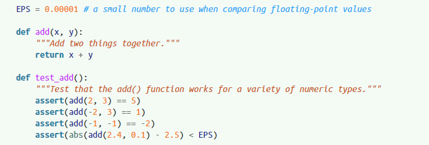</p>
<h4 id="当你写代码时，需要考虑下面三个问题">当你写代码时，需要考虑下面三个问题</h4>
<ul>
<li>这段代码被其他代码引用的次数有多高？</li>
<li>如果这段代码有误，对最终结果的影响有多大</li>
<li>如果错误发生，错误提示有多明显？</li>
</ul>
<p>前两个问题决定了测试这段代码的重要性；第三个问题决定测试的比例（如果报错很明显，也不用去测试）。</p>
<h3 id="1-3-5-Use-Existing-Libraries-Whenever-Possible">1.3.5 Use Existing Libraries Whenever Possible</h3>
<p>Existing open source libraries have two advantages over libraries you write yourself: a</p>
<p>longer history and a wider audience. Both of these advantages translate to fewer bugs.</p>
<p>自己写的代码存在两个问题：</p>
<ol>
<li>没有其他人帮你找bug</li>
<li>你可能没有考虑到所有可能的情况。</li>
</ol>
<h3 id="1-3-6-Treat-Data-as-Read-Only-（好）">1.3.6 Treat Data as Read-Only （好）</h3>
<p>**很多科学家用Excel，很可能不小心改变了一个单元格的数值，然后保存了。**作者强烈不建议在Excel 中修改数据。<strong>相反，应该把所有的数据均视为只读数据，只允许用代码读取数据，然后创造新的结果文件。</strong></p>
<p>为什么这么做？首先，直接修改数据可以会导致不好的结果。比如，你写了一个代码，直接修改源文件，但是在运行过程中，出现错误程序崩了。由于初始文件已经改变了，这就造成了不可逆的结果，没法再用了（除非你有备份）</p>
<p>其次，<strong>当我们原地修改一个文件时，我们很容易忘记当时是怎么修改的</strong>（确实是这样，特别是在excel里）。不像在使用代码的流程中，每一步都有input file 和 output file。原地修改文件后，重新打开文件，我们不知道我们改了啥，这种改变是<strong>不能再现的</strong>。</p>
<p>很棒的想法。我之前在excel 整理表型数据，看来是错了。</p>
<blockquote>
<p>Treating data as read-only may seem counterintuitive to scientists familiar with working extensively in Excel, but it’s essential to robust research (and prevents catastrophe, and  helps  reproducibility).  The  initial  difficulty  is  well  worth  it;  in  addition  to  safe-guarding  data  from  corruption  and  incorrect  changes,  it  also  fosters  reproducibility. Additionally,  any  step  of  the  analysis  can  easily  be  redone,  as  the  input  data  is unchanged by the program.</p>
</blockquote>
<h3 id="1-3-7-Spend-Time-Developing-Frequently-Used-Scripts-into-Tools">1.3.7 Spend Time Developing Frequently Used Scripts into Tools</h3>
<p>对于经常使用的脚本，建议写成 tools 。作者对 tool 的定义是： They are well documented,  have  explicit  versioning,  have  understandable  command-line  arguments,  and  are  kept  in  a  shared  version  control  repository。</p>
<p>说白了，就是要robust 、 要有足够的文档解释、用户友好。</p>
<h3 id="1-3-8-Let-Data-Prove-That-It’s-High-Quality">1.3.8 Let Data Prove That It’s High Quality</h3>
<p>exploratory  data  analysis (探索性数据分析)</p>
<h2 id="1-4-Recommendations-for-Reproducible-Research">1.4 Recommendations for Reproducible Research</h2>
<p>可重复是说<strong>当你做完一项工作很久之后，你可能都忘了细节，这时如果你还需要重新跑一遍时的难易程度</strong>（这个定义比较好）</p>
<h3 id="1-4-1-Release-your-code-and-data">1.4.1 Release your code and data</h3>
<h3 id="1-4-2-Document-everything（好）">1.4.2 Document everything（好）</h3>
<p>**当一个新人进入实验室，他们被告知的第一件事就是保留一个实验记录本。**当很可惜的是，这个好的习惯在数据计算领域被抛弃了。给出代码和数据是结果重现的必要条件，但是足够的记录也是结果可重现的重要成分。为了完整的重现一个研究，分析的每一步都必须足够详细的描述（甚至要超过学术论文的描述）</p>
<p>一个好的习惯是把你的每一步操作都记录在一个<strong>README</strong>的文本文件中，就像一个详细的实验记录本一样，包括了有哪些准备文件，来自哪里，有哪些内容。这个文本文件中还要包括每个软件执行时的参数，软件版本，然后怎么运行的（对我而言，就是命令+软件版本）。</p>
<h3 id="1-4-3-Make-Figures-and-Statistics-the-Results-of-Scripts-（好）">1.4.3 Make Figures and Statistics the Results of Scripts （好）</h3>
<blockquote>
<p>Ensuring that a scientific project is reproducible involves more than just replicability of  the  key  statistical  tests  important  for  findings—supporting  elements  of  a  paper (e.g.,  figures  and  tables)  should  also  be  reproducible.  The  best  way  to  ensure  these components are reproducible is to have each image or table be the output of a script (or scripts).</p>
</blockquote>
<p>这段话的意思是，为了真正的重现每一步，图片和表格也应该是用代码生成的（而不是手动生成的）。</p>
<p><strong>用代码生成图片或者表格可能比在 R 或 excel 里互动地生成这些东西更加耗时</strong>。但是如果你体验需要重新手动生成很多图片时（改了前面的某个步骤），你就会知道这样做的好处。如果你用代码生成图片和代码，可以很轻松地重新跑，节约时间。</p>
<h3 id="1-4-4-Use-Code-as-Documentation">1.4.4 Use Code as Documentation</h3>
<p>对于复杂流程，可能最好的说明文档就是<strong>well-documented code</strong>。</p>
<p>这里就是说一个总的程序（比如sh程序），把所有用到的步骤都串起来，但是要有足够多的注释。</p>
<h1>第2部分 Prerequisites: Essential Skills for Getting Started with a Bioinformatics Project</h1>
<h2 id="2-1-Project-Directories-and-Directory-Structures">2.1 Project Directories and Directory Structures</h2>
<p><strong>一个管理良好的目录结构是生信项目可重复的基础</strong>。</p>
<p>首先，把一个项目的所有文件都放在一个文件夹中。</p>
<p><strong>个人感觉，文件夹深度最好不要超过两层。</strong></p>
<h3 id="2-1-1-What’s-in-a-Name">2.1.1 What’s in a Name?</h3>
<p>给文件或文件夹起名这件事很重要。比如有些人起名时存在空格，这在linux系统内绝对不允许，因为linux是通过空格分隔参数的。</p>
<p>在项目中，代码中经常需要引用其他文件（如数据），如果需要引用其他文件夹的文件，如果你的文件管理很规范，那么<strong>尽量使用相对路径，而不是绝对路径</strong>，因为<strong>绝对路径和你的账户名和目录结构有关</strong>，使得你的工作移植性变差。</p>
<h2 id="2-2-Project-Documentation">2.2 Project Documentation</h2>
<p>除了良好的目录结构外，你还需要良好的记录。记录的方法如下</p>
<ol>
<li>
<p>记录下你的所有方法和workflows</p>
<p><strong>需要把所有的在shell中运行的命令行复制粘贴到文档中</strong>。记录下所有的步骤和参数。</p>
</li>
<li>
<p>记录下你项目中所有数据的来源</p>
<p>不仅仅是实验数据，还包括别人发你的数据，参考基因组等。如果是从网上下载的，需要附上链接。</p>
</li>
<li>
<p>记录下你下载数据的时间</p>
<p>当你从晚上或服务器下载数据时，这个链接的数据将来可能会改变。</p>
</li>
<li>
<p>记录下数据版本信息</p>
</li>
<li>
<p>记录下你下载数据的方式</p>
</li>
<li>
<p>记录下你使用软件的版本（重要）</p>
<p>很多软件通过命令行就能查询版本。如果没有版本，记录下<strong>发行日期，软件链接，下载日期</strong>。</p>
</li>
</ol>
<p>所有的这些信息最好都存储在一个文本格式的README文件。文本文件没有格式，这样在复制命令并重新运行的时候不会出问题。<strong>不要使用word这种带有格式的文件</strong>。</p>
<p>README文件最好放在项目的主文件夹中。下面的描述我感觉真的是<strong>人间真实</strong>。</p>
<blockquote>
<p>These README files don’t necessarily need  to  be  lengthy,  but  they  should  at  the  very  least  explain  what’s  in  this  directory and how it got there. Even this small effort can save someone exploring your project directory a lot of time and prevent confusion. This someone could be your advisor or a  collaborator,  a  colleague  trying  to  reproduce  your  work  after  you’ve  moved  onto  a different lab, or even yourself six months from now when you’ve completely forgotten what you’ve done (this happens to everyone!)</p>
</blockquote>
<p>即使你觉得你能记住所有的数据信息，把所有的信息直接丢到README文件中更简单（当其他人看你做的东西，也不需要给你打电话或发邮件）。</p>
<h2 id="2-3-Use-Directories-to-Divide-Up-Your-Project-into-Subprojects">2.3 Use Directories to Divide Up Your Project into Subprojects</h2>
<h2 id="2-4-Organizing-Data-to-Automate-File-Processing-Tasks">2.4 Organizing Data to Automate File Processing Tasks</h2>
<p>文件命名要规律，方便使用程序自动化运行。</p>
<p>比如有三个玉米样本，A，B，C，各有两个read，可以这么命名</p>
<figure class="highlight plain"><table><tr><td class="gutter"><pre><span class="line">1</span><br><span class="line">2</span><br><span class="line">3</span><br><span class="line">4</span><br><span class="line">5</span><br><span class="line">6</span><br></pre></td><td class="code"><pre><span class="line">$ touch seqs&#x2F;zmays&#123;A,B,C&#125;_R&#123;1,2&#125;.fastq</span><br><span class="line">$ ls</span><br><span class="line">zmaysA_R1.fastq zmaysB_R1.fastq zmaysC_R1.fastq</span><br><span class="line">zmaysA_R2.fastq zmaysB_R2.fastq zmaysC_R2.fastq</span><br><span class="line">#如果你要查找B样本的所有数据，可以使用通配符</span><br><span class="line">$ ls zmaysB*</span><br></pre></td></tr></table></figure>
<p>使用通配符查找文件，这个功能非常强大。</p>
<p>但是如果你的文件命名不一致，通配符就无用了。比如zmays sampleA - 1.fastq, zmays_sampleA-2.fastq,  sampleB1.fastq, sample-B2.fastq。</p>
<h3 id="2-4-1-Leading-Zeros-and-Sorting-文件命名补0-（好）">2.4.1 Leading Zeros and Sorting (文件命名补0)（好）</h3>
<p>如果你的文件名为gene-1.txt, gene-2.txt, ……， gene-14.txt，查找和排序顺序就会是下面这种</p>
<p>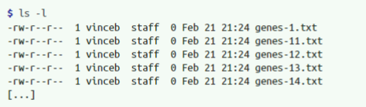</p>
<p>一个有效的方法是开头补0（比如 001 002 014），这样文件就会按正确的顺序排序。</p>
<p>这种方法不仅仅是对于文件命名有用，对于命名基因等也很有用，比如<strong>Ensembl就用这种方式命名基因</strong>（如 ENSG00000164256 ）</p>
<p>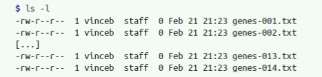</p>
<h2 id="2-5-Markdown-for-Project-Notebooks">2.5 Markdown for Project Notebooks</h2>
<p>项目笔记里要包括计算步骤、为什么这么做的详细信息。</p>
<h3 id="2-5-1-Markdown-Formatting-Basics">2.5.1 Markdown Formatting Basics</h3>
<h3 id="2-5-2-Using-Pandoc-to-Render-Markdown-to-HTML">2.5.2 Using Pandoc to Render Markdown to HTML</h3>
<p>把markdown 转化为html</p>
<figure class="highlight plain"><table><tr><td class="gutter"><pre><span class="line">1</span><br></pre></td><td class="code"><pre><span class="line">pandoc --from markdown --to html notebook.md &gt; output.html</span><br></pre></td></tr></table></figure>
<h1>3 Remedial Unix Shell</h1>
<h2 id="3-1-Why-Do-We-Use-Unix-in-Bioinformatics-Modularity-and-the-Unix-Philosophy">3.1 Why Do We Use Unix in Bioinformatics? Modularity and the Unix Philosophy</h2>
<h3 id="Unix-哲学">Unix 哲学</h3>
<p>即模块化开发。Unix 还有一个好处就是兼容各种语言和工具。</p>
<blockquote>
<p>This  is  the  Unix  philosophy:  Write  programs  that  do  one  thing  and  do  it  well.  Write programs  to  work  together.  Write  programs  to  handle  text  streams,  because  that  is  a universal interface.</p>
<p>​																									                                                 —Doug McIlory</p>
</blockquote>
<blockquote>
<p>Unix  was  not  designed  to  stop  its  users  from  doing  stupid  things,  as  that  would  also stop them from doing clever things.</p>
<p>​																																				     —Doug Gwyn</p>
</blockquote>
<h4 id="tail-f">tail -f</h4>
<p>监视重定向的<strong>标准错误文件</strong>。</p>
<p>-f 选项 会把 filename 文件里的最尾部的内容显示在屏幕上，并且不断刷新，只要 filename 更新就可以看到最新的文件内容。</p>
<h4 id="管道（pipe）">管道（pipe）</h4>
<p>上一个文件的标准输出是下一个文件的标准输入，但是<strong>标准错误还是打印在屏幕上</strong>。管道符不会处理标准错误信息</p>
<p>为什么通过管道符来连接两个程序？而不是把上一个程序的结果写入到一个文件中，然后再由另一个程序读取呢？在很多情况下，生成中间文件有利于debug。</p>
<p>管道符的优点在于计算效率上：<strong>读取和写入文件很耗时</strong>。使用管道符，一直是在内存中读取数据，<strong>而内存读取的速度远快于磁盘</strong>。</p>
<p><strong>实践中，写入和读取数据通常是数据处理的瓶颈</strong>。</p>
<blockquote>
<p>In  practice,  writing  or  reading  from  a  disk  (e.g.,  during  redirection  of standard  output  to  a  file)  is  often  a  bottleneck  in  data  processing.  For  large  next-generation sequencing  data,  this  can  slow  things  down  quite  considerably.  If  you  implement  a clever algorithm that’s twice as fast as an older version, you may not even notice the difference if the true bottleneck is reading or writing to the disk. Additionally, unnecessarily  redirecting  output  to  a  file  uses  up  disk  space.  With  large  next-generation data and potentially many experimental samples, this can be quite a problem.</p>
</blockquote>
<blockquote>
<p>Pipes allow us to build larger, more complex tools from smaller modular parts. It  doesn’t  matter  what  language  a  program  is  written  in,  either;  pipes  will  work between  anything  as  long  as  both  programs  understand  the  data  passed  between them</p>
</blockquote>
<h5 id="实践">实践</h5>
<p>需求：在 FASTA 文件中存在非ATGC的字符，找到这些字符</p>
<figure class="highlight plain"><table><tr><td class="gutter"><pre><span class="line">1</span><br><span class="line">2</span><br></pre></td><td class="code"><pre><span class="line">grep -v &quot;^&gt;&quot; tb1.fasta | \</span><br><span class="line">grep --color -i &quot;[^ATCG]&quot;  </span><br></pre></td></tr></table></figure>
<p>第一句找出不是以 &gt; 开头的行（-v 反转）</p>
<p>\ <strong>反斜杠断行，提高可读性</strong></p>
<p>第二句找出存在非ATGC的行，-i 忽视大小写 --color 用颜色标记匹配上的字符</p>
<p><strong>grep中的查找部分最好加上双引号</strong>，这样能与其他部分区分。</p>
<h4 id="合并管道符和重定向-好">合并管道符和重定向 (好)</h4>
<p>假如我们有两个程序，program1 和 program2 ，program 2 使用 program1 的结果文件作为输入文件，但是这两个程序的标准错误文件都会打印到屏幕上，这会导致屏幕上的信息非常乱。我们可以这样写：</p>
<figure class="highlight plain"><table><tr><td class="gutter"><pre><span class="line">1</span><br><span class="line">2</span><br></pre></td><td class="code"><pre><span class="line">program1 input.txt 2&gt; program1.stderr  | \      </span><br><span class="line">program2 2&gt; program2.stderr &gt; results.txt </span><br></pre></td></tr></table></figure>
<h4 id="管道符生成中间文件-tee">管道符生成中间文件 - tee</h4>
<p>管道符本身是不生成中间文件的。但是有时候需要生成中间文件，一是为了 debug ；二是为了 存储耗时比较长的步骤的中间文件（说白了，就是避免报错后完全从头开始）</p>
<p>使用 tee 命令可以做到（翻译成中文是三通管），就像是水管的三通管（T形管）一样，tee 命令一方面将结果传给标准输出，一方面备份生成中间文件。</p>
<figure class="highlight plain"><table><tr><td class="gutter"><pre><span class="line">1</span><br></pre></td><td class="code"><pre><span class="line">program1 input.txt | tee intermediate-file.txt | program2 &gt; results.txt</span><br></pre></td></tr></table></figure>
<h4 id="后台程序">后台程序</h4>
<h4 id="">&amp;</h4>
<p>这个会打印出来一个 process ID (PID)，这个问题是<strong>如果终端关闭，这个程序也会关闭</strong>。</p>
<blockquote>
<p>Whenever  our  terminal  window  closes,  it  sends  a  hangup signal. Hangup  signals  (also  know  as  SIGHUP)  are  from  the  era  in  which network  connections  were  much  less  reliable.  A  dropped  connection  could  prevent  a  user  from  stopping  an  aberrant,  resource-hungry  process.  To  address  this,  the  hangup  signal  is  sent  to  all processes started from closed terminal. Nearly all Unix command-line programs stop running as soon as they receive this signal. So beware—running a process in the background does not guarantee that it won’t die when your terminal closes. To prevent this, we need to use the tool  nohup or run it from within Tmux.</p>
</blockquote>
<p>这段没看懂，大概是说终端关闭时，会发送一个挂起信号（hangup）。所有的程序接到这个信号就会关闭。</p>
<p>nohup 原来就是不挂起的意思</p>
<h4 id="前台转后台">前台转后台</h4>
<p>第一步先暂停（suspend , 使用快捷键 ctrl + z），第二步使用 bg 命令（background）</p>
<figure class="highlight plain"><table><tr><td class="gutter"><pre><span class="line">1</span><br><span class="line">2</span><br><span class="line">3</span><br><span class="line">4</span><br><span class="line">5</span><br></pre></td><td class="code"><pre><span class="line">$ program1 input.txt &gt; results.txt # forgot to append ampersand</span><br><span class="line">$ # enter control-z</span><br><span class="line">[1]+  Stopped                  program1 input.txt &gt; results.txt</span><br><span class="line">$ bg</span><br><span class="line">[1]+ program1 input.txt &gt; results.txt</span><br></pre></td></tr></table></figure>
<h4 id="退出状态">退出状态</h4>
<p>程序退出状态的好处在于运行下一个程序前可以先检查上一个程序的退出状态，如果正常，再进行下一步。</p>
<p>&amp;&amp; 符号 只有前面的程序退出状态是0时，才执行下一步的程序。</p>
<figure class="highlight plain"><table><tr><td class="gutter"><pre><span class="line">1</span><br><span class="line">2</span><br></pre></td><td class="code"><pre><span class="line">$ program1 input.txt &gt; intermediate-results.txt &amp;&amp; \    </span><br><span class="line">	program2 intermediate-results.txt &gt; results.txt</span><br></pre></td></tr></table></figure>
<p>|| 符号 只有前面的程序运行失败时，才运行下一步，这个用于提示警告信息</p>
<figure class="highlight plain"><table><tr><td class="gutter"><pre><span class="line">1</span><br><span class="line">2</span><br></pre></td><td class="code"><pre><span class="line">$ program1 input.txt &gt; intermediate-results.txt || \    </span><br><span class="line">	echo &quot;warning: an error occurred&quot;</span><br></pre></td></tr></table></figure>
<p>我觉得这两个都用不上。反正我没有这个习惯，毕竟报错了下一步肯定也运行不下去。这里感觉可读性也不好。</p>
<h4 id="命令替换">命令替换 $()</h4>
<p>这里其实是替换为 $() 中程序运行的结果</p>
<figure class="highlight plain"><table><tr><td class="gutter"><pre><span class="line">1</span><br><span class="line">2</span><br><span class="line">3</span><br><span class="line">4</span><br></pre></td><td class="code"><pre><span class="line">$ grep -c &#39;^&gt;&#39; input.fasta </span><br><span class="line">416</span><br><span class="line">$ echo &quot;There are $(grep -c &#39;^&gt;&#39; input.fasta) entries in my FASTA file.&quot;</span><br><span class="line">There are 416 entries in my FASTA file</span><br></pre></td></tr></table></figure>
<h5 id="date-创建文件夹">$() + date 创建文件夹</h5>
<p>有一个妙用是按日期创建文件夹（正好满足规范命名的要求，而且 ls 会按日期顺序排列）</p>
<p>这个我可以用 “项目号+日期” 来命名。</p>
<figure class="highlight plain"><table><tr><td class="gutter"><pre><span class="line">1</span><br><span class="line">2</span><br></pre></td><td class="code"><pre><span class="line">$ mkdir results-$(date +%F)</span><br><span class="line">$ ls results-2015-04-13</span><br></pre></td></tr></table></figure>
<h5 id="存储别名（不好）">存储别名（不好）</h5>
<p>你可以将常用的命令用 alias 命令设置个别名，然后把这条命令放在 ~/.bashrc 文件中。</p>
<p>比如</p>
<figure class="highlight plain"><table><tr><td class="gutter"><pre><span class="line">1</span><br><span class="line">2</span><br><span class="line">3</span><br><span class="line">4</span><br></pre></td><td class="code"><pre><span class="line">alias mkpr&#x3D;&quot;mkdir -p &#123;data&#x2F;seqs,scripts,analysis&#125;&quot;</span><br><span class="line"></span><br><span class="line">alias today&#x3D;&quot;date +%F&quot;</span><br><span class="line"># mkdir results-$(today) </span><br></pre></td></tr></table></figure>
<p>但是，这种做法不要用在脚本中，因为不可移植。</p>
<h1>4 Working with Remote Machines</h1>
<h2 id="4-1-Connecting-to-Remote-Machines-with-SSH">4.1 Connecting to Remote Machines with SSH</h2>
<p>连接远方的服务器最常见的方法是通过 secure shell (SSH)。ssh 首先是安全，其次是在每个UNIX 系统都存在。</p>
<p>第一次使用ssh连接远方的主机时，我们使用如下命令：你需要输入你远方主机账号的密码</p>
<p>ssh 直接输入 ip地址，比如 192.169.237.42；如果你的服务器使用的端口不同（默认22），可以通过 -p 选项修改；如果你远方服务器使用的账号名称和你本地的账号名称不一样，你需要指定账号名称。如果你连接不上远方服务器，你可以使用 -v (冗长信息)选项</p>
<p>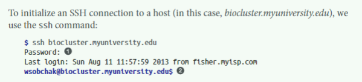</p>
<p></p>
<h3 id="4-1-1-Storing-Your-Frequent-SSH-Hosts-好">4.1.1 Storing Your Frequent SSH Hosts (好)</h3>
<p>经常输入IP地址啥的，让人很烦。你可以使用 SSH config file 来储存常用的 host 信息。（这个文件还可以用于 scp 和 rsync 命令）</p>
<p>首先创建文件 ~/.ssh/config</p>
<p>每个目录按照下面这种形式</p>
<figure class="highlight plain"><table><tr><td class="gutter"><pre><span class="line">1</span><br><span class="line">2</span><br><span class="line">3</span><br><span class="line">4</span><br></pre></td><td class="code"><pre><span class="line">Host bio_serv</span><br><span class="line">	 HostName 192.168.237.42     </span><br><span class="line">	 User cdarwin     </span><br><span class="line">	 Port 50453</span><br></pre></td></tr></table></figure>
<p>之后你就可以不用指定port 和 user 。直接使用命令</p>
<figure class="highlight plain"><table><tr><td class="gutter"><pre><span class="line">1</span><br></pre></td><td class="code"><pre><span class="line">ssh bio_serv</span><br></pre></td></tr></table></figure>
<p>如果你连上了很多个服务器，你可能想知道 hostname ，来确认现在在哪个服务器中</p>
<figure class="highlight plain"><table><tr><td class="gutter"><pre><span class="line">1</span><br><span class="line">2</span><br></pre></td><td class="code"><pre><span class="line">hostname </span><br><span class="line">hostname -i #ip地址</span><br></pre></td></tr></table></figure>
<p>hostname 和 IP地址的区别</p>
<blockquote>
<p>hostname是主机名，用于在系统上标bai识一台机器； IP地址是在tcp/ip网络中du唯一标志一台机器。zhi联系到实际生活。主机dao名相当于你家的主人名，如张三家；而IP地址相当于小区内你家的门牌号，如30号楼2单元302。</p>
</blockquote>
<h2 id="4-2-Quick-Authentication-with-SSH-Keys">4.2 Quick Authentication with SSH Keys</h2>
<p>每次登录远方的账户都要输入密码，这很麻烦，而且可能不安全（可能有人看到你敲键盘，然后记住了）（大神真是严谨！）</p>
<p>一个更安全更快的方式是使用 <strong>SSH public key</strong>。这个好像和密码学有关系。</p>
<p>首先我们需要通过 <strong>ssh-keygen</strong> 命令 创建一个 public/private key pair 。公钥和私钥的区别在于你可以把公钥分享给其他的servers，但是私钥是不能分享的。</p>
<p>这个命令可以不加任何参数，直接加一个-o选项（提高安全性，描述的意思是降低了暴力破解的难度）</p>
<p>然后就会在 ~/.ssh 目录下生成 id_rsa （私钥）和 id_rsa.pub （公钥）</p>
<figure class="highlight plain"><table><tr><td class="gutter"><pre><span class="line">1</span><br></pre></td><td class="code"><pre><span class="line">ssh-keygen -o</span><br></pre></td></tr></table></figure>
<blockquote>
<p>-o      Causes ssh-keygen to save private keys using the new OpenSSH format<br>
rather than the more compatible PEM format.  The new format has<br>
increased resistance to brute-force password cracking but is not sup‐<br>
ported by versions of OpenSSH prior to 6.5.  Ed25519 keys always use<br>
the new private key format.</p>
<pre><code>  														-- man ssh-keygen
</code></pre>
</blockquote>
<p>为了可以登录你的远方账号而不输入密码，第一步先正常输入密码登录你的远方账号，然后切换目录到 ~/.ssh，然后把你本地目录下的公钥的内容（id_rsa.pub）<strong>追加到</strong> 远方账号的~/.ssh/authorized_keys 文件中（这个文件不存在怎么办？）。</p>
<blockquote>
<p>Again,  be  sure  you’re  using  your  public  key,  and  not  the  private  key.  If  your  private key  ever  is  accidentally  distributed,  this  compromises  the  security  of  the  machines you’ve  set  up  key-based  authentication  on.  The   ~/.ssh/id_rsa private  key  has  read/write  permissions  only  for  the  creator,  and  these  restrictive  permissions  should  be kept this way</p>
</blockquote>
<p>最后一步看不懂，不知道啥意思。这一步完了，之后就不用输入密码了。</p>
<p></p>
<h2 id="4-3-Maintaining-Long-Running-Jobs-with-nohup-and-tmux">4.3 Maintaining Long-Running Jobs with nohup and tmux</h2>
<p>SSH 的方式应该是通过网络的方法连接到服务器，如果网断了，就连不上了，正在跑的程序也中断了（这个时候要用nohup）</p>
<p>使用nohup 的时候<strong>最好把标准输出和标准错误都重定向</strong>（默认是标准输出和标准错误均<strong>追加</strong>到nohup.out，如果重复运行这个程序，nohup.out 会比较乱）。第二，是记录下PID（这是终端关闭后唯一能找到程序的办法）</p>
<p>jobs -l 只能看到当前终端生效的，关闭终端后，在另一个终端jobs已经无法看到后台跑得程序了，此时利用ps（进程查看命令）</p>
<figure class="highlight plain"><table><tr><td class="gutter"><pre><span class="line">1</span><br><span class="line">2</span><br><span class="line">3</span><br></pre></td><td class="code"><pre><span class="line">ps -aux|grep chat.js</span><br><span class="line">ps -aux|grep chat.js| grep -v grep</span><br><span class="line">ps -aux|grep chat.js| grep -v grep | awk &#39;&#123;print $2&#125;&#39;</span><br></pre></td></tr></table></figure>
<h2 id="4-4-Working-with-Remote-Machines-Through-Tmux">4.4 Working with Remote Machines Through Tmux</h2>
<p>nohup 的一个替代方法是使用 <strong>terminal multiplexer</strong>。这里我们使用的是 Tmux，但是更流行的是 GNU Screen。这个适合用于远程服务器，所有打开的窗口都是persistent，无论断网或者你自己关闭窗口，都不会影响程序的运行。</p>
<p>之后再看。</p>
<h3 id="4-4-1-Installing-and-Configuring-Tmux">4.4.1 Installing and Configuring Tmux</h3>
<h3 id="4-4-2-Creating-Detaching-and-Attaching-Tmux-Sessions">4.4.2 Creating, Detaching, and Attaching Tmux Sessions</h3>
<h3 id="4-4-3-Working-with-Tmux-Windows">4.4.3 Working with Tmux Windows</h3>
<h1>5 Git for Scientists</h1>
<h2 id="5-1-Basic-Git-Creating-Repositories-Tracking-Files-and-Staging-and-Committing-Changes">5.1 Basic Git: Creating Repositories, Tracking Files, and Staging and Committing Changes</h2>
<p>首先告诉GIT 你是谁</p>
<figure class="highlight plain"><table><tr><td class="gutter"><pre><span class="line">1</span><br><span class="line">2</span><br></pre></td><td class="code"><pre><span class="line">$ git config --global user.name &quot;Sewall Wright&quot;</span><br><span class="line">$ git config --global user.email &quot;swright@adaptivelandscape.org&quot;</span><br></pre></td></tr></table></figure>
<p>GIT 可以通过颜色显示变化（例如红色表示删除，绿色表示新增或修改）</p>
<figure class="highlight plain"><table><tr><td class="gutter"><pre><span class="line">1</span><br></pre></td><td class="code"><pre><span class="line">$ git config --global color.ui true</span><br></pre></td></tr></table></figure>
<h3 id="5-1-1-git-init-and-git-clone-Creating-Repositories">5.1.1 git init and git clone: Creating Repositories</h3>
<p>为了开始使用git，我们需要新建一个文件夹（git repository）。一个 repository 就是一个处于版本控制下的目录，包括当前的文件和过去某个时间节点的快照。这些快照用行话来说就是<strong>commits</strong>。</p>
<blockquote>
<p>With Git, there are two primary ways to create a repository: by initializing one from an  existing  directory,  or  cloning  a  repository  that  exists  elsewhere.  Either  way,  the result is a directory that Git treats as a repository. Git only manages the files and subdirectories  inside  the  repository  directory—it  cannot  manage  files  outside  of  your repository.</p>
</blockquote>
<p><strong>git init</strong></p>
<pre><code>1.  先cd到需要的位置
2.  git init
</code></pre>
<p><strong>git clone</strong></p>
<p>github 是固定格式 <em>user/repository</em></p>
<figure class="highlight plain"><table><tr><td class="gutter"><pre><span class="line">1</span><br></pre></td><td class="code"><pre><span class="line">git clone git:&#x2F;&#x2F;github.com&#x2F;user&#x2F;repository.git</span><br></pre></td></tr></table></figure>
<h3 id="5-1-2-Tracking-Files-in-Git-git-add-and-git-status-Part-I">5.1.2 Tracking Files in Git: git add and git status Part I</h3>
<p>虽然你创建了repository ，但git并不会跟踪所有的文件（必须手动 git add）。<strong>这一点在生信项目中很有用，生信项目中有很多我们不想追踪的文件，包括数据文件、中间结果文件等</strong>。</p>
<p>在追踪文件中，我们先通过命令<code>git status</code>来查看repo（个人之后用repo作为repository的简写）的状态</p>
<p>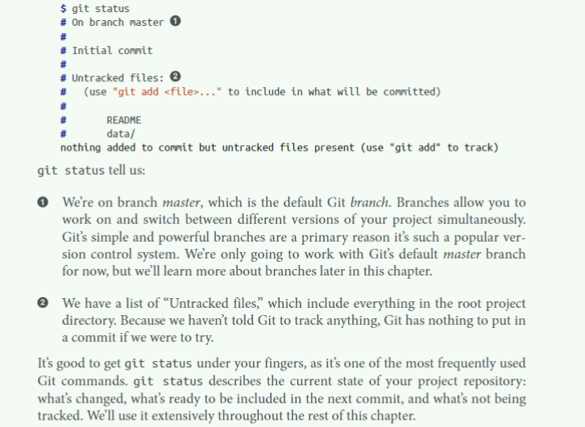</p>
<p>然后使用 git add 加入需要追踪的文件（一行可以添加多个文件）</p>
<h3 id="5-1-3-Staging-Files-in-Git-git-add-and-git-status-Part-II">5.1.3 Staging Files in Git: git add and git status Part II</h3>
<p>这里的stage file 的意思是之前使用git add 追踪的文件，如果修改git不会自动获取，还需要进行git add，这就叫做 staging (应该就是暂存的意思)</p>
<blockquote>
<p>Part of the confusion lies in the fact that <strong>git add</strong> both tracks new files and stages the changes made to tracked files.</p>
</blockquote>
<p>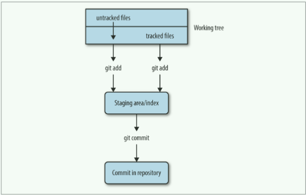</p>
<p>如果我们更改了跟踪的文件，而没有进行<code>git add</code>，使用 <code>git status</code>查看结果如下：</p>
<p>提示 README 文件当前状态是 <strong>“Changes not staged for commit”</strong></p>
<p>如果这个时候进行 <code>git commit</code>提交的就是旧的 README 文件，而不是新的文件。</p>
<p>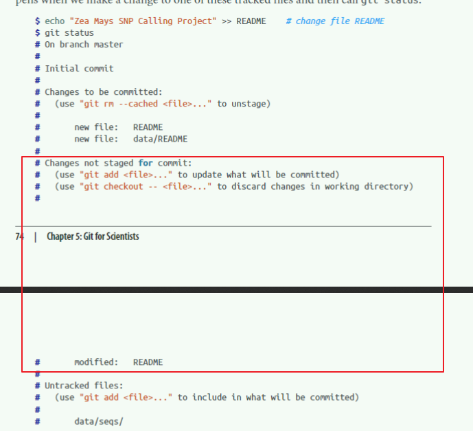</p>
<p>这个给我的提示就是常用<code>git status</code>命令。</p>
<blockquote>
<p>It’s  important  to  be  aware  that  any  modifications  made  to  a  file  since  the  last  time  it was  staged  will  not  be  included  in  the  next  commit  unless  they  are  staged  with  git add.  This  extra  step  may  seem  like  an  inconvenience  but  actually  has  many  benefits.</p>
<p>Suppose  you’ve  made  changes  to  many  files  in  a  project.  Two  of  these  files’  changes are  complete,  but  everything  else  isn’t  quite  ready.  Using  Git’s  staging,  you  can  stage and commit only these two complete files and keep other incomplete files out of your commit.  Through  planned  staging,  your  commits  can  reflect  meaningful  points  in development  rather  than  random  snapshots  of  your  entire  project  directory  (which would likely include many files in a state of disarray). When we learn about committing in the next section, we’ll see a shortcut to stage and commit all modified files</p>
</blockquote>
<h3 id="5-1-4-git-commit-Taking-a-Snapshot-of-Your-Project">5.1.4 git commit: Taking a Snapshot of Your Project</h3>
<p>如果只有一行说明</p>
<figure class="highlight plain"><table><tr><td class="gutter"><pre><span class="line">1</span><br></pre></td><td class="code"><pre><span class="line">git commit -m &quot;&quot;</span><br></pre></td></tr></table></figure>
<p>如果有多行说明</p>
<figure class="highlight plain"><table><tr><td class="gutter"><pre><span class="line">1</span><br><span class="line">2</span><br><span class="line">3</span><br><span class="line">4</span><br></pre></td><td class="code"><pre><span class="line">git commit</span><br><span class="line">#会弹出界面，然后写入即可</span><br><span class="line">#修改默认编辑器，这里改成emacs</span><br><span class="line">git config --global core.editor emacs</span><br></pre></td></tr></table></figure>
<p>最好不要稍微有些改动就commit，这样会使得你在回顾log文件时很迷惑，整个开发流程不清晰。因此每次commit的版本要有非常清晰的改动和变化，比如添加了某个功能，修改了某个bug。</p>
<p><strong>-a <strong>选项可以将所有已跟踪文件中的执行修改或删除操作的文件都提交到本地仓库（也就是可以跳过 git add），但是</strong>新加的文件（即没有被git系统管理的文件）是不能被提交到本地仓库的。</strong></p>
<figure class="highlight plain"><table><tr><td class="gutter"><pre><span class="line">1</span><br></pre></td><td class="code"><pre><span class="line">git commit -a -m “”</span><br></pre></td></tr></table></figure>
<p><strong>我们需要将所有的改变都记录在commit中，并且要有一个清晰的脉络（git commit的注释要足够清晰），方便我们自己看或别人看</strong>。</p>
<h3 id="5-1-5-Seeing-File-Differences-git-diff">5.1.5 Seeing File Differences: git diff</h3>
<p><code>git diff</code>会告诉你工作目录和暂存区（stage）文件的差别。具体提示信息不太懂</p>
<p>如果你修改文件后进行<code>git add</code>，那么<code>git diff</code>不会显示任何不同。</p>
<p>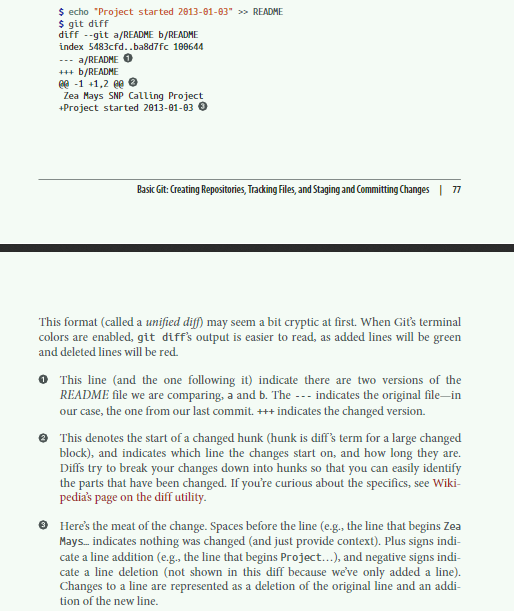</p>
<p>如果你想看暂存和上次commit之间的区别（ compare  what’s  been  staged  to  our  last  commit  ），可以使用<code>git diff --staged</code> 选项。</p>
<h3 id="5-1-6-Seeing-Your-Commit-History-git-log">5.1.6 Seeing Your Commit History: git log</h3>
<p>commits 像一条链状图，每个commit 都指向 它的上一版本</p>
<p>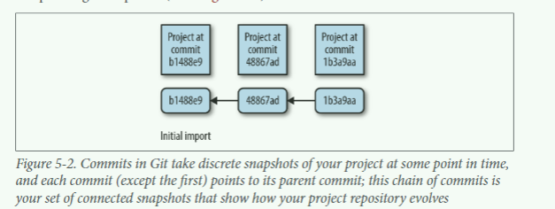</p>
<h3 id="5-1-7-Moving-and-Removing-Files-git-mv-and-git-rm">5.1.7 Moving and Removing Files: git mv and git rm</h3>
<p>对于追踪的文件，GIT希望绝对掌控，因此不能使用默认的mv 和 rm 命令，需要使用 git mv 和 git rm 命令。</p>
<p>比如我们把之前建的 README 添加后缀为 <a target="_blank" rel="noopener" href="http://README.md">README.md</a></p>
<figure class="highlight plain"><table><tr><td class="gutter"><pre><span class="line">1</span><br><span class="line">2</span><br></pre></td><td class="code"><pre><span class="line">$ git mv README README.md</span><br><span class="line">$ git mv data&#x2F;README data&#x2F;README.md</span><br></pre></td></tr></table></figure>
<p>使用 git status，我们看到这个重命名已经staged，等待 committed。这里不需要<code>git add</code>,<code>git add</code> 只适用于修改内容的情况.</p>
<p>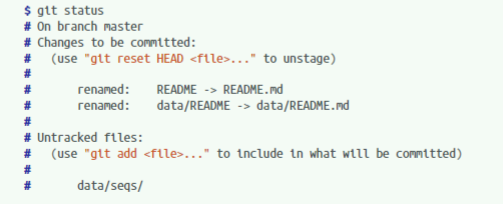</p>
<blockquote>
<p>Note  that  even  if  you  change  or  remove  a  file  and  commit  it,  it  still  exists  in  past snapshots. Git does its best to make everything recoverable. We’ll see how to recover files later on in this chapter.</p>
</blockquote>
<h3 id="5-1-8-Telling-Git-What-to-Ignore-git-ignore">5.1.8 Telling Git What to Ignore: .git ignore</h3>
<p><code>git status</code> 会告诉你哪些文件是 not tracked。如果不被追踪的文件数目过多，也会造成负担。</p>
<p>如果你想要忽视所有的FASTQ文件（后缀为.fastq），你可以新建一个.gitignore文件，然后在文件中添加</p>
<figure class="highlight plain"><table><tr><td class="gutter"><pre><span class="line">1</span><br></pre></td><td class="code"><pre><span class="line">data&#x2F;seqs&#x2F;*.fastq</span><br></pre></td></tr></table></figure>
<p>最好的办法是将.gitignore文件 上传到版本库</p>
<p>哪些文件应该放进.gitignore文件呢？</p>
<ul>
<li>
<p>大文件</p>
<p>GIT 不适合追踪大文件，貌似忽视后 git clone 就不会复制数据文件了</p>
</li>
<li>
<p>中间文件</p>
</li>
</ul>
<p>global.gitignore 文件可以忽视所有项目中的指定文件。</p>
<figure class="highlight plain"><table><tr><td class="gutter"><pre><span class="line">1</span><br></pre></td><td class="code"><pre><span class="line">git config --global core.excludesfile ~&#x2F;.gitignore_global</span><br></pre></td></tr></table></figure>
<blockquote>
<p>A repository should store everything required to replicate a project except large datasets  and  external  programs.  This  includes  all  scripts,  documentation,  analysis,  and possibly even a final manuscript. Organizing your repository this way means that all of  your  project’s  dependencies  are  in  one  place  and  are  managed  by  Git. In  the  long run, it’s far easier to have Git keep track of your project’s files, than try to keep track of them yourself.</p>
</blockquote>
<p>这段话很有意思。他是说一个分析中，所有文件（除了大的数据和外部程序）都要放在repo中，甚至包括<strong>文章手稿</strong>。这样会形成一个清晰的脉络，你可以清楚地清晰轨迹。</p>
<h3 id="5-1-9-Undoing-a-Stage-git-reset">5.1.9 Undoing a Stage: git reset</h3>
<p>如果你修改了文件，并且使用<code>git add</code>了。这时候你后悔了，想要unstage （这里不回退工作目录的文件），使用如下命令</p>
<p>HEAD 是当前分支的上一个 commit ，这里使用上一个commit 替代了 staging area （index） 的内容</p>
<p>**注意 staging area 也称为 index **</p>
<figure class="highlight plain"><table><tr><td class="gutter"><pre><span class="line">1</span><br></pre></td><td class="code"><pre><span class="line">git reset HEAD README.md</span><br></pre></td></tr></table></figure>
<p><strong>使用 --hard 选项可以一并回滚工作目录的文件</strong></p>
<h2 id="5-2-Collaborating-with-Git-Git-Remotes-git-push-and-git-pull">5.2 Collaborating with Git: Git Remotes, git push, and git pull</h2>
<p>使用git进行合作开发要求我们有一个本地的版本库和一个remote repositories。</p>
<blockquote>
<p>Then, we can retrieve commits from a remote repository (a  pull) and send commits to a remote repository (a push).</p>
</blockquote>
<p>假如你已经在本地提交了几个commits，然后你打算和你的同事分享你的进度，这个工作流程是这样的：</p>
<p>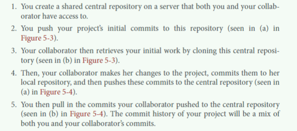</p>
<p></p>
<p>这个过程可以重复，你和你的同事各自独立在自己的本地的repo工作，然后需要共享的时候，push them to the central repository。在大部分情况下，你和你的同事 work on different files or different sections of the same file，Git can automatically figure out how best to merge these changes. 这样你和你的同事可以同事做同一个项目。</p>
<p>注意 <strong>merge conflict</strong>：如果你和同事同时改变了同一个文件的同一部分，那么合并时会产生错误，这个错误只能手动处理。</p>
<h3 id="5-2-1-Creating-a-Shared-Central-Repository-with-GitHub">5.2.1 Creating a Shared Central Repository with GitHub</h3>
<p>上面提到的 central repository 这里主要是用 GitHub</p>
<p>Authenticating with Git Remotes</p>
<h3 id="5-2-2-Authenticating-with-Git-Remotes">5.2.2 Authenticating with Git Remotes</h3>
<p>GitHub 用 SSH keys 来确认你的身份。SSH keys 避免你每次push or pull 都要输入一个密码。</p>
<p>生成公钥的命令见4.2章节，之后复制~/.ssh/id_rsa.pub 的内容，登陆GitHub，打开“Account settings”，“SSH Keys”页面：然后，点“Add SSH Key”，填上任意Title，在Key文本框里粘贴<code>id_rsa.pub</code>文件的内容</p>
<h3 id="5-2-3-Connecting-with-Git-Remotes-git-remote">5.2.3 Connecting with Git Remotes: git remote</h3>
<p>现在我们使用 <code>git remote add</code>命令将我们的本地库和github的库连接</p>
<figure class="highlight plain"><table><tr><td class="gutter"><pre><span class="line">1</span><br></pre></td><td class="code"><pre><span class="line">git remote add origin git@github.com:username&#x2F;zmays-snps.git</span><br></pre></td></tr></table></figure>
<p>这里 origin 是我们起的github库的名称（貌似惯例都是这个名称）。</p>
<p>实际上你可以连接多个 remote repositories（起不同的名称就行，那么我猜测origin 应该是最重要的remote repos）</p>
<p>如果你要删除一个不用的 remote repository ,你可以使用下面的命令</p>
<figure class="highlight plain"><table><tr><td class="gutter"><pre><span class="line">1</span><br></pre></td><td class="code"><pre><span class="line">git remote rm &lt;repository-name&gt;</span><br></pre></td></tr></table></figure>
<h3 id="5-2-4-Pushing-Commits-to-a-Remote-Repository-with-git-push">5.2.4 Pushing Commits to a Remote Repository with git push</h3>
<p>你可以不停地和remote repos 分享commits (但是记住，你只做你该做的部分，避免merge conflict)</p>
<p>我们可以把我们的本地 repo <strong>push</strong> 到远方的服务器。</p>
<figure class="highlight plain"><table><tr><td class="gutter"><pre><span class="line">1</span><br><span class="line">2</span><br></pre></td><td class="code"><pre><span class="line">git push &lt;remote-name&gt; &lt;branch&gt; </span><br><span class="line">#默认是 git push origin master</span><br></pre></td></tr></table></figure>
<h3 id="5-2-5-Pulling-Commits-from-a-Remote-Repository-with-git-pull">5.2.5 Pulling Commits from a Remote Repository with git pull</h3>
<p>你push 了之后，由于 remote repos 更新了，其他人本地的 repos 过时了，他就需要从 remote repos <strong>pull</strong> 到他自己本地的 repos。</p>
<figure class="highlight plain"><table><tr><td class="gutter"><pre><span class="line">1</span><br><span class="line">2</span><br></pre></td><td class="code"><pre><span class="line">git pull &lt;remote-name&gt; &lt;branch&gt; </span><br><span class="line">#默认是 git pull origin master</span><br></pre></td></tr></table></figure>
<h3 id="5-2-6-Working-with-Your-Collaborators-Pushing-and-Pulling">5.2.6 Working with Your Collaborators: Pushing and Pulling</h3>
<blockquote>
<p>once  you  grow  a  bit  more  acquainted  with  pushing  and  pulling  commits,  it  will become second nature.</p>
</blockquote>
<p>注意事项：</p>
<ol>
<li><strong>pull 前 先 commit 你的本地 repos</strong>，不然会报错，也避免丢失你的工作</li>
<li><strong>pull often</strong>: 也就是不停更新你的本地 repos，使你的工作一直是建立你的同事的最新版本之上。</li>
</ol>
<h3 id="5-2-7-Merge-Conflicts">5.2.7 Merge Conflicts</h3>
<p>作者建议遇到了再看，那就恭敬不如从命了</p>
<h3 id="5-2-8-More-GitHub-Workflows-Forking-and-Pull-Requests">5.2.8 More GitHub Workflows: Forking and Pull Requests</h3>
<p>这里提到的使用一个共享的 central repository 不是 Github推荐的工作流。github的惯用做法是，你先fork别人的repo到自己的账户，修改后再发出一个 <strong>pull request</strong> 请求合并。</p>
<p>这样做的好处是使得<strong>核心管理员</strong>可以决定哪些commits 可以加入到项目中。不像本书提到的流程，每个人都能自由地向 central repos 提交commit，这可能会造成bug。</p>
<h2 id="5-3-Using-Git-to-Make-Life-Easier-Working-with-Past-Commits">5.3 Using Git to Make Life Easier: Working with Past Commits</h2>
<p>我们的 commit history 可以做更多的事：比如比对不同版本文件的区别，回退到旧版本，给某些commits 添加 tag。</p>
<h3 id="5-3-1-Getting-Files-from-the-Past-git-checkout">5.3.1 Getting Files from the Past: git checkout</h3>
<p>git 只要是 commit 之后的任何文件都可以轻易恢复。</p>
<p>比如你不小心重写了 <a target="_blank" rel="noopener" href="http://README.md">README.md</a> 的文件内容（通过使用 &gt; ，而不是 &gt;&gt; ）。</p>
<p>但是我们可以通过查询上一个commit 中的文件版本来恢复这个文件，命令如下</p>
<figure class="highlight plain"><table><tr><td class="gutter"><pre><span class="line">1</span><br></pre></td><td class="code"><pre><span class="line">git checkout -- &lt;filename&gt;</span><br></pre></td></tr></table></figure>
<p><a target="_blank" rel="noopener" href="https://blog.csdn.net/piglite/article/details/55328665">https://blog.csdn.net/piglite/article/details/55328665</a></p>
<p>git checkout – filename的作用是把filename文件在工作区的修改撤销到最近一次git add 或 git commit时的内容</p>
<blockquote>
<p>But beware: restoring a file this way erases all changes made to that file since the last commit!  If  you’re  curious,  the  cryptic   –  indicates  to  Git  that  you’re  checking  out  a file, not a branch ( git checkout is also used to check out branches; commands with multiple uses are common in Git)</p>
</blockquote>
<p>这条命令默认是回归到上一次的版本（HEAD）。其实 <code>git checkout</code>可以回退到任何一个版本。</p>
<p>首先通过git log 查看版本号，-n 选项表示查看最近的几条commit</p>
<figure class="highlight plain"><table><tr><td class="gutter"><pre><span class="line">1</span><br></pre></td><td class="code"><pre><span class="line">git log -n 3</span><br></pre></td></tr></table></figure>
<p>查到我们想要回退的commit ID之后，可以使用下列命令回退到该版本</p>
<figure class="highlight plain"><table><tr><td class="gutter"><pre><span class="line">1</span><br></pre></td><td class="code"><pre><span class="line">git checkout 08ccd3b -- README.md</span><br></pre></td></tr></table></figure>
<p>回退之后还可以恢复，只要 commit ID  用最新的就行，比如下面</p>
<figure class="highlight plain"><table><tr><td class="gutter"><pre><span class="line">1</span><br></pre></td><td class="code"><pre><span class="line">git checkout 20041ab -- README.md</span><br></pre></td></tr></table></figure>
<p>恢复后使用 <code>git status</code>可以发现没有任何改变</p>
<h4 id="个人理解">个人理解</h4>
<p>这种回退单个文件的方式，我感觉更符合实际。不像那种直接回退整个工作区的文件，过于暴力！</p>
<h3 id="5-3-2-Stashing-Your-Changes-git-stash">5.3.2 Stashing Your Changes: git stash</h3>
<p>git stash 可以保存工作目录下与上次commit 有所改变的文件。</p>
<p>适用的情况是：如果你在这个目录下代码写到一半，突然要去干别的事情，你又不想提交完成一半或者不完善的代码，你就可以使用<code>git stash</code>就可以将你当前未提交到本地（和服务器）的代码推入到Git的栈中，这时候你的工作区间和上一次提交的内容是完全一样的，所以你可以放心的修Bug，等到修完Bug，提交到服务器上后，再使用<code>git stash apply</code>将以前一半的工作应用回来。</p>
<p>注意：修改的文件也要保存。</p>
<p>首先，使用 git stash 保存当前目录的已改变的文件（工作目录此时和上一次的commit一致）</p>
<figure class="highlight plain"><table><tr><td class="gutter"><pre><span class="line">1</span><br></pre></td><td class="code"><pre><span class="line">git stash</span><br></pre></td></tr></table></figure>
<p>之后，使用 git stash pop 恢复（貌似这里和 apply 一样）</p>
<figure class="highlight plain"><table><tr><td class="gutter"><pre><span class="line">1</span><br><span class="line">2</span><br></pre></td><td class="code"><pre><span class="line">git stash pop</span><br><span class="line">git stash apply</span><br></pre></td></tr></table></figure>
<h3 id="5-3-3-More-git-diff-Comparing-Commits-and-Files">5.3.3 More git diff: Comparing Commits and Files</h3>
<p><code>git diff</code>的一个应用使查看任意两个commit之间的区别。比如我们想比较当前commit（HEAD）与 commit <em>dafce75</em> 的区别：</p>
<figure class="highlight plain"><table><tr><td class="gutter"><pre><span class="line">1</span><br></pre></td><td class="code"><pre><span class="line">git diff dafce75</span><br></pre></td></tr></table></figure>
<p>可以使用 HEAD^ 这种形式， ^ 表示上一级commit</p>
<p>使用<code>git diff</code>，我们还可以只看某个文件的改变。命令如下</p>
<figure class="highlight plain"><table><tr><td class="gutter"><pre><span class="line">1</span><br></pre></td><td class="code"><pre><span class="line">git diff 46f0781 269aa09 README.md</span><br></pre></td></tr></table></figure>
<h3 id="5-3-4-Undoing-and-Editing-Commits-git-commit-amend">5.3.4 Undoing and Editing Commits: git commit --amend</h3>
<p>算了，这个没看懂</p>
<p>如果你上一次的commit的注释打错了，你可以通过下面的命令修改</p>
<figure class="highlight plain"><table><tr><td class="gutter"><pre><span class="line">1</span><br></pre></td><td class="code"><pre><span class="line">git commit --amend</span><br></pre></td></tr></table></figure>
<h2 id="5-4-Working-with-Branches">5.4 Working with Branches</h2>
<p>最后一章是Git最伟大的功能：分支。</p>
<p>Git 的 分支是<strong>虚拟</strong>的，也就是创建一个分支不需要真的复制你repos中的文件。分支可以在下面几点帮助你：</p>
<ul>
<li>分支可以让你做<strong>测试</strong>，而不影响主要的分支，master。这种测试我感觉主要是一个临时的想法，比如你想尝试一下那么做，如果结果好就merge到主要分支中；如果不好，就算了，重新切换回master</li>
<li>如果你在开发软件，你可以创建分支来<strong>开发新功能</strong>和<strong>debug</strong></li>
<li><strong>共同开发</strong>：不同的人可以工作在他们各自的分支中，如果他们写的东西过关了，可以merge到 主要的分支</li>
</ul>
<p>这个有点像是</p>
<h3 id="5-4-1-Creating-and-Working-with-Branches-git-branch-and-git-checkout">5.4.1 Creating and Working with Branches: git branch and git checkout</h3>
<p>创建分支</p>
<figure class="highlight plain"><table><tr><td class="gutter"><pre><span class="line">1</span><br></pre></td><td class="code"><pre><span class="line">git branch &lt;branchname&gt;</span><br></pre></td></tr></table></figure>
<p>查看当前分支</p>
<figure class="highlight plain"><table><tr><td class="gutter"><pre><span class="line">1</span><br><span class="line">2</span><br></pre></td><td class="code"><pre><span class="line">git branch</span><br><span class="line">git branch --all #查看全部分支（包括 remote branch，比如github）</span><br></pre></td></tr></table></figure>
<p>切换分支（我觉得用git switch更好）(切换前保证工作台干净)</p>
<figure class="highlight plain"><table><tr><td class="gutter"><pre><span class="line">1</span><br></pre></td><td class="code"><pre><span class="line">git switch &lt;branchname&gt;</span><br></pre></td></tr></table></figure>
<h3 id="5-4-2-Merging-Branches-git-merge">5.4.2 Merging Branches: git merge</h3>
<p>当我们的两个分支 diverged，我们现在想要合并这两个分支。首先，我们用<code>git switch</code>来回到我们想要合并其他的分支的主分支中（比如 master）。然后，我们使用 git merge <otherbranch> 来合并其他分支的内容。</p>
<figure class="highlight plain"><table><tr><td class="gutter"><pre><span class="line">1</span><br><span class="line">2</span><br></pre></td><td class="code"><pre><span class="line">git switch master</span><br><span class="line">git merge &lt;otherbranch&gt; </span><br></pre></td></tr></table></figure>
<p>之后我们可以通过 <code>git log</code> 的 --branches 选项来查看所有分支的可视化</p>
<figure class="highlight plain"><table><tr><td class="gutter"><pre><span class="line">1</span><br></pre></td><td class="code"><pre><span class="line">git log --abbrev-commit --pretty&#x3D;oneline --graph --branches -n 2</span><br></pre></td></tr></table></figure>
<h3 id="5-4-3-Branches-and-Remotes">5.4.3 Branches and Remotes</h3>
<p>有点复杂，没看懂，或者说没仔细看，不知道说了啥</p>
<h2 id="5-5-Continuing-Your-Git-Education">5.5 Continuing Your Git Education</h2>
<h1>6 Bioinformatics Data</h1>
<p>生信数据的挑战：</p>
<ul>
<li>检索数据</li>
<li>确保数据的完整性：通过网络下载的数据可能会存在下载中断，在分析前需要先确保数据是完整的</li>
<li>压缩文件操作：由于生信的数据太大了，因此如果处理压缩数据是必备技能</li>
</ul>
<h2 id="6-1-Retrieving-Bioinformatics-Data">6.1 Retrieving Bioinformatics Data</h2>
<p>假如你的测序项目已经完成，你需要下载。通过浏览器下载并不现实，而且你是需要下载到服务器上，而不是本地的电脑上。</p>
<h3 id="6-1-1-Downloading-Data-with-wget-and-curl">6.1.1 Downloading Data with wget and curl</h3>
<p>最通用的两个从网络下载东西的命令是 wegt 和 curl。</p>
<p><strong>wget</strong></p>
<p>wget 的一个好处是可以递归下载（–recursive or -r），wget 甚至会跟踪网页连接会下载文件。默认情况下，wget 只追 5 层 links deep （–level or -l）</p>
<p>这种情况可以下载一个页面的所有文件或者某种类型的文件，比如说你想下载某个页面所有的 GTF 文件，可以使用下面命令</p>
<p></p>
<figure class="highlight plain"><table><tr><td class="gutter"><pre><span class="line">1</span><br><span class="line">2</span><br></pre></td><td class="code"><pre><span class="line">wget --accept &quot;*.gtf&quot; --no-directories --recursive --no-parent \ </span><br><span class="line">http:&#x2F;&#x2F;genomics.someuniversity.edu&#x2F;labsite&#x2F;annotation.html</span><br></pre></td></tr></table></figure>
<p>貌似，所有的程序都是用反斜杠**\**续行</p>
<p>但是需要注意的是，wegt 的 递归下载十分贪婪，如果不限制，它会下载它能抵达的深度的所有东西。</p>
<p>在这个例子，我们通过两种方式限制它的下载量，–no-parent 阻止 wget 下载更深的页面的文件；-- accept “*.gtf” 只下载后缀为 gtf 的文件</p>
<p>注意，如果用远程服务器的话，下载速度太快可能会被禁，这个时候可以通过 --limit-rate 限制最大速度。</p>
<p></p>
<p><strong>Curl</strong></p>
<figure class="highlight plain"><table><tr><td class="gutter"><pre><span class="line">1</span><br></pre></td><td class="code"><pre><span class="line">curl http:&#x2F;&#x2F;[...]&#x2F;goldenPath&#x2F;hg19&#x2F;chromosomes&#x2F;chr22.fa.gz &gt; chr22.fa.gz</span><br></pre></td></tr></table></figure>
<p>这个命令相比于 wget ，就是可以支持更多的协议，比如 SFTP 和 SCP</p>
<h3 id="6-1-2-Rsync-and-Secure-Copy-scp">6.1.2 Rsync and Secure Copy (scp) (?)</h3>
<p>这两个命令应该都是用于<strong>不同服务器之间传输数据</strong>。</p>
<p>Rsync 命令的好处在于它只传输两个文件版本的差异部分，它能在传播时比较文件差异。</p>
<p>基本语法为</p>
<figure class="highlight plain"><table><tr><td class="gutter"><pre><span class="line">1</span><br><span class="line">2</span><br></pre></td><td class="code"><pre><span class="line">rsync source destination </span><br><span class="line">#两个路径都可以使用下面的表达方式 user@host:&#x2F;path&#x2F;to&#x2F;directory&#x2F;.</span><br></pre></td></tr></table></figure>
<p>假如你要将你在 <em>zea_mays/data</em> 中的数据复制到你同事的*/home/deborah/zea_mays/data* 目录下（IP 地址为 <em>192.168.237.42</em> ）</p>
<p>rsync 复制整个文件夹常用的组合选项是 <strong>-avz</strong>，- a 选项 应该允许递归，-z 选项是传输时使用压缩文件，- v (verbose) 打印详细信息。 因为我们是通过 ssh 连接的远程服务器，还要使用一个选项 -e ssh。整条命令如下：</p>
<figure class="highlight plain"><table><tr><td class="gutter"><pre><span class="line">1</span><br></pre></td><td class="code"><pre><span class="line">rsync -avz -e ssh zea_mays&#x2F;data&#x2F; vinceb@[...]:&#x2F;home&#x2F;deborah&#x2F;zea_mays&#x2F;data</span><br></pre></td></tr></table></figure>
<p>需要注释的是，路径最后的斜杠是有意义的（比如 data/ 和 data）,有斜杠是复制这个文件夹的所有<strong>内容</strong>，而没有斜杠是表示直接复制这个文件夹本身。因为在我们这个例子中，我们是想复制这个文件夹的所有内容，因此要加上最后的斜杠。</p>
<p>但是有的时候，我们只是想复制一个单独的文件（通过SSH），这个时候 Secure copy (scp) 可以比较方便的做到。scp 和 cp 命令一致，但是目的路径要加上HOST 和 PATH</p>
<figure class="highlight plain"><table><tr><td class="gutter"><pre><span class="line">1</span><br></pre></td><td class="code"><pre><span class="line">scp Zea_mays.AGPv3.20.gtf 192.168.237.42:&#x2F;home&#x2F;deborah&#x2F;zea_mays&#x2F;data&#x2F;</span><br></pre></td></tr></table></figure>
<h2 id="6-2-Data-Integrity">6.2 Data Integrity</h2>
<p>下载数据是进行分析的第一步，虽然不太可能，但是下载数据或传输数据的时候可能会出现问题。你可以使用 <em>checksums</em> 来检查传输数据的完整性。<em>checksums</em> 是对数据的总结，哪怕数据只有一丁点的改变，<em>checksums</em> 也会不一样。</p>
<p>数据完整性检查也使用数据版本的跟踪。</p>
<h3 id="6-2-1-SHA-and-MD5-Checksums">6.2.1 SHA and MD5 Checksums</h3>
<p>现在最常用的两种 checksum 算法 就是 MD5 和 SHA-1。Git 的 commit id 就是使用的 SHA-1 算法。 <strong>MD5 是较老的算法，但是使用更加流行</strong></p>
<p>让我们开始用 SHA-1 算法熟悉 checksums。</p>
<figure class="highlight plain"><table><tr><td class="gutter"><pre><span class="line">1</span><br></pre></td><td class="code"><pre><span class="line">echo &quot;bioinformatics is fun&quot; | shasum</span><br></pre></td></tr></table></figure>
<p>我这要使用 <strong>sha1sum</strong></p>
<p>Checksums 是完全确定的（只要输入内容一致）</p>
<p>额，我的电脑同样的内容都是一致的，但是我的checksums 和 教程上显示的不一致（算法不一样？）</p>
<p>求文件的shasum</p>
<figure class="highlight plain"><table><tr><td class="gutter"><pre><span class="line">1</span><br></pre></td><td class="code"><pre><span class="line">sha1sum &lt;filename&gt;</span><br></pre></td></tr></table></figure>
<p>这样就可以检查传输前后的大文件的checksum是否一致。（速度很快，可行）</p>
<p>如果下载了很多文件，每个文件都挨个检查很繁琐。shasum 提供了一个便捷的方法–它可以创建和验证包含 checksums的文件。我们可以创建 data/ 目录下所有 FASTQ文件的 checksums  ，命令如下：</p>
<figure class="highlight plain"><table><tr><td class="gutter"><pre><span class="line">1</span><br></pre></td><td class="code"><pre><span class="line">sha1sum data&#x2F;*fastq &gt; fastq_checksums.sha</span><br></pre></td></tr></table></figure>
<p>然后可以使用 -c 选项 检查下载的文件 是否和原来的版本一致</p>
<figure class="highlight plain"><table><tr><td class="gutter"><pre><span class="line">1</span><br></pre></td><td class="code"><pre><span class="line">sha1sum -c fastq_checksums.sha</span><br></pre></td></tr></table></figure>
<p></p>
<h2 id="6-3-Looking-at-Differences-Between-Data">6.3 Looking at Differences Between Data</h2>
<p>由于你用checksums 发现两个文件不一致，你会想找出两个文件具体不一致在哪。</p>
<p>可以使用 unix 的 diff 命令（但是大文件慎用，因为会很费时间）</p>
<figure class="highlight plain"><table><tr><td class="gutter"><pre><span class="line">1</span><br></pre></td><td class="code"><pre><span class="line">diff -u &lt;file1&gt; &lt;file2&gt;</span><br></pre></td></tr></table></figure>
<p>-u 选项 表示输出格式 为 <em>unified diff format</em>，这种格式最接近 git diff。</p>
<p>具体输出的内容没看懂（说明文字也没太看懂）</p>
<p></p>
<p></p>
<h2 id="6-4-Compressing-Data-and-Working-with-Compressed-Data">6.4 Compressing Data and Working with Compressed Data</h2>
<p>文件压缩是生信的不可或缺的技术。</p>
<p>压缩比率 = 未压缩的文件大小/压缩文件大小</p>
<p><strong>大部分写好的生信工具都可以直接使用压缩文件作为输入文件，而不需要解压缩。</strong> unix 工具如 cat,grep,less 都有对应的使用压缩文件的变体。<strong>python 的 gzip 模块使得我们可以直接在python读写压缩文件</strong>。</p>
<p>因此当我们分析大规模数据时，使用压缩工具直接处理压缩文件，make lives easier</p>
<h3 id="6-4-1-gzip">6.4.1 gzip</h3>
<p>最常见的压缩命令时 gzip 和 bzip2。<strong>gzip 压缩和解压缩更快；但是 bzip2 压缩比例更高</strong>。一般来说，gzip 用于正常情况下的压缩，而 bzip2用于长期存档的数据。</p>
<p>gzip 有几种使用方式，首先它可以压缩标准输出（也就是原本是打印到屏幕的）。假如我们有一个程序 trimmer ，可以移除 FASTQ 中的 low-quality bases，这个程序可以处理 gzipped 输入文件，但是会将没压缩的内容标准输出到屏幕。使用 gzip 命令，我们可以压缩 它的输出为压缩文件：</p>
<figure class="highlight plain"><table><tr><td class="gutter"><pre><span class="line">1</span><br></pre></td><td class="code"><pre><span class="line">trimmer in.fastq.gz | gzip &gt; out.fastq.gz</span><br></pre></td></tr></table></figure>
<p>gzip 也可以直接压缩文件（默认原位压缩）</p>
<figure class="highlight plain"><table><tr><td class="gutter"><pre><span class="line">1</span><br><span class="line">2</span><br></pre></td><td class="code"><pre><span class="line">gzip &lt;filename&gt; #原位压缩</span><br><span class="line">gunzip &lt;filename.zip&gt; #原位解压缩</span><br></pre></td></tr></table></figure>
<p>如果想保留原文件，加 -c 选项（标准输出）</p>
<figure class="highlight plain"><table><tr><td class="gutter"><pre><span class="line">1</span><br><span class="line">2</span><br></pre></td><td class="code"><pre><span class="line">gzip -c &lt;filename&gt; &gt; &lt;filename.zip&gt;</span><br><span class="line">gunzip -c &lt;filename.zip&gt; &gt; &lt;filename&gt;</span><br></pre></td></tr></table></figure>
<p>gzip 还有一个特征是，你可以将压缩内容直接合并到一个已存在的 gzip 文件中。如果我们想把 <em>in2.fastq</em> 文件的内容压缩之后，追加到 <em>in.fastq.gz</em> 文件中。我们不会先解压 <em>in.fastq.gz</em> 文件，合并两个文件内容，再压缩合并文件，相反我们会这么做：</p>
<figure class="highlight plain"><table><tr><td class="gutter"><pre><span class="line">1</span><br></pre></td><td class="code"><pre><span class="line">gzip -c in2.fastq &gt;&gt; in.fastq.gz</span><br></pre></td></tr></table></figure>
<p>注意：这里是 &gt;&gt; ，如果误写成 &gt; ，就会覆盖原文件的内容。（使用重定向的时候永远要当心，确保你使用了正确的符号，而且<strong>一定要有文件备份</strong>）。</p>
<h3 id="6-4-2-Working-with-Gzipped-Compressed-Files">6.4.2 Working with Gzipped Compressed Files</h3>
<p>有很多命令和工具可以直接处理压缩文件，比如 zgrep, zcat, zless, zdiff……。</p>
<p><strong>如果有的程序不能处理压缩文件，你可以使用 zcat 打印出来，然后使用管道符处理。</strong></p>
<p>使用z系列的结果和正常一样，但是就是稍微费一点CPU而已（实际过程还是要先解压）。</p>
<h2 id="6-5-Case-Study-Reproducibly-Downloading-Data">6.5 Case Study: Reproducibly Downloading Data</h2>
<p>当我们通过网络下载一些基因组数据（测序数据、注释数据等），这个网页的内容将来可能会有变化（数据可能会更新）。</p>
<p>为了能够完整复现，我们要记录所有的东西。</p>
<p><strong>记录你的下载时间，下载了什么东西，命令，还有文件的checksums</strong></p>
<p>这个要养成习惯，有点难度</p>
<h1>第3部分 Practice: Bioinformatics Data Skills</h1>
<h1>7 Unix Data Tools</h1>
<h2 id="7-1-Unix-Data-Tools-and-the-Unix-One-Liner-Approach-Lessons-from-Programming-Pearls">7.1 Unix Data Tools and the Unix One-Liner Approach: Lessons from Programming Pearls</h2>
<h2 id="7-2-When-to-Use-the-Unix-Pipeline-Approach-and-How-to-Use-It-Safely">7.2 When to Use the Unix Pipeline Approach and How to Use It Safely</h2>
<p>有些工作适合使用linux的one-liner （管道符连接的多个linux命令），有些适合自己写脚本完成。</p>
<blockquote>
<p>As with most tasks in bioinformatics, choosing the most suitable approach can</p>
<p>be half the battle.</p>
</blockquote>
<p>unix 管道符命令适用于探索数据，转换格式，检查错误等。</p>
<blockquote>
<p>Many  tasks  in  bioinformatics  are  of  this  nature:  we  want  to  get  a  quick  answer  and keep moving forward with our project. We could write a custom script, but for simple tasks  this  might  be  overkill  and  would  take  more  time  than  necessary.  As  we’ll  see later  in  this  chapter,  building  Unix  pipelines  is  fast:  we  can  iteratively  assemble  and test Unix pipelines directly in the shell.</p>
<p>For larger, more complex tasks it’s often preferable to write a custom script in a language  like  Python  (or  R  if  the  work  involves  lots  of  data  analysis).  While  shell approaches (whether a one-liner or a shell script) are useful, these don’t allow for the same  level  of  flexibility  in  checking  input  data,  structuring  programs,  use  of  data structures,  code  documentation,  and  adding  assert  statements  and  tests  as  languages like Python and R. In  contrast,  lengthy  Unix  pipelines can be fragile and less robust than a custom script.</p>
</blockquote>
<p>one-liner 还有一个问题是，由于我们直接在shell中敲命令，然后容易丢失记录，影响 reproducibility。把 piplines 写入脚本是一种好方法，可以rerun。</p>
<h2 id="7-3-Inspecting-and-Manipulating-Text-Data-with-Unix-Tools">7.3 Inspecting and Manipulating Text Data with Unix Tools</h2>
<p>常见的文本文件很多是 tab 分隔的，因为很多linux 命令，比如 cut 和 awk 都是默认将 tab 视为分隔符的。（blupf90 是个怪胎！）。</p>
<p>文本文件有三种格式：<strong>tab分隔、逗号分隔、空格分隔。</strong></p>
<p>tab 分隔最常用：例如  BED,  GTF/GFF,  SAM,  tabular  BLAST  output,  and  VCF。tab分隔的文件每个字段之间只有一个tab符号（\t）。</p>
<p>逗号分隔的文件（comma-separated values CSV）是另一种格式。</p>
<p>最后是以空格分隔的文件。一些顽固的生信程序使用<strong>可变数量的空格</strong>来分隔列。<strong>一般来说，使用tab或逗号分隔，比使用空格分隔要好，因为文件内容中可能会包含空格</strong>。</p>
<h3 id="7-3-1-Inspecting-Data-with-Head-and-Tail">7.3.1 Inspecting Data with Head and Tail</h3>
<figure class="highlight plain"><table><tr><td class="gutter"><pre><span class="line">1</span><br><span class="line">2</span><br><span class="line">3</span><br><span class="line">4</span><br></pre></td><td class="code"><pre><span class="line">head &lt;filename&gt;</span><br><span class="line">head -n 3 &lt;filename&gt;</span><br><span class="line"></span><br><span class="line">tail -n 3 &lt;filename&gt;</span><br></pre></td></tr></table></figure>
<p>tail 命令还可以用来去除标题行，如果 -n 选项后面的数字含有 + 号，tail 就会从第n 行开始。</p>
<p>比如，剔除第一行（标题），可以使用以下命令</p>
<figure class="highlight plain"><table><tr><td class="gutter"><pre><span class="line">1</span><br></pre></td><td class="code"><pre><span class="line">tail -n +2 &lt;filename&gt; </span><br></pre></td></tr></table></figure>
<p>**head 还可以用在检查以下 pipeline 的结果是否正常。**比如我们先从 gtf 文件查找包含某个基因的行，然后再做下一步处理前，我们想先看一下输出结果，确保正常。</p>
<figure class="highlight plain"><table><tr><td class="gutter"><pre><span class="line">1</span><br></pre></td><td class="code"><pre><span class="line">grep &#39;gene_id &quot;ENSMUSG00000025907&quot;&#39; Mus_musculus.GRCm38.75_chr1.gtf | head -n 1</span><br></pre></td></tr></table></figure>
<p>在打印了前几行数据后，the head process exits。</p>
<blockquote>
<p>when <em>head</em> exits, your shell catches this and stops the <em>entire</em> pipe, including the <em>grep</em> process too. Under the hood, your shell sends a signal to other programs in the pipe called SIGPIPE – much like the signal that’s sent when you press Control-c (that signal is SIGINT).</p>
</blockquote>
<p>当你使用很大的数据集，很复杂的pipeline ，这尤其重要。例如</p>
<figure class="highlight plain"><table><tr><td class="gutter"><pre><span class="line">1</span><br></pre></td><td class="code"><pre><span class="line">grep &quot;some_string&quot; huge_file.txt | program1 | program2 | head -n 5</span><br></pre></td></tr></table></figure>
<p>当打印前五行之后，grep 不再运行，program1 program2 也停止运行。</p>
<h3 id="7-3-2-less">7.3.2 less</h3>
<p>实用的</p>
<ul>
<li>g 返回首行</li>
<li>/   查找字符
<ul>
<li>n 下一个查找结果</li>
<li>N 上一个查找结果</li>
</ul>
</li>
</ul>
<p></p>
<p>less 还可以用来 <strong>debug</strong> 你的 pipelines ，或者构建 pipelines</p>
<p>这样做的好处是，当less 能够展示一个全屏的结果时，<strong>整个流程会暂停</strong>。这样我们不用担心会占用过多的电脑性能。</p>
<figure class="highlight plain"><table><tr><td class="gutter"><pre><span class="line">1</span><br><span class="line">2</span><br><span class="line">3</span><br></pre></td><td class="code"><pre><span class="line">step1 input.txt | less</span><br><span class="line">step1 input.txt | step2 | less</span><br><span class="line">step1 input.txt | step2 | step3 | less</span><br></pre></td></tr></table></figure>
<h3 id="7-3-3-Plain-Text-Data-Summary-Information-with-wc-ls-and-awk（好）">7.3.3 Plain-Text Data Summary Information with wc, ls, and awk（好）</h3>
<p>查看文件大小</p>
<figure class="highlight plain"><table><tr><td class="gutter"><pre><span class="line">1</span><br></pre></td><td class="code"><pre><span class="line">ls -lh # -h 以人类的方式显示大小</span><br></pre></td></tr></table></figure>
<p><code>wc -l</code>统计的行数包括末尾的空行，但是最后一行如果没有换行符，也是不统计的。</p>
<p>比如下面这个文件，最后一行没有换行符，在notpad++里显示为12行，但是<code>wc -l</code>显示为11行，<strong>即没有换行符的行不视为一行</strong>。</p>
<p>**notpad++ 显示的行数 = linux 行数 + 1 **</p>
<p></p>
<p>如果我增加几行空行，<code>wc-l</code> 显示为 13行</p>
<p></p>
<p>如果要显示<strong>非空行</strong>的行数 （里面的正则没看懂）</p>
<figure class="highlight plain"><table><tr><td class="gutter"><pre><span class="line">1</span><br></pre></td><td class="code"><pre><span class="line">grep -c &quot;[^ \\n\\t]&quot; &lt;filename&gt;</span><br></pre></td></tr></table></figure>
<p>显示字段数目，下面这个命令只打印第一行的字段数，这里指定了分隔符为tab。</p>
<p>但是由于这个文件有注释，这条命令没有作用</p>
<figure class="highlight plain"><table><tr><td class="gutter"><pre><span class="line">1</span><br></pre></td><td class="code"><pre><span class="line">awk -F &quot;\t&quot; &#39;&#123;print NF; exit&#125;&#39; Mus_musculus.GRCm38.75_chr1.bed</span><br></pre></td></tr></table></figure>
<p>首先我们要去除前面的注释部分，再使用 awk 来做：</p>
<p></p>
<p>但是这种方式很脆弱，因为不同文件的注释行数目不同，我们可以通过 grep 命令，可以剔除以#号开头的行</p>
<figure class="highlight plain"><table><tr><td class="gutter"><pre><span class="line">1</span><br></pre></td><td class="code"><pre><span class="line">grep -v &quot;^#&quot; Mus_musculus.GRCm38.75_chr1.gtf | head -n 3</span><br></pre></td></tr></table></figure>
<h3 id="7-3-4-Working-with-Column-Data-with-cut-and-Columns">7.3.4 Working with Column Data with cut and Columns</h3>
<p>有些时候我们只想看某些列的内容，这个时候我们可以使用cut命令（默认分隔符为tab）(其实awk也可以)，例如只看第二列（-f 指定字段，也可以指定字段的区域，<strong>例如 -f 3-8 （首尾都包括）  或 -f 3,5,8</strong> 但是只能按照文件中的顺序提取，例如 -f 6,5,4,3 并不起作用，如果要打乱顺序提取，需要使用 awk）</p>
<figure class="highlight plain"><table><tr><td class="gutter"><pre><span class="line">1</span><br></pre></td><td class="code"><pre><span class="line">cut -f 2 Mus_musculus.GRCm38.75_chr1.bed | head -n 3</span><br></pre></td></tr></table></figure>
<p>通过联合使用 grep 和 cut 命令，可以提取GTF文件中的染色体、起始位置、终止位置三列。</p>
<figure class="highlight plain"><table><tr><td class="gutter"><pre><span class="line">1</span><br></pre></td><td class="code"><pre><span class="line">grep -v &quot;^#&quot; Mus_musculus.GRCm38.75_chr1.gtf | cut -f1,4,5 | head -n 3</span><br></pre></td></tr></table></figure>
<p>cut 可以通过 -d 指定分隔符</p>
<figure class="highlight plain"><table><tr><td class="gutter"><pre><span class="line">1</span><br></pre></td><td class="code"><pre><span class="line">cut -d, -f2,3 Mus_musculus.GRCm38.75_chr1_bed.csv | head -n 3</span><br></pre></td></tr></table></figure>
<h4 id="cut-切割空格分隔的文件">cut 切割空格分隔的文件</h4>
<figure class="highlight shell"><table><tr><td class="gutter"><pre><span class="line">1</span><br></pre></td><td class="code"><pre><span class="line">cut -d &#x27; &#x27; -f 1 filename</span><br></pre></td></tr></table></figure>
<p>但是 cut 只允许间隔符是一个字符，如果间隔符是多个空格，就不能这么做了。需要用 sed 先把多个空格替换为一个空格。</p>
<figure class="highlight plain"><table><tr><td class="gutter"><pre><span class="line">1</span><br></pre></td><td class="code"><pre><span class="line">sed -r &#39;s&#x2F;\s+&#x2F; &#x2F;g&#39; filename | cut -d &#39; &#39; -f 1</span><br></pre></td></tr></table></figure>
<h4 id="cut-提取连续多列">cut 提取连续多列</h4>
<figure class="highlight shell"><table><tr><td class="gutter"><pre><span class="line">1</span><br></pre></td><td class="code"><pre><span class="line">cut -d &#x27; &#x27; -f2,7- filename</span><br></pre></td></tr></table></figure>
<p><code>7-</code> 表示从第7列到最后一列，如果是<code>-7</code> ，则表示前7列。</p>
<figure class="highlight shell"><table><tr><td class="gutter"><pre><span class="line">1</span><br></pre></td><td class="code"><pre><span class="line">cut -d &#x27; &#x27; -f 3-5 filename</span><br></pre></td></tr></table></figure>
<p>提取第3列，第4列，第5列。</p>
<h3 id="7-3-5-Formatting-Tabular-Data-with-column">7.3.5 Formatting Tabular Data with column</h3>
<p>当我们处理tab分隔的文件时，有的时候不好看某个元素属于第几列（就是每一列的元素不对齐）。</p>
<p></p>
<p>这里有一个解决办法是 <code>column -t</code> (-t 选项告诉 column 将数据视为表格)，之后数据每一列看上去就对齐了（注意：这只能用于可视化，而不能真的用于改变数据格式，不然影响了电脑对数据的可读性）(write code for human , write data for computers )</p>
<blockquote>
<p>这让我想到了最近处理一些excel表，里面有各种格式（合并单元格，居中……），用程序处理很麻烦，这就是违背了<strong>write data for computers</strong>的原则，相反是 write data for human 。</p>
</blockquote>
<p></p>
<p>column 默认分隔符也是 \t，可以通过 -s 选项更改分隔符。</p>
<h3 id="7-3-6-The-All-Powerful-Grep">7.3.6 The All-Powerful Grep</h3>
<p>grep 速度很快，如果你想要查找文件中某种 pattern ，grep 会比你写的所有python脚本都要快。对比4种查找文件内容的命令或程序中（grep,sed,awk,Python script）, grep 速度最快，比第二名还要快5倍。</p>
<p>这是由于 grep 是<strong>专门化</strong>的查找文件内容的命令。这提示我们，如果你要提高速度，unix 的专门处理这个需求的命令一般来说速度是最快的</p>
<p></p>
<p>grep 的基本用法：grep 需要两个参数，<strong>pattern</strong>（需要查找的字符或正则表达式），<strong>文件名称</strong>。最简单的用法如下，pattern 的引号是非必须的，但建议还是加上双引号，更加安全。</p>
<figure class="highlight plain"><table><tr><td class="gutter"><pre><span class="line">1</span><br></pre></td><td class="code"><pre><span class="line">grep &quot;Olfr418-ps1&quot; Mus_musculus.GRCm38.75_chr1_genes.txt</span><br></pre></td></tr></table></figure>
<p>grep 的一个常用选项是 <code>--color=auto</code>，这个选项可以让终端中匹配的部分显示颜色（我现在的服务器默认就有）</p>
<p>如果我们想查找 包含”Olfr” ，但是不包含 “Olfr1413” 的行，我们可以使用以下命令</p>
<figure class="highlight plain"><table><tr><td class="gutter"><pre><span class="line">1</span><br></pre></td><td class="code"><pre><span class="line">grep Olfr Mus_musculus.GRCm38.75_chr1_genes.txt | grep -v Olfr1413</span><br></pre></td></tr></table></figure>
<p>但是这个命令可能会出问题，因为 <strong>grep 是部分匹配</strong>，这里我们只想剔除 “Olfr1413” 的行，但是这个命令也会一并剔除像 “Olfr1413a” 和  “Olfr14130“ 这种名称的基因。</p>
<p><strong>我们可以使用 -w 来匹配全词（两边都是空格）</strong>。这个说法不准确，应该是 非单词构成字符（除字母、数字、下划线的其他字符），<code>man grep</code> 官方文档见下</p>
<blockquote>
<p>-w, --word-regexp<br>
Select only those lines containing matches that form whole words.  The test is that the matching substring must either be at the beginning of the line, or preceded  by  a  non-word  constituent character.   Similarly,  it  must  be  either  at  the end of the line or followed by a non-word constituent character.  Word-constituent characters are letters, digits, and the underscore.</p>
</blockquote>
<p></p>
<p>一般情况下，我们都要加 -w 选项来限制匹配，来避免错误的部分匹配。</p>
<p>grep 支持正则表达式（POSIX Basic Regular Expressions (BRE)）,这种匹配方式貌似是阉割版。但在一些简单的应用中可以完美工作。</p>
<p>举例，你想查找 Ensembl gene id 是  “Olfr1413”  或者  “Olfr1411”</p>
<figure class="highlight plain"><table><tr><td class="gutter"><pre><span class="line">1</span><br></pre></td><td class="code"><pre><span class="line">grep &quot;Olfr141[13]&quot; Mus_musculus.GRCm38.75_chr1_genes.txt</span><br></pre></td></tr></table></figure>
<p>如果你想查找 “Olfr218”  and  “Olfr1416” ，上面这种就没办法了，你可以使用</p>
<p>POSIX Extended Regular Expressions （ERE），具体方式是 使用 -E 选项 （或 egrep）</p>
<figure class="highlight plain"><table><tr><td class="gutter"><pre><span class="line">1</span><br></pre></td><td class="code"><pre><span class="line">grep -E &quot;(Olfr1413|Olfr1411)&quot; Mus_musculus.GRCm38.75_chr1_genes.txt</span><br></pre></td></tr></table></figure>
<p>grep 有一个选项 -c ，用于统计匹配到 pattern 的行数</p>
<p>这个选项很实用，比如我们想看一个gtf文件里有多少 small nuclear RNA</p>
<figure class="highlight plain"><table><tr><td class="gutter"><pre><span class="line">1</span><br></pre></td><td class="code"><pre><span class="line">grep -c &#39;gene_biotype &quot;snRNA&quot;&#39; Mus_musculus.GRCm38.75_chr1.gtf</span><br></pre></td></tr></table></figure>
<p>grep 默认是打印存在pattern的整行，有时我们需要只打印匹配上的字段，这个时候我们就可以使用 -o 选项</p>
<figure class="highlight plain"><table><tr><td class="gutter"><pre><span class="line">1</span><br><span class="line">2</span><br><span class="line">3</span><br><span class="line">4</span><br></pre></td><td class="code"><pre><span class="line">$ grep -o &quot;Olfr.*&quot; Mus_musculus.GRCm38.75_chr1_genes.txt | head -n 3</span><br><span class="line">0lfr1416</span><br><span class="line">Olfr1415</span><br><span class="line">0lfr1414</span><br></pre></td></tr></table></figure>
<p>假如我们想挑出某个gtf文件的所有基因：这里 -E 采用拓展正则， -o 只打印匹配字符，\w 表示[a-z A-Z 0-9 _]， 注意这里\w+ 有引号，所以匹配的字符是有引号的。</p>
<figure class="highlight plain"><table><tr><td class="gutter"><pre><span class="line">1</span><br><span class="line">2</span><br><span class="line">3</span><br><span class="line">4</span><br><span class="line">5</span><br><span class="line">6</span><br><span class="line">7</span><br></pre></td><td class="code"><pre><span class="line">$ grep -E -o &#39;gene_id &quot;\w+&quot;&#39; Mus_musculus.GRCm38.75_chr1.gtf | head -n 5</span><br><span class="line"># 这里查找的字符内有双引号，外面只能用单引号，用双引号不行（老shell了）</span><br><span class="line">gene_id &quot;ENSMUSG00000090025&quot;</span><br><span class="line">gene_id &quot;ENSMUSG00000090025&quot;</span><br><span class="line">gene_id &quot;ENSMUSG00000090025&quot;</span><br><span class="line">gene_id &quot;ENSMUSG00000064842&quot;</span><br><span class="line">gene_id &quot;ENSMUSG00000064842&quot;</span><br></pre></td></tr></table></figure>
<p>但是gtf中有很多功能区域会匹配到同一基因 (基因，外显子，起始密码子)，下面这个pipeline 就是处理找到的基因结果，去重排序（妙啊）</p>
<figure class="highlight plain"><table><tr><td class="gutter"><pre><span class="line">1</span><br><span class="line">2</span><br><span class="line">3</span><br><span class="line">4</span><br><span class="line">5</span><br></pre></td><td class="code"><pre><span class="line">$ grep -E -o &#39;gene_id &quot;(\w+)&quot;&#39; Mus_musculus.GRCm38.75_chr1.gtf | \</span><br><span class="line">	cut -f2 -d&quot; &quot; | \</span><br><span class="line">    sed &#39;s&#x2F;&quot;&#x2F;&#x2F;g&#39; | \</span><br><span class="line">    sort | \</span><br><span class="line">    uniq &gt; mm_gene_id.txt</span><br></pre></td></tr></table></figure>
<h4 id="grep-选项小结">grep 选项小结</h4>
<ul>
<li>-v 反向查找</li>
<li>-w 全词匹配（前后必须为空格或tab）</li>
<li>-c 打印匹配行数</li>
<li>-o 打印匹配字符</li>
<li>-r 文件夹内递归搜索</li>
</ul>
<h3 id="7-3-7-Decoding-Plain-Text-Data-hexdump">7.3.7 Decoding Plain-Text Data: hexdump</h3>
<p>查看文件编码：<code>file</code></p>
<p>注意：由于UTF-8 编码包含了ASCII码，因此如果UTF-8文件中不包含特殊字符（比如中文），<code>file</code>命令会将文件解释为 ASCII 编码。</p>
<h3 id="7-3-8-Sorting-Plain-Text-Data-with-Sort">7.3.8 Sorting Plain-Text Data with Sort</h3>
<p>sort 不加参数，是<strong>按每一行的ASCII码顺序排列</strong>，比如下面的例子，每一行一个字符字符的比较。</p>
<p>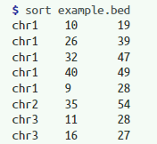</p>
<p>不同的分隔符，比如CSV文件，使用 <code>-t&quot;,&quot;</code></p>
<p>这里可以看到，第二列的顺序是乱的，可以使用-k 选项；下面这两种格式都可以，第一种方式的-k 后面的1,1 表示初始列和最终列。但是两种方式不能混用（老shell了）</p>
<p>但是 -n 放在最前面表示所有列均按照数字大小排序，放在 -k2,2n 表示只有第二列按数字大小排列。</p>
<p><strong>第一种更全，以后固定使用第一种</strong>。</p>
<figure class="highlight plain"><table><tr><td class="gutter"><pre><span class="line">1</span><br><span class="line">2</span><br></pre></td><td class="code"><pre><span class="line">$ sort -k1,1 -k2,2n example.bed</span><br><span class="line">$ sort -n -k 1 -k 2 example.bed</span><br></pre></td></tr></table></figure>
<p>sort 过程可能十分耗时，可以通过 -c 选项检查文件是否已按要求排序完毕。应该没有输出表示为排序好的文件。</p>
<figure class="highlight plain"><table><tr><td class="gutter"><pre><span class="line">1</span><br><span class="line">2</span><br><span class="line">3</span><br><span class="line">4</span><br><span class="line">5</span><br><span class="line">6</span><br></pre></td><td class="code"><pre><span class="line">$ sort -k1,1 -k2,2n -c example_sorted.bed </span><br><span class="line">$ echo $?</span><br><span class="line">0</span><br><span class="line">$ sort -k1,1 -k2,2n -c example.bed </span><br><span class="line">sort: example.bed:4: disorder: chr1     40      49</span><br><span class="line">$ echo $?1</span><br></pre></td></tr></table></figure>
<p>可以通过 -r 选项逆序排列（正常时从小到大，递增）</p>
<figure class="highlight plain"><table><tr><td class="gutter"><pre><span class="line">1</span><br></pre></td><td class="code"><pre><span class="line">$ sort -k1,1 -k2,2n -r example.bed</span><br></pre></td></tr></table></figure>
<p>如果只想某一列逆序，可以只将 r 选项加到那一列中</p>
<figure class="highlight plain"><table><tr><td class="gutter"><pre><span class="line">1</span><br></pre></td><td class="code"><pre><span class="line">$ sort -k1,1 -k2,2nr example.bed</span><br></pre></td></tr></table></figure>
<p>但是，对于既有字符又有数字的列，刚刚的排序方式可能就不一样了，下面的染色体超过了10，可以看到染色体排序是不对的。</p>
<figure class="highlight plain"><table><tr><td class="gutter"><pre><span class="line">1</span><br><span class="line">2</span><br><span class="line">3</span><br><span class="line">4</span><br><span class="line">5</span><br><span class="line">6</span><br><span class="line">7</span><br><span class="line">8</span><br><span class="line">9</span><br></pre></td><td class="code"><pre><span class="line">$ sort -k1,1 -k2,2n example2.bed</span><br><span class="line">chr1    34      49</span><br><span class="line">chr10   30      42</span><br><span class="line">chr10   31      47</span><br><span class="line">chr11   6       16</span><br><span class="line">chr2    15      19</span><br><span class="line">chr2    17      22</span><br><span class="line">chr2    27      46</span><br><span class="line">chr22   32      46</span><br></pre></td></tr></table></figure>
<p>也不能使用 -n 选项，使用 -n 选项如下图，彻底是乱的，完全没逻辑</p>
<figure class="highlight plain"><table><tr><td class="gutter"><pre><span class="line">1</span><br><span class="line">2</span><br><span class="line">3</span><br><span class="line">4</span><br><span class="line">5</span><br><span class="line">6</span><br><span class="line">7</span><br><span class="line">8</span><br><span class="line">9</span><br></pre></td><td class="code"><pre><span class="line">$ sort -k1,1n -k2,2n example2.bed</span><br><span class="line">chr11   6       16</span><br><span class="line">chr2    15      19</span><br><span class="line">chr2    17      22</span><br><span class="line">chr2    27      46</span><br><span class="line">chr10   30      42</span><br><span class="line">chr10   31      47</span><br><span class="line">chr22   32      46</span><br><span class="line">chr1    34      49</span><br></pre></td></tr></table></figure>
<p>这时，需要使用 <code>-V</code> 选项。</p>
<figure class="highlight plain"><table><tr><td class="gutter"><pre><span class="line">1</span><br><span class="line">2</span><br><span class="line">3</span><br><span class="line">4</span><br><span class="line">5</span><br><span class="line">6</span><br><span class="line">7</span><br><span class="line">8</span><br><span class="line">9</span><br></pre></td><td class="code"><pre><span class="line">$ sort -k1,1V -k2,2n example2.bed</span><br><span class="line">chr1    34      49</span><br><span class="line">chr2    15      19</span><br><span class="line">chr2    17      22</span><br><span class="line">chr2    27      46</span><br><span class="line">chr10   30      42</span><br><span class="line">chr10   31      47</span><br><span class="line">chr11   6       16</span><br><span class="line">chr22   32      46</span><br></pre></td></tr></table></figure>
<p>linux 的 sort 命令可以很好的用于中等大小的数据。sort 命令的一个特征时如果文件太大，超过内存，那么sort 命令会将中间文件存储在磁盘中。对于大数据而言，对磁盘中的中间文件的读写操作会是一个瓶颈（磁盘的速度很慢）。我们可以通过<strong>设置sort使用的内存大小</strong>来提高sort命令的内存占用量，避免它把数据存储为中间文件。例如，下式，-S 选项就是设置内存大小的，它能够获知后缀，比如 K、G，这里设置为2G，也可以设置为所有内存的百分比（-S 50%）</p>
<p>sort 还有一个选项支持并发计算。下式中就使用了4核。</p>
<p>但是小数据的话不需要额外设置，因为实际上并发计算存在一个固定的成本，因此如果运行小数据速度可能更慢。</p>
<figure class="highlight plain"><table><tr><td class="gutter"><pre><span class="line">1</span><br><span class="line">2</span><br></pre></td><td class="code"><pre><span class="line">$ sort -k1,1 -k4,4n -S2G Mus_musculus.GRCm38.75_chr1_random.gtf</span><br><span class="line">$ sort -k1,1 -k4,4n --parallel 4 Mus_musculus.GRCm38.75_chr1_random.gtf</span><br></pre></td></tr></table></figure>
<h4 id="Sorting-Stability">Sorting Stability</h4>
<p>当存在所有的sort keys 都相同的行，sort 仍会按照它们整行的顺序排列这些行的顺序。如果你想让这些行之间的顺序与源文件的顺序一致（即不要改变），可以使用 -s 选项。</p>
<h4 id="sort-遇到科学计数法结果不可靠">sort 遇到科学计数法结果不可靠</h4>
<figure class="highlight shell"><table><tr><td class="gutter"><pre><span class="line">1</span><br></pre></td><td class="code"><pre><span class="line">tail -n +2 maf.frq | sort -k5,5nr | less -S</span><br></pre></td></tr></table></figure>
<p>我想按第5列，从大到小排列。</p>
<p>但是结果跑出来一开始是非常小的数，然后才是从大到小排列。但是用<strong>python</strong> 就没问题。</p>
<p>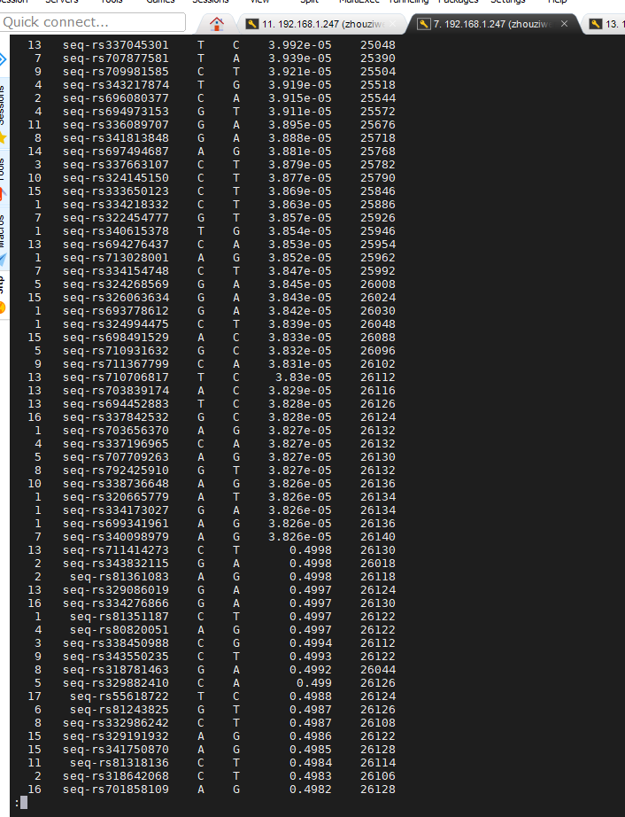</p>
<h3 id="7-3-9-Finding-Unique-Values-in-Uniq">7.3.9 Finding Unique Values in Uniq</h3>
<p>uniq 会移除连续的重复行（保留一个）。</p>
<figure class="highlight plain"><table><tr><td class="gutter"><pre><span class="line">1</span><br><span class="line">2</span><br><span class="line">3</span><br><span class="line">4</span><br><span class="line">5</span><br><span class="line">6</span><br><span class="line">7</span><br><span class="line">8</span><br><span class="line">9</span><br><span class="line">10</span><br><span class="line">11</span><br><span class="line">12</span><br><span class="line">13</span><br><span class="line">14</span><br><span class="line">15</span><br></pre></td><td class="code"><pre><span class="line">$ cat letters.txt</span><br><span class="line">A</span><br><span class="line">A</span><br><span class="line">B</span><br><span class="line">C</span><br><span class="line">B</span><br><span class="line">C</span><br><span class="line">C</span><br><span class="line">C</span><br><span class="line">$ uniq letters.txt</span><br><span class="line">A</span><br><span class="line">B</span><br><span class="line">C</span><br><span class="line">B</span><br><span class="line">C</span><br></pre></td></tr></table></figure>
<p>因此，如果需要真正去重，需要先sort。</p>
<p>使用 -c 选项可以查看每一行出现的次数。</p>
<figure class="highlight plain"><table><tr><td class="gutter"><pre><span class="line">1</span><br><span class="line">2</span><br><span class="line">3</span><br><span class="line">4</span><br></pre></td><td class="code"><pre><span class="line">$ sort letters.txt | uniq -c   </span><br><span class="line">2 A   </span><br><span class="line">2 B   </span><br><span class="line">4 C</span><br></pre></td></tr></table></figure>
<p>通过与 grep、cut 命令合用，uniq 命令可以用来查来某一列所有水平的重复次数（分类数据）。</p>
<figure class="highlight plain"><table><tr><td class="gutter"><pre><span class="line">1</span><br><span class="line">2</span><br><span class="line">3</span><br><span class="line">4</span><br><span class="line">5</span><br><span class="line">6</span><br><span class="line">7</span><br><span class="line">8</span><br></pre></td><td class="code"><pre><span class="line">$ grep -v &quot;^#&quot; Mus_musculus.GRCm38.75_chr1.gtf | cut -f3 | sort | uniq -c</span><br><span class="line">25901 CDS</span><br><span class="line">7588 UTR</span><br><span class="line">36128 exon</span><br><span class="line">2027 gene</span><br><span class="line">2290 start_codon</span><br><span class="line">2299 stop_codon</span><br><span class="line">4993 transcript</span><br></pre></td></tr></table></figure>
<p>因为 sort 和 uniq 都是行处理的命令，<strong>我们可以人为创造新的行</strong>，作为sort 和 cut 的输入（比如 通过 cut）</p>
<figure class="highlight plain"><table><tr><td class="gutter"><pre><span class="line">1</span><br><span class="line">2</span><br><span class="line">3</span><br><span class="line">4</span><br><span class="line">5</span><br></pre></td><td class="code"><pre><span class="line">$ grep -v &quot;^#&quot; Mus_musculus.GRCm38.75_chr1.gtf | cut -f3,7 | sort | uniq -c</span><br><span class="line">12891  CDS          +</span><br><span class="line">13010  CDS          -</span><br><span class="line">3754   UTR          +</span><br><span class="line">……</span><br></pre></td></tr></table></figure>
<p>uniq 还可以通过 -d 选项 来检查文件是否存在重复。-d 会打印存在重复的行，之后再通过 <code>wc -l</code> 就可以查看是否有重复行。</p>
<figure class="highlight plain"><table><tr><td class="gutter"><pre><span class="line">1</span><br><span class="line">2</span><br><span class="line">3</span><br><span class="line">4</span><br><span class="line">5</span><br><span class="line">6</span><br></pre></td><td class="code"><pre><span class="line">$ sort letters.txt | uniq -d</span><br><span class="line">A</span><br><span class="line">B</span><br><span class="line">C</span><br><span class="line">$ sort letters.txt | uniq -d | wc -l</span><br><span class="line">3</span><br></pre></td></tr></table></figure>
<h3 id="7-3-10-Join">7.3.10 Join</h3>
<p>join 命令可以通过一个相同的列合并不同的文件。比如存在下面两个文件，我们想把第二个文件的内容合并到第一个文件里（相同的字段是染色体；结果文件是一个tab分隔的文件）。</p>
<figure class="highlight plain"><table><tr><td class="gutter"><pre><span class="line">1</span><br><span class="line">2</span><br><span class="line">3</span><br><span class="line">4</span><br><span class="line">5</span><br><span class="line">6</span><br><span class="line">7</span><br><span class="line">8</span><br><span class="line">9</span><br><span class="line">10</span><br><span class="line">11</span><br><span class="line">12</span><br><span class="line">13</span><br></pre></td><td class="code"><pre><span class="line">$ cat example.bed</span><br><span class="line">chr1    26      39</span><br><span class="line">chr1    32      47</span><br><span class="line">chr3    11      28</span><br><span class="line">chr1    40      49</span><br><span class="line">chr3    16      27</span><br><span class="line">chr1    9       28</span><br><span class="line">chr2    35      54</span><br><span class="line">chr1    10      19</span><br><span class="line">$ cat example_lengths.txt</span><br><span class="line">chr1    58352</span><br><span class="line">chr2    39521</span><br><span class="line">chr3    24859</span><br></pre></td></tr></table></figure>
<p>首先，我们要对两个文件按照染色体进行 sort，join命令没法处理没有排序的文件。</p>
<figure class="highlight plain"><table><tr><td class="gutter"><pre><span class="line">1</span><br><span class="line">2</span><br></pre></td><td class="code"><pre><span class="line">$ sort -k1,1 example.bed &gt; example_sorted.bed</span><br><span class="line">$ sort -c -k1,1 example_lengths.txt # verifies is already sorte</span><br></pre></td></tr></table></figure>
<p>然后，我们就可以使用<code>join</code>命令了，基本语法如下，字段表示为列数。输出的字段顺序与给定的文件顺序一致。</p>
<figure class="highlight plain"><table><tr><td class="gutter"><pre><span class="line">1</span><br></pre></td><td class="code"><pre><span class="line">join -1 &lt;file_1_field&gt; -2 &lt;file_2_field&gt; &lt;file_1&gt; &lt;file_2&gt;</span><br></pre></td></tr></table></figure>
<figure class="highlight plain"><table><tr><td class="gutter"><pre><span class="line">1</span><br><span class="line">2</span><br><span class="line">3</span><br><span class="line">4</span><br><span class="line">5</span><br><span class="line">6</span><br><span class="line">7</span><br><span class="line">8</span><br><span class="line">9</span><br><span class="line">10</span><br><span class="line">11</span><br><span class="line">12</span><br><span class="line">13</span><br><span class="line">14</span><br><span class="line">15</span><br><span class="line">16</span><br><span class="line">17</span><br><span class="line">18</span><br><span class="line">19</span><br></pre></td><td class="code"><pre><span class="line">$ join -1 1 -2 1 example_sorted.bed example_lengths.txt</span><br><span class="line">chr1 10 19 58352</span><br><span class="line">chr1 26 39 58352</span><br><span class="line">chr1 32 47 58352</span><br><span class="line">chr1 40 49 58352</span><br><span class="line">chr1 9 28 58352</span><br><span class="line">chr2 35 54 39521</span><br><span class="line">chr3 11 28 24859</span><br><span class="line">chr3 16 27 24859</span><br><span class="line"></span><br><span class="line">$ join -1 1 -2 1 example_lengths.txt example_sorted.bed</span><br><span class="line">chr1 58352 10 19</span><br><span class="line">chr1 58352 26 39</span><br><span class="line">chr1 58352 32 47</span><br><span class="line">chr1 58352 40 49</span><br><span class="line">chr1 58352 9 28</span><br><span class="line">chr2 39521 35 54</span><br><span class="line">chr3 24859 11 28</span><br><span class="line">chr3 24859 16 27</span><br></pre></td></tr></table></figure>
<p>但是如果第二个文件没有 chr3 怎么办呢，可以看到 <code>join</code> 实行内连接，剔除了 chr3 的行。</p>
<figure class="highlight plain"><table><tr><td class="gutter"><pre><span class="line">1</span><br><span class="line">2</span><br><span class="line">3</span><br><span class="line">4</span><br><span class="line">5</span><br><span class="line">6</span><br><span class="line">7</span><br><span class="line">8</span><br><span class="line">9</span><br><span class="line">10</span><br></pre></td><td class="code"><pre><span class="line">$ head -n2 example_lengths.txt &gt; example_lengths_alt.txt # truncate file</span><br><span class="line">$ join -1 1 -2 1 example_sorted.bed example_lengths_alt.txt</span><br><span class="line">chr1 10 19 58352</span><br><span class="line">chr1 26 39 58352</span><br><span class="line">chr1 32 47 58352</span><br><span class="line">chr1 40 49 58352</span><br><span class="line">chr1 9 28 58352</span><br><span class="line">chr2 35 54 39521</span><br><span class="line">$ join -1 1 -2 1 example_sorted.bed example_lengths_alt.txt | wc -l</span><br><span class="line">6</span><br></pre></td></tr></table></figure>
<p>我们可以通过 -a 选项（需要指定哪个文件可以包含没有匹配的行）来包括没有匹配的行（左连接或右连接）。</p>
<figure class="highlight plain"><table><tr><td class="gutter"><pre><span class="line">1</span><br><span class="line">2</span><br><span class="line">3</span><br><span class="line">4</span><br><span class="line">5</span><br><span class="line">6</span><br><span class="line">7</span><br><span class="line">8</span><br><span class="line">9</span><br></pre></td><td class="code"><pre><span class="line">$ join -1 1 -2 1 -a 1 example_sorted.bed example_lengths_alt.txt # GNU join only</span><br><span class="line">chr1  10  19  58352</span><br><span class="line">chr1  26  39  58352</span><br><span class="line">chr1  32  47  58352</span><br><span class="line">chr1  40  49  58352</span><br><span class="line">chr1  9   28  58352</span><br><span class="line">chr2  35  54  39521</span><br><span class="line">chr3  11  28</span><br><span class="line">chr3  16  27</span><br></pre></td></tr></table></figure>
<h3 id="7-3-11-Text-Processing-with-Awk">7.3.11 Text Processing with Awk</h3>
<p>格式：</p>
<figure class="highlight shell"><table><tr><td class="gutter"><pre><span class="line">1</span><br></pre></td><td class="code"><pre><span class="line">awk &#x27;BEGIN&#123;&#125; /search pattern/&#123;action&#125; END&#123;&#125;&#x27; file </span><br></pre></td></tr></table></figure>
<p>工作原理：</p>
<ol>
<li>
<p>运行 BEGIN</p>
</li>
<li>
<p>每次输入一行，赋给内部变量 $0</p>
</li>
<li>
<p>按 <strong>空格/制表符</strong> 将每一行分解为字段，赋给 $1-$n</p>
</li>
<li>
<p>search pattern 和 action 必选其一</p>
<p>如果没有 search pattern ， 则对所有行均执行 action 操作</p>
<p>如果没有 action，则默认打印改行</p>
</li>
</ol>
<p>行数：NR (row) ,  列数：NF (<strong>field</strong>)</p>
<p>简单匹配</p>
<figure class="highlight plain"><table><tr><td class="gutter"><pre><span class="line">1</span><br><span class="line">2</span><br></pre></td><td class="code"><pre><span class="line">$ awk &#39;&#123; print $0 &#125;&#39; example.bed</span><br><span class="line">$ awk &#39;&#123; print $2 &quot;\t&quot; $3 &#125;&#39; example.bed</span><br></pre></td></tr></table></figure>
<p>simple pattern matching</p>
<p>假设我们想打印结束位置与起始位置大于18的行，awk 支持算术运算符 <strong>+ - * / % ^</strong> 。</p>
<figure class="highlight plain"><table><tr><td class="gutter"><pre><span class="line">1</span><br><span class="line">2</span><br><span class="line">3</span><br></pre></td><td class="code"><pre><span class="line">$ awk &#39; $3 - $2 &gt; 18&#39; example.bed</span><br><span class="line">chr1    9       28</span><br><span class="line">chr2    35      54</span><br></pre></td></tr></table></figure>
<p>awk 的 比较和逻辑运算符</p>
<p>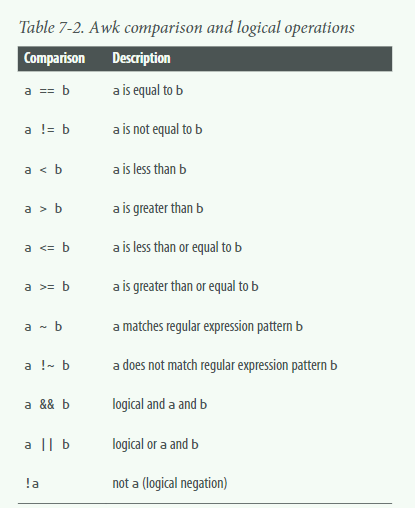</p>
<p>我们可以通过 &amp;&amp; || ！来连接多个运算符。</p>
<p>如果我们想要在1号染色体 并且 长度大于10的功能区域。第一个pattern，采用了正则表达式，正则表达式在斜杠中，~ 表示 匹配 （不匹配 表示 !~），这里就仅仅是表示 $1 匹配 chr1。</p>
<figure class="highlight plain"><table><tr><td class="gutter"><pre><span class="line">1</span><br><span class="line">2</span><br><span class="line">3</span><br><span class="line">4</span><br></pre></td><td class="code"><pre><span class="line">$ awk &#39;$1 ~ &#x2F;chr1&#x2F; &amp;&amp; $3 - $2 &gt; 10&#39; example.bed</span><br><span class="line">chr1    26      39</span><br><span class="line">chr1    32      47</span><br><span class="line">chr1    9       28</span><br></pre></td></tr></table></figure>
<p>这个还可以更复杂，比如我们想挑出 chr2/chr3 的行，并且在最后增加一列长度。</p>
<figure class="highlight plain"><table><tr><td class="gutter"><pre><span class="line">1</span><br><span class="line">2</span><br><span class="line">3</span><br><span class="line">4</span><br></pre></td><td class="code"><pre><span class="line">$ awk &#39;$1 ~ &#x2F;chr2|chr3&#x2F; &#123; print $0 &quot;\t&quot; $3 - $2 &#125;&#39; example.bed</span><br><span class="line">chr3    11      28      17</span><br><span class="line">chr3    16      27      11</span><br><span class="line">chr2    35      54      19</span><br></pre></td></tr></table></figure>
<p>到目前为止，我们发现 awk 可以很方便的做两件事：</p>
<ul>
<li>按正则表达式/四则运算 提出需要的行</li>
<li>打印需要的字段或重排</li>
</ul>
<p>awk 还有 BEGIN 和 END ，BEGIN 一般用于新建变量，END 一般用于打印数据总结。</p>
<p>比如我们想看所有功能区域的平均长度。<strong>NR 是当前记录的行号，因此最后一行的行号就是总共的数据行数。</strong></p>
<figure class="highlight plain"><table><tr><td class="gutter"><pre><span class="line">1</span><br><span class="line">2</span><br></pre></td><td class="code"><pre><span class="line">$ awk &#39;BEGIN&#123; s &#x3D; 0 &#125;; &#123; s +&#x3D; ($3-$2) &#125;; END&#123; print &quot;mean: &quot; s&#x2F;NR &#125;;&#39; example.bed</span><br><span class="line">mean: 14</span><br></pre></td></tr></table></figure>
<p>对于使用其他字段分割的文件，比如 CSV 文件，我们可以使用 -F 选项，比如 <code>awk -F&quot;,&quot;</code></p>
<p>我们可以使用 NR 来挑某些行</p>
<figure class="highlight plain"><table><tr><td class="gutter"><pre><span class="line">1</span><br><span class="line">2</span><br><span class="line">3</span><br><span class="line">4</span><br></pre></td><td class="code"><pre><span class="line">$ awk &#39;NR &gt;&#x3D; 3 &amp;&amp; NR &lt;&#x3D; 5&#39; example.bed</span><br><span class="line">chr3    11      28</span><br><span class="line">chr1    40      49</span><br><span class="line">chr3    16      27</span><br></pre></td></tr></table></figure>
<p>awk 使得生信数据之间的转换更加方便，比如 BED 和 GTF 文件。注意，这里的起始位置减1，来转变为 BED 数据（具体啥叫BED格式不知道）。这是由于BED的索引从0开始，而GTF的索引从1开始。</p>
<figure class="highlight plain"><table><tr><td class="gutter"><pre><span class="line">1</span><br><span class="line">2</span><br><span class="line">3</span><br><span class="line">4</span><br><span class="line">5</span><br></pre></td><td class="code"><pre><span class="line">$ awk &#39;!&#x2F;^#&#x2F; &#123; print $1 &quot;\t&quot; $4-1 &quot;\t&quot; $5 &#125;&#39; Mus_musculus.GRCm38.75_chr1.gtf | head -n 3</span><br><span class="line">1       3054232 3054733</span><br><span class="line">1       3054232 3054733</span><br><span class="line">1       3054232 3054733</span><br><span class="line"></span><br></pre></td></tr></table></figure>
<p>awk 还有一个很有用的数据结构，称为关联数组，类似于python里面的字典，存在key和value。比如我们想计算 属于 基因 ”Lypla1&quot; 的 features 的 重复数目，我们可以按照以下命令：</p>
<figure class="highlight plain"><table><tr><td class="gutter"><pre><span class="line">1</span><br><span class="line">2</span><br><span class="line">3</span><br><span class="line">4</span><br><span class="line">5</span><br><span class="line">6</span><br><span class="line">7</span><br><span class="line">8</span><br><span class="line">9</span><br><span class="line">10</span><br></pre></td><td class="code"><pre><span class="line">$ awk &#39;&#x2F;Lypla1&#x2F; &#123; feature[$3] +&#x3D; 1 &#125;; \</span><br><span class="line">    END &#123; for (k in feature)          \    </span><br><span class="line">    print k &quot;\t&quot; feature[k] &#125;&#39; Mus_musculus.GRCm38.75_chr1.gtf</span><br><span class="line">exon    69</span><br><span class="line">CDS     56</span><br><span class="line">UTR     24</span><br><span class="line">gene    1</span><br><span class="line">start_codon     5</span><br><span class="line">stop_codon      5</span><br><span class="line">transcript      9</span><br></pre></td></tr></table></figure>
<p>从这我们可以看出，awk 是一门真正的编程语言，可以使用 if for while 等循环。</p>
<p>但是，如果 awk 语句 变得复杂或者需要占据多行，我通常更推荐转向python。python 可以更加轻松地完成复杂的任务。（知己）</p>
<p>我们可以通过 unix 的管道符来完成这项任务。但是如果你需要对数据进行过滤，此时使用这种方式会很麻烦；而使用awk命令会很简单</p>
<figure class="highlight plain"><table><tr><td class="gutter"><pre><span class="line">1</span><br><span class="line">2</span><br><span class="line">3</span><br><span class="line">4</span><br><span class="line">5</span><br><span class="line">6</span><br><span class="line">7</span><br><span class="line">8</span><br></pre></td><td class="code"><pre><span class="line">$ grep &quot;Lypla1&quot; Mus_musculus.GRCm38.75_chr1.gtf | cut -f 3 | sort | uniq -c</span><br><span class="line">     56 CDS</span><br><span class="line">     69 exon</span><br><span class="line">      1 gene</span><br><span class="line">      5 start_codon</span><br><span class="line">      5 stop_codon</span><br><span class="line">      9 transcript</span><br><span class="line">     24 UTR</span><br></pre></td></tr></table></figure>
<h4 id="awk-分隔符设置">awk 分隔符设置</h4>
<p><a target="_blank" rel="noopener" href="https://www.zsythink.net/archives/1357">https://www.zsythink.net/archives/1357</a></p>
<p>输入输出（设置每一个参数值均需要使用 <code>-v</code> 参数）</p>
<figure class="highlight plain"><table><tr><td class="gutter"><pre><span class="line">1</span><br></pre></td><td class="code"><pre><span class="line">awk -v FS&#x3D;&quot;&quot; -v OFS&#x3D;&quot;&quot; &#39;&#123;&#125;&#39;</span><br></pre></td></tr></table></figure>
<h3 id="7-3-12-Bioawk-An-Awk-for-Biological-Formats">7.3.12 Bioawk: An Awk for Biological Formats</h3>
<p>Bioawk 是将 awk 扩展到处理一些常见的生信格式上，如FASTA/FASTQ, GTF/GFF, BED, SAM, VCF。其实没有特别大的变动，就是给每一列一个具有意义的名称而已。</p>
<p>直接用conda 安装（有一说一，conda 真好用）</p>
<figure class="highlight shell"><table><tr><td class="gutter"><pre><span class="line">1</span><br></pre></td><td class="code"><pre><span class="line">conda install bioawk</span><br></pre></td></tr></table></figure>
<p>安装完之后，通过以下命令查看</p>
<figure class="highlight shell"><table><tr><td class="gutter"><pre><span class="line">1</span><br></pre></td><td class="code"><pre><span class="line">bioawk -c help</span><br></pre></td></tr></table></figure>
<h3 id="7-3-13-Stream-Editing-with-Sed">7.3.13 Stream Editing with Sed</h3>
<p>在前面，我们提到了为什么 Unix pipes 速度快，因为Unix pipes 直接在内存中处理数据（而不是将数据写入磁盘中再读取），除此之外，Unix pipes 不是一次性将所有数据放到内存中，而是<strong>每次只操作一行数据</strong>。</p>
<p>通常我们使用 Unix 命令处理数据需要好几个命令，但是 sed (The stream editor) 允许你直接做。类似于 ask 和 grep ，你应该只用 sed 命令做比较简单的事情（最主要是<strong>替换</strong>）。</p>
<p>sed 也是每次读取一行进行处理（流编辑，stream editing）。举例，假如我们将一个文件的“chrom&quot; 均改为 ”chr&quot;，这用到了sed 的替换命令（substitute, sed 的最常用的用法）。</p>
<p>使用 <code>s/pattern/replacement/</code> 默认只替换第一次出现的值；有时我们需要替换所有匹配的值，我们可以在最后一个斜杠后添加 一个 global flag g ，也就是<code>s/pattern/replacement/g</code></p>
<p>如果 我们需要匹配时忽视大小写，我们可以添加一个 flag i （<code>s/pattern/replacement/i</code>）</p>
<figure class="highlight plain"><table><tr><td class="gutter"><pre><span class="line">1</span><br><span class="line">2</span><br><span class="line">3</span><br><span class="line">4</span><br><span class="line">5</span><br><span class="line">6</span><br><span class="line">7</span><br><span class="line">8</span><br><span class="line">9</span><br></pre></td><td class="code"><pre><span class="line">$ head -n 3 chroms.txt</span><br><span class="line">chrom1  3214482 3216968</span><br><span class="line">chrom1  3216025 3216968</span><br><span class="line">chrom1  3216022 3216024</span><br><span class="line"></span><br><span class="line">$ sed &#39;s&#x2F;chrom&#x2F;chr&#x2F;&#39; chroms.txt | head -n 3</span><br><span class="line">chr1    3214482 3216968</span><br><span class="line">chr1    3216025 3216968</span><br><span class="line">chr1    3216022 3216024</span><br></pre></td></tr></table></figure>
<p>默认情况下，sed 使用 POSIX  Basic  Regular  Expressions  (BRE)，就像时 grep 命令一样，我们可以使用 <code>-E</code> 来使用拓展的正则表达式。</p>
<p>下面有三种办法实现同一功能，第二种方式采用了管道符的方法，可能更符合复杂情况；第三种方式采用 <code>tr</code> 函数（translate），同样是实现替换功能</p>
<figure class="highlight plain"><table><tr><td class="gutter"><pre><span class="line">1</span><br><span class="line">2</span><br><span class="line">3</span><br><span class="line">4</span><br><span class="line">5</span><br><span class="line">6</span><br><span class="line">7</span><br><span class="line">8</span><br><span class="line">9</span><br></pre></td><td class="code"><pre><span class="line">$ echo &quot;chr1:28427874-28425431&quot; | sed &#39;s&#x2F;[:-]&#x2F;\t&#x2F;g&#39;</span><br><span class="line">chr1    28427874        28425431</span><br><span class="line"></span><br><span class="line">$ echo &quot;chr1:28427874-28425431&quot; | sed &#39;s&#x2F;:&#x2F;\t&#x2F;&#39; | sed &#39;s&#x2F;-&#x2F;\t&#x2F;&#39;</span><br><span class="line">chr1    28427874        28425431</span><br><span class="line"></span><br><span class="line">$  echo &quot;chr1:28427874-28425431&quot; | tr &#39;:-&#39; &#39;\t&#39;</span><br><span class="line">chr1    28427874        28425431</span><br><span class="line"></span><br></pre></td></tr></table></figure>
<p>当某些行，sed 没有找到匹配的pattern 时，sed 会打印出整行，可以使用 <code>-n</code> 选项，避免 sed 打印没找到 pattern 的行。</p>
<p>如果采用 <code>.*</code> 方式采用的<strong>贪婪算法</strong>，如下面的例子，采用 <code>[^&quot;]</code> 是匹配非引号的字符，因此是非贪婪的。</p>
<blockquote>
<p><a target="_blank" rel="noopener" href="https://blog.csdn.net/Jasonliujintao/article/details/53509732">https://blog.csdn.net/Jasonliujintao/article/details/53509732</a></p>
<p>sed 第二个斜杠和第三个斜杠的 <code>\1</code>  表示被匹配到的第一个模式，sed 一共可以记录9个模式 （\1 - \9）。模式就是用（）括起来的正则表达式的内容。</p>
</blockquote>
<figure class="highlight plain"><table><tr><td class="gutter"><pre><span class="line">1</span><br><span class="line">2</span><br><span class="line">3</span><br><span class="line">4</span><br><span class="line">5</span><br><span class="line">6</span><br><span class="line">7</span><br></pre></td><td class="code"><pre><span class="line">$ echo &#39;transcript_id &quot;ENSMUST00000160944&quot;; gene_name &quot;Gm16088&quot;&#39; &gt; greedy_example.txt</span><br><span class="line"></span><br><span class="line">$ sed -E &#39;s&#x2F;transcript_id &quot;(.*)&quot;.*&#x2F;\1&#x2F;&#39; greedy_example.txt</span><br><span class="line">ENSMUST00000160944&quot;; gene_name &quot;Gm16088</span><br><span class="line"></span><br><span class="line">$ sed -E &#39;s&#x2F;transcript_id &quot;([^&quot;]+)&quot;.*&#x2F;\1&#x2F;&#39; greedy_example.txt</span><br><span class="line">ENSMUST00000160944</span><br></pre></td></tr></table></figure>
<p>sed 还可以打印某些特定范围的行，比如 前10行，20行至50行（首尾都包括，从1开始）</p>
<figure class="highlight plain"><table><tr><td class="gutter"><pre><span class="line">1</span><br><span class="line">2</span><br></pre></td><td class="code"><pre><span class="line">$ sed -n &#39;1,10p&#39; Mus_musculus.GRCm38.75_chr1.gtf</span><br><span class="line">$ sed -n &#39;20,50p&#39; Mus_musculus.GRCm38.75_chr1.gtf</span><br></pre></td></tr></table></figure>
<h2 id="7-4-Advanced-Shell-Tricks">7.4 Advanced Shell Tricks</h2>
<h3 id="7-4-1-Subshells">7.4.1 Subshells</h3>
<p>首先 分清楚 <em>sequential</em> commands (不同的命令采用 &amp;&amp; 或者 ；) 和 <em>piped</em> commands (采用管道符 | 连接) 。sequential commands 只是一个接一个运行而已，但是彼此之间没有关系。但是 piped command ，前一个命令的输出是下一个命令的输入。</p>
<p>采用 &amp;&amp; 和  ；的区别在于他们的退出状态，如果我们采用 <code>command1 ; command2</code> 的方式，无论 command1 退出状态是否正常，command2 都会运行。但是如果我们使用 <code>command1 &amp;&amp; command2</code>，那么<strong>只有command1 运行成功后才会运行 command2</strong>。但是 <strong>在 pipelines 不方便检查退出状态</strong>。</p>
<p>我们可以将多个命令打包放在一起，他们的输出结果会形成一个数据流。举例而言，第一条命令将<code>echo &quot;this command&quot;</code>  和 <code>echo &quot;that command&quot; | sed 's/command/step/'</code> 视为两条命令，因此 <code>this command</code> 没有变化。</p>
<p>第二条命令通过 （） 将前面的两条命令打包一块输出。（这里所谓的subshell 就是用括号将sequential commands 括起来）</p>
<figure class="highlight plain"><table><tr><td class="gutter"><pre><span class="line">1</span><br><span class="line">2</span><br><span class="line">3</span><br><span class="line">4</span><br><span class="line">5</span><br><span class="line">6</span><br><span class="line">7</span><br></pre></td><td class="code"><pre><span class="line">$ echo &quot;this command&quot;; echo &quot;that command&quot; | sed &#39;s&#x2F;command&#x2F;step&#x2F;&#39;</span><br><span class="line">this command</span><br><span class="line">that step</span><br><span class="line"></span><br><span class="line">$ (echo &quot;this command&quot;; echo &quot;that command&quot;) | sed &#39;s&#x2F;command&#x2F;step&#x2F;&#39;</span><br><span class="line">this step</span><br><span class="line">that step</span><br></pre></td></tr></table></figure>
<p>假如我们想对一个 GTF 文件进行排序，但是由于GTF 文件具有注释行，我们希望是注释行不动，对数据部分进行排序。</p>
<p>我们就可以用 subshell 来解决这个问题。因为用了 （）里面的两条命令的结果输出为一个总的数据流，实现了<strong>不动表头，对数据进行排序</strong>的需求。</p>
<figure class="highlight plain"><table><tr><td class="gutter"><pre><span class="line">1</span><br><span class="line">2</span><br><span class="line">3</span><br></pre></td><td class="code"><pre><span class="line">$ (zgrep &quot;^#&quot; Mus_musculus.GRCm38.75_chr1.gtf.gz; \</span><br><span class="line">zgrep -v &quot;^#&quot; Mus_musculus.GRCm38.75_chr1.gtf.gz | \</span><br><span class="line">sort -k1,1 -k4,4n) | less</span><br></pre></td></tr></table></figure>
<p>我们也可以使用 <code>&gt;</code> 重定向到一个文件中，但是最好是<code>gzip</code> 压缩一下。</p>
<figure class="highlight plain"><table><tr><td class="gutter"><pre><span class="line">1</span><br><span class="line">2</span><br><span class="line">3</span><br></pre></td><td class="code"><pre><span class="line">$ (zgrep &quot;^#&quot; Mus_musculus.GRCm38.75_chr1.gtf.gz; \</span><br><span class="line">zgrep -v &quot;^#&quot; Mus_musculus.GRCm38.75_chr1.gtf.gz | \</span><br><span class="line">sort -k1,1 -k4,4n) | gzip &gt; Mus_musculus.GRCm38.75_chr1_sorted.gtf.gz</span><br></pre></td></tr></table></figure>
<p>这个subshell 可以使用python 来写代码完成，但是问题是更复杂了，而且不能直接处理压缩文件。</p>
<h3 id="7-4-2-Named-Pipes-and-Process-Substitution">7.4.2 Named Pipes and Process Substitution</h3>
<p>到目前为止，我们已经使用 pipes 来连接不同的命令行工具来创建定制的数据处理 pipelines。<strong>但是，有些软件不能和 unix pipes 连接上</strong>。比如有一些生信工具读写多个文件形式如下：</p>
<figure class="highlight plain"><table><tr><td class="gutter"><pre><span class="line">1</span><br></pre></td><td class="code"><pre><span class="line">$ processing_tool --in1 in1.fq --in2 in2.fq --out1 out2.fq --out2.fq</span><br></pre></td></tr></table></figure>
<p>因为这里需要多个输入文件，因此我们将pipeline 前一步的输出结果作为这里的输入。相似的，这个软件生成了两个结果文件，这也没办法将它的输出作为另一个程序的标准输入。</p>
<p>除了不能使用 Unix pipe 将 processing_tool 与其他程序互相协作外，这里还有一个更严重的问题：<strong>使用这个程序我们需要从磁盘读取4个中间文件</strong>。如果这个程序在整个pipeline的中间步骤，那么很有可能会造成一个显著的计算瓶颈。</p>
<p>幸运的是，Unix 提供了一个解决办法：<em>named pipes</em>，也称之为 FIFO (First In First Out) 。</p>
<p>常见的pipeline 没有名称，而且只有运行的时候才存在于内存中。命令的pipes 就像文件一样，会一直存在你的文件系统中。采用 <code>mkfifo</code> 可以实现命名的pipe</p>
<figure class="highlight plain"><table><tr><td class="gutter"><pre><span class="line">1</span><br><span class="line">2</span><br><span class="line">3</span><br></pre></td><td class="code"><pre><span class="line">$ mkfifo fqin</span><br><span class="line">$ ls -l fqin</span><br><span class="line">prw-rw-r-- 1 zhouziwen zhouziwen 0 Sep 15 10:41 fqin</span><br></pre></td></tr></table></figure>
<p>这个实际上就是一个特殊形式的文件：p 表示 pipe。举个简单的例子，我们可以使用 <code>echo</code> 来重定向一些文本到一个 named pipe 中，然后使用<code>cat</code> 打印内容。</p>
<p>注意：<strong>这个named pipe ，就像标准的pipe 一样，读取过的数据就不复存在了。</strong></p>
<figure class="highlight plain"><table><tr><td class="gutter"><pre><span class="line">1</span><br><span class="line">2</span><br><span class="line">3</span><br><span class="line">4</span><br><span class="line">5</span><br><span class="line">6</span><br><span class="line">7</span><br><span class="line">8</span><br><span class="line">9</span><br></pre></td><td class="code"><pre><span class="line">$ echo &quot;hello, named pipes&quot; &gt; fqin </span><br><span class="line">[1] 1536</span><br><span class="line">$ cat fqin</span><br><span class="line">hello, named pipes</span><br><span class="line">$ rm fqin</span><br><span class="line"></span><br><span class="line">$ cat fqin #再次读取，失败。</span><br><span class="line">cat: fqin: No such file or directory</span><br><span class="line"></span><br></pre></td></tr></table></figure>
<p>虽然这个语法很像是重定向到一个文件中，但是<strong>我们实际上没有向磁盘写入任何东西</strong>。因此 processing_tool 这种软件的输入输出均可以使用 named pipe 替代。</p>
<p>但是，创建和销毁这些 file-like named pipes 有一些枯燥无聊。这里有一种方式使用 named pipe 时 可以不用特地创建它们，称之为 <em>process substitution</em>, 或者 anonymous named pipes。举例如下 <code>&lt;(echo &quot;hello, process substitution&quot;)</code>  将里面的命令输出给一个 anonymous named pipe。</p>
<figure class="highlight plain"><table><tr><td class="gutter"><pre><span class="line">1</span><br><span class="line">2</span><br></pre></td><td class="code"><pre><span class="line">$  cat &lt;(echo &quot;hello, process substitution&quot;)</span><br><span class="line">hello, process substitution</span><br></pre></td></tr></table></figure>
<p>举例，上面的program 需要两个输入文件，这里没法用简单的 unix pipeline 。我们需要使用  <code>mkfifo</code> 创建两个 named pipes，也可以使用 process substitution。比如我们假设存在一个软件<code>makein</code> 可以创建输入文件</p>
<figure class="highlight plain"><table><tr><td class="gutter"><pre><span class="line">1</span><br><span class="line">2</span><br></pre></td><td class="code"><pre><span class="line">program --in1 &lt;(makein raw1.txt) --in2 &lt;(makein raw2.txt) \</span><br><span class="line">	--out1 out1.txt --out2 out2.txt</span><br></pre></td></tr></table></figure>
<p>process substitution 还可以用于<strong>输出文件中</strong>，这通常是用于大数据文件在写入磁盘前<strong>压缩</strong>（先写入磁盘，再压缩，会读写两个大文件，多花时间）。还是以上面的文件为例</p>
<figure class="highlight plain"><table><tr><td class="gutter"><pre><span class="line">1</span><br><span class="line">2</span><br></pre></td><td class="code"><pre><span class="line">program --in1 in1.txt --in2 in2.txt \</span><br><span class="line">	--out1 &gt;(gzip &gt; out1.txt.gz) --out2 &gt;(gzip &gt; out2.txt.gz)</span><br></pre></td></tr></table></figure>
<h2 id="7-5-The-Unix-Philosophy-Revisited">7.5 The Unix Philosophy Revisited</h2>
<p>通读本章，Unix 哲学 – 采用 Unix pipe 来组合多个小的程序。 不仅仅是因为 Unix piped workflows 容易创建、容易 debug，而已<strong>unix pipe 通常也是计算效率最高的解决办法</strong>。</p>
<h1>8 A Rapid Introduction to the R Language</h1>
<p>这里主要是侧重 R语言在 <em>exploratory data analysis (EDA)</em> 方面的应用。</p>
<p>EDA 是一种互动式的对数据的探索。EDA 在整个的生信数据分析中都很重要。这些分析本身并不复杂或者很细致，但是可以满足我们想看一眼数据的需求。</p>
<p>在很多情况下，EDA ，特别是可视化，可以发现生信数据的模式（pattern），而这可能会被统计模型或假设检验忽视。我们的大脑是最精巧的 pattern-finding 工具，而 EDA 就是将数据用不同的方式展示给我们的大脑看，并让我们的大脑去寻找 pattern，从而可以找到有趣的生物信号或者展示出潜在的问题。相比于我们的大脑，统计检验是一个迟钝的工具，而且当处理复杂的多维度的数据时就更加迟钝，比如生信数据。</p>
<p>虽然这一章节强调 EDA 的重要性，但统计检验同样也很重要。</p>
<h2 id="8-1-Getting-Started-with-R-and-RStudio">8.1 Getting Started with R and RStudio</h2>
<h2 id="8-2-R-Language-Basics">8.2 R Language Basics</h2>
<h3 id="8-2-1-Simple-Calculations-in-R-Calling-Functions-and-Getting-Help-in-R">8.2.1 Simple Calculations in R, Calling Functions, and Getting Help in R</h3>
<p>R 参数要输入参数名称，虽然R支持不输入参数名称，但是这会影响代码的可读性。（受教了）</p>
<blockquote>
<p>First,  values  are  matched  to  arguments  by  name.  Technically,  R  also  allows  partial matching of argument names but I would discourage this, as it decreases code readability.  Second,  values  are  matched  based  on  position  within  the  argument  list.  For functions  that  have  many  arguments  with  default  values  such  as   foo(x, a=3, b=4, c=5), it’s easier to set an argument later in the function by specifying it by name.</p>
</blockquote>
<h3 id="8-2-2-Variables-and-Assignment">8.2.2 Variables and Assignment</h3>
<p>R 中的赋值符号除了 使用 <code>&lt;-</code>，还可以使用 <code>=</code>，但是 <code>&lt;-</code>是更加传统的做法。（感觉用=更好，与其他语言一致）。</p>
<p>通过 <code>ls()</code> 可以查看所有的 global environment 。当 R 需要查找一个变量名称时，它有一个查找路径和顺序。我们可以通过<code>search()</code> 函数查看 R 的查找路径（包括全局环境变量、打开的R包等）。</p>
<h3 id="8-2-3-Vectors-Vectorization-and-Indexing">8.2.3 Vectors, Vectorization, and Indexing</h3>
<p>R 语言最重要的特征就是它的向量。不像其他语言，R 没有<strong>标量</strong>的概念（a single value），这些值在R中实际上是长度为1的向量。</p>
<p>R的向量是R中一个最重要的特征的基础：<strong>向量化</strong>。**向量化支持我们去 loop over 向量元素，而不需要写一个具体的循环。**举例而言：</p>
<figure class="highlight r"><table><tr><td class="gutter"><pre><span class="line">1</span><br><span class="line">2</span><br><span class="line">3</span><br><span class="line">4</span><br><span class="line">5</span><br><span class="line">6</span><br><span class="line">7</span><br><span class="line">8</span><br></pre></td><td class="code"><pre><span class="line">&gt; x &lt;- <span class="built_in">c</span>(<span class="number">56</span>, <span class="number">95.3</span>, <span class="number">0.4</span>)</span><br><span class="line">&gt; y &lt;- <span class="built_in">c</span>(<span class="number">3.2</span>, <span class="number">1.1</span>, <span class="number">0.2</span>)</span><br><span class="line">&gt; x + y</span><br><span class="line">[<span class="number">1</span>] <span class="number">59.2</span> <span class="number">96.4</span>  <span class="number">0.6</span></span><br><span class="line">&gt; x - y</span><br><span class="line">[<span class="number">1</span>] <span class="number">52.8</span> <span class="number">94.2</span>  <span class="number">0.2</span></span><br><span class="line">&gt; x/y</span><br><span class="line">[<span class="number">1</span>] <span class="number">17.50000</span> <span class="number">86.63636</span>  <span class="number">2.00000</span></span><br></pre></td></tr></table></figure>
<p>创建整数序列</p>
<figure class="highlight r"><table><tr><td class="gutter"><pre><span class="line">1</span><br><span class="line">2</span><br><span class="line">3</span><br><span class="line">4</span><br></pre></td><td class="code"><pre><span class="line">&gt; seq(<span class="number">3</span>, <span class="number">5</span>)</span><br><span class="line">[<span class="number">1</span>] <span class="number">3</span> <span class="number">4</span> <span class="number">5</span></span><br><span class="line">&gt; <span class="number">1</span>:<span class="number">5</span></span><br><span class="line">[<span class="number">1</span>] <span class="number">1</span> <span class="number">2</span> <span class="number">3</span> <span class="number">4</span> <span class="number">5</span></span><br></pre></td></tr></table></figure>
<p>对两个向量进行向量化操作时，如果两个向量长度不一致，那么R会循环使用短的向量的值。这时一种默认的行为，一般R不会给提示，<strong>除非长向量的长度不是短向量的整数倍</strong>。</p>
<figure class="highlight r"><table><tr><td class="gutter"><pre><span class="line">1</span><br><span class="line">2</span><br><span class="line">3</span><br><span class="line">4</span><br></pre></td><td class="code"><pre><span class="line">&gt; x</span><br><span class="line">[<span class="number">1</span>] <span class="number">56.0</span> <span class="number">95.3</span>  <span class="number">0.4</span></span><br><span class="line">&gt; x - <span class="number">3</span></span><br><span class="line">[<span class="number">1</span>] <span class="number">53.0</span> <span class="number">92.3</span> -<span class="number">2.6</span></span><br></pre></td></tr></table></figure>
<p>当两个向量的长度不是整数倍的关系时，R会给出<strong>Warning</strong>提示：</p>
<figure class="highlight r"><table><tr><td class="gutter"><pre><span class="line">1</span><br><span class="line">2</span><br><span class="line">3</span><br><span class="line">4</span><br><span class="line">5</span><br><span class="line">6</span><br></pre></td><td class="code"><pre><span class="line">&gt; <span class="built_in">c</span>(<span class="number">1</span>, <span class="number">2</span>) + <span class="built_in">c</span>(<span class="number">0</span>, <span class="number">0</span>, <span class="number">0</span>, <span class="number">0</span>)</span><br><span class="line">[<span class="number">1</span>] <span class="number">1</span> <span class="number">2</span> <span class="number">1</span> <span class="number">2</span></span><br><span class="line">&gt; <span class="built_in">c</span>(<span class="number">1</span>, <span class="number">2</span>) + <span class="built_in">c</span>(<span class="number">0</span>, <span class="number">0</span>, <span class="number">0</span>)</span><br><span class="line">[<span class="number">1</span>] <span class="number">1</span> <span class="number">2</span> <span class="number">1</span></span><br><span class="line">Warning message:</span><br><span class="line">In <span class="built_in">c</span>(<span class="number">1</span>, <span class="number">2</span>) + <span class="built_in">c</span>(<span class="number">0</span>, <span class="number">0</span>, <span class="number">0</span>) : 长的对象长度不是短的对象长度的整倍数</span><br></pre></td></tr></table></figure>
<p>这种向量化操作不仅仅时更加清晰，计算效率也更快。因为这个特性，R语言支持<strong>完全放弃for循环</strong>。</p>
<p>R 的索引从1开始。（不像python，从0开始）。<strong>如果索引超出了实际范围，R会返回NA值（“not available”）。</strong></p>
<figure class="highlight plain"><table><tr><td class="gutter"><pre><span class="line">1</span><br><span class="line">2</span><br><span class="line">3</span><br><span class="line">4</span><br><span class="line">5</span><br><span class="line">6</span><br><span class="line">7</span><br><span class="line">8</span><br><span class="line">9</span><br><span class="line">10</span><br></pre></td><td class="code"><pre><span class="line">&gt; x &lt;- c(56, 95.3, 0.4)</span><br><span class="line">&gt; x[2] </span><br><span class="line">[1] 95.3</span><br><span class="line">&gt; x[1]</span><br><span class="line">[1] 56</span><br><span class="line">&gt; x[4] </span><br><span class="line">[1] NA</span><br><span class="line">&gt; x[3] &lt;- 0.5</span><br><span class="line">&gt; x</span><br><span class="line">[1] 56.0 95.3  0.5</span><br></pre></td></tr></table></figure>
<p>向量也可以有名称（通过<code>names()</code>函数设定）</p>
<figure class="highlight plain"><table><tr><td class="gutter"><pre><span class="line">1</span><br><span class="line">2</span><br><span class="line">3</span><br><span class="line">4</span><br><span class="line">5</span><br><span class="line">6</span><br><span class="line">7</span><br><span class="line">8</span><br><span class="line">9</span><br><span class="line">10</span><br><span class="line">11</span><br><span class="line">12</span><br><span class="line">13</span><br></pre></td><td class="code"><pre><span class="line">&gt; b &lt;- c(a&#x3D;3.4, b&#x3D;5.4, c&#x3D;0.4)</span><br><span class="line">&gt; b</span><br><span class="line">a   b   c</span><br><span class="line">3.4 5.4 0.4</span><br><span class="line">&gt; names(b)</span><br><span class="line">[1] &quot;a&quot; &quot;b&quot; &quot;c&quot;</span><br><span class="line">&gt; names(b) &lt;- c(&quot;x&quot;, &quot;y&quot;, &quot;z&quot;) # change these names</span><br><span class="line">&gt; b</span><br><span class="line">  x   y   z </span><br><span class="line">3.4 5.4 0.4 </span><br><span class="line">&gt; b[&#39;x&#39;]</span><br><span class="line">  x </span><br><span class="line">3.4 </span><br></pre></td></tr></table></figure>
<p>也可以一次提取多个值，比如</p>
<figure class="highlight plain"><table><tr><td class="gutter"><pre><span class="line">1</span><br><span class="line">2</span><br></pre></td><td class="code"><pre><span class="line">&gt; x[c(2,3)]</span><br><span class="line">[1] 95.3  0.4</span><br></pre></td></tr></table></figure>
<p>当使用索引提取子向量，出现NA值时，可能有两个原因：1，向量中这个值本身就是NA，即缺失；2，索引超出范围，返回NA。</p>
<p>R 支持使用负数来剔除某些索引</p>
<figure class="highlight r"><table><tr><td class="gutter"><pre><span class="line">1</span><br><span class="line">2</span><br><span class="line">3</span><br><span class="line">4</span><br><span class="line">5</span><br></pre></td><td class="code"><pre><span class="line">&gt; x[-<span class="number">1</span>]</span><br><span class="line">[<span class="number">1</span>] <span class="number">95.3</span>  <span class="number">0.4</span></span><br><span class="line">&gt; y=<span class="number">1</span>:<span class="number">10</span></span><br><span class="line">&gt; y[-(<span class="number">2</span>:<span class="number">4</span>)]</span><br><span class="line">[<span class="number">1</span>]  <span class="number">1</span>  <span class="number">5</span>  <span class="number">6</span>  <span class="number">7</span>  <span class="number">8</span>  <span class="number">9</span> <span class="number">10</span></span><br></pre></td></tr></table></figure>
<p>我们也可以打乱索引，重排顺序</p>
<figure class="highlight plain"><table><tr><td class="gutter"><pre><span class="line">1</span><br><span class="line">2</span><br></pre></td><td class="code"><pre><span class="line">&gt; z &lt;- c(3.4, 2.2, 0.4, -0.4, 1.2)</span><br><span class="line">&gt; z[5:1][1]  1.2 -0.4  0.4  2.2  3.4</span><br></pre></td></tr></table></figure>
<p>相似地，我们可以通过 R函数来给我们创造索引。比如，order() 函数能够返回一个索引向量，这个索引向量默认是按照元素递增的顺序。</p>
<figure class="highlight r"><table><tr><td class="gutter"><pre><span class="line">1</span><br><span class="line">2</span><br><span class="line">3</span><br><span class="line">4</span><br><span class="line">5</span><br><span class="line">6</span><br></pre></td><td class="code"><pre><span class="line">&gt; order(z)</span><br><span class="line">[<span class="number">1</span>] <span class="number">4</span> <span class="number">3</span> <span class="number">5</span> <span class="number">2</span> <span class="number">1</span></span><br><span class="line">&gt; z[order(z)]</span><br><span class="line">[<span class="number">1</span>] -<span class="number">0.4</span>  <span class="number">0.4</span>  <span class="number">1.2</span>  <span class="number">2.2</span>  <span class="number">3.4</span></span><br><span class="line">&gt; z[order(z, decreasing = <span class="literal">TRUE</span>)]</span><br><span class="line">[<span class="number">1</span>]  <span class="number">3.4</span>  <span class="number">2.2</span>  <span class="number">1.2</span>  <span class="number">0.4</span> -<span class="number">0.4</span></span><br></pre></td></tr></table></figure>
<p>就像我们采用一些函数生成索引向量，我们可以使用逻辑运算符来创建逻辑向量（<em>logical vectors</em>, 只包含TRUE 和 FALSE），比如 ==, !=, &gt;, &lt; 等等。</p>
<figure class="highlight r"><table><tr><td class="gutter"><pre><span class="line">1</span><br><span class="line">2</span><br><span class="line">3</span><br><span class="line">4</span><br><span class="line">5</span><br><span class="line">6</span><br><span class="line">7</span><br></pre></td><td class="code"><pre><span class="line">&gt; v &lt;- <span class="built_in">c</span>(<span class="number">2.3</span>, <span class="number">6</span>, -<span class="number">3</span>, <span class="number">3.8</span>, <span class="number">2</span>, -<span class="number">1.1</span>)</span><br><span class="line">&gt; v == <span class="number">6</span></span><br><span class="line">[<span class="number">1</span>] <span class="literal">FALSE</span>  <span class="literal">TRUE</span> <span class="literal">FALSE</span> <span class="literal">FALSE</span> <span class="literal">FALSE</span> <span class="literal">FALSE</span></span><br><span class="line">&gt; v &lt;= -<span class="number">3</span></span><br><span class="line">[<span class="number">1</span>] <span class="literal">FALSE</span> <span class="literal">FALSE</span>  <span class="literal">TRUE</span> <span class="literal">FALSE</span> <span class="literal">FALSE</span> <span class="literal">FALSE</span></span><br><span class="line">&gt; <span class="built_in">abs</span>(v) &gt; <span class="number">5</span></span><br><span class="line">[<span class="number">1</span>] <span class="literal">FALSE</span>  <span class="literal">TRUE</span> <span class="literal">FALSE</span> <span class="literal">FALSE</span> <span class="literal">FALSE</span> <span class="literal">FALSE</span></span><br></pre></td></tr></table></figure>
<p><strong>逻辑向量很有用，因为他们可以直接用做索引向量</strong>。比如</p>
<figure class="highlight r"><table><tr><td class="gutter"><pre><span class="line">1</span><br><span class="line">2</span><br></pre></td><td class="code"><pre><span class="line">&gt; v[<span class="built_in">c</span>(<span class="literal">TRUE</span>, <span class="literal">TRUE</span>, <span class="literal">FALSE</span>, <span class="literal">TRUE</span>, <span class="literal">FALSE</span>, <span class="literal">FALSE</span>)]</span><br><span class="line">[<span class="number">1</span>] <span class="number">2.3</span> <span class="number">6.0</span> <span class="number">3.8</span></span><br></pre></td></tr></table></figure>
<p>但是自己创建 由 TRUE和FALSE组成的逻辑向量很枯燥，因此可以直接使用比较运算符在索引中，比如下式</p>
<figure class="highlight r"><table><tr><td class="gutter"><pre><span class="line">1</span><br><span class="line">2</span><br></pre></td><td class="code"><pre><span class="line">&gt; v[v &gt; <span class="number">2</span>]</span><br><span class="line">[<span class="number">1</span>] <span class="number">2.3</span> <span class="number">6.0</span> <span class="number">3.8</span></span><br></pre></td></tr></table></figure>
<p>向量类型</p>
<ul>
<li><strong>Numeric</strong> : 实数，R所有的数字<strong>默认是 numeric vector</strong>, 哪怕所有数字都是整数。</li>
<li><strong>Integer</strong> ：整数</li>
<li><strong>Character</strong>：字符串（<em>strings</em>）, r 和 其他语言一样，可以包括一些特殊字符，如 <code>\n</code>，<code>\t</code></li>
<li><strong>Logical</strong> :  TRUE FALSE （作者建议不要使用T F缩写，因为影响可读性，而且T F可能在代码中重定义了，比如 T &lt;- 0）</li>
</ul>
<p>R 中的特殊值</p>
<ul>
<li>
<p><strong>NA</strong> : 缺失值，对NA 值的任何操作都会返回一个NA值（比如 2+NA ）。通过 <code>is.na()</code> 查看所有的缺失值</p>
</li>
<li>
<p><strong>NULL</strong> :  NULL 表示没有一个值（NA 表示有一个值，但是缺失）（没看懂）</p>
<blockquote>
<p>NULL represents  not  having  a  value  (which  is  different  than  having  a  value  that’s missing).</p>
</blockquote>
</li>
<li>
<p><strong>-Inf, Inf</strong> ：negative infinite 和 positive infinite values。</p>
</li>
<li>
<p><strong>NaN</strong> ：”not a number&quot; , 这会发生在一些不返回值的计算中，比如 0/0</p>
</li>
</ul>
<p>R中的<strong>向量</strong>所有的元素必须是<strong>相同的数据类型</strong>。R 会 silently 强制使所有的元素具有相同的数据类型。</p>
<p>另一种你会碰到的向量类型是<strong>因子</strong>（factors）。因子存储分类变量。通过 <code>levels()</code> 查看因子型向量的所有水平。可以通过 <code>table()</code> 查看每个水平的重复数。</p>
<h2 id="8-3-WRorking-with-and-Visualizing-Data-in-R">8.3 WRorking with and Visualizing Data in R</h2>
<h3 id="8-3-1-Loading-Data-into-R">8.3.1 Loading Data into R</h3>
<p>对于一些大的基因组数据，仅仅在R中读取就很困难，会消耗大量内存，或者你的电脑没有足够的内存读入所有数据。在很多情况下，最好的策略是使用某种方式降低你的数据量：比如删除不需要的列，文件切分（比如每次只跑一条染色体），或者随机抽取一个子数据集。</p>
<p>如果你的内存够用，在R中加载数据可能也很慢。使用 read.csv() 等方式时，可以通过 <code>colClasses</code> 参数注明每一列的类型，这可以节约一半时间 （麻烦）。</p>
<p>使用 <code>data.table</code> 包的 <code>fread() </code> 函数是最快的方式。但是fread() 读取的不是 data.frame() 格式，而是 data.table() 格式 （暂时不清楚区别）。</p>
<p>使用 <code>data.frame()</code> 函数可以合并多个向量，创建新的数据集，而且可以设置列的名称。</p>
<figure class="highlight plain"><table><tr><td class="gutter"><pre><span class="line">1</span><br><span class="line">2</span><br><span class="line">3</span><br></pre></td><td class="code"><pre><span class="line">&gt; x &lt;- sample(1:50, 300, replace&#x3D;TRUE)</span><br><span class="line">&gt; y &lt;- 3.2*x + rnorm(300, 0, 40)</span><br><span class="line">&gt; d_sim &lt;- data.frame(y&#x3D;y, x&#x3D;x)</span><br></pre></td></tr></table></figure>
<h3 id="8-3-2-Exploring-and-Transforming-Dataframes">8.3.2 Exploring and Transforming Dataframes</h3>
<p>创建子集</p>
<ol>
<li>
<p><code>d$depth</code> : 索取一列</p>
</li>
<li>
<p>使用 [] 符号</p>
 <figure class="highlight r"><table><tr><td class="gutter"><pre><span class="line">1</span><br><span class="line">2</span><br></pre></td><td class="code"><pre><span class="line">&gt; d[ , <span class="number">1</span>:<span class="number">2</span>]</span><br><span class="line">&gt; d[ , <span class="built_in">c</span>(<span class="string">&quot;start&quot;</span>,<span class="string">&quot;end&quot;</span>)]</span><br></pre></td></tr></table></figure>
</li>
</ol>
<p>作者建议不要使用这种方式截取特定的行，因为则可能会导致错误。相似地，提取列信息地最好的方式是<strong>使用列名</strong>，而不是位置，同样是面临可能取错列的问题，而且这样做可以<strong>提高代码的可读性</strong>。</p>
<p>当只提取数据集中的一列时，R默认返回一个向量——而不是一个单列的数据集。如果下游需要索取一个数据集时，这可能会导致错误。为了避免这种行为，我们可以通过设置 <code>drop = FALSE</code> 来避免</p>
<figure class="highlight plain"><table><tr><td class="gutter"><pre><span class="line">1</span><br></pre></td><td class="code"><pre><span class="line">&gt; d[, &quot;start&quot;, drop&#x3D;FALSE]</span><br></pre></td></tr></table></figure>
<p>假如我们需要新增一列，这一列表示位点是否在25 ,800,000 to 29,700,000 的区间内。<code>&amp;</code> 是向量化操作的逻辑运算符。</p>
<figure class="highlight r"><table><tr><td class="gutter"><pre><span class="line">1</span><br></pre></td><td class="code"><pre><span class="line">&gt; d$cent &lt;- (d$start &gt;= <span class="number">25800000</span> &amp; d$end &lt;= <span class="number">29700000</span>)</span><br></pre></td></tr></table></figure>
<h3 id="8-3-3-Exploring-Data-Through-Slicing-and-Dicing-Subsetting-Dataframes">8.3.3 Exploring Data Through Slicing and Dicing: Subsetting Dataframes</h3>
<p>挑出特定的行</p>
<figure class="highlight plain"><table><tr><td class="gutter"><pre><span class="line">1</span><br></pre></td><td class="code"><pre><span class="line">&gt; d[d$total.SNPs &gt;&#x3D; 85, ]</span><br></pre></td></tr></table></figure>
<p>使用 <code>which</code> 函数返回符合条件的索引值</p>
<figure class="highlight plain"><table><tr><td class="gutter"><pre><span class="line">1</span><br><span class="line">2</span><br></pre></td><td class="code"><pre><span class="line">&gt; which(d$Pi &gt; 3)</span><br><span class="line">[1]  2  4  5  6  7 10 [...]</span><br></pre></td></tr></table></figure>
<p>因此， <code>d[d$Pi &gt; 3, ]</code> 和 <code>d[which(d$Pi &gt; 3), ]</code> 是等价的。</p>
<p><code>which</code> 还有两个相关的函数，返回<strong>第一个</strong>最大值和最小值的索引（也就是说，有重复的值也只返回第一个）</p>
<figure class="highlight plain"><table><tr><td class="gutter"><pre><span class="line">1</span><br><span class="line">2</span><br></pre></td><td class="code"><pre><span class="line">&gt; d[which.min(d$total.Bases),]</span><br><span class="line">&gt; d[which.max(d$depth),]</span><br></pre></td></tr></table></figure>
<p>还可以使用 <code>subset</code> 函数</p>
<figure class="highlight plain"><table><tr><td class="gutter"><pre><span class="line">1</span><br></pre></td><td class="code"><pre><span class="line">&gt; subset(d, Pi &gt; 16 &amp; percent.GC &gt; 80)</span><br></pre></td></tr></table></figure>
<h3 id="8-3-4-Exploring-Data-Visually-with-ggplot2-I-Scatterplots-and-Densities">8.3.4 Exploring Data Visually with ggplot2 I: Scatterplots and Densities</h3>
<p><strong>探索性数据分析</strong>强调<strong>可视化</strong> 是理解和探索数据的最好的工具。这里只介绍 ggplot2 的使用</p>
<p>一个简单的例子，这里由两块组成，ggplot() 函数 指定了使用的数据集；geom_point() 指定添加的图层，其中 aes() 函数英文为 aesthetics （美学）。aes() 函数同样可以放在ggplot() 函数中</p>
<figure class="highlight plain"><table><tr><td class="gutter"><pre><span class="line">1</span><br><span class="line">2</span><br><span class="line">3</span><br><span class="line">4</span><br></pre></td><td class="code"><pre><span class="line">ggplot(d) + geom_point(aes(x&#x3D;position, y&#x3D;diversity))</span><br><span class="line">ggplot(d, aes(x&#x3D;position, y&#x3D;diversity)) + geom_point()</span><br><span class="line">ggplot(d) + geom_point(aes(x&#x3D;position, y&#x3D;diversity, color&#x3D;cent))</span><br><span class="line"></span><br></pre></td></tr></table></figure>
<p>通过设置透明度，来避免点之间的重叠。</p>
<figure class="highlight plain"><table><tr><td class="gutter"><pre><span class="line">1</span><br></pre></td><td class="code"><pre><span class="line">ggplot(d) + geom_point(aes(x&#x3D;position, y&#x3D;diversity), alpha&#x3D;0.01)</span><br></pre></td></tr></table></figure>
<p>通过密度图看分布。</p>
<figure class="highlight plain"><table><tr><td class="gutter"><pre><span class="line">1</span><br></pre></td><td class="code"><pre><span class="line">ggplot(d) + geom_density(aes(x&#x3D;diversity), fill&#x3D;&quot;black&quot;)</span><br></pre></td></tr></table></figure>
<p>密度图可以分类，为了能够看到二者重叠的部分，需要设置透明度。</p>
<p>通过将额外的 aesthetic 属性 分配给别的分类变量，可以揭示分类变量不同水平的差别。</p>
<figure class="highlight plain"><table><tr><td class="gutter"><pre><span class="line">1</span><br></pre></td><td class="code"><pre><span class="line">ggplot(d) + geom_density(aes(x&#x3D;diversity, fill&#x3D;cent), alpha&#x3D;0.4)</span><br></pre></td></tr></table></figure>
<h3 id="8-3-5-Exploring-Data-Visually-with-ggplot2-II-Smoothing">8.3.5 Exploring Data Visually with ggplot2 II: Smoothing</h3>
<p>上面提到使用散点图中的<strong>重叠</strong>现象会掩盖数据的真实的分布，我们可以通过设置透明度来避免；还有另外一种方法是通过 <code>geom_smooth()</code> 函数 来添加一个平滑曲线，来查看趋势。</p>
<figure class="highlight plain"><table><tr><td class="gutter"><pre><span class="line">1</span><br></pre></td><td class="code"><pre><span class="line">ggplot(d, aes(x&#x3D;depth, y&#x3D;total.SNPs)) + geom_point() + geom_smooth()</span><br></pre></td></tr></table></figure>
<p>默认情况下，但是数据集超过1000行时，ggplot2 使用 <code>generalized additive models</code>(GAM) 来拟合曲线。</p>
<p>从图像中可以看到，当测序深度越高时，能够发现的SNP越多。</p>
<p>另外，GC 含量会影响测序质量（PCR 不能有效复制这些区域）。从加了拟合曲线的散点图可以看出，GC 含量确实对数据的测序深度有影响。</p>
<figure class="highlight plain"><table><tr><td class="gutter"><pre><span class="line">1</span><br></pre></td><td class="code"><pre><span class="line">ggplot(d, aes(x&#x3D;X.GC, y&#x3D;depth)) + geom_point() + geom_smooth()</span><br></pre></td></tr></table></figure>
<h3 id="8-3-6-Binning-Data-with-cut-and-Bar-Plots-with-ggplot2">8.3.6 Binning Data with cut() and Bar Plots with ggplot2</h3>
<p>我们可以将连续变量进行分组，划分到不同的组里（binning），这个功能可以使用 <code>cut()</code> 函数实现，第二个参数是划分成几个组。</p>
<figure class="highlight plain"><table><tr><td class="gutter"><pre><span class="line">1</span><br><span class="line">2</span><br><span class="line">3</span><br><span class="line">4</span><br><span class="line">5</span><br><span class="line">6</span><br><span class="line">7</span><br></pre></td><td class="code"><pre><span class="line">&gt; d$GC.binned &lt;- cut(d$percent.GC, 5)</span><br><span class="line">&gt; d$GC.binned</span><br><span class="line">&gt; table(d$GC.binned)</span><br><span class="line">(0.716,17.7]  (17.7,34.7]  (34.7,51.6]  (51.6,68.5] </span><br><span class="line">           6         4976        45784         8122 </span><br><span class="line"> (68.5,85.6] </span><br><span class="line">         252 </span><br></pre></td></tr></table></figure>
<p>也可以自己划分组，但是如果手动划分的组不能包括所有的值，那么组外的值会返回NA。</p>
<figure class="highlight plain"><table><tr><td class="gutter"><pre><span class="line">1</span><br></pre></td><td class="code"><pre><span class="line">&gt; cut(d$percent.GC, c(0, 25, 50, 75, 100))</span><br></pre></td></tr></table></figure>
<p>通过 <code>cut()</code> 函数生成的 bins 的可视化的最好办法是条形图。如果 <code>geom_bar()</code> 给定的aes 中是一个分类变量，会根据计数创造条形图；如果给定的 aes 中是一个连续变量，那么 <code>geom_bar()</code> 会自动分组，然后创造一个直方图。（<strong>条形图和直方图的区别在于分类变量和连续变量</strong>）</p>
<figure class="highlight r"><table><tr><td class="gutter"><pre><span class="line">1</span><br><span class="line">2</span><br></pre></td><td class="code"><pre><span class="line">&gt;  ggplot(d) + geom_bar(aes(x=GC.binned))</span><br><span class="line">&gt;  ggplot(d) + geom_bar(aes(x=percent.GC))</span><br></pre></td></tr></table></figure>
<p>查看某一分类变量对密度图的影响（根本分不清楚）</p>
<figure class="highlight plain"><table><tr><td class="gutter"><pre><span class="line">1</span><br></pre></td><td class="code"><pre><span class="line">&gt; ggplot(d) + geom_density(aes(x&#x3D;depth, linetype&#x3D;GC.binned), alpha&#x3D;0.5)</span><br></pre></td></tr></table></figure>
<h3 id="8-3-7-Merging-and-Combining-Data-Matching-Vectors">8.3.7 Merging and Combining Data: Matching Vectors</h3>
<h3 id="and-Merging-Dataframes">and Merging Dataframes</h3>
<p>在生信分析，我们需要用到多个数据集，因此如何合并使用不同的数据集是一个重要的能力。</p>
<p>最简单的匹配两个向量的操作就是使用 <code>%in%</code> 函数。</p>
<figure class="highlight r"><table><tr><td class="gutter"><pre><span class="line">1</span><br><span class="line">2</span><br></pre></td><td class="code"><pre><span class="line">&gt; <span class="built_in">c</span>(<span class="number">3</span>, <span class="number">4</span>, -<span class="number">1</span>) %in% <span class="built_in">c</span>(<span class="number">1</span>, <span class="number">3</span>, <span class="number">4</span>, <span class="number">8</span>)</span><br><span class="line">[<span class="number">1</span>]  <span class="literal">TRUE</span>  <span class="literal">TRUE</span> <span class="literal">FALSE</span></span><br></pre></td></tr></table></figure>
<p>我去，<code>read.delim()</code>  或 <code>read.table()</code> 可以直接读取压缩文件。</p>
<figure class="highlight plain"><table><tr><td class="gutter"><pre><span class="line">1</span><br><span class="line">2</span><br><span class="line">3</span><br><span class="line">4</span><br></pre></td><td class="code"><pre><span class="line">reps &lt;- read.delim(&quot;chrX_rmsk.txt.gz&quot;, header&#x3D;TRUE)</span><br><span class="line">#reps2 &lt;- read.table(&quot;chrX_rmsk.txt.gz&quot;, header&#x3D;TRUE)</span><br><span class="line"></span><br><span class="line">head(reps2,3)</span><br></pre></td></tr></table></figure>
<p>假如我们要挑某一列中某些水平的行，可以使用 <code>%in%</code> 这么写（而不是使用多个判断）：</p>
<figure class="highlight plain"><table><tr><td class="gutter"><pre><span class="line">1</span><br><span class="line">2</span><br></pre></td><td class="code"><pre><span class="line">common_repclass &lt;- c(&quot;SINE&quot;, &quot;LINE&quot;, &quot;LTR&quot;, &quot;DNA&quot;, &quot;Simple_repeat&quot;)</span><br><span class="line">reps[reps$repClass %in% common_repclass, ]</span><br></pre></td></tr></table></figure>
<p><code>%in%</code> 是 <code>match()</code> 函数的简化版本。<code>%in%</code>  对每一个 x 的值返回 TRUE/FALSE。而 <code>match(x,y)</code> 返回 每一个 x 的值在y 中第一次出现的位置，如果没有匹配到，会返回一个 NA 值。</p>
<figure class="highlight plain"><table><tr><td class="gutter"><pre><span class="line">1</span><br><span class="line">2</span><br></pre></td><td class="code"><pre><span class="line">&gt; match(c(&quot;A&quot;, &quot;C&quot;, &quot;E&quot;, &quot;A&quot;), c(&quot;A&quot;, &quot;B&quot;, &quot;A&quot;, &quot;E&quot;))</span><br><span class="line">[1]  1 NA  4  1</span><br></pre></td></tr></table></figure>
<p>match 函数 可以通过一个共同的列合并两个数据集。</p>
<figure class="highlight plain"><table><tr><td class="gutter"><pre><span class="line">1</span><br><span class="line">2</span><br><span class="line">3</span><br><span class="line">4</span><br></pre></td><td class="code"><pre><span class="line">&gt; mtfs &lt;- read.delim(&quot;motif_recombrates.txt&quot;, header&#x3D;TRUE)</span><br><span class="line">&gt; head(mtfs, 3)</span><br><span class="line">&gt; rpts &lt;- read.delim(&quot;motif_repeats.txt&quot;, header&#x3D;TRUE)</span><br><span class="line">&gt; head(rpts, 3)</span><br></pre></td></tr></table></figure>
<p>合并两列内容，形成一个两个文件均有的新列，这个 pos 列可以作为两个文件共有的列。</p>
<figure class="highlight plain"><table><tr><td class="gutter"><pre><span class="line">1</span><br><span class="line">2</span><br></pre></td><td class="code"><pre><span class="line">&gt; mtfs$pos &lt;- paste(mtfs$chr, mtfs$motif_start, sep&#x3D;&quot;-&quot;)</span><br><span class="line">&gt; rpts$pos &lt;- paste(rpts$chr, rpts$motif_start, sep&#x3D;&quot;-&quot;)</span><br></pre></td></tr></table></figure>
<p>合并前，你需要知道两个文件确实共同拥有一列。</p>
<figure class="highlight plain"><table><tr><td class="gutter"><pre><span class="line">1</span><br><span class="line">2</span><br><span class="line">3</span><br></pre></td><td class="code"><pre><span class="line">&gt; table(mtfs$pos %in% rpts$pos)</span><br><span class="line">FALSE  TRUE </span><br><span class="line">10832  9218 </span><br></pre></td></tr></table></figure>
<p>但是注意：这里方向很重要，如果反过来就不能说明问题了。（因为 mtfs 数据量小）</p>
<blockquote>
<p>you don’t go looking for a haystack in a needle !</p>
</blockquote>
<figure class="highlight plain"><table><tr><td class="gutter"><pre><span class="line">1</span><br><span class="line">2</span><br><span class="line">3</span><br><span class="line">4</span><br></pre></td><td class="code"><pre><span class="line">&gt; table(rpts$pos %in% mtfs$pos)</span><br><span class="line"></span><br><span class="line">TRUE </span><br><span class="line"> 317 </span><br></pre></td></tr></table></figure>
<p>现在我们可以通过 <code>match</code> 函数 来找出哪些行是共同的。</p>
<figure class="highlight plain"><table><tr><td class="gutter"><pre><span class="line">1</span><br></pre></td><td class="code"><pre><span class="line">&gt; i &lt;- match(mtfs$pos, rpts$pos)</span><br></pre></td></tr></table></figure>
<p>这里如果没有匹配上就会返回 NA。</p>
<p>然后我们就可以挑出 rpts$name 列中相应的元素，然后合并到 mtfs 中：</p>
<figure class="highlight plain"><table><tr><td class="gutter"><pre><span class="line">1</span><br></pre></td><td class="code"><pre><span class="line">&gt; mtfs$repeat_name &lt;- rpts$name[i]</span><br></pre></td></tr></table></figure>
<p>当然也可以一步到位</p>
<figure class="highlight plain"><table><tr><td class="gutter"><pre><span class="line">1</span><br></pre></td><td class="code"><pre><span class="line">&gt; mtfs$repeat_name &lt;- rpts$name[match(mtfs$pos, rpts$pos)]</span><br></pre></td></tr></table></figure>
<p>合并数据后的最后一步是：验证、验证、验证。从上面可以看到，使用merge() 函数合并不同的数据集的信息，这样做是很挑巧的，这很容易犯错。因此需要外部验证，找几个数据来看一下</p>
<p>事实上，R 中 有一个更加用户友好的合并参数 ：merge() 。 相同的列后面会添加列名称（这里是 .x .y）。默认 merge() 函数 采用内连接，可以通过 <code>all.x = TRUE</code>，设置为左连接；同样的，通过 <code>all.y = TRUE</code>，设置为左连接</p>
<figure class="highlight plain"><table><tr><td class="gutter"><pre><span class="line">1</span><br><span class="line">2</span><br></pre></td><td class="code"><pre><span class="line">&gt; recm &lt;- merge(mtfs, rpts, by.x&#x3D;&quot;pos&quot;, by.y&#x3D;&quot;pos&quot;)</span><br><span class="line">&gt; head(recm, 2)</span><br></pre></td></tr></table></figure>
<h3 id="8-3-8-Using-ggplot2-Facets">8.3.8 Using ggplot2 Facets</h3>
<p>这里使用分面来进行数据的可视化，首先看一下数据。</p>
<figure class="highlight plain"><table><tr><td class="gutter"><pre><span class="line">1</span><br><span class="line">2</span><br><span class="line">3</span><br></pre></td><td class="code"><pre><span class="line">&gt; p &lt;- ggplot(mtfs, aes(x&#x3D;dist, y&#x3D;recom)) + geom_point(size&#x3D;1)</span><br><span class="line">&gt; p &lt;- p + geom_smooth(method&#x3D;&quot;loess&quot;, se&#x3D;FALSE, span&#x3D;1&#x2F;10)</span><br><span class="line">&gt; print(p)</span><br></pre></td></tr></table></figure>
<p>分面：ggplot2 有两个分面函数：<code>facet_wrap()</code> 和 <code>facet_grid()</code> 。<code>facet_wrap()</code> 需要一个因子变量，然后对其中的每一个水平均创建一个 panel。<code>facet_grid()</code> 可以设置地更加细腻，来划分哪列用于垂直分面，哪列用于水平分列。</p>
<p>这里用到的 ~ 符号是用来指定 R中的模型的。</p>
<figure class="highlight plain"><table><tr><td class="gutter"><pre><span class="line">1</span><br><span class="line">2</span><br><span class="line">3</span><br><span class="line">4</span><br></pre></td><td class="code"><pre><span class="line">&gt; p &lt;- ggplot(mtfs, aes(x&#x3D;dist, y&#x3D;recom)) + geom_point(size&#x3D;1, color&#x3D;&quot;grey&quot;)</span><br><span class="line">&gt; p &lt;- p + geom_smooth(method&#x3D;&#39;loess&#39;, se&#x3D;FALSE, span&#x3D;1&#x2F;10)</span><br><span class="line">&gt; p &lt;- p + facet_wrap(~ motif)</span><br><span class="line">&gt; print(p)</span><br></pre></td></tr></table></figure>
<figure class="highlight plain"><table><tr><td class="gutter"><pre><span class="line">1</span><br><span class="line">2</span><br><span class="line">3</span><br><span class="line">4</span><br></pre></td><td class="code"><pre><span class="line">&gt; p &lt;- ggplot(mtfs, aes(x&#x3D;dist, y&#x3D;recom)) + geom_point(size&#x3D;1, color&#x3D;&quot;grey&quot;)</span><br><span class="line">&gt; p &lt;- p + geom_smooth(method&#x3D;&#39;loess&#39;, se&#x3D;FALSE, span&#x3D;1&#x2F;10)</span><br><span class="line">&gt; p &lt;- p + facet_grid(repeat_name ~ motif)</span><br><span class="line">&gt; print(p)</span><br></pre></td></tr></table></figure>
<h3 id="8-3-9-More-R-Data-Structures-Lists">8.3.9 More R Data Structures: Lists</h3>
<p>R 中 的列表 可以包括不同类型的元素；每个元素可以是任何对象（其他列表，数据库，矩阵，向量等）。</p>
<p>其实你在不知不觉中已经在使用 list 了，之前使用的数据集其实就是 list 。</p>
<p>创建 list</p>
<figure class="highlight plain"><table><tr><td class="gutter"><pre><span class="line">1</span><br><span class="line">2</span><br></pre></td><td class="code"><pre><span class="line">&gt; adh &lt;- list(chr&#x3D;&quot;2L&quot;, start&#x3D;14615555L, end&#x3D;14618902L, name&#x3D;&quot;Adh&quot;)</span><br><span class="line">&gt; adh</span><br></pre></td></tr></table></figure>
<p>列表取子集，由于列表中包换多种类型的数据，因此取子集默认还是一个列表，还有一种方式可以提取列表中的某个元素，就是使用两个方括号（这样得到的就不是一个列表了）。采用 <code>$</code> 符号也可以提取元素，这和数据集（dataframe）操作相同，这并不是巧合，而是因为数据集本身就是从列表中来的。</p>
<figure class="highlight plain"><table><tr><td class="gutter"><pre><span class="line">1</span><br><span class="line">2</span><br><span class="line">3</span><br><span class="line">4</span><br></pre></td><td class="code"><pre><span class="line">adh[1:2]</span><br><span class="line">adh[[1]]</span><br><span class="line">adh$chr #返回元素</span><br><span class="line">adh[&quot;chr&quot;] #返回列表</span><br></pre></td></tr></table></figure>
<p>由于 列表结构可能非常复杂，我们可以使用 <code>str()</code> 函数查看列表结构。</p>
<p>更改列表的值</p>
<figure class="highlight r"><table><tr><td class="gutter"><pre><span class="line">1</span><br><span class="line">2</span><br></pre></td><td class="code"><pre><span class="line">&gt; adh$id &lt;- <span class="string">&quot;FBgn0000055&quot;</span></span><br><span class="line">&gt; adh$id &lt;- <span class="literal">NULL</span> <span class="comment">#删除某个值</span></span><br></pre></td></tr></table></figure>
<h3 id="8-3-10-Writing-and-Applying-Functions-to-Lists-with-lapply-and-sapply">8.3.10 Writing and Applying Functions to Lists with lapply() and sapply()</h3>
<p>使用 <code>lapply</code></p>
<p>假设我们有以下的列表数据</p>
<figure class="highlight plain"><table><tr><td class="gutter"><pre><span class="line">1</span><br></pre></td><td class="code"><pre><span class="line">&gt; ll &lt;- list(a&#x3D;rnorm(6, mean&#x3D;1), b&#x3D;rnorm(6, mean&#x3D;4), c&#x3D;rnorm(6, mean&#x3D;6))</span><br></pre></td></tr></table></figure>
<p>我们如何获得列表中每个向量的均值呢？首先，我们可以使用 for 循环</p>
<figure class="highlight plain"><table><tr><td class="gutter"><pre><span class="line">1</span><br><span class="line">2</span><br><span class="line">3</span><br><span class="line">4</span><br><span class="line">5</span><br><span class="line">6</span><br></pre></td><td class="code"><pre><span class="line">ll_means &lt;- numeric(length(ll))</span><br><span class="line"></span><br><span class="line"># loop over each list element and calculate mean</span><br><span class="line">for (i in seq_along(ll)) &#123;</span><br><span class="line">	ll_means[i] &lt;- mean(ll[[i]])</span><br><span class="line">&#125;</span><br></pre></td></tr></table></figure>
<p>但是，这并不符合R的语言习惯，一个更好的方式是采用一个 apply 函数，对 list 的每一个元素采用相同的函数。这里 我们使用 <code>lapply()</code> 函数（第一个 l 表示 list），但是同样会返回一个list</p>
<figure class="highlight plain"><table><tr><td class="gutter"><pre><span class="line">1</span><br></pre></td><td class="code"><pre><span class="line">&gt; lapply(ll, mean)</span><br></pre></td></tr></table></figure>
<p>使用 <code>lapply()</code> 函数的好处在于：代码苏更少，更清晰，某些情况下甚至比 for 循环更快。</p>
<p>使用 <code>lapply()</code> 函数的一个重要特征是可以<strong>平行计算</strong>。R 中的 parallel 包存在一个 lapply() 函数的平行计算版本 <code>mclapply()</code>（mc 表示 multicore）。</p>
<p>这个函数会使用你在 options() 函数设置的核心数（如果不设置，会使用两个核心。）（注意，lapply 和 mclapply  接的函数只有名称，没有括号和参数）</p>
<figure class="highlight plain"><table><tr><td class="gutter"><pre><span class="line">1</span><br><span class="line">2</span><br><span class="line">3</span><br><span class="line">4</span><br></pre></td><td class="code"><pre><span class="line">&gt; library(parallel)</span><br><span class="line">&gt; results &lt;- mclapply(my_samples, slowFunction)</span><br><span class="line">&gt; options(cores&#x3D;3)</span><br><span class="line">&gt; getOption(&#39;cores&#39;)</span><br></pre></td></tr></table></figure>
<p>对于列表中有NA的，lapply ()  还需要添加的参数。一般来说传递参数的时候需要写参数名，一方面提高代码的可读性，一方面避免用错了参数。</p>
<figure class="highlight plain"><table><tr><td class="gutter"><pre><span class="line">1</span><br><span class="line">2</span><br><span class="line">3</span><br><span class="line">4</span><br><span class="line">5</span><br><span class="line">6</span><br><span class="line">7</span><br><span class="line">8</span><br><span class="line">9</span><br><span class="line">10</span><br><span class="line">11</span><br><span class="line">12</span><br><span class="line">13</span><br><span class="line">14</span><br><span class="line">15</span><br></pre></td><td class="code"><pre><span class="line">&gt; ll$a[3] &lt;- NA</span><br><span class="line">&gt; lapply(ll, mean)</span><br><span class="line">$a</span><br><span class="line">[1] NA</span><br><span class="line">$b</span><br><span class="line">[1] 4.19003</span><br><span class="line">$c</span><br><span class="line">[1] 5.53541</span><br><span class="line">&gt; lapply(ll, mean, na.rm&#x3D;TRUE)</span><br><span class="line">$a</span><br><span class="line">[1] 1.216768</span><br><span class="line">$b</span><br><span class="line">[1] 4.19003</span><br><span class="line">$c</span><br><span class="line">[1] 5.53541</span><br></pre></td></tr></table></figure>
<p>你可以把 <code>mean()</code> 包装到另外一个函数中，这样就能添加额外的参数了。R 中函数的 <code>return</code> 是可选的，默认会见最后一行表达式返给 <code>return</code>。</p>
<figure class="highlight r"><table><tr><td class="gutter"><pre><span class="line">1</span><br><span class="line">2</span><br><span class="line">3</span><br><span class="line">4</span><br><span class="line">5</span><br><span class="line">6</span><br></pre></td><td class="code"><pre><span class="line">meanRemoveNA &lt;- <span class="keyword">function</span>(x)&#123;</span><br><span class="line">  mean(x,na.rm = <span class="literal">TRUE</span>)</span><br><span class="line">&#125;</span><br><span class="line"></span><br><span class="line">lapply(ll,meanRemoveNA)</span><br><span class="line"></span><br></pre></td></tr></table></figure>
<p>对于我们需要经常使用的函数，我们需要打磨这些函数，可以让函数的文档输出功能更完善，也可以增加一些额外的功能。比如下面这一版的函数会提醒用户，移除了一些缺失值（这个功能可以通过设置 <code>warn=FALSE</code> 关闭）。</p>
<figure class="highlight r"><table><tr><td class="gutter"><pre><span class="line">1</span><br><span class="line">2</span><br><span class="line">3</span><br><span class="line">4</span><br><span class="line">5</span><br><span class="line">6</span><br><span class="line">7</span><br><span class="line">8</span><br></pre></td><td class="code"><pre><span class="line">meanRemoveNAVerbose &lt;- <span class="keyword">function</span>(x, warn=<span class="literal">TRUE</span>) &#123;</span><br><span class="line">	<span class="comment"># A function that removes missing values when calculating the mean</span></span><br><span class="line">	<span class="comment"># and warns us about it.</span></span><br><span class="line">	<span class="keyword">if</span> (<span class="built_in">any</span>(<span class="built_in">is.na</span>(x)) &amp;&amp; warn) &#123;</span><br><span class="line">		warning(<span class="string">&quot;removing some missing values!&quot;</span>)</span><br><span class="line">		&#125;  </span><br><span class="line">     mean(x, na.rm=<span class="literal">TRUE</span>)</span><br><span class="line">&#125;</span><br></pre></td></tr></table></figure>
<p>函数中定义的变量是<strong>局部变量</strong>，不会影响同名的全局变量。</p>
<p>函数的优点是<strong>可重复利用</strong>，缺点<strong>难以debug</strong>。但是，在R中，存在很多Debug的函数，比如 <code>browser()</code> 函数，可以中断函数。运行后输入 n (执行下一行) ， c (继续执行这一行) ， Q（退出）。</p>
<figure class="highlight r"><table><tr><td class="gutter"><pre><span class="line">1</span><br><span class="line">2</span><br><span class="line">3</span><br><span class="line">4</span><br><span class="line">5</span><br><span class="line">6</span><br><span class="line">7</span><br><span class="line">8</span><br><span class="line">9</span><br><span class="line">10</span><br><span class="line">11</span><br><span class="line">12</span><br><span class="line">13</span><br><span class="line">14</span><br><span class="line">15</span><br><span class="line">16</span><br></pre></td><td class="code"><pre><span class="line">foo &lt;- <span class="keyword">function</span>(x) &#123;</span><br><span class="line">  a &lt;- 2  </span><br><span class="line">  <span class="built_in">browser</span>()  </span><br><span class="line">  y &lt;- x + a</span><br><span class="line">  <span class="built_in">return</span>(y)</span><br><span class="line">&#125;</span><br><span class="line"></span><br><span class="line">&gt; foo(<span class="number">1</span>)</span><br><span class="line">Called from: foo(<span class="number">1</span>)</span><br><span class="line">Browse[<span class="number">1</span>]&gt;</span><br><span class="line">Browse[<span class="number">1</span>]&gt; n</span><br><span class="line">debug at <span class="comment">#4: y &lt;- x + a</span></span><br><span class="line">Browse[<span class="number">2</span>]&gt; n</span><br><span class="line">debug at <span class="comment">#5: return(y)</span></span><br><span class="line">Browse[<span class="number">2</span>]&gt; y</span><br><span class="line">[<span class="number">1</span>] <span class="number">3</span></span><br></pre></td></tr></table></figure>
<h3 id="8-3-11-Working-with-the-Split-Apply-Combine-Pattern">8.3.11 Working with the Split-Apply-Combine Pattern</h3>
<p>一种常见的数据分析方法是<strong>先将需要分析的数据分组，对每组数据应用一个函数，然后合并结果</strong>，称之为 <em>split-apply-combine</em>。</p>
<p>首先我们先使用 <code>split()</code> 函数通过 d$GC.binned （factor）将 d$depth 切分为一个列表：</p>
<figure class="highlight plain"><table><tr><td class="gutter"><pre><span class="line">1</span><br><span class="line">2</span><br><span class="line">3</span><br><span class="line">4</span><br><span class="line">5</span><br><span class="line">6</span><br><span class="line">7</span><br><span class="line">8</span><br></pre></td><td class="code"><pre><span class="line">&gt; d_split &lt;- split(d$depth, d$GC.binned)</span><br><span class="line">&gt; str(d_split)</span><br><span class="line">List of 5</span><br><span class="line"> $ (0.716,17.7]: num [1:6] 4.57 1.12 6.95 2.66 3.69 3.87</span><br><span class="line"> $ (17.7,34.7] : num [1:4976] 8 8.38 9.02 10.31 12.09 ...</span><br><span class="line"> $ (34.7,51.6] : num [1:45784] 6.68 9.06 10.26 8.06 7.05 ...</span><br><span class="line"> $ (51.6,68.5] : num [1:8122] 3.41 7 6.63 7.15 6.97 4.77 5.18 6.6 6.62 5.05 ...</span><br><span class="line"> $ (68.5,85.6] : num [1:252] 8.04 1.96 3.71 1.97 4.82 4.22 3.76 3.84 1.85 1.05 ...</span><br></pre></td></tr></table></figure>
<p>之后我们可以通过 <code>lapply()</code> 函数对每组数据采用相同的函数处理</p>
<figure class="highlight r"><table><tr><td class="gutter"><pre><span class="line">1</span><br><span class="line">2</span><br><span class="line">3</span><br><span class="line">4</span><br><span class="line">5</span><br><span class="line">6</span><br><span class="line">7</span><br><span class="line">8</span><br><span class="line">9</span><br><span class="line">10</span><br><span class="line">11</span><br><span class="line">12</span><br><span class="line">13</span><br><span class="line">14</span><br><span class="line">15</span><br><span class="line">16</span><br></pre></td><td class="code"><pre><span class="line">&gt; lapply(d_split, mean)</span><br><span class="line">$`(0.716,17.7]`</span><br><span class="line">[<span class="number">1</span>] <span class="number">3.8</span></span><br><span class="line"></span><br><span class="line">$`(17.7,34.7]`</span><br><span class="line">[<span class="number">1</span>] <span class="number">8.8</span></span><br><span class="line"></span><br><span class="line">$`(34.7,51.6]`</span><br><span class="line">[<span class="number">1</span>] <span class="number">8.3</span></span><br><span class="line"></span><br><span class="line">$`(51.6,68.5]`</span><br><span class="line">[<span class="number">1</span>] <span class="number">7.3</span></span><br><span class="line"></span><br><span class="line">$`(68.5,85.6]`</span><br><span class="line">[<span class="number">1</span>] <span class="number">4</span></span><br><span class="line"></span><br></pre></td></tr></table></figure>
<p>最后，我们需要整合结果（这里结果就是我们想要的），比如我们可以使用<code>unlist()</code> 函数将结果的列表形式转化为向量（ following  R’s  coercion  rules）</p>
<figure class="highlight r"><table><tr><td class="gutter"><pre><span class="line">1</span><br><span class="line">2</span><br><span class="line">3</span><br><span class="line">4</span><br><span class="line">5</span><br></pre></td><td class="code"><pre><span class="line">&gt; unlist(lapply(d_split, mean))</span><br><span class="line">(<span class="number">0.716</span>,<span class="number">17.7</span>]  (<span class="number">17.7</span>,<span class="number">34.7</span>]  (<span class="number">34.7</span>,<span class="number">51.6</span>]  (<span class="number">51.6</span>,<span class="number">68.5</span>] </span><br><span class="line">         <span class="number">3.8</span>          <span class="number">8.8</span>          <span class="number">8.3</span>          <span class="number">7.3</span> </span><br><span class="line"> (<span class="number">68.5</span>,<span class="number">85.6</span>] </span><br><span class="line">         <span class="number">4.0</span> </span><br></pre></td></tr></table></figure>
<p>对于一个列表中每个元素中具有多个值的情况，可以联合使用 <code>do.call()</code> 函数和<code>rbind()</code>函数将列表其转化为一个矩阵。</p>
<figure class="highlight r"><table><tr><td class="gutter"><pre><span class="line">1</span><br><span class="line">2</span><br><span class="line">3</span><br><span class="line">4</span><br><span class="line">5</span><br><span class="line">6</span><br><span class="line">7</span><br></pre></td><td class="code"><pre><span class="line">&gt; do.call(rbind, lapply(split(d$depth, d$GC.binned), summary))</span><br><span class="line">             Min. <span class="number">1</span>st Qu. Median Mean <span class="number">3</span>rd Qu. Max.</span><br><span class="line">(<span class="number">0.716</span>,<span class="number">17.7</span>]  <span class="number">1.1</span>     <span class="number">2.9</span>    <span class="number">3.8</span>  <span class="number">3.8</span>     <span class="number">4.4</span>  <span class="number">7.0</span></span><br><span class="line">(<span class="number">17.7</span>,<span class="number">34.7</span>]   <span class="number">1.0</span>     <span class="number">7.7</span>    <span class="number">8.7</span>  <span class="number">8.8</span>     <span class="number">9.8</span> <span class="number">17.8</span></span><br><span class="line">(<span class="number">34.7</span>,<span class="number">51.6</span>]   <span class="number">1.0</span>     <span class="number">7.1</span>    <span class="number">8.3</span>  <span class="number">8.3</span>     <span class="number">9.5</span> <span class="number">21.9</span></span><br><span class="line">(<span class="number">51.6</span>,<span class="number">68.5</span>]   <span class="number">1.0</span>     <span class="number">6.0</span>    <span class="number">7.2</span>  <span class="number">7.3</span>     <span class="number">8.5</span> <span class="number">21.2</span></span><br><span class="line">(<span class="number">68.5</span>,<span class="number">85.6</span>]   <span class="number">1.0</span>     <span class="number">2.7</span>    <span class="number">4.0</span>  <span class="number">4.0</span>     <span class="number">5.2</span>  <span class="number">9.7</span></span><br></pre></td></tr></table></figure>
<p>R 本身还有一些比较方便的函数，比如 <code>tapply()</code> 和 <code>aggregate()</code>可以一步到位实现上面的功能。</p>
<p>那为什么还要像上面那样使用 <code>split()</code> <code>lapply()</code>  <code>do.call()</code> 函数一步一步去做呢？第一，一步一步做可以让你很灵活，中间可以改；第二，使用 dplyr 包 可以更方便地实现这个功能。</p>
<p>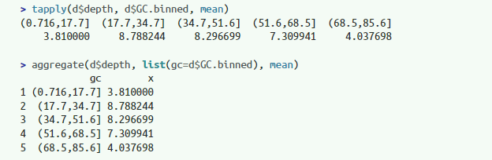</p>
<h4 id="Understanding-do-call">Understanding do.call()</h4>
<p>在R中，运行函数需要写明函数名和参数名，比如 <code>func(arg1, arg2, arg3)</code>，func 是函数名， arg1、arg2 、arg3 是参数名。</p>
<p>do.call() 可以让你通过使用一个函数名和 <strong>一个参数的列表</strong>  来使用函数。比如 <code>func(arg1, arg2, arg3)</code>  等价于 <code>do.call(func, list(arg1, arg2, arg3))</code> 。如果传递给 do.call() 函数的列表的元素都有名称，这些元素的名称会匹配函数的参数名称。比如，对于 <code>rnorm()</code> 函数，可以这么写：</p>
<figure class="highlight r"><table><tr><td class="gutter"><pre><span class="line">1</span><br><span class="line">2</span><br></pre></td><td class="code"><pre><span class="line">&gt; do.call(rnorm, <span class="built_in">list</span>(n=<span class="number">4</span>, mean=<span class="number">3.3</span>, sd=<span class="number">4</span>))</span><br><span class="line">[<span class="number">1</span>] <span class="number">8.351817</span> <span class="number">1.995067</span> <span class="number">8.619197</span> <span class="number">8.389717</span></span><br></pre></td></tr></table></figure>
<p><code>do.call()</code> 看上去复杂，但是当函数需要使用的参数都在一个<strong>list</strong>里，这种传参方法就很实用，比如这里使用<code>cbind()</code> 或 <code>rbind()</code> 函数整合结果。</p>
<h3 id="8-3-12-Exploring-Dataframes-with-dplyr">8.3.12 Exploring Dataframes with dplyr</h3>
<p>在 R 中的数据操作都与<strong>数据框</strong>有关。dplyr 巩固和简化了很多设计数据框的操作，而且 dplyr 速度很快，它的核心函数是用 C++写的。</p>
<p>dplyr 有5个操作数据框的基本函数：arrange(), filter(), mutate(), select(), summarize()。这些你都可以用R 的基础函数实现，但是 dplyr 的优势在于稳定、速度快并且用途广。</p>
<p>通常数据框的行数和列数都很多，无法全部在屏幕上打印出来，<code>dplyr</code> 使用一个 函数 <code>tbl_df</code> 可以折叠数据框，这样 print 的时候不会铺满全屏（相当于 head()）(到这里都感觉没什么用)</p>
<figure class="highlight r"><table><tr><td class="gutter"><pre><span class="line">1</span><br><span class="line">2</span><br><span class="line">3</span><br><span class="line">4</span><br><span class="line">5</span><br><span class="line">6</span><br><span class="line">7</span><br><span class="line">8</span><br><span class="line">9</span><br><span class="line">10</span><br><span class="line">11</span><br><span class="line">12</span><br><span class="line">13</span><br><span class="line">14</span><br><span class="line">15</span><br><span class="line">16</span><br><span class="line">17</span><br><span class="line">18</span><br><span class="line">19</span><br><span class="line">20</span><br><span class="line">21</span><br><span class="line">22</span><br><span class="line">23</span><br></pre></td><td class="code"><pre><span class="line">&gt; install.packages(<span class="string">&quot;dplyr&quot;</span>) <span class="comment"># install dplyr if it&#x27;s not already installed</span></span><br><span class="line">&gt; library(dplyr)</span><br><span class="line">&gt; d_df &lt;- tbl_df(d)</span><br><span class="line">&gt; d_df</span><br><span class="line"><span class="comment"># A tibble: 59,140 x 20</span></span><br><span class="line">   start   end total.SNPs total.Bases depth unique.SNPs</span><br><span class="line">   &lt;int&gt; &lt;int&gt;      &lt;int&gt;       &lt;int&gt; &lt;dbl&gt;       &lt;int&gt;</span><br><span class="line"> <span class="number">1</span> <span class="number">55001</span> <span class="number">56000</span>          <span class="number">0</span>        <span class="number">1894</span>  <span class="number">3.41</span>           <span class="number">0</span></span><br><span class="line"> <span class="number">2</span> <span class="number">56001</span> <span class="number">57000</span>          <span class="number">5</span>        <span class="number">6683</span>  <span class="number">6.68</span>           <span class="number">2</span></span><br><span class="line"> <span class="number">3</span> <span class="number">57001</span> <span class="number">58000</span>          <span class="number">1</span>        <span class="number">9063</span>  <span class="number">9.06</span>           <span class="number">1</span></span><br><span class="line"> <span class="number">4</span> <span class="number">58001</span> <span class="number">59000</span>          <span class="number">7</span>       <span class="number">10256</span> <span class="number">10.3</span>            <span class="number">3</span></span><br><span class="line"> <span class="number">5</span> <span class="number">59001</span> <span class="number">60000</span>          <span class="number">4</span>        <span class="number">8057</span>  <span class="number">8.06</span>           <span class="number">4</span></span><br><span class="line"> <span class="number">6</span> <span class="number">60001</span> <span class="number">61000</span>          <span class="number">6</span>        <span class="number">7051</span>  <span class="number">7.05</span>           <span class="number">2</span></span><br><span class="line"> <span class="number">7</span> <span class="number">61001</span> <span class="number">62000</span>          <span class="number">7</span>        <span class="number">6950</span>  <span class="number">6.95</span>           <span class="number">2</span></span><br><span class="line"> <span class="number">8</span> <span class="number">62001</span> <span class="number">63000</span>          <span class="number">1</span>        <span class="number">8834</span>  <span class="number">8.83</span>           <span class="number">1</span></span><br><span class="line"> <span class="number">9</span> <span class="number">63001</span> <span class="number">64000</span>          <span class="number">1</span>        <span class="number">9629</span>  <span class="number">9.63</span>           <span class="number">1</span></span><br><span class="line">10 <span class="number">64001</span> <span class="number">65000</span>          <span class="number">3</span>        <span class="number">7999</span>  <span class="number">8</span>              <span class="number">1</span></span><br><span class="line"><span class="comment"># ... with 59,130 more rows, and 14 more variables:</span></span><br><span class="line"><span class="comment">#   dhSNPs &lt;int&gt;, reference.Bases &lt;int&gt;, Theta &lt;dbl&gt;,</span></span><br><span class="line"><span class="comment">#   Pi &lt;dbl&gt;, Heterozygosity &lt;dbl&gt;, X.GC &lt;dbl&gt;,</span></span><br><span class="line"><span class="comment">#   Recombination &lt;dbl&gt;, Divergence &lt;dbl&gt;, Constraint &lt;int&gt;,</span></span><br><span class="line"><span class="comment">#   SNPs &lt;int&gt;, position &lt;dbl&gt;, diversity &lt;dbl&gt;, cent &lt;lgl&gt;,</span></span><br><span class="line"><span class="comment">#   GC.binned &lt;fct&gt;</span></span><br></pre></td></tr></table></figure>
<p>我们可以使用 <code>select()</code> 函数挑选某些列</p>
<p>这和 <code>d[, c(&quot;start&quot;, &quot;end&quot;, &quot;Pi&quot;, &quot;Recombination&quot;, &quot;depth&quot;)]</code> 是等价的，但是 select 可以省略双引号。<code>select()</code> 可以写一个列的范围，比如 <code>select(d_df, start:total.Bases)</code> ，而且你可以通过在范围前面加一个负号，来剔除某些列。</p>
<figure class="highlight r"><table><tr><td class="gutter"><pre><span class="line">1</span><br><span class="line">2</span><br><span class="line">3</span><br><span class="line">4</span><br><span class="line">5</span><br><span class="line">6</span><br><span class="line">7</span><br><span class="line">8</span><br><span class="line">9</span><br><span class="line">10</span><br><span class="line">11</span><br><span class="line">12</span><br><span class="line">13</span><br><span class="line">14</span><br></pre></td><td class="code"><pre><span class="line">&gt; select(d_df, start, end, Pi, Recombination, depth)</span><br><span class="line"> start   end    Pi Recombination depth</span><br><span class="line">   &lt;int&gt; &lt;int&gt; &lt;dbl&gt;         &lt;dbl&gt; &lt;dbl&gt;</span><br><span class="line"> <span class="number">1</span> <span class="number">55001</span> <span class="number">56000</span>  <span class="number">0</span>          <span class="number">0.00960</span>  <span class="number">3.41</span></span><br><span class="line"> <span class="number">2</span> <span class="number">56001</span> <span class="number">57000</span> <span class="number">10.4</span>        <span class="number">0.00960</span>  <span class="number">6.68</span></span><br><span class="line"> <span class="number">3</span> <span class="number">57001</span> <span class="number">58000</span>  <span class="number">1.99</span>       <span class="number">0.00960</span>  <span class="number">9.06</span></span><br><span class="line"> <span class="number">4</span> <span class="number">58001</span> <span class="number">59000</span>  <span class="number">9.56</span>       <span class="number">0.00960</span> <span class="number">10.3</span> </span><br><span class="line"> <span class="number">5</span> <span class="number">59001</span> <span class="number">60000</span>  <span class="number">8.51</span>       <span class="number">0.00960</span>  <span class="number">8.06</span></span><br><span class="line"> <span class="number">6</span> <span class="number">60001</span> <span class="number">61000</span>  <span class="number">9.12</span>       <span class="number">0.00960</span>  <span class="number">7.05</span></span><br><span class="line"> <span class="number">7</span> <span class="number">61001</span> <span class="number">62000</span>  <span class="number">8.06</span>       <span class="number">0.00960</span>  <span class="number">6.95</span></span><br><span class="line"> <span class="number">8</span> <span class="number">62001</span> <span class="number">63000</span>  <span class="number">2.06</span>       <span class="number">0.00960</span>  <span class="number">8.83</span></span><br><span class="line"> <span class="number">9</span> <span class="number">63001</span> <span class="number">64000</span>  <span class="number">1.88</span>       <span class="number">0.00960</span>  <span class="number">9.63</span></span><br><span class="line">10 <span class="number">64001</span> <span class="number">65000</span>  <span class="number">5.41</span>       <span class="number">0.00958</span>  <span class="number">8</span>   </span><br><span class="line"><span class="comment"># ... with 59,130 more rows</span></span><br></pre></td></tr></table></figure>
<figure class="highlight r"><table><tr><td class="gutter"><pre><span class="line">1</span><br><span class="line">2</span><br><span class="line">3</span><br><span class="line">4</span><br><span class="line">5</span><br><span class="line">6</span><br><span class="line">7</span><br><span class="line">8</span><br><span class="line">9</span><br><span class="line">10</span><br><span class="line">11</span><br><span class="line">12</span><br><span class="line">13</span><br><span class="line">14</span><br></pre></td><td class="code"><pre><span class="line">&gt; select(d_df, -(start:cent))</span><br><span class="line">  GC.binned  </span><br><span class="line">   &lt;fct&gt;      </span><br><span class="line"> <span class="number">1</span> (<span class="number">51.6</span>,<span class="number">68.5</span>]</span><br><span class="line"> <span class="number">2</span> (<span class="number">34.7</span>,<span class="number">51.6</span>]</span><br><span class="line"> <span class="number">3</span> (<span class="number">34.7</span>,<span class="number">51.6</span>]</span><br><span class="line"> <span class="number">4</span> (<span class="number">34.7</span>,<span class="number">51.6</span>]</span><br><span class="line"> <span class="number">5</span> (<span class="number">34.7</span>,<span class="number">51.6</span>]</span><br><span class="line"> <span class="number">6</span> (<span class="number">34.7</span>,<span class="number">51.6</span>]</span><br><span class="line"> <span class="number">7</span> (<span class="number">34.7</span>,<span class="number">51.6</span>]</span><br><span class="line"> <span class="number">8</span> (<span class="number">34.7</span>,<span class="number">51.6</span>]</span><br><span class="line"> <span class="number">9</span> (<span class="number">34.7</span>,<span class="number">51.6</span>]</span><br><span class="line">10 (<span class="number">17.7</span>,<span class="number">34.7</span>]</span><br><span class="line"><span class="comment"># ... with 59,130 more rows</span></span><br></pre></td></tr></table></figure>
<p>你可以使用 filter() 函数取子集，比如 <code>d[d$Pi  &gt;  16  &amp;  d$percent.GC  &gt;  80,  ]</code>， 在 <code>filter()</code> 函数中 多个条件使用逗号 <code>,</code> 分隔</p>
<figure class="highlight r"><table><tr><td class="gutter"><pre><span class="line">1</span><br><span class="line">2</span><br><span class="line">3</span><br><span class="line">4</span><br><span class="line">5</span><br><span class="line">6</span><br><span class="line">7</span><br><span class="line">8</span><br><span class="line">9</span><br><span class="line">10</span><br><span class="line">11</span><br><span class="line">12</span><br></pre></td><td class="code"><pre><span class="line">&gt; filter(d_df, Pi &gt; <span class="number">16</span>, X.GC &gt; <span class="number">80</span>)</span><br><span class="line"> start    end total.SNPs total.Bases depth unique.SNPs</span><br><span class="line">   &lt;int&gt;  &lt;int&gt;      &lt;int&gt;       &lt;int&gt; &lt;dbl&gt;       &lt;int&gt;</span><br><span class="line">1 <span class="number">6.31e7</span> <span class="number">6.31e7</span>          <span class="number">5</span>         <span class="number">947</span>  <span class="number">2.39</span>           <span class="number">2</span></span><br><span class="line">2 <span class="number">6.32e7</span> <span class="number">6.32e7</span>          <span class="number">2</span>        <span class="number">1623</span>  <span class="number">3.21</span>           <span class="number">2</span></span><br><span class="line">3 <span class="number">6.32e7</span> <span class="number">6.32e7</span>          <span class="number">5</span>        <span class="number">1395</span>  <span class="number">1.89</span>           <span class="number">3</span></span><br><span class="line"><span class="comment"># ... with 14 more variables: dhSNPs &lt;int&gt;,</span></span><br><span class="line"><span class="comment">#   reference.Bases &lt;int&gt;, Theta &lt;dbl&gt;, Pi &lt;dbl&gt;,</span></span><br><span class="line"><span class="comment">#   Heterozygosity &lt;dbl&gt;, X.GC &lt;dbl&gt;, Recombination &lt;dbl&gt;,</span></span><br><span class="line"><span class="comment">#   Divergence &lt;dbl&gt;, Constraint &lt;int&gt;, SNPs &lt;int&gt;,</span></span><br><span class="line"><span class="comment">#   position &lt;dbl&gt;, diversity &lt;dbl&gt;, cent &lt;lgl&gt;,</span></span><br><span class="line"><span class="comment">#   GC.binned &lt;fct&gt;</span></span><br></pre></td></tr></table></figure>
<p>你可以使用 <code>arrange()</code> 来简化排序的操作，比如 <code>d[order(d$X.GC), ]</code></p>
<figure class="highlight r"><table><tr><td class="gutter"><pre><span class="line">1</span><br><span class="line">2</span><br><span class="line">3</span><br><span class="line">4</span><br><span class="line">5</span><br><span class="line">6</span><br><span class="line">7</span><br><span class="line">8</span><br><span class="line">9</span><br><span class="line">10</span><br><span class="line">11</span><br><span class="line">12</span><br><span class="line">13</span><br><span class="line">14</span><br><span class="line">15</span><br><span class="line">16</span><br><span class="line">17</span><br><span class="line">18</span><br><span class="line">19</span><br><span class="line">20</span><br></pre></td><td class="code"><pre><span class="line">&gt; arrange(d_df, depth)</span><br><span class="line"><span class="comment"># A tibble: 59,140 x 20</span></span><br><span class="line">    start    end total.SNPs total.Bases depth unique.SNPs</span><br><span class="line">    &lt;int&gt;  &lt;int&gt;      &lt;int&gt;       &lt;int&gt; &lt;dbl&gt;       &lt;int&gt;</span><br><span class="line"> <span class="number">1</span> <span class="number">1.23e6</span> <span class="number">1.24e6</span>          <span class="number">0</span>         <span class="number">444</span>     <span class="number">1</span>           <span class="number">0</span></span><br><span class="line"> <span class="number">2</span> <span class="number">1.58e6</span> <span class="number">1.58e6</span>          <span class="number">0</span>         <span class="number">716</span>     <span class="number">1</span>           <span class="number">0</span></span><br><span class="line"> <span class="number">3</span> <span class="number">2.80e6</span> <span class="number">2.80e6</span>          <span class="number">0</span>         <span class="number">277</span>     <span class="number">1</span>           <span class="number">0</span></span><br><span class="line"> <span class="number">4</span> <span class="number">2.80e6</span> <span class="number">2.80e6</span>          <span class="number">0</span>         <span class="number">115</span>     <span class="number">1</span>           <span class="number">0</span></span><br><span class="line"> <span class="number">5</span> <span class="number">7.09e6</span> <span class="number">7.09e6</span>          <span class="number">0</span>         <span class="number">519</span>     <span class="number">1</span>           <span class="number">0</span></span><br><span class="line"> <span class="number">6</span> <span class="number">7.09e6</span> <span class="number">7.09e6</span>          <span class="number">2</span>         <span class="number">686</span>     <span class="number">1</span>           <span class="number">2</span></span><br><span class="line"> <span class="number">7</span> <span class="number">1.16e7</span> <span class="number">1.16e7</span>          <span class="number">1</span>         <span class="number">429</span>     <span class="number">1</span>           <span class="number">1</span></span><br><span class="line"> <span class="number">8</span> <span class="number">1.28e7</span> <span class="number">1.28e7</span>          <span class="number">0</span>         <span class="number">165</span>     <span class="number">1</span>           <span class="number">0</span></span><br><span class="line"> <span class="number">9</span> <span class="number">2.58e7</span> <span class="number">2.58e7</span>          <span class="number">0</span>         <span class="number">221</span>     <span class="number">1</span>           <span class="number">0</span></span><br><span class="line">10 <span class="number">2.58e7</span> <span class="number">2.58e7</span>          <span class="number">0</span>         <span class="number">172</span>     <span class="number">1</span>           <span class="number">0</span></span><br><span class="line"><span class="comment"># ... with 59,130 more rows, and 14 more variables:</span></span><br><span class="line"><span class="comment">#   dhSNPs &lt;int&gt;, reference.Bases &lt;int&gt;, Theta &lt;dbl&gt;,</span></span><br><span class="line"><span class="comment">#   Pi &lt;dbl&gt;, Heterozygosity &lt;dbl&gt;, X.GC &lt;dbl&gt;,</span></span><br><span class="line"><span class="comment">#   Recombination &lt;dbl&gt;, Divergence &lt;dbl&gt;, Constraint &lt;int&gt;,</span></span><br><span class="line"><span class="comment">#   SNPs &lt;int&gt;, position &lt;dbl&gt;, diversity &lt;dbl&gt;, cent &lt;lgl&gt;,</span></span><br><span class="line"><span class="comment">#   GC.binned &lt;fct&gt;</span></span><br></pre></td></tr></table></figure>
<p>你可以在 arrange() 中使用 <code>desc()</code> 函数来逆序排列</p>
<figure class="highlight r"><table><tr><td class="gutter"><pre><span class="line">1</span><br><span class="line">2</span><br><span class="line">3</span><br><span class="line">4</span><br><span class="line">5</span><br><span class="line">6</span><br><span class="line">7</span><br><span class="line">8</span><br><span class="line">9</span><br><span class="line">10</span><br><span class="line">11</span><br><span class="line">12</span><br><span class="line">13</span><br><span class="line">14</span><br><span class="line">15</span><br><span class="line">16</span><br><span class="line">17</span><br><span class="line">18</span><br><span class="line">19</span><br><span class="line">20</span><br></pre></td><td class="code"><pre><span class="line">&gt; arrange(d_df, desc(total.SNPs), desc(depth))</span><br><span class="line"><span class="comment"># A tibble: 59,140 x 20</span></span><br><span class="line">    start    end total.SNPs total.Bases depth unique.SNPs</span><br><span class="line">    &lt;int&gt;  &lt;int&gt;      &lt;int&gt;       &lt;int&gt; &lt;dbl&gt;       &lt;int&gt;</span><br><span class="line"> <span class="number">1</span> <span class="number">2.62e6</span> <span class="number">2.62e6</span>         <span class="number">93</span>       <span class="number">11337</span> <span class="number">11.3</span>           <span class="number">13</span></span><br><span class="line"> <span class="number">2</span> <span class="number">1.30e7</span> <span class="number">1.30e7</span>         <span class="number">88</span>       <span class="number">11784</span> <span class="number">11.8</span>           <span class="number">11</span></span><br><span class="line"> <span class="number">3</span> <span class="number">4.74e7</span> <span class="number">4.74e7</span>         <span class="number">87</span>       <span class="number">12505</span> <span class="number">12.5</span>            <span class="number">9</span></span><br><span class="line"> <span class="number">4</span> <span class="number">6.00e7</span> <span class="number">6.00e7</span>         <span class="number">84</span>       <span class="number">11553</span> <span class="number">11.6</span>           <span class="number">15</span></span><br><span class="line"> <span class="number">5</span> <span class="number">8.77e6</span> <span class="number">8.77e6</span>         <span class="number">83</span>       <span class="number">10253</span> <span class="number">10.2</span>           <span class="number">12</span></span><br><span class="line"> <span class="number">6</span> <span class="number">1.78e7</span> <span class="number">1.78e7</span>         <span class="number">81</span>       <span class="number">13347</span> <span class="number">13.4</span>           <span class="number">11</span></span><br><span class="line"> <span class="number">7</span> <span class="number">4.74e7</span> <span class="number">4.74e7</span>         <span class="number">80</span>       <span class="number">14218</span> <span class="number">14.2</span>            <span class="number">8</span></span><br><span class="line"> <span class="number">8</span> <span class="number">4.59e7</span> <span class="number">4.59e7</span>         <span class="number">80</span>        <span class="number">9820</span>  <span class="number">9.82</span>          <span class="number">11</span></span><br><span class="line"> <span class="number">9</span> <span class="number">2.49e7</span> <span class="number">2.49e7</span>         <span class="number">78</span>       <span class="number">11206</span> <span class="number">11.2</span>           <span class="number">16</span></span><br><span class="line">10 <span class="number">5.45e7</span> <span class="number">5.45e7</span>         <span class="number">76</span>        <span class="number">9691</span>  <span class="number">9.69</span>          <span class="number">12</span></span><br><span class="line"><span class="comment"># ... with 59,130 more rows, and 14 more variables:</span></span><br><span class="line"><span class="comment">#   dhSNPs &lt;int&gt;, reference.Bases &lt;int&gt;, Theta &lt;dbl&gt;,</span></span><br><span class="line"><span class="comment">#   Pi &lt;dbl&gt;, Heterozygosity &lt;dbl&gt;, X.GC &lt;dbl&gt;,</span></span><br><span class="line"><span class="comment">#   Recombination &lt;dbl&gt;, Divergence &lt;dbl&gt;, Constraint &lt;int&gt;,</span></span><br><span class="line"><span class="comment">#   SNPs &lt;int&gt;, position &lt;dbl&gt;, diversity &lt;dbl&gt;, cent &lt;lgl&gt;,</span></span><br><span class="line"><span class="comment">#   GC.binned &lt;fct&gt;</span></span><br></pre></td></tr></table></figure>
<p>通过使用 <code>mutate()</code> 函数可以增加新列</p>
<figure class="highlight plain"><table><tr><td class="gutter"><pre><span class="line">1</span><br><span class="line">2</span><br><span class="line">3</span><br></pre></td><td class="code"><pre><span class="line">&gt; d_df &lt;- select(d_df, -diversity) # remove our earlier diversity column</span><br><span class="line">&gt; d_df &lt;- mutate(d_df, diversity &#x3D; Pi&#x2F;(10*1000))</span><br><span class="line">&gt; d_df</span><br></pre></td></tr></table></figure>
<p>通过 <code>%&gt;%</code> 可以创建 <code>dplyr</code> 的 pipeline， <code>%&gt;%</code> 会<strong>将左边的变量视为右边函数的第一个参数</strong>，比如：</p>
<figure class="highlight r"><table><tr><td class="gutter"><pre><span class="line">1</span><br><span class="line">2</span><br><span class="line">3</span><br><span class="line">4</span><br></pre></td><td class="code"><pre><span class="line">&gt;  d_df %&gt;% mutate(GC.scaled = scale(percent.GC)) %&gt;% </span><br><span class="line">	        filter(GC.scaled &gt; <span class="number">4</span>, depth &gt; <span class="number">4</span>) %&gt;% </span><br><span class="line">            select(start, end, depth, GC.scaled, percent.GC) %&gt;%  </span><br><span class="line">            arrange(desc(depth))</span><br></pre></td></tr></table></figure>
<p><code>dplyr</code> 包的一个原始功能是可以处理分组和数据的描述统计</p>
<figure class="highlight plain"><table><tr><td class="gutter"><pre><span class="line">1</span><br><span class="line">2</span><br></pre></td><td class="code"><pre><span class="line">&gt; mtfs_df &lt;- tbl_df(mtfs)</span><br><span class="line">&gt; mtfs_df %&gt;% group_by(chr)</span><br></pre></td></tr></table></figure>
<p>汇总分组统计，我们可以一样使用dplyr 的 summarize() 函数去汇总，可以按照每一列去汇总。这里的 n() 函数返回每组观测值的数目。<code>n_distinct()</code> 返回每组观测值去重后的数目。first()  last()  nth()  返回第一个、最后一个和第n个观测值。</p>
<figure class="highlight plain"><table><tr><td class="gutter"><pre><span class="line">1</span><br><span class="line">2</span><br><span class="line">3</span><br></pre></td><td class="code"><pre><span class="line">&gt;  mtfs_df %&gt;%</span><br><span class="line">	group_by(chr) %&gt;%</span><br><span class="line">    summarize(max_recom &#x3D; max(recom), mean_recom &#x3D; mean(recom), num&#x3D;n())</span><br></pre></td></tr></table></figure>
<p>结果再排序。</p>
<figure class="highlight plain"><table><tr><td class="gutter"><pre><span class="line">1</span><br><span class="line">2</span><br><span class="line">3</span><br><span class="line">4</span><br></pre></td><td class="code"><pre><span class="line">&gt;  mtfs_df %&gt;%</span><br><span class="line">	group_by(chr) %&gt;%</span><br><span class="line">    summarize(max_recom &#x3D; max(recom), mean_recom &#x3D; mean(recom), num&#x3D;n()) %&gt;%     </span><br><span class="line">    arrange(desc(max_recom))</span><br></pre></td></tr></table></figure>
<h3 id="8-3-13-Working-with-Strings">8.3.13 Working with Strings</h3>
<p>R 语言并不是处理大多数生信文本处理的最佳语言。首先，R 处理数据前会将所有数据都存储在内存中；很多生信文本任务，更适合采用<strong>流处理</strong>的方式。其次，R处理字符串的方式，相比于python更加笨拙。</p>
<p>虽然有这些局限，但是有些时候我们还是需要用R来处理字符串。比如探索性数据分析。</p>
<p>如果你想要知道字符串的长度，使用 <code>nchar()</code> 函数</p>
<figure class="highlight plain"><table><tr><td class="gutter"><pre><span class="line">1</span><br><span class="line">2</span><br></pre></td><td class="code"><pre><span class="line">&gt; nchar(c(&quot;AGCTAG&quot;, &quot;ATA&quot;, &quot;GATCTGAG&quot;, &quot;&quot;))</span><br><span class="line">[1] 6 3 8 0</span><br></pre></td></tr></table></figure>
<p>我们可以通过 <code>grep()</code> 或 <code>regexpr()</code> 来查找符合某种pattern 的字符串向量的子集。</p>
<p><code>grep(pattern,x)</code>  返回匹配的字符的<strong>位置</strong></p>
<figure class="highlight plain"><table><tr><td class="gutter"><pre><span class="line">1</span><br><span class="line">2</span><br></pre></td><td class="code"><pre><span class="line">&gt; re_sites &lt;- c(&quot;CTGCAG&quot;, &quot;CGATCG&quot;, &quot;CAGCTG&quot;, &quot;CCCACA&quot;)</span><br><span class="line">&gt; grep(&quot;CAG&quot;, re_sites)</span><br></pre></td></tr></table></figure>
<p><code>grep()</code> 函数默认使用   POSIX  extended  regular  expressions，因此我们可以采用更加复杂的 patterns</p>
<figure class="highlight plain"><table><tr><td class="gutter"><pre><span class="line">1</span><br><span class="line">2</span><br></pre></td><td class="code"><pre><span class="line">&gt; grep(&quot;CT[CG]&quot;, re_sites)</span><br><span class="line">[1] 1 3</span><br></pre></td></tr></table></figure>
<p>你可以通过设置 <code>perl=TRUE</code> 来采用 Perl Compatible Regular Expressions (PCRE)  语法；你也可以通过 <code>fixed=TRUE</code> 来设置不使用正则表达式（特殊字符也视为一般字符）。</p>
<p>比如，下式中你打算匹配6号染色体，但是不能直接使用 grep(“6”, chrs) ，因为这会匹配到 16。</p>
<p>下式中 \d 表示数字，整个匹配模式改为6前面不能是数字。</p>
<figure class="highlight plain"><table><tr><td class="gutter"><pre><span class="line">1</span><br><span class="line">2</span><br><span class="line">3</span><br><span class="line">4</span><br><span class="line">5</span><br></pre></td><td class="code"><pre><span class="line">&gt; chrs &lt;- c(&quot;chrom6&quot;, &quot;chr2&quot;, &quot;chr6&quot;, &quot;chr4&quot;, &quot;chr1&quot;, &quot;chr16&quot;, &quot; chrom8&quot;)</span><br><span class="line">&gt; grep(&quot;[^\\d]6&quot;, chrs, perl&#x3D;TRUE)</span><br><span class="line">[1] 1 3</span><br><span class="line">&gt; chrs[grep(&quot;[^\\d]6&quot;, chrs, perl&#x3D;TRUE)]</span><br><span class="line">[1] &quot;chrom6&quot; &quot;chr6&quot;</span><br></pre></td></tr></table></figure>
<p>与 grep 不一样， <code>regexpr()</code> 每个元素都会返回一个值，如果不匹配会返回 -1。（这个函数没搞懂，不用）</p>
<figure class="highlight r"><table><tr><td class="gutter"><pre><span class="line">1</span><br></pre></td><td class="code"><pre><span class="line">&gt; regexpr(<span class="string">&quot;[^\\d]6&quot;</span>, chrs, perl=<span class="literal">TRUE</span>)</span><br></pre></td></tr></table></figure>
<p>我们可以用 <code>sub()</code> 函数来替换字符串。我们先开始一个简单的例子。 sub(pattern , replacement, x) ，会替换 x 向量中每个元素的 <strong>第一个</strong> 出现的pattern ，替换为 replacement。 <code>sub()</code> 函数 通过支持 perl=TRUE 和  fixed=TRUE。</p>
<figure class="highlight plain"><table><tr><td class="gutter"><pre><span class="line">1</span><br><span class="line">2</span><br><span class="line">3</span><br></pre></td><td class="code"><pre><span class="line">&gt; sub(pattern&#x3D;&quot;Watson&quot;, replacement&#x3D;&quot;Watson, Franklin,&quot;,      </span><br><span class="line">	x&#x3D;&quot;Watson and Crick discovered DNA&#39;s structure.&quot;)</span><br><span class="line">[1] &quot;Watson, Franklin, and Crick discovered DNA&#39;s structure.&quot;</span><br></pre></td></tr></table></figure>
<p>替换功能除了可以替换，还可以用于<strong>提取信息</strong>。这样做是通过正则表达式 <em>capturing groups</em>（捕获组）。这个功能会提取<strong>括号内的内容</strong>。</p>
<p>下面是几个例子，使用正则的时候一定要小心 <strong>silent error</strong>，比如下面第三个例子，得到的结果就是错的，这里是由于<code>.*</code> 是贪婪的。</p>
<p>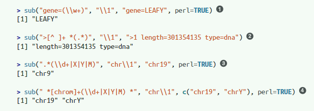</p>
<p><code>strsplit(x, split)</code> 将字符串分开，按照 split 将 x 分开。</p>
<figure class="highlight plain"><table><tr><td class="gutter"><pre><span class="line">1</span><br><span class="line">2</span><br><span class="line">3</span><br><span class="line">4</span><br><span class="line">5</span><br></pre></td><td class="code"><pre><span class="line">&gt; region &lt;- &quot;chr10:158395-172881&quot;</span><br><span class="line">&gt; chunks &lt;- sub(&quot;(chr[\\d+MYX]+):(\\d+)-(\\d+)&quot;,</span><br><span class="line">				&quot;\\1;;\\2;;\\3&quot;,</span><br><span class="line">                region, perl&#x3D;TRUE)</span><br><span class="line">&gt; strsplit(chunks, &quot;;;&quot;)</span><br></pre></td></tr></table></figure>
<h2 id="8-4-Developing-Workflows-with-R-Scripts">8.4 Developing Workflows with R Scripts</h2>
<h3 id="8-4-1-Control-Flow-if-for-and-while">8.4.1 Control Flow: if, for, and while</h3>
<p>R本身通过 apply() 家族来避免使用循环，但有时仍需要使用循环。</p>
<p>if、for、while 循环基本语法如下</p>
<p>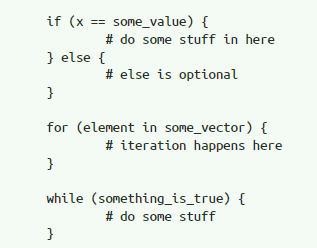</p>
<h3 id="8-4-2-Working-with-R-Scripts">8.4.2 Working with R Scripts</h3>
<p>第一种 在R中，输入</p>
<figure class="highlight plain"><table><tr><td class="gutter"><pre><span class="line">1</span><br></pre></td><td class="code"><pre><span class="line">&gt; source(&quot;my_analysis.R&quot;)</span><br></pre></td></tr></table></figure>
<p>第二种，在linux 中，输入</p>
<figure class="highlight plain"><table><tr><td class="gutter"><pre><span class="line">1</span><br></pre></td><td class="code"><pre><span class="line">Rscript --vanilla my_analysis.R</span><br></pre></td></tr></table></figure>
<p>推荐加上参数 <strong>–vanilla</strong>，因为默认情况下 Rscript 可以存储所有过去保存的环境和现在的环境（environment），即便执行结束了。（这段话没看懂，但是作者建议加上，那还是加上吧）</p>
<p>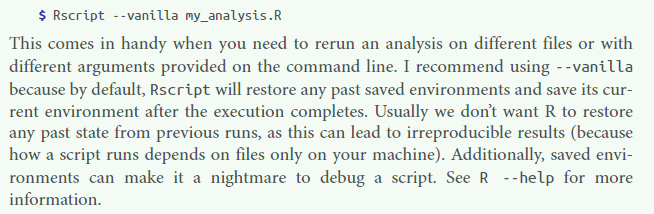</p>
<figure class="highlight plain"><table><tr><td class="gutter"><pre><span class="line">1</span><br><span class="line">2</span><br></pre></td><td class="code"><pre><span class="line">--vanilla</span><br><span class="line">       Combine --no-save, --no-restore, --no-site-file --no-init-file and --no-environ</span><br></pre></td></tr></table></figure>
<p>R代码加参数</p>
<figure class="highlight plain"><table><tr><td class="gutter"><pre><span class="line">1</span><br></pre></td><td class="code"><pre><span class="line">args &lt;- commandArgs(trailingOnly&#x3D;TRUE)</span><br></pre></td></tr></table></figure>
<h3 id="8-4-3-Workflows-for-Loading-and-Combining-Multiple-Files">8.4.3 Workflows for Loading and Combining Multiple Files</h3>
<p>当你需要同时读取多个文件时，比如多条染色体的文件。第一步，获取这些文件的文件名，<code>list.files()</code> 可以做到，而且支持正则表达式（尽量严格）, 这里需要用两个反斜杠来一般化这里的<code>.</code> 。通过设置 <code>full.names=TRUE</code> ，结果会给出相对路径。</p>
<figure class="highlight plain"><table><tr><td class="gutter"><pre><span class="line">1</span><br><span class="line">2</span><br><span class="line">3</span><br><span class="line">4</span><br></pre></td><td class="code"><pre><span class="line">&gt; list.files(&quot;hotspots&quot;, pattern&#x3D;&quot;hotspots.*\\.bed&quot;)</span><br><span class="line"> [1] &quot;hotspots_chr1.bed&quot;  &quot;hotspots_chr10.bed&quot; &quot;hotspots_chr11.bed&quot;</span><br><span class="line"> [4] &quot;hotspots_chr12.bed&quot; &quot;hotspots_chr13.bed&quot; &quot;hotspots_chr14.bed&quot;</span><br><span class="line"> [...]</span><br></pre></td></tr></table></figure>
<figure class="highlight plain"><table><tr><td class="gutter"><pre><span class="line">1</span><br></pre></td><td class="code"><pre><span class="line">&gt; hs_files &lt;- list.files(&quot;hotspots&quot;, pattern&#x3D;&quot;hotspots.*\\.bed&quot;, full.names&#x3D;TRUE)</span><br></pre></td></tr></table></figure>
<p>之后你就可以使用 lapply() 对每个文件采用相同的函数，之后可以可以再采用 do.call() 合并多个文件。</p>
<figure class="highlight plain"><table><tr><td class="gutter"><pre><span class="line">1</span><br><span class="line">2</span><br><span class="line">3</span><br><span class="line">4</span><br><span class="line">5</span><br></pre></td><td class="code"><pre><span class="line">&gt; bedcols &lt;- c(&quot;chr&quot;, &quot;start&quot;, &quot;end&quot;)</span><br><span class="line">&gt; loadFile &lt;- function(x) read.delim(x, header&#x3D;FALSE, col.names&#x3D;bedcols)</span><br><span class="line">&gt; hs &lt;- lapply(hs_files, loadFile)</span><br><span class="line">&gt; head(hs[[1]])</span><br><span class="line">&gt; hsd &lt;- do.call(rbind, hs)</span><br></pre></td></tr></table></figure>
<p>可以不用先合并文件，使用 lapply() 循环处理每个文件即可</p>
<figure class="highlight plain"><table><tr><td class="gutter"><pre><span class="line">1</span><br><span class="line">2</span><br><span class="line">3</span><br><span class="line">4</span><br><span class="line">5</span><br><span class="line">6</span><br></pre></td><td class="code"><pre><span class="line">loadAndSummarizeFile &lt;- function(x) &#123;</span><br><span class="line">	df &lt;- read.table(x, header&#x3D;FALSE, col.names&#x3D;bedcols)</span><br><span class="line">	data.frame(chr&#x3D;unique(df$chr), n&#x3D;nrow(df), mean_len&#x3D;mean(df$end - df$start))</span><br><span class="line">&#125;</span><br><span class="line">&gt; chr_hs_summaries &lt;- lapply(hs_files, loadAndSummarizeFile)</span><br><span class="line">&gt; chr_hs_summaries[1:2]</span><br></pre></td></tr></table></figure>
<h3 id="8-4-4-Exporting-Data">8.4.4 Exporting Data</h3>
<p><code>write.table()</code> 有一些不太好的地方，需要手动设置，比如<code>quote</code>, <code>row.names</code> 等</p>
<figure class="highlight plain"><table><tr><td class="gutter"><pre><span class="line">1</span><br><span class="line">2</span><br></pre></td><td class="code"><pre><span class="line">&gt; write.table(mtfs, file&#x3D;&quot;hotspot_motifs.txt&quot;, quote&#x3D;FALSE,              </span><br><span class="line">              sep&#x3D;&quot;\t&quot;, row.names&#x3D;FALSE, col.names&#x3D;TRUE)</span><br></pre></td></tr></table></figure>
<p>R 也可以输出为压缩文件</p>
<figure class="highlight plain"><table><tr><td class="gutter"><pre><span class="line">1</span><br><span class="line">2</span><br><span class="line">3</span><br></pre></td><td class="code"><pre><span class="line">&gt; hs_gzf &lt;- gzfile(&quot;hotspot_motifs.txt.gz&quot;)</span><br><span class="line">&gt; write.table(mtfs, file&#x3D;hs_gzf, quote&#x3D;FALSE, sep&#x3D;&quot;\t&quot;, row.names&#x3D;FALSE, </span><br><span class="line">              col.names&#x3D;TRUE)</span><br></pre></td></tr></table></figure>
<p>文本文件很好，但是R中的一些对象无法有效地转换为文本文件，比如列表，这个时候最好的办法是  save R objects as R objects 。</p>
<p>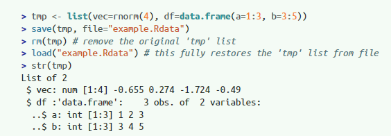</p>
<p>save() 函数还有一个类似的函数 save.image() ，这个函数可以保存工作路径下的所有对象。</p>
<h2 id="8-5-Further-R-Directions-and-Resources">8.5 Further R Directions and Resources</h2>
<h1>9 Working with Range Data</h1>
<h2 id="9-1-A-Crash-Course-in-Genomic-Ranges-and-Coordinate-Systems">9.1 A Crash Course in Genomic Ranges and Coordinate Systems</h2>
<p>range 表示一段序列的子序列（比如染色体的一段序列）。为了确定基因组上的区域或位置，我们需要以下信息：</p>
<ul>
<li>染色体名称 ：也称之为 <em>sequence name</em> （有些片段可能没有分配到染色体上）。但是令人头疼的是，<strong>染色体名称没有固定规范</strong>，比如 ”7,”  “22,”  “chrX,”  “Y,”  “MT”</li>
<li>范围：比如114,414,997  to  114,693,772</li>
<li>strand ：因为 DNA 是双链，因此需要指明是哪条链。forward (positive) or reverse(negative)。</li>
<li>参考基因组版本</li>
</ul>
<p>这三个组成部分形成了一个 <em>genomic range</em> (or <em>genomic interval</em> ) ，由于参考基因组是range 的坐标系， <em>ranges are completely linked to a specific genome version</em>. 换句话说，基因组位置都是相对于参考基因组来说的，因此当我们说 range 时 还需要<strong>指定参考基因组版本</strong>。</p>
<p>range 有两种表示方式。在 0-based 中，一个 sequence （比如染色体）的第一个位置标记为0，在这个参考系中，我们使用半闭半开区间 [start,end)，这和 python 的语法一致。在 1-based 中，第一个位置标记为1，区间为全闭区间 [start,end]，如同R中的语法。</p>
<ul>
<li>0-based coordinate system, with  half-closed, half-open intervals.</li>
<li>1-based coordinate system, with closed intervals.</li>
</ul>
<p>两种方式各有利弊，比如如果我们想看range 长度，对于 0-based，直接就是 end - start；而对于 1-based，则是  end - start +1 。0-based 还有一个优点在于可以表示长度是0的range （第二条没看懂，267页）</p>
<p>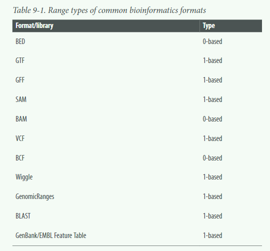</p>
<p>还有一个需要考虑的细节是 strand，但是一般不用管，<strong>因为除了 BLAST 格式外，所有 range 格式都是 forward 链</strong>。</p>
<p>但是有时你需要知道，因为 有些 features 只有在某条链的信息才有生物学功能。比如编码蛋白的基因，如果这个基因在 forward 链上，那么 forward 链上的序列和 mRNA 是一样的；反过来，如果这个基因型在 reverse 链上，那么必须把forward 链上的序列 <em>reverse complement</em> ，才能获得 mRNA 上的信息。</p>
<h3 id="参考基因组版本">参考基因组版本</h3>
<p><strong>同一片段在不同参考基因组版本中的位置不同</strong>。</p>
<p>有时你需要从旧版本升级到新版本，这个工作很繁琐，但是目前有些工具可以帮助你完成</p>
<p>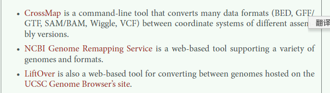</p>
<h2 id="9-2-An-Inter-active-Introduction-to-Range-Data-with-GenomicRanges">9.2 An Inter active Introduction to Range Data with GenomicRanges</h2>
<h3 id="9-2-1-Installing-and-Working-with-Bioconductor-Packages">9.2.1 Installing and Working with Bioconductor Packages</h3>
<p>这里我们用到了几个 Bioconductor 的包。</p>
<ul>
<li>GenomicRanges : 处理 genomic ranges</li>
<li>GenomicFeatures: 处理genomic features （有功能的 genomic ranges，比如genes, exons）</li>
<li>Biostrings and  BSgenome ：处理 genomic sequence data</li>
<li>rtracklayer ：读取生信格式的文件，比如 BED，GTF/GFF，WIG</li>
</ul>
<p>Bioconductor 包不同于 CRAN 的包，它会严格地一年更新两次，来跟上R版本的更新。</p>
<p>安装包的方式（这个是旧的，没法用了，需要提前安装 BiocInstaller ）</p>
<figure class="highlight plain"><table><tr><td class="gutter"><pre><span class="line">1</span><br><span class="line">2</span><br><span class="line">3</span><br></pre></td><td class="code"><pre><span class="line">&gt; source(&quot;http:&#x2F;&#x2F;bioconductor.org&#x2F;biocLite.R&quot;)</span><br><span class="line">&gt; biocLite()</span><br><span class="line">&gt; biocLite(&quot;GenomicRanges&quot;)</span><br></pre></td></tr></table></figure>
<p>现在的安装方式是采用 BiocManager 包</p>
<h4 id="BiocManager">BiocManager</h4>
<p><a target="_blank" rel="noopener" href="https://bioconductor.org/install/">https://bioconductor.org/install/</a></p>
<p>安装核心安装包：</p>
<figure class="highlight r"><table><tr><td class="gutter"><pre><span class="line">1</span><br><span class="line">2</span><br><span class="line">3</span><br></pre></td><td class="code"><pre><span class="line"><span class="keyword">if</span> (!requireNamespace(<span class="string">&quot;BiocManager&quot;</span>, quietly = <span class="literal">TRUE</span>))</span><br><span class="line">    install.packages(<span class="string">&quot;BiocManager&quot;</span>)</span><br><span class="line">BiocManager::install()</span><br></pre></td></tr></table></figure>
<p>安装特定的包</p>
<figure class="highlight r"><table><tr><td class="gutter"><pre><span class="line">1</span><br></pre></td><td class="code"><pre><span class="line">BiocManager::install(<span class="built_in">c</span>(<span class="string">&quot;GenomicFeatures&quot;</span>, <span class="string">&quot;AnnotationDbi&quot;</span>))</span><br></pre></td></tr></table></figure>
<p>查找包，比如输入“^org” ，查找所有可用的  organism annotation 包。</p>
<figure class="highlight r"><table><tr><td class="gutter"><pre><span class="line">1</span><br></pre></td><td class="code"><pre><span class="line">BiocManager::available()</span><br></pre></td></tr></table></figure>
<p>更新安装的包</p>
<figure class="highlight r"><table><tr><td class="gutter"><pre><span class="line">1</span><br></pre></td><td class="code"><pre><span class="line">BiocManager::install()</span><br></pre></td></tr></table></figure>
<h3 id="9-2-2-Storing-Generic-Ranges-with-IRanges">9.2.2 Storing Generic Ranges with IRanges</h3>
<p>通过 IRanges 函数包可以创建 IRanges 对象，包含两个元素：一个起始位置和结束位置，也可以设置长度。（注意，这里是 1-based 对象）</p>
<figure class="highlight plain"><table><tr><td class="gutter"><pre><span class="line">1</span><br><span class="line">2</span><br><span class="line">3</span><br><span class="line">4</span><br></pre></td><td class="code"><pre><span class="line">library(IRanges)</span><br><span class="line">rng &lt;- IRanges(start &#x3D; 4, end &#x3D; 13)</span><br><span class="line">rng</span><br><span class="line">IRanges(start&#x3D;4, width&#x3D;3)</span><br></pre></td></tr></table></figure>
<p>也可以创建包含多个ranges的对象，并且可以给每个range命名</p>
<figure class="highlight r"><table><tr><td class="gutter"><pre><span class="line">1</span><br><span class="line">2</span><br><span class="line">3</span><br><span class="line">4</span><br><span class="line">5</span><br><span class="line">6</span><br><span class="line">7</span><br><span class="line">8</span><br><span class="line">9</span><br><span class="line">10</span><br></pre></td><td class="code"><pre><span class="line">x = IRanges(start = <span class="built_in">c</span>(<span class="number">4</span>,<span class="number">7</span>,<span class="number">2</span>,<span class="number">20</span>), end = <span class="built_in">c</span>(<span class="number">13</span>,<span class="number">7</span>,<span class="number">5</span>,<span class="number">23</span>))</span><br><span class="line">x</span><br><span class="line"><span class="built_in">names</span>(x) &lt;- <span class="built_in">letters</span>[<span class="number">1</span>:<span class="number">4</span>]</span><br><span class="line">x</span><br><span class="line">start(x)</span><br><span class="line">end(x)</span><br><span class="line">width(x)</span><br><span class="line">end(x) = end(x) + <span class="number">4</span> <span class="comment">#延长ranges</span></span><br><span class="line">x</span><br><span class="line"><span class="built_in">range</span>(x) <span class="comment">#返回所有range的最大值和最小值</span></span><br></pre></td></tr></table></figure>
<p>取子集</p>
<figure class="highlight plain"><table><tr><td class="gutter"><pre><span class="line">1</span><br><span class="line">2</span><br><span class="line">3</span><br><span class="line">4</span><br><span class="line">5</span><br><span class="line">6</span><br></pre></td><td class="code"><pre><span class="line">x[2:3]</span><br><span class="line">start(x) &lt; 5 </span><br><span class="line">x[start(x) &lt;5]</span><br><span class="line">x[start(x) &gt;8]</span><br><span class="line">x[&#39;a&#39;]</span><br><span class="line"></span><br></pre></td></tr></table></figure>
<h3 id="9-2-3-Basic-Range-Operations-Arithmetic-Transformations-and-Set-Operations">9.2.3 Basic Range Operations: Arithmetic, Transformations, and Set Operations</h3>
<p>我们可以对range对象很方便地进行简单运算（+ - *，除法不行）。这里后面的 L 不知道有什么用，加不加都一样。</p>
<p>乘法一般用不上，乘以一个正数，缩小范围；乘以一个负数，扩大范围。</p>
<figure class="highlight r"><table><tr><td class="gutter"><pre><span class="line">1</span><br><span class="line">2</span><br><span class="line">3</span><br><span class="line">4</span><br><span class="line">5</span><br><span class="line">6</span><br><span class="line">7</span><br><span class="line">8</span><br><span class="line">9</span><br><span class="line">10</span><br><span class="line">11</span><br><span class="line">12</span><br><span class="line">13</span><br><span class="line">14</span><br></pre></td><td class="code"><pre><span class="line">&gt; x &lt;- IRanges(start=<span class="built_in">c</span>(<span class="number">40</span>, <span class="number">80</span>), end=<span class="built_in">c</span>(<span class="number">67</span>, <span class="number">114</span>))</span><br><span class="line">&gt; x + <span class="number">4L</span></span><br><span class="line">IRanges object with <span class="number">2</span> ranges and <span class="number">0</span> metadata columns:</span><br><span class="line">          start       end     width</span><br><span class="line">      &lt;integer&gt; &lt;integer&gt; &lt;integer&gt;</span><br><span class="line">  [<span class="number">1</span>]        <span class="number">36</span>        <span class="number">71</span>        <span class="number">36</span></span><br><span class="line">  [<span class="number">2</span>]        <span class="number">76</span>       <span class="number">118</span>        <span class="number">43</span></span><br><span class="line"></span><br><span class="line">&gt; x - <span class="number">10L</span></span><br><span class="line">IRanges object with <span class="number">2</span> ranges and <span class="number">0</span> metadata columns:</span><br><span class="line">          start       end     width</span><br><span class="line">      &lt;integer&gt; &lt;integer&gt; &lt;integer&gt;</span><br><span class="line">  [<span class="number">1</span>]        <span class="number">50</span>        <span class="number">57</span>         <span class="number">8</span></span><br><span class="line">  [<span class="number">2</span>]        <span class="number">90</span>       <span class="number">104</span>        <span class="number">15</span></span><br></pre></td></tr></table></figure>
<p>有的时候我们需要指定某个区间内的片段，可以使用restrict() 函数</p>
<figure class="highlight plain"><table><tr><td class="gutter"><pre><span class="line">1</span><br><span class="line">2</span><br><span class="line">3</span><br></pre></td><td class="code"><pre><span class="line">y &#x3D; IRanges(start &#x3D; c(4,6,10,12),width&#x3D;13)</span><br><span class="line">y</span><br><span class="line">restrict(y,5,10)</span><br></pre></td></tr></table></figure>
<p>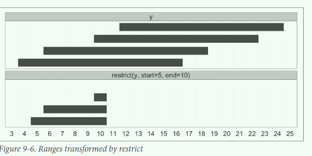</p>
<p>另一种转换方法是 flank() ，返回 range 中 上游/下游的片段。</p>
<figure class="highlight r"><table><tr><td class="gutter"><pre><span class="line">1</span><br><span class="line">2</span><br><span class="line">3</span><br><span class="line">4</span><br><span class="line">5</span><br><span class="line">6</span><br><span class="line">7</span><br><span class="line">8</span><br><span class="line">9</span><br><span class="line">10</span><br><span class="line">11</span><br><span class="line">12</span><br><span class="line">13</span><br><span class="line">14</span><br><span class="line">15</span><br><span class="line">16</span><br><span class="line">17</span><br><span class="line">18</span><br><span class="line">19</span><br></pre></td><td class="code"><pre><span class="line">&gt; x</span><br><span class="line">IRanges object with <span class="number">2</span> ranges and <span class="number">0</span> metadata columns:</span><br><span class="line">          start       end     width</span><br><span class="line">      &lt;integer&gt; &lt;integer&gt; &lt;integer&gt;</span><br><span class="line">  [<span class="number">1</span>]        <span class="number">40</span>        <span class="number">67</span>        <span class="number">28</span></span><br><span class="line">  [<span class="number">2</span>]        <span class="number">80</span>       <span class="number">114</span>        <span class="number">35</span></span><br><span class="line">&gt; flank(x, width=<span class="number">7</span>)</span><br><span class="line">IRanges object with <span class="number">2</span> ranges and <span class="number">0</span> metadata columns:</span><br><span class="line">          start       end     width</span><br><span class="line">      &lt;integer&gt; &lt;integer&gt; &lt;integer&gt;</span><br><span class="line">  [<span class="number">1</span>]        <span class="number">33</span>        <span class="number">39</span>         <span class="number">7</span></span><br><span class="line">  [<span class="number">2</span>]        <span class="number">73</span>        <span class="number">79</span>         <span class="number">7</span></span><br><span class="line"></span><br><span class="line">&gt; flank(x, width=<span class="number">7</span>, start = <span class="literal">FALSE</span>)</span><br><span class="line">IRanges object with <span class="number">2</span> ranges and <span class="number">0</span> metadata columns:</span><br><span class="line">          start       end     width</span><br><span class="line">      &lt;integer&gt; &lt;integer&gt; &lt;integer&gt;</span><br><span class="line">  [<span class="number">1</span>]        <span class="number">68</span>        <span class="number">74</span>         <span class="number">7</span></span><br><span class="line">  [<span class="number">2</span>]       <span class="number">115</span>       <span class="number">121</span>         <span class="number">7</span></span><br></pre></td></tr></table></figure>
<p>另一个常用的函数是 reduce() ，将有交叉的 ranges 划分为没有交叉的 ranges（有重叠的ranges 会合并为一个大的 range）。这个函数用于我们想看序列上有哪些位置是覆盖的。</p>
<figure class="highlight r"><table><tr><td class="gutter"><pre><span class="line">1</span><br><span class="line">2</span><br><span class="line">3</span><br><span class="line">4</span><br><span class="line">5</span><br><span class="line">6</span><br><span class="line">7</span><br><span class="line">8</span><br><span class="line">9</span><br><span class="line">10</span><br><span class="line">11</span><br><span class="line">12</span><br><span class="line">13</span><br><span class="line">14</span><br><span class="line">15</span><br><span class="line">16</span><br></pre></td><td class="code"><pre><span class="line">&gt; set.seed(<span class="number">0</span>)</span><br><span class="line">&gt; alns &lt;- IRanges(start=sample(<span class="built_in">seq_len</span>(<span class="number">50</span>),<span class="number">20</span>), width=<span class="number">5</span>)</span><br><span class="line">&gt; head(alns,<span class="number">4</span>)</span><br><span class="line">IRanges object with <span class="number">4</span> ranges and <span class="number">0</span> metadata columns:</span><br><span class="line">          start       end     width</span><br><span class="line">      &lt;integer&gt; &lt;integer&gt; &lt;integer&gt;</span><br><span class="line">  [<span class="number">1</span>]        <span class="number">14</span>        <span class="number">18</span>         <span class="number">5</span></span><br><span class="line">  [<span class="number">2</span>]         <span class="number">4</span>         <span class="number">8</span>         <span class="number">5</span></span><br><span class="line">  [<span class="number">3</span>]        <span class="number">39</span>        <span class="number">43</span>         <span class="number">5</span></span><br><span class="line">  [<span class="number">4</span>]         <span class="number">1</span>         <span class="number">5</span>         <span class="number">5</span></span><br><span class="line">&gt; reduce(alns)</span><br><span class="line">IRanges object with <span class="number">2</span> ranges and <span class="number">0</span> metadata columns:</span><br><span class="line">          start       end     width</span><br><span class="line">      &lt;integer&gt; &lt;integer&gt; &lt;integer&gt;</span><br><span class="line">  [<span class="number">1</span>]         <span class="number">1</span>        <span class="number">29</span>        <span class="number">29</span></span><br><span class="line">  [<span class="number">2</span>]        <span class="number">33</span>        <span class="number">54</span>        <span class="number">22</span></span><br></pre></td></tr></table></figure>
<p>相似的函数是 gaps() ，这个会返回哪些位置是没有覆盖的。</p>
<p>默认情况下，只会考虑 ranges 之间的gap，不会显示距离起始位置/终止位置的gap。这样做是因为 gaps 不知道起始位置和终止位置在哪，如果你要显示的话，需要指定，比如（<code>gaps(alns, start=1, end=60)</code>）</p>
<figure class="highlight plain"><table><tr><td class="gutter"><pre><span class="line">1</span><br><span class="line">2</span><br><span class="line">3</span><br><span class="line">4</span><br><span class="line">5</span><br></pre></td><td class="code"><pre><span class="line">&gt; gaps(alns)</span><br><span class="line">IRanges object with 1 range and 0 metadata columns:</span><br><span class="line">          start       end     width</span><br><span class="line">      &lt;integer&gt; &lt;integer&gt; &lt;integer&gt;</span><br><span class="line">  [1]        30        32         3</span><br></pre></td></tr></table></figure>
<p>另一套有用的函数是 set 操作。</p>
<figure class="highlight r"><table><tr><td class="gutter"><pre><span class="line">1</span><br><span class="line">2</span><br><span class="line">3</span><br><span class="line">4</span><br><span class="line">5</span><br><span class="line">6</span><br><span class="line">7</span><br><span class="line">8</span><br><span class="line">9</span><br><span class="line">10</span><br><span class="line">11</span><br><span class="line">12</span><br><span class="line">13</span><br><span class="line">14</span><br><span class="line">15</span><br><span class="line">16</span><br><span class="line">17</span><br><span class="line">18</span><br><span class="line">19</span><br><span class="line">20</span><br><span class="line">21</span><br><span class="line">22</span><br></pre></td><td class="code"><pre><span class="line">&gt; a &lt;- IRanges(start = <span class="number">4</span>, end = <span class="number">13</span>)</span><br><span class="line">&gt; b &lt;- IRanges(start = <span class="number">12</span>, end = <span class="number">17</span>)</span><br><span class="line">&gt; intersect(a,b)</span><br><span class="line">IRanges object with <span class="number">1</span> <span class="built_in">range</span> and <span class="number">0</span> metadata columns:</span><br><span class="line">          start       end     width</span><br><span class="line">      &lt;integer&gt; &lt;integer&gt; &lt;integer&gt;</span><br><span class="line">  [<span class="number">1</span>]        <span class="number">12</span>        <span class="number">13</span>         <span class="number">2</span></span><br><span class="line">&gt; setdiff(a,b)</span><br><span class="line">IRanges object with <span class="number">1</span> <span class="built_in">range</span> and <span class="number">0</span> metadata columns:</span><br><span class="line">          start       end     width</span><br><span class="line">      &lt;integer&gt; &lt;integer&gt; &lt;integer&gt;</span><br><span class="line">  [<span class="number">1</span>]         <span class="number">4</span>        <span class="number">11</span>         <span class="number">8</span></span><br><span class="line">&gt; union(a,b)</span><br><span class="line">IRanges object with <span class="number">1</span> <span class="built_in">range</span> and <span class="number">0</span> metadata columns:</span><br><span class="line">          start       end     width</span><br><span class="line">      &lt;integer&gt; &lt;integer&gt; &lt;integer&gt;</span><br><span class="line">  [<span class="number">1</span>]         <span class="number">4</span>        <span class="number">17</span>        <span class="number">14</span></span><br><span class="line">&gt; union(b,a)</span><br><span class="line">IRanges object with <span class="number">1</span> <span class="built_in">range</span> and <span class="number">0</span> metadata columns:</span><br><span class="line">          start       end     width</span><br><span class="line">      &lt;integer&gt; &lt;integer&gt; &lt;integer&gt;</span><br><span class="line">  [<span class="number">1</span>]         <span class="number">4</span>        <span class="number">17</span>        <span class="number">14</span></span><br></pre></td></tr></table></figure>
<h3 id="9-2-4-Finding-Overlapping-Ranges">9.2.4 Finding Overlapping Ranges</h3>
<p>查找重叠的ranges很重要，如何查找重叠区域有不同的方法，需要视情况选用。</p>
<p><code>findOverlaps() </code> 函数是将第一个ranges 中所有range 与第二个的所有range 进行匹配，存在overlap 就显示在结果中（仅为索引）。</p>
<figure class="highlight r"><table><tr><td class="gutter"><pre><span class="line">1</span><br><span class="line">2</span><br><span class="line">3</span><br><span class="line">4</span><br><span class="line">5</span><br><span class="line">6</span><br><span class="line">7</span><br><span class="line">8</span><br><span class="line">9</span><br><span class="line">10</span><br><span class="line">11</span><br><span class="line">12</span><br><span class="line">13</span><br><span class="line">14</span><br><span class="line">15</span><br><span class="line">16</span><br><span class="line">17</span><br><span class="line">18</span><br><span class="line">19</span><br></pre></td><td class="code"><pre><span class="line">qry &lt;- IRanges(start = <span class="built_in">c</span>(<span class="number">1</span>,<span class="number">26</span>,<span class="number">19</span>,<span class="number">11</span>,<span class="number">21</span>,<span class="number">7</span>), end=<span class="built_in">c</span>(<span class="number">16</span>,<span class="number">30</span>,<span class="number">19</span>,<span class="number">15</span>,<span class="number">24</span>,<span class="number">8</span>),<span class="built_in">names</span>=<span class="built_in">letters</span>[<span class="number">1</span>:<span class="number">6</span>])</span><br><span class="line">sbj &lt;- IRanges(start = <span class="built_in">c</span>(<span class="number">1</span>,<span class="number">19</span>,<span class="number">10</span>), end=<span class="built_in">c</span>(<span class="number">5</span>,<span class="number">29</span>,<span class="number">16</span>), <span class="built_in">names</span>=<span class="built_in">letters</span>[<span class="number">24</span>:<span class="number">26</span>])</span><br><span class="line">qry</span><br><span class="line">sbj</span><br><span class="line">hts &lt;- findOverlaps(qry,sbj)</span><br><span class="line">hts</span><br><span class="line"></span><br><span class="line">&gt; hts</span><br><span class="line">Hits object with <span class="number">6</span> hits and <span class="number">0</span> metadata columns:</span><br><span class="line">      queryHits subjectHits</span><br><span class="line">      &lt;integer&gt;   &lt;integer&gt;</span><br><span class="line">  [<span class="number">1</span>]         <span class="number">1</span>           <span class="number">1</span></span><br><span class="line">  [<span class="number">2</span>]         <span class="number">1</span>           <span class="number">3</span></span><br><span class="line">  [<span class="number">3</span>]         <span class="number">2</span>           <span class="number">2</span></span><br><span class="line">  [<span class="number">4</span>]         <span class="number">3</span>           <span class="number">2</span></span><br><span class="line">  [<span class="number">5</span>]         <span class="number">4</span>           <span class="number">3</span></span><br><span class="line">  [<span class="number">6</span>]         <span class="number">5</span>           <span class="number">2</span></span><br><span class="line">  -------</span><br><span class="line">  queryLength: <span class="number">6</span> / subjectLength: <span class="number">3</span></span><br></pre></td></tr></table></figure>
<p>默认情况下只有任意存在overlapping，就会显示在结果中（ type = “any”）。</p>
<p>可以更改这个参数，比如 改为 “within”，第一个参数的range 必须包含在第二个参数的range 中。</p>
<figure class="highlight plain"><table><tr><td class="gutter"><pre><span class="line">1</span><br><span class="line">2</span><br></pre></td><td class="code"><pre><span class="line">hts_within &lt;- findOverlaps(qry, sbj, type&#x3D;&quot;within&quot;)</span><br><span class="line">hts_within</span><br></pre></td></tr></table></figure>
<p>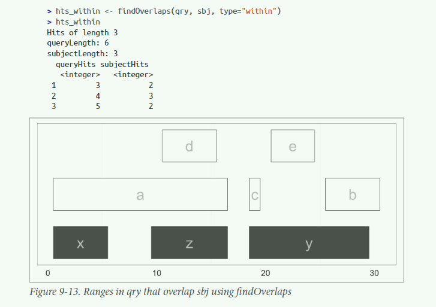</p>
<p>另一个需要考虑的参数是 <code>select</code>，这决定当一个 query 与多个 subject ranges 具有重叠时如何处理。“all” 会返回所有的配对，“first” “last” “arbitrary” 只返回一个配对（没有返回NA），选择这三个选项会返回一个整数的向量，每个元素表示 每个 query range 的匹配结果。</p>
<figure class="highlight plain"><table><tr><td class="gutter"><pre><span class="line">1</span><br><span class="line">2</span><br><span class="line">3</span><br><span class="line">4</span><br><span class="line">5</span><br><span class="line">6</span><br></pre></td><td class="code"><pre><span class="line">&gt; findOverlaps(qry, sbj, select&#x3D;&quot;first&quot;)</span><br><span class="line">[1]  1  2  2  3  2 NA</span><br><span class="line">&gt; findOverlaps(qry, sbj, select&#x3D;&quot;last&quot;)</span><br><span class="line">[1]  3  2  2  3  2 NA</span><br><span class="line">&gt; findOverlaps(qry, sbj, select&#x3D;&quot;arbitrary&quot;)</span><br><span class="line">[1]  1  2  2  3  2 NA</span><br></pre></td></tr></table></figure>
<p>如果query 的 ranges 很多，那么如果还要逐次配对，那么计算量很大。我们可以通过对subject序列排序（构建 interval trees ）降低配对数目。</p>
<figure class="highlight plain"><table><tr><td class="gutter"><pre><span class="line">1</span><br></pre></td><td class="code"><pre><span class="line">sbj_it &lt;- IntervalTree(sbj) #现在没用了</span><br></pre></td></tr></table></figure>
<p>其他方法</p>
<figure class="highlight plain"><table><tr><td class="gutter"><pre><span class="line">1</span><br><span class="line">2</span><br><span class="line">3</span><br><span class="line">4</span><br><span class="line">5</span><br><span class="line">6</span><br><span class="line">7</span><br><span class="line">8</span><br><span class="line">9</span><br><span class="line">10</span><br><span class="line">11</span><br><span class="line">12</span><br><span class="line">13</span><br><span class="line">14</span><br><span class="line">15</span><br><span class="line">16</span><br><span class="line">17</span><br><span class="line">18</span><br><span class="line">19</span><br></pre></td><td class="code"><pre><span class="line">&gt; as.matrix(hts)</span><br><span class="line">     queryHits subjectHits</span><br><span class="line">[1,]         1           1</span><br><span class="line">[2,]         1           3</span><br><span class="line">[3,]         2           2</span><br><span class="line">[4,]         3           2</span><br><span class="line">[5,]         4           3</span><br><span class="line">[6,]         5           2</span><br><span class="line">&gt; setNames(countQueryHits(hts),names(qry))</span><br><span class="line">a b c d e f </span><br><span class="line">2 1 1 1 1 0 </span><br><span class="line">&gt; countSubjectHits(hts)</span><br><span class="line">[1] 1 3 2</span><br><span class="line">&gt; setNames(countSubjectHits(hts),names(sbj))</span><br><span class="line">x y z </span><br><span class="line">1 3 2 </span><br><span class="line">&gt; ranges(hts, qry, sbj) #显示重叠区域</span><br><span class="line">Error in (function (classes, fdef, mtable)  : </span><br><span class="line">  unable to find an inherited method for function ‘ranges’ for signature ‘&quot;SortedByQueryHits&quot;’</span><br></pre></td></tr></table></figure>
<h3 id="9-2-5-Finding-Nearest-Ranges-and-Calculating-Distance">9.2.5 Finding Nearest Ranges and Calculating Distance</h3>
<p>查找与 query 序列临近的 subject 序列。IRanges 有三个函数可以实现：nearest()  precede() follow()。 nearest() 返回最近的序列，不管时上游还是下游；precede() follow() 分别返回 query precede subject 和  query follow subject 最近的序列。</p>
<p>但是 nearest() 和 precede() follow() 还有一点不一样，nearest() 即使重叠也会考虑。<strong>这些细节说明在进行这些操作前需要仔细阅读文档</strong>。</p>
<figure class="highlight r"><table><tr><td class="gutter"><pre><span class="line">1</span><br><span class="line">2</span><br><span class="line">3</span><br><span class="line">4</span><br><span class="line">5</span><br><span class="line">6</span><br><span class="line">7</span><br><span class="line">8</span><br><span class="line">9</span><br><span class="line">10</span><br><span class="line">11</span><br><span class="line">12</span><br><span class="line">13</span><br><span class="line">14</span><br><span class="line">15</span><br><span class="line">16</span><br><span class="line">17</span><br><span class="line">18</span><br><span class="line">19</span><br><span class="line">20</span><br><span class="line">21</span><br></pre></td><td class="code"><pre><span class="line">&gt; qry &lt;- IRanges(start=<span class="number">6</span>, end=<span class="number">13</span>, name=<span class="string">&#x27;query&#x27;</span>)</span><br><span class="line">&gt; sbj &lt;- IRanges(start=<span class="built_in">c</span>(<span class="number">2</span>,<span class="number">4</span>,<span class="number">18</span>,<span class="number">19</span>), end=<span class="built_in">c</span>(<span class="number">4</span>,<span class="number">5</span>,<span class="number">21</span>,<span class="number">24</span>), <span class="built_in">names</span>=<span class="number">1</span>:<span class="number">4</span>)</span><br><span class="line">&gt; qry</span><br><span class="line">IRanges object with <span class="number">1</span> <span class="built_in">range</span> and <span class="number">0</span> metadata columns:</span><br><span class="line">            start       end     width</span><br><span class="line">        &lt;integer&gt; &lt;integer&gt; &lt;integer&gt;</span><br><span class="line">  query         <span class="number">6</span>        <span class="number">13</span>         <span class="number">8</span></span><br><span class="line">&gt; sbj</span><br><span class="line">IRanges object with <span class="number">4</span> ranges and <span class="number">0</span> metadata columns:</span><br><span class="line">        start       end     width</span><br><span class="line">    &lt;integer&gt; &lt;integer&gt; &lt;integer&gt;</span><br><span class="line">  <span class="number">1</span>         <span class="number">2</span>         <span class="number">4</span>         <span class="number">3</span></span><br><span class="line">  <span class="number">2</span>         <span class="number">4</span>         <span class="number">5</span>         <span class="number">2</span></span><br><span class="line">  <span class="number">3</span>        <span class="number">18</span>        <span class="number">21</span>         <span class="number">4</span></span><br><span class="line">  <span class="number">4</span>        <span class="number">19</span>        <span class="number">24</span>         <span class="number">6</span></span><br><span class="line">&gt; nearest(qry,sbj)</span><br><span class="line">[<span class="number">1</span>] <span class="number">2</span></span><br><span class="line">&gt; precede(qry,sbj)</span><br><span class="line">[<span class="number">1</span>] <span class="number">3</span></span><br><span class="line">&gt; follow(qry,sbj)</span><br><span class="line">[<span class="number">1</span>] <span class="number">2</span></span><br></pre></td></tr></table></figure>
<p>可以通过 <code>distanceToNearest()</code> 和 <code>distance()</code> ，返回离最近的range的距离，和两边的最近的距离。</p>
<figure class="highlight r"><table><tr><td class="gutter"><pre><span class="line">1</span><br><span class="line">2</span><br><span class="line">3</span><br><span class="line">4</span><br><span class="line">5</span><br><span class="line">6</span><br><span class="line">7</span><br><span class="line">8</span><br><span class="line">9</span><br><span class="line">10</span><br><span class="line">11</span><br><span class="line">12</span><br><span class="line">13</span><br><span class="line">14</span><br><span class="line">15</span><br><span class="line">16</span><br><span class="line">17</span><br><span class="line">18</span><br><span class="line">19</span><br><span class="line">20</span><br><span class="line">21</span><br><span class="line">22</span><br><span class="line">23</span><br><span class="line">24</span><br><span class="line">25</span><br><span class="line">26</span><br><span class="line">27</span><br><span class="line">28</span><br><span class="line">29</span><br><span class="line">30</span><br><span class="line">31</span><br><span class="line">32</span><br><span class="line">33</span><br></pre></td><td class="code"><pre><span class="line">&gt; qry &lt;- IRanges(sample(<span class="built_in">seq_len</span>(<span class="number">1000</span>), <span class="number">5</span>), width=<span class="number">10</span>)</span><br><span class="line">&gt; sbj &lt;- IRanges(sample(<span class="built_in">seq_len</span>(<span class="number">1000</span>), <span class="number">5</span>), width=<span class="number">10</span>)</span><br><span class="line">&gt; qry</span><br><span class="line">IRanges object with <span class="number">5</span> ranges and <span class="number">0</span> metadata columns:</span><br><span class="line">          start       end     width</span><br><span class="line">      &lt;integer&gt; &lt;integer&gt; &lt;integer&gt;</span><br><span class="line">  [<span class="number">1</span>]       <span class="number">677</span>       <span class="number">686</span>        <span class="number">10</span></span><br><span class="line">  [<span class="number">2</span>]       <span class="number">802</span>       <span class="number">811</span>        <span class="number">10</span></span><br><span class="line">  [<span class="number">3</span>]       <span class="number">874</span>       <span class="number">883</span>        <span class="number">10</span></span><br><span class="line">  [<span class="number">4</span>]       <span class="number">382</span>       <span class="number">391</span>        <span class="number">10</span></span><br><span class="line">  [<span class="number">5</span>]       <span class="number">601</span>       <span class="number">610</span>        <span class="number">10</span></span><br><span class="line">&gt; sbj</span><br><span class="line">IRanges object with <span class="number">5</span> ranges and <span class="number">0</span> metadata columns:</span><br><span class="line">          start       end     width</span><br><span class="line">      &lt;integer&gt; &lt;integer&gt; &lt;integer&gt;</span><br><span class="line">  [<span class="number">1</span>]       <span class="number">940</span>       <span class="number">949</span>        <span class="number">10</span></span><br><span class="line">  [<span class="number">2</span>]       <span class="number">975</span>       <span class="number">984</span>        <span class="number">10</span></span><br><span class="line">  [<span class="number">3</span>]       <span class="number">801</span>       <span class="number">810</span>        <span class="number">10</span></span><br><span class="line">  [<span class="number">4</span>]       <span class="number">852</span>       <span class="number">861</span>        <span class="number">10</span></span><br><span class="line">  [<span class="number">5</span>]       <span class="number">931</span>       <span class="number">940</span>        <span class="number">10</span></span><br><span class="line">&gt; distanceToNearest(qry, sbj)</span><br><span class="line">Hits object with <span class="number">5</span> hits and <span class="number">1</span> metadata column:</span><br><span class="line">      queryHits subjectHits |  distance</span><br><span class="line">      &lt;integer&gt;   &lt;integer&gt; | &lt;integer&gt;</span><br><span class="line">  [<span class="number">1</span>]         <span class="number">1</span>           <span class="number">3</span> |       <span class="number">114</span></span><br><span class="line">  [<span class="number">2</span>]         <span class="number">2</span>           <span class="number">3</span> |         <span class="number">0</span></span><br><span class="line">  [<span class="number">3</span>]         <span class="number">3</span>           <span class="number">4</span> |        <span class="number">12</span></span><br><span class="line">  [<span class="number">4</span>]         <span class="number">4</span>           <span class="number">3</span> |       <span class="number">409</span></span><br><span class="line">  [<span class="number">5</span>]         <span class="number">5</span>           <span class="number">3</span> |       <span class="number">190</span></span><br><span class="line">  -------</span><br><span class="line">  queryLength: <span class="number">5</span> / subjectLength: <span class="number">5</span></span><br><span class="line">&gt; distance(qry, sbj)</span><br><span class="line">[<span class="number">1</span>] <span class="number">253</span> <span class="number">163</span>  <span class="number">63</span> <span class="number">460</span> <span class="number">320</span></span><br></pre></td></tr></table></figure>
<h3 id="9-2-6-Run-Length-Encoding-and-Views">9.2.6 Run Length Encoding and Views</h3>
<p>看不懂，先看下一章。</p>
<h3 id="9-2-7-Storing-Genomic-Ranges-with-GenomicRanges">9.2.7 Storing Genomic Ranges with GenomicRanges</h3>
<p>GenomicRanges 可以创建 GRanges 来存放 genomic ranges，这个来源于 IRanges，但是可以存在额外的两条信息（sequence name, strand）。</p>
<figure class="highlight r"><table><tr><td class="gutter"><pre><span class="line">1</span><br><span class="line">2</span><br><span class="line">3</span><br><span class="line">4</span><br><span class="line">5</span><br><span class="line">6</span><br><span class="line">7</span><br><span class="line">8</span><br><span class="line">9</span><br><span class="line">10</span><br><span class="line">11</span><br><span class="line">12</span><br><span class="line">13</span><br><span class="line">14</span><br><span class="line">15</span><br><span class="line">16</span><br><span class="line">17</span><br><span class="line">18</span><br><span class="line">19</span><br><span class="line">20</span><br><span class="line">21</span><br><span class="line">22</span><br><span class="line">23</span><br><span class="line">24</span><br><span class="line">25</span><br><span class="line">26</span><br><span class="line">27</span><br><span class="line">28</span><br><span class="line">29</span><br><span class="line">30</span><br></pre></td><td class="code"><pre><span class="line">&gt; library(GenomicRanges)</span><br><span class="line">载入需要的程辑包：GenomeInfoDb</span><br><span class="line">&gt; gr &lt;- GRanges(seqnames = <span class="built_in">c</span>(<span class="string">&quot;chr1&quot;</span>,<span class="string">&quot;chr1&quot;</span>,<span class="string">&quot;chr2&quot;</span>,<span class="string">&quot;chr3&quot;</span>), </span><br><span class="line">+               ranges=IRanges(start=<span class="number">5</span>:<span class="number">8</span>, width=<span class="number">10</span>),</span><br><span class="line">+               strand=<span class="built_in">c</span>(<span class="string">&quot;+&quot;</span>,<span class="string">&quot;-&quot;</span>,<span class="string">&quot;-&quot;</span>,<span class="string">&quot;+&quot;</span>))</span><br><span class="line">&gt; gr</span><br><span class="line">GRanges object with <span class="number">4</span> ranges and <span class="number">0</span> metadata columns:</span><br><span class="line">      seqnames    ranges strand</span><br><span class="line">         &lt;Rle&gt; &lt;IRanges&gt;  &lt;Rle&gt;</span><br><span class="line">  [<span class="number">1</span>]     chr1      <span class="number">5</span>-<span class="number">14</span>      +</span><br><span class="line">  [<span class="number">2</span>]     chr1      <span class="number">6</span>-<span class="number">15</span>      -</span><br><span class="line">  [<span class="number">3</span>]     chr2      <span class="number">7</span>-<span class="number">16</span>      -</span><br><span class="line">  [<span class="number">4</span>]     chr3      <span class="number">8</span>-<span class="number">17</span>      +</span><br><span class="line">  -------</span><br><span class="line">  seqinfo: <span class="number">3</span> sequences from an unspecified genome; no seqlengths</span><br><span class="line">&gt; ?runif </span><br><span class="line">&gt; gr &lt;- GRanges(seqnames = <span class="built_in">c</span>(<span class="string">&quot;chr1&quot;</span>,<span class="string">&quot;chr1&quot;</span>,<span class="string">&quot;chr2&quot;</span>,<span class="string">&quot;chr3&quot;</span>), </span><br><span class="line">+               ranges=IRanges(start=<span class="number">5</span>:<span class="number">8</span>, width=<span class="number">10</span>),</span><br><span class="line">+               strand=<span class="built_in">c</span>(<span class="string">&quot;+&quot;</span>,<span class="string">&quot;-&quot;</span>,<span class="string">&quot;-&quot;</span>,<span class="string">&quot;+&quot;</span>), gc=<span class="built_in">round</span>(runif(<span class="number">4</span>), <span class="number">3</span>))</span><br><span class="line">&gt; gr</span><br><span class="line">GRanges object with <span class="number">4</span> ranges and <span class="number">1</span> metadata column:</span><br><span class="line">      seqnames    ranges strand |        gc</span><br><span class="line">         &lt;Rle&gt; &lt;IRanges&gt;  &lt;Rle&gt; | &lt;numeric&gt;</span><br><span class="line">  [<span class="number">1</span>]     chr1      <span class="number">5</span>-<span class="number">14</span>      + |     <span class="number">0.724</span></span><br><span class="line">  [<span class="number">2</span>]     chr1      <span class="number">6</span>-<span class="number">15</span>      - |     <span class="number">0.411</span></span><br><span class="line">  [<span class="number">3</span>]     chr2      <span class="number">7</span>-<span class="number">16</span>      - |     <span class="number">0.821</span></span><br><span class="line">  [<span class="number">4</span>]     chr3      <span class="number">8</span>-<span class="number">17</span>      + |     <span class="number">0.647</span></span><br><span class="line">  -------</span><br><span class="line">  seqinfo: <span class="number">3</span> sequences from an unspecified genome; no seqlengths</span><br><span class="line"></span><br></pre></td></tr></table></figure>
<p>由于测序数据都有参考基因组，因此我们可以实现知道每个 sequence 的长度，这样才可以判断 coverage 和 gap。我们可以在创建GRanges 时说明，也可以在创建后指明长度。</p>
<figure class="highlight r"><table><tr><td class="gutter"><pre><span class="line">1</span><br><span class="line">2</span><br><span class="line">3</span><br><span class="line">4</span><br><span class="line">5</span><br><span class="line">6</span><br><span class="line">7</span><br><span class="line">8</span><br><span class="line">9</span><br><span class="line">10</span><br></pre></td><td class="code"><pre><span class="line">seqlens &lt;- <span class="built_in">c</span>(chr1=<span class="number">152</span>, chr2=<span class="number">432</span>, chr3=<span class="number">903</span>)</span><br><span class="line">gr &lt;- GRanges(seqnames = <span class="built_in">c</span>(<span class="string">&quot;chr1&quot;</span>,<span class="string">&quot;chr1&quot;</span>,<span class="string">&quot;chr2&quot;</span>,<span class="string">&quot;chr3&quot;</span>), </span><br><span class="line">               ranges=IRanges(start=<span class="number">5</span>:<span class="number">8</span>, width=<span class="number">10</span>),</span><br><span class="line">               strand=<span class="built_in">c</span>(<span class="string">&quot;+&quot;</span>,<span class="string">&quot;-&quot;</span>,<span class="string">&quot;-&quot;</span>,<span class="string">&quot;+&quot;</span>), </span><br><span class="line">               gc=<span class="built_in">round</span>(runif(<span class="number">4</span>), <span class="number">3</span>),</span><br><span class="line">               seqlengths = seqlens )</span><br><span class="line">gr</span><br><span class="line">seqlengths(gr) &lt;- seqlens  <span class="comment"># 另一种方式</span></span><br><span class="line">gr</span><br><span class="line"></span><br></pre></td></tr></table></figure>
<figure class="highlight r"><table><tr><td class="gutter"><pre><span class="line">1</span><br><span class="line">2</span><br><span class="line">3</span><br><span class="line">4</span><br><span class="line">5</span><br><span class="line">6</span><br></pre></td><td class="code"><pre><span class="line">&gt; start(gr)</span><br><span class="line">[<span class="number">1</span>] <span class="number">5</span> <span class="number">6</span> <span class="number">7</span> <span class="number">8</span></span><br><span class="line">&gt; end(gr)</span><br><span class="line">[<span class="number">1</span>] <span class="number">14</span> <span class="number">15</span> <span class="number">16</span> <span class="number">17</span></span><br><span class="line">&gt; width(gr)</span><br><span class="line">[<span class="number">1</span>] <span class="number">10</span> <span class="number">10</span> <span class="number">10</span> <span class="number">10</span></span><br></pre></td></tr></table></figure>
<figure class="highlight r"><table><tr><td class="gutter"><pre><span class="line">1</span><br><span class="line">2</span><br><span class="line">3</span><br><span class="line">4</span><br><span class="line">5</span><br><span class="line">6</span><br><span class="line">7</span><br><span class="line">8</span><br><span class="line">9</span><br><span class="line">10</span><br><span class="line">11</span><br><span class="line">12</span><br><span class="line">13</span><br></pre></td><td class="code"><pre><span class="line">&gt; <span class="built_in">length</span>(gr)</span><br><span class="line">[<span class="number">1</span>] <span class="number">4</span></span><br><span class="line">&gt; <span class="built_in">names</span>(gr) = <span class="built_in">letters</span>[<span class="number">1</span>:<span class="built_in">length</span>(gr)]</span><br><span class="line">&gt; gr</span><br><span class="line">GRanges object with <span class="number">4</span> ranges and <span class="number">1</span> metadata column:</span><br><span class="line">    seqnames    ranges strand |        gc</span><br><span class="line">       &lt;Rle&gt; &lt;IRanges&gt;  &lt;Rle&gt; | &lt;numeric&gt;</span><br><span class="line">  a     chr1      <span class="number">5</span>-<span class="number">14</span>      + |     <span class="number">0.783</span></span><br><span class="line">  b     chr1      <span class="number">6</span>-<span class="number">15</span>      - |     <span class="number">0.553</span></span><br><span class="line">  <span class="built_in">c</span>     chr2      <span class="number">7</span>-<span class="number">16</span>      - |     <span class="number">0.530</span></span><br><span class="line">  d     chr3      <span class="number">8</span>-<span class="number">17</span>      + |     <span class="number">0.789</span></span><br><span class="line">  -------</span><br><span class="line">  seqinfo: <span class="number">3</span> sequences from an unspecified genome</span><br></pre></td></tr></table></figure>
<p>GRanges 的一个优点是你可以取子集。</p>
<figure class="highlight ruby"><table><tr><td class="gutter"><pre><span class="line">1</span><br><span class="line">2</span><br><span class="line">3</span><br><span class="line">4</span><br><span class="line">5</span><br><span class="line">6</span><br><span class="line">7</span><br><span class="line">8</span><br><span class="line">9</span><br></pre></td><td class="code"><pre><span class="line">&gt; start(gr) &gt; <span class="number">7</span></span><br><span class="line">[<span class="number">1</span>] FALSE FALSE FALSE  TRUE</span><br><span class="line">&gt; gr[start(gr) &gt; <span class="number">7</span>]</span><br><span class="line">GRanges object with <span class="number">1</span> range <span class="keyword">and</span> <span class="number">1</span> metadata <span class="symbol">column:</span></span><br><span class="line">    seqnames    ranges strand <span class="params">|        gc</span></span><br><span class="line"><span class="params">       &lt;Rle&gt; &lt;IRanges&gt;  &lt;Rle&gt; |</span> &lt;numeric&gt;</span><br><span class="line">  d     chr3      <span class="number">8</span>-<span class="number">17</span>      + <span class="params">|     0.789</span></span><br><span class="line"><span class="params">  -------</span></span><br><span class="line"><span class="params">  seqinfo: 3 sequences from an unspecified genome</span></span><br></pre></td></tr></table></figure>
<figure class="highlight r"><table><tr><td class="gutter"><pre><span class="line">1</span><br><span class="line">2</span><br><span class="line">3</span><br><span class="line">4</span><br><span class="line">5</span><br><span class="line">6</span><br><span class="line">7</span><br><span class="line">8</span><br><span class="line">9</span><br><span class="line">10</span><br><span class="line">11</span><br><span class="line">12</span><br></pre></td><td class="code"><pre><span class="line">&gt; table(seqnames(gr))</span><br><span class="line"></span><br><span class="line">chr1 chr2 chr3 </span><br><span class="line">   <span class="number">2</span>    <span class="number">1</span>    <span class="number">1</span> </span><br><span class="line">&gt; gr[seqnames(gr) == <span class="string">&quot;chr1&quot;</span>]</span><br><span class="line">GRanges object with <span class="number">2</span> ranges and <span class="number">1</span> metadata column:</span><br><span class="line">    seqnames    ranges strand |        gc</span><br><span class="line">       &lt;Rle&gt; &lt;IRanges&gt;  &lt;Rle&gt; | &lt;numeric&gt;</span><br><span class="line">  a     chr1      <span class="number">5</span>-<span class="number">14</span>      + |     <span class="number">0.783</span></span><br><span class="line">  b     chr1      <span class="number">6</span>-<span class="number">15</span>      - |     <span class="number">0.553</span></span><br><span class="line">  -------</span><br><span class="line">  seqinfo: <span class="number">3</span> sequences from an unspecified genome</span><br></pre></td></tr></table></figure>
<p>取某一列</p>
<figure class="highlight r"><table><tr><td class="gutter"><pre><span class="line">1</span><br><span class="line">2</span><br></pre></td><td class="code"><pre><span class="line">&gt; gr$gc</span><br><span class="line">[<span class="number">1</span>] <span class="number">0.783</span> <span class="number">0.553</span> <span class="number">0.530</span> <span class="number">0.789</span></span><br></pre></td></tr></table></figure>
<h3 id="9-2-8-Grouping-Data-with-GRangesList">9.2.8 Grouping Data with GRangesList</h3>
<p>GRanges 对象也有相应的列表，称之为 GRangesList。</p>
<p>我们可以手动创建一个 GRangesList</p>
<figure class="highlight r"><table><tr><td class="gutter"><pre><span class="line">1</span><br><span class="line">2</span><br><span class="line">3</span><br><span class="line">4</span><br><span class="line">5</span><br><span class="line">6</span><br></pre></td><td class="code"><pre><span class="line">library(GenomicRanges)</span><br><span class="line">gr1 &lt;- GRanges(<span class="built_in">c</span>(<span class="string">&quot;chr1&quot;</span>,<span class="string">&quot;chr2&quot;</span>), IRanges(start=<span class="built_in">c</span>(<span class="number">32</span>,<span class="number">95</span>), width=<span class="built_in">c</span>(<span class="number">24</span>,<span class="number">123</span>)))</span><br><span class="line">gr2 &lt;- GRanges(<span class="built_in">c</span>(<span class="string">&quot;chr8&quot;</span>,<span class="string">&quot;chr2&quot;</span>), IRanges(start=<span class="built_in">c</span>(<span class="number">27</span>,<span class="number">12</span>), width=<span class="built_in">c</span>(<span class="number">42</span>,<span class="number">34</span>)))</span><br><span class="line">grl &lt;- GRangesList(gr1,gr2)</span><br><span class="line">grl</span><br><span class="line"></span><br></pre></td></tr></table></figure>
<p>GRangesList 同样有普通列表的功能</p>
<figure class="highlight fortran"><table><tr><td class="gutter"><pre><span class="line">1</span><br><span class="line">2</span><br><span class="line">3</span><br><span class="line">4</span><br><span class="line">5</span><br></pre></td><td class="code"><pre><span class="line">unlist(grl) #把GRangesList转换为GRanges 对象</span><br><span class="line">doubled_grl = c(grl,grl) #合并list</span><br><span class="line">length(doubled_grl)</span><br><span class="line">doubled_grl</span><br><span class="line"></span><br></pre></td></tr></table></figure>
<p>切片同样如此，一个方括号仍然返回一个 GRangesList 对象，两个方括号返回GRanges 对象</p>
<figure class="highlight r"><table><tr><td class="gutter"><pre><span class="line">1</span><br><span class="line">2</span><br><span class="line">3</span><br></pre></td><td class="code"><pre><span class="line">doubled_grl[<span class="number">2</span>]</span><br><span class="line">doubled_grl[[<span class="number">2</span>]]</span><br><span class="line"></span><br></pre></td></tr></table></figure>
<p>GRangesList  还有一些特殊的函数（seqnames(), start(), end(), width(), ranges(), strand(), 等）</p>
<figure class="highlight r"><table><tr><td class="gutter"><pre><span class="line">1</span><br><span class="line">2</span><br></pre></td><td class="code"><pre><span class="line">seqnames(grl)</span><br><span class="line">start(grl)</span><br></pre></td></tr></table></figure>
<p>除了通过 <code>GRangesList()</code> 手动创建 GRanges 对象外，还可以通过 <code>split()</code> 函数处理 GRanges 对象。比如将一个 GRanges 对象 按照 sequence name （染色体）切分开，创建几个子对象。</p>
<figure class="highlight r"><table><tr><td class="gutter"><pre><span class="line">1</span><br><span class="line">2</span><br><span class="line">3</span><br><span class="line">4</span><br><span class="line">5</span><br><span class="line">6</span><br></pre></td><td class="code"><pre><span class="line">chrs &lt;- <span class="built_in">c</span>(<span class="string">&quot;chr3&quot;</span>, <span class="string">&quot;chr1&quot;</span>, <span class="string">&quot;chr2&quot;</span>, <span class="string">&quot;chr2&quot;</span>, <span class="string">&quot;chr3&quot;</span>, <span class="string">&quot;chr1&quot;</span>)</span><br><span class="line">gr &lt;- GRanges(chrs, IRanges(sample(<span class="number">1</span>:<span class="number">100</span>, <span class="number">6</span>, replace=<span class="literal">TRUE</span>), width=sample(<span class="number">3</span>:<span class="number">30</span>, <span class="number">6</span>, replace=<span class="literal">TRUE</span>)))</span><br><span class="line">head(gr)</span><br><span class="line">gr_split &lt;- split(gr, seqnames(gr))</span><br><span class="line">gr_split[[<span class="number">1</span>]]</span><br><span class="line"><span class="built_in">names</span>(gr_split)</span><br></pre></td></tr></table></figure>
<p>输出结果为</p>
<figure class="highlight r"><table><tr><td class="gutter"><pre><span class="line">1</span><br><span class="line">2</span><br><span class="line">3</span><br><span class="line">4</span><br><span class="line">5</span><br><span class="line">6</span><br><span class="line">7</span><br><span class="line">8</span><br><span class="line">9</span><br><span class="line">10</span><br></pre></td><td class="code"><pre><span class="line">&gt; gr_split[[<span class="number">1</span>]]</span><br><span class="line">GRanges object with <span class="number">2</span> ranges and <span class="number">0</span> metadata columns:</span><br><span class="line">      seqnames    ranges strand</span><br><span class="line">         &lt;Rle&gt; &lt;IRanges&gt;  &lt;Rle&gt;</span><br><span class="line">  [<span class="number">1</span>]     chr3     <span class="number">31</span>-<span class="number">40</span>      *</span><br><span class="line">  [<span class="number">2</span>]     chr3     <span class="number">16</span>-<span class="number">24</span>      *</span><br><span class="line">  -------</span><br><span class="line">  seqinfo: <span class="number">3</span> sequences from an unspecified genome; no seqlengths</span><br><span class="line">&gt; <span class="built_in">names</span>(gr_split)</span><br><span class="line">[<span class="number">1</span>] <span class="string">&quot;chr3&quot;</span> <span class="string">&quot;chr1&quot;</span> <span class="string">&quot;chr2&quot;</span></span><br></pre></td></tr></table></figure>
<p>还可以通过 unsplit() 反向操作。</p>
<figure class="highlight r"><table><tr><td class="gutter"><pre><span class="line">1</span><br></pre></td><td class="code"><pre><span class="line">unsplit(gr_split,seqnames(gr))</span><br></pre></td></tr></table></figure>
<p>数据分组是 split-apply-combine 模式（239页）的基础。通过R的基本数据格式-列表，我们可以通过 lapply() 和 sapply() 来对所有的元素进行迭代。这两个函数也可以应用于 GRangesLists 对象。</p>
<figure class="highlight r"><table><tr><td class="gutter"><pre><span class="line">1</span><br><span class="line">2</span><br><span class="line">3</span><br><span class="line">4</span><br><span class="line">5</span><br><span class="line">6</span><br><span class="line">7</span><br><span class="line">8</span><br><span class="line">9</span><br><span class="line">10</span><br><span class="line">11</span><br><span class="line">12</span><br><span class="line">13</span><br><span class="line">14</span><br><span class="line">15</span><br><span class="line">16</span><br><span class="line">17</span><br><span class="line">18</span><br></pre></td><td class="code"><pre><span class="line">&gt; lapply(gr_split, <span class="keyword">function</span>(x) order(width(x)))</span><br><span class="line">$chr3</span><br><span class="line">[<span class="number">1</span>] <span class="number">2</span> <span class="number">1</span></span><br><span class="line"></span><br><span class="line">$chr1</span><br><span class="line">[<span class="number">1</span>] <span class="number">2</span> <span class="number">1</span></span><br><span class="line"></span><br><span class="line">$chr2</span><br><span class="line">[<span class="number">1</span>] <span class="number">1</span> <span class="number">2</span></span><br><span class="line"></span><br><span class="line">&gt; sapply(gr_split, <span class="keyword">function</span>(x) <span class="built_in">min</span>(start(x)))</span><br><span class="line">chr3 chr1 chr2 </span><br><span class="line">  <span class="number">16</span>   <span class="number">26</span>   <span class="number">48</span> </span><br><span class="line">&gt; sapply(gr_split, <span class="built_in">length</span>)</span><br><span class="line">chr3 chr1 chr2 </span><br><span class="line">   <span class="number">2</span>    <span class="number">2</span>    <span class="number">2</span> </span><br><span class="line">&gt; elementLengths(gr_split)</span><br><span class="line">Error <span class="keyword">in</span> elementLengths(gr_split) : 没有<span class="string">&quot;elementLengths&quot;</span>这个函数</span><br></pre></td></tr></table></figure>
<p>最后一个函数运行报错，不知道这个函数是哪个包的。</p>
<p>之前的 overlap 操作的函数都可以直接使用（我已经忘了，下面的结果我都看不懂）</p>
<figure class="highlight r"><table><tr><td class="gutter"><pre><span class="line">1</span><br><span class="line">2</span><br><span class="line">3</span><br><span class="line">4</span><br><span class="line">5</span><br><span class="line">6</span><br><span class="line">7</span><br><span class="line">8</span><br><span class="line">9</span><br><span class="line">10</span><br><span class="line">11</span><br><span class="line">12</span><br><span class="line">13</span><br><span class="line">14</span><br><span class="line">15</span><br><span class="line">16</span><br><span class="line">17</span><br><span class="line">18</span><br><span class="line">19</span><br><span class="line">20</span><br><span class="line">21</span><br><span class="line">22</span><br><span class="line">23</span><br><span class="line">24</span><br><span class="line">25</span><br><span class="line">26</span><br><span class="line">27</span><br></pre></td><td class="code"><pre><span class="line">&gt; reduce(gr_split)</span><br><span class="line">GRangesList object of <span class="built_in">length</span> <span class="number">3</span>:</span><br><span class="line">$chr3</span><br><span class="line">GRanges object with <span class="number">2</span> ranges and <span class="number">0</span> metadata columns:</span><br><span class="line">      seqnames    ranges strand</span><br><span class="line">         &lt;Rle&gt; &lt;IRanges&gt;  &lt;Rle&gt;</span><br><span class="line">  [<span class="number">1</span>]     chr3     <span class="number">16</span>-<span class="number">24</span>      *</span><br><span class="line">  [<span class="number">2</span>]     chr3     <span class="number">31</span>-<span class="number">40</span>      *</span><br><span class="line">  -------</span><br><span class="line">  seqinfo: <span class="number">3</span> sequences from an unspecified genome; no seqlengths</span><br><span class="line"></span><br><span class="line">$chr1</span><br><span class="line">GRanges object with <span class="number">1</span> <span class="built_in">range</span> and <span class="number">0</span> metadata columns:</span><br><span class="line">      seqnames    ranges strand</span><br><span class="line">         &lt;Rle&gt; &lt;IRanges&gt;  &lt;Rle&gt;</span><br><span class="line">  [<span class="number">1</span>]     chr1     <span class="number">26</span>-<span class="number">60</span>      *</span><br><span class="line">  -------</span><br><span class="line">  seqinfo: <span class="number">3</span> sequences from an unspecified genome; no seqlengths</span><br><span class="line"></span><br><span class="line">$chr2</span><br><span class="line">GRanges object with <span class="number">2</span> ranges and <span class="number">0</span> metadata columns:</span><br><span class="line">      seqnames    ranges strand</span><br><span class="line">         &lt;Rle&gt; &lt;IRanges&gt;  &lt;Rle&gt;</span><br><span class="line">  [<span class="number">1</span>]     chr2     <span class="number">48</span>-<span class="number">73</span>      *</span><br><span class="line">  [<span class="number">2</span>]     chr2     <span class="number">77</span>-<span class="number">79</span>      *</span><br><span class="line">  -------</span><br><span class="line">  seqinfo: <span class="number">3</span> sequences from an unspecified genome; no seqlengths</span><br></pre></td></tr></table></figure>
<h3 id="9-2-9-Working-with-Annotation-Data-GenomicFeatures-and-rtracklayer">9.2.9 Working with Annotation Data: GenomicFeatures and rtracklayer</h3>
<p>上面提到的 GenomicRanges 包适用于<strong>互作式运行命令</strong>和<strong>中等</strong>大小数据。这里我们学习两个 Bioconductor 包来导入和处理外部数据。这两个包有不同的目的。第一个包，GenomicFeatures 应用于基于转录的基因组注释。第二个包，rtracklayer ，可以采用不同的方式导入和导出注释数据。</p>
<p>GenomicFeatures  可以创建和处理 TranscriptDb 对象，这种对象可以允许 genomic features （genes, transcripts, exons, coding sequences），可以用一种特定的方式提取出来。在这一章节中，我们会使用一个提取写好的 TranscriptDb 对象。</p>
<p>首先，我们安装一下 GenomicFeatures 包。</p>
<figure class="highlight r"><table><tr><td class="gutter"><pre><span class="line">1</span><br><span class="line">2</span><br><span class="line">3</span><br><span class="line">4</span><br><span class="line">5</span><br><span class="line">6</span><br><span class="line">7</span><br></pre></td><td class="code"><pre><span class="line"><span class="keyword">if</span> (!requireNamespace(<span class="string">&quot;BiocManager&quot;</span>, quietly = <span class="literal">TRUE</span>))</span><br><span class="line">  install.packages(<span class="string">&quot;BiocManager&quot;</span>)</span><br><span class="line"></span><br><span class="line">BiocManager::install(<span class="string">&quot;GenomicFeatures&quot;</span>)</span><br><span class="line"></span><br><span class="line">library(<span class="string">&quot;GenomicFeatures&quot;</span>)</span><br><span class="line"></span><br></pre></td></tr></table></figure>
<p>然后我们安装一个小鼠的转录注释包（包含了注释数据），所有的注释数据包都有相同格式的名称，</p>
<p>TxDb.<organism>.<annotation-source>.<annotation-version>.</p>
<figure class="highlight r"><table><tr><td class="gutter"><pre><span class="line">1</span><br></pre></td><td class="code"><pre><span class="line">BiocManager::install(<span class="string">&quot;TxDb.Mmusculus.UCSC.mm10.ensGene&quot;</span>)</span><br></pre></td></tr></table></figure>
<p>使用注释数据</p>
<figure class="highlight r"><table><tr><td class="gutter"><pre><span class="line">1</span><br><span class="line">2</span><br><span class="line">3</span><br></pre></td><td class="code"><pre><span class="line">library(TxDb.Mmusculus.UCSC.mm10.ensGene)</span><br><span class="line">txdb &lt;- TxDb.Mmusculus.UCSC.mm10.ensGene</span><br><span class="line">txdb</span><br></pre></td></tr></table></figure>
<figure class="highlight shell"><table><tr><td class="gutter"><pre><span class="line">1</span><br><span class="line">2</span><br><span class="line">3</span><br><span class="line">4</span><br></pre></td><td class="code"><pre><span class="line"><span class="meta">&gt;</span><span class="bash"> class(txdb)</span></span><br><span class="line">[1] &quot;TxDb&quot;</span><br><span class="line">attr(,&quot;package&quot;)</span><br><span class="line">[1] &quot;GenomicFeatures&quot;</span><br></pre></td></tr></table></figure>
<p>首先，假如我们想看注释文件中素有的基因区域。GenomicFeatures 有一个方便的函数，genes()</p>
<figure class="highlight r"><table><tr><td class="gutter"><pre><span class="line">1</span><br><span class="line">2</span><br><span class="line">3</span><br><span class="line">4</span><br><span class="line">5</span><br><span class="line">6</span><br><span class="line">7</span><br><span class="line">8</span><br><span class="line">9</span><br><span class="line">10</span><br><span class="line">11</span><br><span class="line">12</span><br><span class="line">13</span><br></pre></td><td class="code"><pre><span class="line">&gt; mm_genes &lt;- genes(txdb)</span><br><span class="line">&gt; head(mm_genes)</span><br><span class="line">GRanges object with <span class="number">6</span> ranges and <span class="number">1</span> metadata column:</span><br><span class="line">                     seqnames              ranges strand |            gene_id</span><br><span class="line">                        &lt;Rle&gt;           &lt;IRanges&gt;  &lt;Rle&gt; |        &lt;character&gt;</span><br><span class="line">  ENSMUSG00000000001     chr3 <span class="number">108107280</span>-<span class="number">108146146</span>      - | ENSMUSG00000000001</span><br><span class="line">  ENSMUSG00000000003     chrX   <span class="number">77837901</span>-<span class="number">77853623</span>      - | ENSMUSG00000000003</span><br><span class="line">  ENSMUSG00000000028    chr16   <span class="number">18780447</span>-<span class="number">18811987</span>      - | ENSMUSG00000000028</span><br><span class="line">  ENSMUSG00000000031     chr7 <span class="number">142575529</span>-<span class="number">142578143</span>      - | ENSMUSG00000000031</span><br><span class="line">  ENSMUSG00000000037     chrX <span class="number">161117193</span>-<span class="number">161258213</span>      + | ENSMUSG00000000037</span><br><span class="line">  ENSMUSG00000000049    chr11 <span class="number">108343354</span>-<span class="number">108414396</span>      + | ENSMUSG00000000049</span><br><span class="line">  -------</span><br><span class="line">  seqinfo: <span class="number">66</span> sequences (<span class="number">1</span> circular) from mm10 genome</span><br></pre></td></tr></table></figure>
<figure class="highlight r"><table><tr><td class="gutter"><pre><span class="line">1</span><br><span class="line">2</span><br></pre></td><td class="code"><pre><span class="line">&gt; <span class="built_in">length</span>(mm_genes)</span><br><span class="line">[<span class="number">1</span>] <span class="number">39017</span></span><br></pre></td></tr></table></figure>
<p>同样的，GenomicFeatures 还可以通过 transcripts(), exons(), cds(), promoters() 来检索转录区域，外显子，coding sequence, 启动子。</p>
<p>很多情况下我们可以像根据某种 features 来分组统计计算。比如，我们可能回根据转录区域或基因来检索所有的外显子。</p>
<figure class="highlight r"><table><tr><td class="gutter"><pre><span class="line">1</span><br><span class="line">2</span><br><span class="line">3</span><br><span class="line">4</span><br><span class="line">5</span><br><span class="line">6</span><br></pre></td><td class="code"><pre><span class="line">&gt; mm_exons_by_tx &lt;- exonsBy(txdb, by=<span class="string">&quot;tx&quot;</span>) <span class="comment">#根据转录区域划分外显子</span></span><br><span class="line">&gt; mm_exons_by_gn &lt;- exonsBy(txdb, by=<span class="string">&quot;gene&quot;</span>)</span><br><span class="line">&gt; <span class="built_in">length</span>(mm_exons_by_tx)</span><br><span class="line">[<span class="number">1</span>] <span class="number">94647</span></span><br><span class="line">&gt; <span class="built_in">length</span>(mm_exons_by_gn)</span><br><span class="line">[<span class="number">1</span>] <span class="number">39017</span></span><br></pre></td></tr></table></figure>
<p>还有其他的类似的函数，transcriptsBy(), exonsBy(), cdsBy(), intronsBy(), fiveUTRsByTranscript()</p>
<p>, threeUTRsByTranscript()。</p>
<p>GenomicFeatures 还可以根据重叠一个特定的染色体或范围，提取某种 features 的子集。比如指定某条染色体。（下面的命令没看懂）</p>
<figure class="highlight r"><table><tr><td class="gutter"><pre><span class="line">1</span><br><span class="line">2</span><br><span class="line">3</span><br><span class="line">4</span><br></pre></td><td class="code"><pre><span class="line">seqlevels(txdb) &lt;- <span class="string">&quot;chr1&quot;</span></span><br><span class="line">chr1_exons &lt;- exonsBy(txdb, <span class="string">&quot;tx&quot;</span>)</span><br><span class="line"><span class="built_in">all</span>(unlist(seqnames(chr1_exons)) == <span class="string">&quot;chr1&quot;</span>)</span><br><span class="line">txdb &lt;- restoreSeqlevels(txdb)</span><br></pre></td></tr></table></figure>
<p>为了提取与某个区域重叠的feature，可以使用下面这个家族的函数：transcriptsByOverlaps()， exonsByOverlaps()， cdsByOverlaps() （通过 help(transcriptByOverlaps() 查看更多信息 ）。举个例子，假如一个QTL研究在8号染色体某个区域找到了一个 QTL，从 123,260,562  到  123,557,264。但是我们仅仅是得到了一个粗略的范围，所以我们增加了 10kb 范围。</p>
<figure class="highlight r"><table><tr><td class="gutter"><pre><span class="line">1</span><br><span class="line">2</span><br><span class="line">3</span><br></pre></td><td class="code"><pre><span class="line">qtl_region &lt;- GRanges(<span class="string">&quot;chr8&quot;</span>, IRanges(<span class="number">123260562</span>, <span class="number">123557264</span>))</span><br><span class="line">qtl_region_expanded &lt;- qtl_region + <span class="number">10e3</span></span><br><span class="line">transcriptsByOverlaps(txdb, qtl_region_expanded)</span><br></pre></td></tr></table></figure>
<p>输出结果为</p>
<figure class="highlight r"><table><tr><td class="gutter"><pre><span class="line">1</span><br><span class="line">2</span><br><span class="line">3</span><br><span class="line">4</span><br><span class="line">5</span><br><span class="line">6</span><br><span class="line">7</span><br><span class="line">8</span><br><span class="line">9</span><br><span class="line">10</span><br><span class="line">11</span><br><span class="line">12</span><br><span class="line">13</span><br><span class="line">14</span><br><span class="line">15</span><br><span class="line">16</span><br><span class="line">17</span><br></pre></td><td class="code"><pre><span class="line">&gt; transcriptsByOverlaps(txdb, qtl_region_expanded)</span><br><span class="line">GRanges object with <span class="number">73</span> ranges and <span class="number">2</span> metadata columns:</span><br><span class="line">       seqnames              ranges strand |     tx_id            tx_name</span><br><span class="line">          &lt;Rle&gt;           &lt;IRanges&gt;  &lt;Rle&gt; | &lt;integer&gt;        &lt;character&gt;</span><br><span class="line">   [<span class="number">1</span>]     chr8 <span class="number">119910841</span>-<span class="number">124345722</span>      + |     <span class="number">47374</span> ENSMUST00000127664</span><br><span class="line">   [<span class="number">2</span>]     chr8 <span class="number">123254195</span>-<span class="number">123269745</span>      + |     <span class="number">47530</span> ENSMUST00000001092</span><br><span class="line">   [<span class="number">3</span>]     chr8 <span class="number">123254271</span>-<span class="number">123257636</span>      + |     <span class="number">47531</span> ENSMUST00000150356</span><br><span class="line">   [<span class="number">4</span>]     chr8 <span class="number">123254284</span>-<span class="number">123269743</span>      + |     <span class="number">47532</span> ENSMUST00000156896</span><br><span class="line">   [<span class="number">5</span>]     chr8 <span class="number">123254686</span>-<span class="number">123265070</span>      + |     <span class="number">47533</span> ENSMUST00000154450</span><br><span class="line">   ...      ...                 ...    ... .       ...                ...</span><br><span class="line">  [<span class="number">69</span>]     chr8 <span class="number">123559201</span>-<span class="number">123559319</span>      - |     <span class="number">49320</span> ENSMUST00000178208</span><br><span class="line">  [<span class="number">70</span>]     chr8 <span class="number">123560888</span>-<span class="number">123561006</span>      - |     <span class="number">49321</span> ENSMUST00000179143</span><br><span class="line">  [<span class="number">71</span>]     chr8 <span class="number">123562595</span>-<span class="number">123562713</span>      - |     <span class="number">49322</span> ENSMUST00000178297</span><br><span class="line">  [<span class="number">72</span>]     chr8 <span class="number">123564286</span>-<span class="number">123564404</span>      - |     <span class="number">49323</span> ENSMUST00000179019</span><br><span class="line">  [<span class="number">73</span>]     chr8 <span class="number">123565969</span>-<span class="number">123566087</span>      - |     <span class="number">49324</span> ENSMUST00000179081</span><br><span class="line">  -------</span><br><span class="line">  seqinfo: <span class="number">66</span> sequences (<span class="number">1</span> circular) from mm10 genome</span><br></pre></td></tr></table></figure>
<p>通过 rtracklayer 导入注释数据</p>
<p>import 函数回通过后缀自动判定文件类型，然后将数据导入为一个GRanges 对象。</p>
<figure class="highlight r"><table><tr><td class="gutter"><pre><span class="line">1</span><br><span class="line">2</span><br><span class="line">3</span><br></pre></td><td class="code"><pre><span class="line">library(rtracklayer)</span><br><span class="line">setwd(<span class="string">&quot;D:/Desktop/下载文献/生信入门/bds-files-master/chapter-09-working-with-range-data&quot;</span>)</span><br><span class="line">mm_gtf &lt;- import(<span class="string">&#x27;Mus_musculus.GRCm38.75_chr1.gtf.gz&#x27;</span>)</span><br></pre></td></tr></table></figure>
<p>rtracklayer 包也提供不同的导出方式，可以保存为很多种类的 range formats。例如，假如我们想将 5个随机的 pseudogenes 写入到一个 GTF 文件。我们可以使用</p>
<figure class="highlight r"><table><tr><td class="gutter"><pre><span class="line">1</span><br><span class="line">2</span><br><span class="line">3</span><br><span class="line">4</span><br><span class="line">5</span><br></pre></td><td class="code"><pre><span class="line">set.seed(<span class="number">0</span>)</span><br><span class="line">pseudogene_i &lt;- which(mm_gtf$gene_biotype == <span class="string">&quot;pseudogene&quot;</span> &amp; mm_gtf$type == <span class="string">&quot;gene&quot;</span>)</span><br><span class="line">pseudogene_sample &lt;- sample(pseudogene_i, <span class="number">5</span>)</span><br><span class="line">export(mm_gtf[pseudogene_sample], con=<span class="string">&quot;five_random_pseudogene.gtf&quot;</span>,  format=<span class="string">&quot;GTF&quot;</span>)</span><br><span class="line"></span><br></pre></td></tr></table></figure>
<p>还可以存储为 BED 文件格式</p>
<figure class="highlight r"><table><tr><td class="gutter"><pre><span class="line">1</span><br><span class="line">2</span><br><span class="line">3</span><br></pre></td><td class="code"><pre><span class="line">bed_data &lt;- mm_gtf[pseudogene_sample]</span><br><span class="line">mcols(bed_data) &lt;- <span class="literal">NULL</span><span class="comment"># clear out metadata columns</span></span><br><span class="line">export(bed_data, con=<span class="string">&quot;five_random_pseudogene.bed&quot;</span>, format=<span class="string">&quot;BED&quot;</span>)</span><br></pre></td></tr></table></figure>
<h3 id="9-2-10-Retrieving-Promoter-Regions-Flank-and-Promoters">9.2.10 Retrieving Promoter Regions: Flank and Promoters</h3>
<p>现在，我们看这些 range operation 如何解决实际问题。我们先从上面导入的 GTF 注释文件中<strong>提取1号染色体上的所有蛋白质编码基因的启动子区域</strong>（长难句）。</p>
<p>首先，我们要找到我们感兴趣的基因的子集，也就是编码蛋白质的基因。</p>
<p>查看基因的类型</p>
<figure class="highlight r"><table><tr><td class="gutter"><pre><span class="line">1</span><br><span class="line">2</span><br><span class="line">3</span><br><span class="line">4</span><br><span class="line">5</span><br><span class="line">6</span><br><span class="line">7</span><br><span class="line">8</span><br><span class="line">9</span><br><span class="line">10</span><br><span class="line">11</span><br><span class="line">12</span><br></pre></td><td class="code"><pre><span class="line">&gt; table(mm_gtf$gene_biotype)</span><br><span class="line"></span><br><span class="line">             antisense                lincRNA                  miRNA </span><br><span class="line">                   <span class="number">480</span>                    <span class="number">551</span>                    <span class="number">354</span> </span><br><span class="line">              misc_RNA polymorphic_pseudogene   processed_transcript </span><br><span class="line">                    <span class="number">93</span>                     <span class="number">61</span>                    <span class="number">400</span> </span><br><span class="line">        protein_coding             pseudogene                   rRNA </span><br><span class="line">                 <span class="number">77603</span>                    <span class="number">978</span>                     <span class="number">69</span> </span><br><span class="line">        sense_intronic      sense_overlapping                 snoRNA </span><br><span class="line">                    <span class="number">21</span>                      <span class="number">4</span>                    <span class="number">297</span> </span><br><span class="line">                 snRNA </span><br><span class="line">                   <span class="number">315</span> </span><br></pre></td></tr></table></figure>
<p>提取想要的基因，并统计</p>
<figure class="highlight r"><table><tr><td class="gutter"><pre><span class="line">1</span><br><span class="line">2</span><br><span class="line">3</span><br><span class="line">4</span><br><span class="line">5</span><br><span class="line">6</span><br></pre></td><td class="code"><pre><span class="line">&gt; chr1_pcg &lt;- mm_gtf[mm_gtf$type == <span class="string">&quot;gene&quot;</span> &amp; mm_gtf$gene_biotype == <span class="string">&quot;protein_coding&quot;</span>]</span><br><span class="line">&gt; summary(width(chr1_pcg))</span><br><span class="line">   Min. <span class="number">1</span>st Qu.  Median    Mean <span class="number">3</span>rd Qu.    Max. </span><br><span class="line">     <span class="number">78</span>    <span class="number">9429</span>   <span class="number">25754</span>   <span class="number">60640</span>   <span class="number">62423</span> <span class="number">1075874</span> </span><br><span class="line">&gt; <span class="built_in">length</span>(chr1_pcg)</span><br><span class="line">[<span class="number">1</span>] <span class="number">1240</span></span><br></pre></td></tr></table></figure>
<p>然后我们用 flank 函数 来抓取每个基因的 3K 上游区域。</p>
<figure class="highlight r"><table><tr><td class="gutter"><pre><span class="line">1</span><br></pre></td><td class="code"><pre><span class="line">chr1_pcg_3kb_up &lt;- flank(chr1_pcg, width=<span class="number">3000</span>)</span><br></pre></td></tr></table></figure>
<p>GenomociRanges 还有一个简单的函数可以实现上述操作，promoters() （自动提取每个区域 3K 的上游区域，还有 200 bp 的下游区域）</p>
<figure class="highlight r"><table><tr><td class="gutter"><pre><span class="line">1</span><br><span class="line">2</span><br><span class="line">3</span><br></pre></td><td class="code"><pre><span class="line">&gt; chr1_pcg_3kb_up2 &lt;- promoters(chr1_pcg, upstream=<span class="number">3000</span>, downstream=<span class="number">0</span>)</span><br><span class="line">&gt; identical(chr1_pcg_3kb_up, chr1_pcg_3kb_up2)</span><br><span class="line">[<span class="number">1</span>] <span class="literal">TRUE</span></span><br></pre></td></tr></table></figure>
<h3 id="9-2-11-Retrieving-Promoter-Sequence-Connection-GenomicRanges-with-Sequence-Data">9.2.11 Retrieving Promoter Sequence: Connection GenomicRanges with Sequence Data</h3>
<p>一旦我们确定了启动子的范围，我们就可以从一个基因组序列中提取启动的序列。这里存在两种不同的方式可以实现这一点。</p>
<ul>
<li>通过 Bioconductor 的包来实现</li>
<li>通过将 GenomicRanges 对象导出为一个 range file，例如 BED，然后通过一个命令行工具实现，比如 BEDTools</li>
</ul>
<p>这两种都可以，但是第一种方式需要实现将基因组序列信息保存为一个特殊的R包（类似于上面的注释包）。如果你研究的物种没有这样一个 genome package ，第二种方式可能更快。</p>
<p>由于我们研究的物种是小鼠，事先已经有了 genome package，供我们下载及使用。</p>
<figure class="highlight r"><table><tr><td class="gutter"><pre><span class="line">1</span><br><span class="line">2</span><br><span class="line">3</span><br><span class="line">4</span><br><span class="line">5</span><br></pre></td><td class="code"><pre><span class="line">BiocManager::install(<span class="string">&quot;BSgenome&quot;</span>)</span><br><span class="line">library(BSgenome)</span><br><span class="line">BiocManager::install(<span class="string">&quot;BSgenome.Mmusculus.UCSC.mm10&quot;</span>)</span><br><span class="line">library(BSgenome.Mmusculus.UCSC.mm10)</span><br><span class="line"></span><br></pre></td></tr></table></figure>
<p>我们可以查看一些基本信息</p>
<figure class="highlight r"><table><tr><td class="gutter"><pre><span class="line">1</span><br><span class="line">2</span><br><span class="line">3</span><br><span class="line">4</span><br><span class="line">5</span><br><span class="line">6</span><br><span class="line">7</span><br></pre></td><td class="code"><pre><span class="line">&gt; mm_gm &lt;- BSgenome.Mmusculus.UCSC.mm10</span><br><span class="line">&gt; organism(mm_gm)</span><br><span class="line">[<span class="number">1</span>] <span class="string">&quot;Mus musculus&quot;</span></span><br><span class="line">&gt; providerVersion(mm_gm)</span><br><span class="line">[<span class="number">1</span>] <span class="string">&quot;mm10&quot;</span></span><br><span class="line">&gt; provider(mm_gm)</span><br><span class="line">[<span class="number">1</span>] <span class="string">&quot;UCSC&quot;</span></span><br></pre></td></tr></table></figure>
<p>我们可以通过 seqinfo() 查看序列信息。BSgenome  packages 包括了每条染色体的序列，存储在一个类似列表的结构中，我们可以通过索引提取某条染色体的信息。</p>
<figure class="highlight r"><table><tr><td class="gutter"><pre><span class="line">1</span><br><span class="line">2</span><br><span class="line">3</span><br><span class="line">4</span><br><span class="line">5</span><br><span class="line">6</span><br><span class="line">7</span><br><span class="line">8</span><br><span class="line">9</span><br><span class="line">10</span><br><span class="line">11</span><br><span class="line">12</span><br><span class="line">13</span><br><span class="line">14</span><br><span class="line">15</span><br><span class="line">16</span><br><span class="line">17</span><br><span class="line">18</span><br><span class="line">19</span><br><span class="line">20</span><br></pre></td><td class="code"><pre><span class="line">&gt; seqinfo(mm_gm)</span><br><span class="line">Seqinfo object with <span class="number">66</span> sequences (<span class="number">1</span> circular) from mm10 genome:</span><br><span class="line">  seqnames       seqlengths isCircular genome</span><br><span class="line">  chr1            <span class="number">195471971</span>      <span class="literal">FALSE</span>   mm10</span><br><span class="line">  chr2            <span class="number">182113224</span>      <span class="literal">FALSE</span>   mm10</span><br><span class="line">  chr3            <span class="number">160039680</span>      <span class="literal">FALSE</span>   mm10</span><br><span class="line">  chr4            <span class="number">156508116</span>      <span class="literal">FALSE</span>   mm10</span><br><span class="line">  chr5            <span class="number">151834684</span>      <span class="literal">FALSE</span>   mm10</span><br><span class="line">  ...                   ...        ...    ...</span><br><span class="line">  chrUn_GL456392      <span class="number">23629</span>      <span class="literal">FALSE</span>   mm10</span><br><span class="line">  chrUn_GL456393      <span class="number">55711</span>      <span class="literal">FALSE</span>   mm10</span><br><span class="line">  chrUn_GL456394      <span class="number">24323</span>      <span class="literal">FALSE</span>   mm10</span><br><span class="line">  chrUn_GL456396      <span class="number">21240</span>      <span class="literal">FALSE</span>   mm10</span><br><span class="line">  chrUn_JH584304     <span class="number">114452</span>      <span class="literal">FALSE</span>   mm10</span><br><span class="line">&gt; mm_gm$chrM</span><br><span class="line">16299-letter DNAString object</span><br><span class="line">seq: GTTAATGTAGCTTAATAACAAAGCAAAGCACTGAAAATGCTTAGATGGATAATTGTATCCCATAAACACAA...AAATTTTACAAAATCATGTTCCGTGAACCAAAACTCTAATCATACTCTATTACGCAATAAACATTAACAA</span><br><span class="line">&gt; mm_gm[[<span class="number">22</span>]]</span><br><span class="line">16299-letter DNAString object</span><br><span class="line">seq: GTTAATGTAGCTTAATAACAAAGCAAAGCACTGAAAATGCTTAGATGGATAATTGTATCCCATAAACACAA...AAATTTTACAAAATCATGTTCCGTGAACCAAAACTCTAATCATACTCTATTACGCAATAAACATTAACAA</span><br></pre></td></tr></table></figure>
<p>另外， BSgenome objects 还可以通过字符配对 和 alignment functions（？）来搜索序列。比如</p>
<figure class="highlight r"><table><tr><td class="gutter"><pre><span class="line">1</span><br><span class="line">2</span><br><span class="line">3</span><br><span class="line">4</span><br><span class="line">5</span><br><span class="line">6</span><br><span class="line">7</span><br><span class="line">8</span><br><span class="line">9</span><br><span class="line">10</span><br><span class="line">11</span><br><span class="line">12</span><br><span class="line">13</span><br><span class="line">14</span><br><span class="line">15</span><br><span class="line">16</span><br><span class="line">17</span><br></pre></td><td class="code"><pre><span class="line">&gt; library(Biostrings)</span><br><span class="line">&gt; matchPattern(<span class="string">&quot;GGCGCGCC&quot;</span>, mm_gm$chr1)</span><br><span class="line">Views on a <span class="number">195471971</span>-letter DNAString subject</span><br><span class="line">subject: NNNNNNNNNNNNNNNNNNNNNNNNNNNNNNNNNNNNNNNNNNNNNNNNNNNNNNNNNNNNNNNNNNNNN...NNNNNNNNNNNNNNNNNNNNNNNNNNNNNNNNNNNNNNNNNNNNNNNNNNNNNNNNNNNNNNNNNNNN</span><br><span class="line">views:</span><br><span class="line">            start       end width</span><br><span class="line">    [<span class="number">1</span>]   <span class="number">4557138</span>   <span class="number">4557145</span>     <span class="number">8</span> [GGCGCGCC]</span><br><span class="line">    [<span class="number">2</span>]   <span class="number">4567326</span>   <span class="number">4567333</span>     <span class="number">8</span> [GGCGCGCC]</span><br><span class="line">    [<span class="number">3</span>]   <span class="number">6960128</span>   <span class="number">6960135</span>     <span class="number">8</span> [GGCGCGCC]</span><br><span class="line">    [<span class="number">4</span>]   <span class="number">7397441</span>   <span class="number">7397448</span>     <span class="number">8</span> [GGCGCGCC]</span><br><span class="line">    [<span class="number">5</span>]   <span class="number">7398352</span>   <span class="number">7398359</span>     <span class="number">8</span> [GGCGCGCC]</span><br><span class="line">    ...       ...       ...   ... ...</span><br><span class="line">  [<span class="number">144</span>] <span class="number">191907520</span> <span class="number">191907527</span>     <span class="number">8</span> [GGCGCGCC]</span><br><span class="line">  [<span class="number">145</span>] <span class="number">191934164</span> <span class="number">191934171</span>     <span class="number">8</span> [GGCGCGCC]</span><br><span class="line">  [<span class="number">146</span>] <span class="number">191942448</span> <span class="number">191942455</span>     <span class="number">8</span> [GGCGCGCC]</span><br><span class="line">  [<span class="number">147</span>] <span class="number">192834335</span> <span class="number">192834342</span>     <span class="number">8</span> [GGCGCGCC]</span><br><span class="line">  [<span class="number">148</span>] <span class="number">193589224</span> <span class="number">193589231</span>     <span class="number">8</span> [GGCGCGCC]</span><br></pre></td></tr></table></figure>
<p>之前的染色体编号是数字，这里是 chr1、chr2 ，首先我们需要先统一染色体编号。</p>
<figure class="highlight r"><table><tr><td class="gutter"><pre><span class="line">1</span><br><span class="line">2</span><br><span class="line">3</span><br><span class="line">4</span><br><span class="line">5</span><br><span class="line">6</span><br><span class="line">7</span><br><span class="line">8</span><br><span class="line">9</span><br><span class="line">10</span><br><span class="line">11</span><br><span class="line">12</span><br><span class="line">13</span><br><span class="line">14</span><br><span class="line">15</span><br></pre></td><td class="code"><pre><span class="line">&gt; <span class="built_in">all</span>(seqlevels(chr1_pcg_3kb_up) %in% seqlevels(mm_gm))</span><br><span class="line">[<span class="number">1</span>] <span class="literal">FALSE</span></span><br><span class="line">&gt; gr &lt;- GRanges(<span class="built_in">c</span>(<span class="string">&quot;chr1&quot;</span>, <span class="string">&quot;chr2&quot;</span>), IRanges(start=<span class="built_in">c</span>(<span class="number">3</span>, <span class="number">4</span>), width=<span class="number">10</span>)) <span class="comment">#测试</span></span><br><span class="line">&gt; seqlevels(gr)</span><br><span class="line">[<span class="number">1</span>] <span class="string">&quot;chr1&quot;</span> <span class="string">&quot;chr2&quot;</span></span><br><span class="line">&gt; seqlevels(gr) &lt;- <span class="built_in">c</span>(<span class="string">&quot;1&quot;</span>, <span class="string">&quot;2&quot;</span>) <span class="comment">#按照相同的顺序重编码</span></span><br><span class="line">&gt; seqlevels(gr)</span><br><span class="line">[<span class="number">1</span>] <span class="string">&quot;1&quot;</span> <span class="string">&quot;2&quot;</span></span><br><span class="line">&gt; seqlevelsStyle(chr1_pcg_3kb_up)</span><br><span class="line">[<span class="number">1</span>] <span class="string">&quot;NCBI&quot;</span>    <span class="string">&quot;Ensembl&quot;</span> <span class="string">&quot;MSU6&quot;</span>    <span class="string">&quot;AGPvF&quot;</span>  </span><br><span class="line">&gt; seqlevelsStyle(mm_gm)</span><br><span class="line">[<span class="number">1</span>] <span class="string">&quot;UCSC&quot;</span></span><br><span class="line">&gt; seqlevelsStyle(chr1_pcg_3kb_up) &lt;- <span class="string">&quot;UCSC&quot;</span> <span class="comment">#转化为UCSC格式</span></span><br><span class="line">&gt; <span class="built_in">all</span>(seqlevels(chr1_pcg_3kb_up) %in% seqlevels(mm_gm))</span><br><span class="line">[<span class="number">1</span>] <span class="literal">TRUE</span></span><br></pre></td></tr></table></figure>
<p>统一了二者格式之后，可以轻松提取 GRanges 对象中特定区域的序列</p>
<p>getSeq() 函数需要两个参数，第一个为 BSgenome 对象，第二个是  GRanges 对象，最终回返回每个range的序列信息。</p>
<figure class="highlight r"><table><tr><td class="gutter"><pre><span class="line">1</span><br><span class="line">2</span><br><span class="line">3</span><br><span class="line">4</span><br><span class="line">5</span><br><span class="line">6</span><br><span class="line">7</span><br><span class="line">8</span><br><span class="line">9</span><br><span class="line">10</span><br><span class="line">11</span><br><span class="line">12</span><br><span class="line">13</span><br><span class="line">14</span><br><span class="line">15</span><br><span class="line">16</span><br></pre></td><td class="code"><pre><span class="line">&gt; chr1_3kb_seqs &lt;- getSeq(mm_gm, chr1_pcg_3kb_up)</span><br><span class="line">&gt; chr1_3kb_seqs</span><br><span class="line">DNAStringSet object of <span class="built_in">length</span> <span class="number">1240</span>:</span><br><span class="line">       width seq</span><br><span class="line">   [<span class="number">1</span>]  <span class="number">3000</span> ATTCTGAGATGTGGTTACTAGATCAATGGGATTAGAGACTATTGAGAGCAGTATTGCACACAAAGCC...CAGCCAGGCGGCGCTCCTGCGGGTCCCGAGCGTGCGGCTAGCCGGGCCCAGCGCCCAGCCCCGCGG</span><br><span class="line">   [<span class="number">2</span>]  <span class="number">3000</span> GAAGTGGTATATCTGCCTAGTCTAGGTGTGCAGCTTATAAATAGTATAATTCAGTTGTGTGTTCTTT...TGGAGATTAACATCACCTTGGATTAAATTAATTGGCTGTACTTAATCTGTGAGCACACATGCTAGT</span><br><span class="line">   [<span class="number">3</span>]  <span class="number">3000</span> CTTAAAAACCTAGATATTCTATTTTTTTTTTTTCTGAGACAGGGTTTTTCTGTGTAGCCCTGGCTGT...TGTTTGCTTCTTTACTTGTGGCATTTGTGGCTGGCTTTGATAACGTCGTGAGCTCGGCTTCCAACA</span><br><span class="line">   [<span class="number">4</span>]  <span class="number">3000</span> GAATTGGCACAGTTTCACATGATTGGTCCATTTAAACATTAGCAGACTGTCAGAAGGGCGGGAGATA...TGCGGTCGCTCTGCAGCACGACAGGGGCGGGGCAGTACGGCCGCTGCAGCGCGACAGGGGCCGGGC</span><br><span class="line">   [<span class="number">5</span>]  <span class="number">3000</span> AAATATAAAGTTAACATACAAAAACTAGTCGCATTGATATACACTCACAACTATCAGAAAGGGAAAT...GGAAGGCTCACTATGACGCGCACGCGCGGCCGAATCGGGGCGCGAGCTCGGGGCCGAACGCGAGGA</span><br><span class="line">   ...   ... ...</span><br><span class="line">[<span class="number">1236</span>]  <span class="number">3000</span> CAACATGGGTAGTAGTGGGGGAGCTTTAGTTCCAAAGTATGAAACTGAAAAAATAGAAATGAAAAAA...TGACACACGGTTAAAAGTGAAGTAGGAACTACGAGAGGGGCTGGCCTCACCAAGACGCAACAGGGA</span><br><span class="line">[<span class="number">1237</span>]  <span class="number">3000</span> AGGTGTGTTATATAATAATTGGTTTGACACTGCCCTGGTTAGTTTTATGTCAGTTTGACATAAGATA...TTTAGTTTCAGGATTGTTGCGTCTGTTCACCTATCTTAAAACTTGCTCTCTGGCTTCCTGGCGCCC</span><br><span class="line">[<span class="number">1238</span>]  <span class="number">3000</span> TTGGCCAGGTGATTGATCTTGTCCAACTGGAATATTAGTCATCTATACAGGCCAGGTATTTTAATTT...GGTTAGGCTCCACCCTTGCAGATTTTTAAAAGGAGTAAGGCCGGGCTATATGCAAACCGAGTTCCC</span><br><span class="line">[<span class="number">1239</span>]  <span class="number">3000</span> GGCATTCCCCTATACTGGGGCATAGAACCTTCTCAAGACCAAGGGCCTCTCTTCCCATTGATGGCCG...TCAGTACCCAGCGCCACCGCGCGGAGCCGATGCTATTTAAGGGTCTGCTCCCCACTGCTTACAGCC</span><br><span class="line">[<span class="number">1240</span>]  <span class="number">3000</span> GTAAATTTTCAGGTATATTTCTTTCTACTCTTGTAGGGTTTCACAAAGTGGTACTTTTTGTCTAGAT...AAAAGAGAAGCAGAGAAACTTTAGCTTTTCTCAGCTTTGATATTTCTGTGGTCCTTATTTCTAGGT</span><br><span class="line">&gt; </span><br></pre></td></tr></table></figure>
<p>我们还可以把这些序列信息写入到一个 FASTA 文件</p>
<figure class="highlight r"><table><tr><td class="gutter"><pre><span class="line">1</span><br></pre></td><td class="code"><pre><span class="line">writeXStringSet(chr1_3kb_seqs, file=<span class="string">&quot;mm10_chr1_3kb_promoters.fasta&quot;</span>,  format=<span class="string">&quot;fasta&quot;</span>)</span><br></pre></td></tr></table></figure>
<h3 id="9-2-12-Getting-Intergenic-and-Intronic-Regions-Gaps-Reduce-and-Setdiffs-in-Practice">9.2.12 Getting Intergenic and Intronic Regions: Gaps, Reduce, and  Setdiffs in Practice</h3>
<p>作为一个例子，我们来看 gaps() 函数如何作用于 GRanges 对象。</p>
<p>由于考虑了 strands  （+ - *, * 表示不确定的链），结果变得很复杂。 gaps 是覆盖整条染色体得到的结果。</p>
<figure class="highlight r"><table><tr><td class="gutter"><pre><span class="line">1</span><br><span class="line">2</span><br><span class="line">3</span><br><span class="line">4</span><br><span class="line">5</span><br><span class="line">6</span><br><span class="line">7</span><br><span class="line">8</span><br><span class="line">9</span><br><span class="line">10</span><br><span class="line">11</span><br><span class="line">12</span><br><span class="line">13</span><br><span class="line">14</span><br><span class="line">15</span><br><span class="line">16</span><br><span class="line">17</span><br><span class="line">18</span><br><span class="line">19</span><br><span class="line">20</span><br><span class="line">21</span><br><span class="line">22</span><br><span class="line">23</span><br></pre></td><td class="code"><pre><span class="line">&gt; gr2 &lt;- GRanges(<span class="built_in">c</span>(<span class="string">&quot;chr1&quot;</span>, <span class="string">&quot;chr2&quot;</span>), IRanges(start=<span class="built_in">c</span>(<span class="number">4</span>, <span class="number">12</span>), width=<span class="number">6</span>), strand=<span class="built_in">c</span>(<span class="string">&quot;+&quot;</span>, <span class="string">&quot;-&quot;</span>), seqlengths=<span class="built_in">c</span>(chr1=<span class="number">21</span>, chr2=<span class="number">41</span>))</span><br><span class="line">&gt; gr2</span><br><span class="line">GRanges object with <span class="number">2</span> ranges and <span class="number">0</span> metadata columns:</span><br><span class="line">      seqnames    ranges strand</span><br><span class="line">         &lt;Rle&gt; &lt;IRanges&gt;  &lt;Rle&gt;</span><br><span class="line">  [<span class="number">1</span>]     chr1       <span class="number">4</span>-<span class="number">9</span>      +</span><br><span class="line">  [<span class="number">2</span>]     chr2     <span class="number">12</span>-<span class="number">17</span>      -</span><br><span class="line">  -------</span><br><span class="line">  seqinfo: <span class="number">2</span> sequences from an unspecified genome</span><br><span class="line">&gt; gaps(gr2)</span><br><span class="line">GRanges object with <span class="number">8</span> ranges and <span class="number">0</span> metadata columns:</span><br><span class="line">      seqnames    ranges strand</span><br><span class="line">         &lt;Rle&gt; &lt;IRanges&gt;  &lt;Rle&gt;</span><br><span class="line">  [<span class="number">1</span>]     chr1       <span class="number">1</span>-<span class="number">3</span>      +</span><br><span class="line">  [<span class="number">2</span>]     chr1     <span class="number">10</span>-<span class="number">21</span>      +</span><br><span class="line">  [<span class="number">3</span>]     chr1      <span class="number">1</span>-<span class="number">21</span>      -</span><br><span class="line">  [<span class="number">4</span>]     chr1      <span class="number">1</span>-<span class="number">21</span>      *</span><br><span class="line">  [<span class="number">5</span>]     chr2      <span class="number">1</span>-<span class="number">41</span>      +</span><br><span class="line">  [<span class="number">6</span>]     chr2      <span class="number">1</span>-<span class="number">11</span>      -</span><br><span class="line">  [<span class="number">7</span>]     chr2     <span class="number">18</span>-<span class="number">41</span>      -</span><br><span class="line">  [<span class="number">8</span>]     chr2      <span class="number">1</span>-<span class="number">41</span>      *</span><br><span class="line">  -------</span><br><span class="line">  seqinfo: <span class="number">2</span> sequences from an unspecified genome</span><br></pre></td></tr></table></figure>
<p>如果我们不关心 strands，我们可以按照以下命令操作（通常我们都不关心 strand信息，我们区域是一个 range，哪些区域是一个 gap）。</p>
<figure class="highlight r"><table><tr><td class="gutter"><pre><span class="line">1</span><br><span class="line">2</span><br><span class="line">3</span><br><span class="line">4</span><br><span class="line">5</span><br><span class="line">6</span><br><span class="line">7</span><br><span class="line">8</span><br><span class="line">9</span><br><span class="line">10</span><br><span class="line">11</span><br><span class="line">12</span><br></pre></td><td class="code"><pre><span class="line">&gt; gr3 &lt;- gr2</span><br><span class="line">&gt; strand(gr3) &lt;- <span class="string">&quot;*&quot;</span> <span class="comment">#strand信息均改为 *</span></span><br><span class="line">&gt; gaps(gr3)[strand(gaps(gr3)) == <span class="string">&quot;*&quot;</span>]</span><br><span class="line">GRanges object with <span class="number">4</span> ranges and <span class="number">0</span> metadata columns:</span><br><span class="line">      seqnames    ranges strand</span><br><span class="line">         &lt;Rle&gt; &lt;IRanges&gt;  &lt;Rle&gt;</span><br><span class="line">  [<span class="number">1</span>]     chr1       <span class="number">1</span>-<span class="number">3</span>      *</span><br><span class="line">  [<span class="number">2</span>]     chr1     <span class="number">10</span>-<span class="number">21</span>      *</span><br><span class="line">  [<span class="number">3</span>]     chr2      <span class="number">1</span>-<span class="number">11</span>      *</span><br><span class="line">  [<span class="number">4</span>]     chr2     <span class="number">18</span>-<span class="number">41</span>      *</span><br><span class="line">  -------</span><br><span class="line">  seqinfo: <span class="number">2</span> sequences from an unspecified genome</span><br></pre></td></tr></table></figure>
<p>另外一个创建 gaps 的方式是利用 set operations。</p>
<figure class="highlight r"><table><tr><td class="gutter"><pre><span class="line">1</span><br><span class="line">2</span><br><span class="line">3</span><br><span class="line">4</span><br><span class="line">5</span><br><span class="line">6</span><br><span class="line">7</span><br><span class="line">8</span><br><span class="line">9</span><br><span class="line">10</span><br></pre></td><td class="code"><pre><span class="line">chrom_grngs &lt;- as(seqinfo(txdb), <span class="string">&quot;GRanges&quot;</span>)</span><br><span class="line"><span class="comment">#使用 as() 函数强行转化为 GRanges 对象</span></span><br><span class="line">head(chrom_grngs, <span class="number">2</span>)</span><br><span class="line">collapsed_tx &lt;- reduce(transcripts(txdb))</span><br><span class="line"><span class="comment">#提取Transcripts对象，并通过 reduce() 将重叠的序列合并为1个</span></span><br><span class="line"></span><br><span class="line">strand(collapsed_tx) &lt;- <span class="string">&quot;*&quot;</span></span><br><span class="line"><span class="comment">#将 strand 信息均设置为*，即之后不考虑strand</span></span><br><span class="line">intergenic &lt;- setdiff(chrom_grngs, collapsed_tx)</span><br><span class="line"><span class="comment">#重整个染色体中提取不转录的gap序列</span></span><br></pre></td></tr></table></figure>
<p>现在我们看看如果创建表示内含子的 GRanges 对象。我们可以通过两种方式实现：第一种，使用一个简单的函数 intronsByTranscripts() ，这种方法很快。第二种方法，自己手动操作，利用 range set operations, 这样之后你可以自己解决很多其他的序列问题。</p>
<p>首先，看第一种方法</p>
<figure class="highlight r"><table><tr><td class="gutter"><pre><span class="line">1</span><br><span class="line">2</span><br><span class="line">3</span><br><span class="line">4</span><br><span class="line">5</span><br><span class="line">6</span><br><span class="line">7</span><br><span class="line">8</span><br><span class="line">9</span><br><span class="line">10</span><br></pre></td><td class="code"><pre><span class="line">&gt; mm_introns &lt;- intronsByTranscript(txdb)</span><br><span class="line">&gt; head(mm_introns[[<span class="string">&#x27;18880&#x27;</span>]], <span class="number">2</span>) </span><br><span class="line">GRanges object with <span class="number">2</span> ranges and <span class="number">0</span> metadata columns:</span><br><span class="line">      seqnames              ranges strand</span><br><span class="line">         &lt;Rle&gt;           &lt;IRanges&gt;  &lt;Rle&gt;</span><br><span class="line">  [<span class="number">1</span>]     chr3 <span class="number">113556174</span>-<span class="number">113558092</span>      -</span><br><span class="line">  [<span class="number">2</span>]     chr3 <span class="number">113558219</span>-<span class="number">113558321</span>      -</span><br><span class="line">  -------</span><br><span class="line">  seqinfo: <span class="number">66</span> sequences (<span class="number">1</span> circular) from mm10 genome</span><br><span class="line">&gt; </span><br></pre></td></tr></table></figure>
<p>现在我们看第二种方法，通过 range set operations。这种比较难。</p>
<p>首先我们通过一个简单的例子，提取单个基因（amylase 1，在Ensembl 的编号为 ENSMUSG00000074264）的内含子序列。我们提取内含子序列的原理是用<strong>transcripts range - exons’ ranges</strong>。我们先拿到整个转录序列</p>
<figure class="highlight r"><table><tr><td class="gutter"><pre><span class="line">1</span><br><span class="line">2</span><br><span class="line">3</span><br><span class="line">4</span><br><span class="line">5</span><br><span class="line">6</span><br><span class="line">7</span><br><span class="line">8</span><br><span class="line">9</span><br><span class="line">10</span><br><span class="line">11</span><br><span class="line">12</span><br><span class="line">13</span><br></pre></td><td class="code"><pre><span class="line">&gt; amy1 &lt;- transcriptsBy(txdb, <span class="string">&#x27;gene&#x27;</span>)$ENSMUSG00000074264</span><br><span class="line">&gt; </span><br><span class="line">&gt; amy1</span><br><span class="line">GRanges object with <span class="number">5</span> ranges and <span class="number">2</span> metadata columns:</span><br><span class="line">      seqnames              ranges strand |     tx_id            tx_name</span><br><span class="line">         &lt;Rle&gt;           &lt;IRanges&gt;  &lt;Rle&gt; | &lt;integer&gt;        &lt;character&gt;</span><br><span class="line">  [<span class="number">1</span>]     chr3 <span class="number">113555710</span>-<span class="number">113577830</span>      - |     <span class="number">18879</span> ENSMUST00000067980</span><br><span class="line">  [<span class="number">2</span>]     chr3 <span class="number">113555953</span>-<span class="number">113574762</span>      - |     <span class="number">18880</span> ENSMUST00000106540</span><br><span class="line">  [<span class="number">3</span>]     chr3 <span class="number">113556149</span>-<span class="number">113562018</span>      - |     <span class="number">18881</span> ENSMUST00000172885</span><br><span class="line">  [<span class="number">4</span>]     chr3 <span class="number">113562690</span>-<span class="number">113574272</span>      - |     <span class="number">18882</span> ENSMUST00000142505</span><br><span class="line">  [<span class="number">5</span>]     chr3 <span class="number">113564987</span>-<span class="number">113606699</span>      - |     <span class="number">18883</span> ENSMUST00000174147</span><br><span class="line">  -------</span><br><span class="line">  seqinfo: <span class="number">66</span> sequences (<span class="number">1</span> circular) from mm10 genome</span><br></pre></td></tr></table></figure>
<p>在 amylase 1 基因上存在 5 个 transcripts （每一个都要计算内含子区域）（为什么一个基因会有5个转录区域？）。我们可以先提取所有的外显子区域，然后提取我们需要的子集。</p>
<figure class="highlight r"><table><tr><td class="gutter"><pre><span class="line">1</span><br><span class="line">2</span><br></pre></td><td class="code"><pre><span class="line">mm_exons &lt;- exonsBy(txdb, <span class="string">&quot;tx&quot;</span>)</span><br><span class="line">mm_exons[[<span class="number">18881</span>]] <span class="comment">#举例</span></span><br></pre></td></tr></table></figure>
<p>由于生成的 mm_exons 是一个以transcript names 为元素名称的 GRangesList 对象。因此我们可以对transcript GRangesList 和 exon GRangesList 进行匹配 （采用 match() 函数）</p>
<p>首先，我们需要把转录序列也转变成以transcript names 为元素名称的 GRangesList 对象</p>
<figure class="highlight r"><table><tr><td class="gutter"><pre><span class="line">1</span><br></pre></td><td class="code"><pre><span class="line">amy1_tx &lt;- split(amy1, amy1$tx_id)</span><br></pre></td></tr></table></figure>
<p>然后，配对，获得这个基因的外显子区域序列</p>
<figure class="highlight r"><table><tr><td class="gutter"><pre><span class="line">1</span><br><span class="line">2</span><br><span class="line">3</span><br></pre></td><td class="code"><pre><span class="line">amy1_exons &lt;- mm_exons[match(<span class="built_in">names</span>(amy1_tx), <span class="built_in">names</span>(mm_exons))]</span><br><span class="line">amy1_exons</span><br><span class="line"></span><br></pre></td></tr></table></figure>
<p>最后通过 pairwise set difference 操作（psetdiff() 函数），得到每个 transcript 的内含子区域。（报错了）</p>
<figure class="highlight r"><table><tr><td class="gutter"><pre><span class="line">1</span><br><span class="line">2</span><br><span class="line">3</span><br><span class="line">4</span><br><span class="line">5</span><br></pre></td><td class="code"><pre><span class="line">&gt; <span class="built_in">all</span>(<span class="built_in">names</span>(amy1_tx) == <span class="built_in">names</span>(amy1_exons))  <span class="comment"># check everything&#x27;s matched up</span></span><br><span class="line">[<span class="number">1</span>] <span class="literal">TRUE</span></span><br><span class="line">&gt; amy1_introns &lt;- psetdiff(amy1_tx, amy1_exons)</span><br><span class="line">Error <span class="keyword">in</span> (<span class="keyword">function</span> (classes, fdef, mtable)  : </span><br><span class="line">  unable to find an inherited method <span class="keyword">for</span> <span class="keyword">function</span> ‘psetdiff’ <span class="keyword">for</span> signature ‘<span class="string">&quot;CompressedGRangesList&quot;</span>, <span class="string">&quot;CompressedGRangesList&quot;</span>’</span><br></pre></td></tr></table></figure>
<h3 id="9-2-13-Finding-and-Working-with-Overlapping-Ranges">9.2.13 Finding and Working with Overlapping Ranges</h3>
<p>发现和计算 overlaps 可能是最重要的操作。</p>
<p>为了说明 findoverlaps() 能够用于 GRanges 对象，我们会加载一个 dpSNP（除了SNP，dpSNP 还包括   insertions/deletions,   short   tandem   repeats,   multinucleotide  polymorphisms)） 的 BED 文件（染色体1）。这个文件在GitHub的库中。</p>
<figure class="highlight r"><table><tr><td class="gutter"><pre><span class="line">1</span><br><span class="line">2</span><br></pre></td><td class="code"><pre><span class="line">&gt; library(rtracklayer)</span><br><span class="line">&gt; dbsnp137 &lt;- import(<span class="string">&quot;D:/Desktop/下载文献/生信入门/bds-files-master/chapter-09-working-with-range-data/mm10_snp137_chr1_trunc.bed.gz&quot;</span>)</span><br></pre></td></tr></table></figure>
<p>假设我们想要找出多少个 variants 在外显子区域中，然后多少个 variants 不在外显子区域。</p>
<p>首先，我们提取1号染色体上的所有外显子区域</p>
<figure class="highlight r"><table><tr><td class="gutter"><pre><span class="line">1</span><br><span class="line">2</span><br><span class="line">3</span><br></pre></td><td class="code"><pre><span class="line">collapsed_exons &lt;- reduce(exons(txdb), ignore.strand=<span class="literal">TRUE</span>)</span><br><span class="line">chr1_collapsed_exons &lt;- collapsed_exons[seqnames(collapsed_exons) == <span class="string">&quot;chr1&quot;</span>]</span><br><span class="line"></span><br></pre></td></tr></table></figure>
<p>我们可以参看 variants 的分布，最大的序列长度是732，有点太大了（作者估计是存在大范围的插入/缺失 insertion/deletion）。但是最多的还是一个长度的，这种估计就是SNP或者一个位点长度的indel 位点。</p>
<p>然后还有长度是0的位点，这种是参考基因组没有，突变型是插入碱基的情况。长度是0的variant，不会和其他 feature 存在 overlap。</p>
<figure class="highlight r"><table><tr><td class="gutter"><pre><span class="line">1</span><br><span class="line">2</span><br><span class="line">3</span><br><span class="line">4</span><br><span class="line">5</span><br></pre></td><td class="code"><pre><span class="line">&gt; summary(width(dbsnp137))</span><br><span class="line">   Min. <span class="number">1</span>st Qu.  Median    Mean <span class="number">3</span>rd Qu.    Max. </span><br><span class="line">  <span class="number">0.000</span>   <span class="number">1.000</span>   <span class="number">1.000</span>   <span class="number">1.142</span>   <span class="number">1.000</span> <span class="number">732.000</span> </span><br><span class="line">&gt; dbsnp137$name[which.max(width(dbsnp137))]</span><br><span class="line">[<span class="number">1</span>] <span class="string">&quot;rs232497063&quot;</span></span><br></pre></td></tr></table></figure>
<blockquote>
<p>To count these zero-width features too, we’ll resize using the  resize() function :</p>
</blockquote>
<p>不知道 resize 函数是做什么的。</p>
<figure class="highlight r"><table><tr><td class="gutter"><pre><span class="line">1</span><br><span class="line">2</span><br><span class="line">3</span><br></pre></td><td class="code"><pre><span class="line">dbsnp137_resized &lt;- dbsnp137</span><br><span class="line">zw_i &lt;- width(dbsnp137_resized) == <span class="number">0</span></span><br><span class="line">dbsnp137_resized[zw_i] &lt;- resize(dbsnp137_resized[zw_i], width=<span class="number">1</span>)</span><br></pre></td></tr></table></figure>
<p>现在我们可以查看有多少 variants 在1号染色体的外显子中（忽略 strand）。</p>
<figure class="highlight r"><table><tr><td class="gutter"><pre><span class="line">1</span><br><span class="line">2</span><br><span class="line">3</span><br><span class="line">4</span><br><span class="line">5</span><br><span class="line">6</span><br><span class="line">7</span><br><span class="line">8</span><br><span class="line">9</span><br><span class="line">10</span><br><span class="line">11</span><br><span class="line">12</span><br><span class="line">13</span><br><span class="line">14</span><br><span class="line">15</span><br><span class="line">16</span><br><span class="line">17</span><br><span class="line">18</span><br><span class="line">19</span><br><span class="line">20</span><br><span class="line">21</span><br><span class="line">22</span><br></pre></td><td class="code"><pre><span class="line">&gt; hits &lt;- findOverlaps(dbsnp137_resized, chr1_collapsed_exons,  ignore.strand=<span class="literal">TRUE</span>)</span><br><span class="line">&gt; hits</span><br><span class="line">Hits object with <span class="number">57624</span> hits and <span class="number">0</span> metadata columns:</span><br><span class="line">          queryHits subjectHits</span><br><span class="line">          &lt;integer&gt;   &lt;integer&gt;</span><br><span class="line">      [<span class="number">1</span>]        <span class="number">89</span>        <span class="number">2336</span></span><br><span class="line">      [<span class="number">2</span>]       <span class="number">190</span>        <span class="number">1731</span></span><br><span class="line">      [<span class="number">3</span>]       <span class="number">266</span>        <span class="number">9170</span></span><br><span class="line">      [<span class="number">4</span>]       <span class="number">356</span>       <span class="number">11652</span></span><br><span class="line">      [<span class="number">5</span>]       <span class="number">426</span>        <span class="number">5986</span></span><br><span class="line">      ...       ...         ...</span><br><span class="line">  [<span class="number">57620</span>]   <span class="number">2699766</span>       <span class="number">14422</span></span><br><span class="line">  [<span class="number">57621</span>]   <span class="number">2699875</span>        <span class="number">9548</span></span><br><span class="line">  [<span class="number">57622</span>]   <span class="number">2699961</span>        <span class="number">8735</span></span><br><span class="line">  [<span class="number">57623</span>]   <span class="number">2699985</span>        <span class="number">7981</span></span><br><span class="line">  [<span class="number">57624</span>]   <span class="number">2699987</span>        <span class="number">7691</span></span><br><span class="line">  -------</span><br><span class="line">  queryLength: <span class="number">2700000</span> / subjectLength: <span class="number">15048</span></span><br><span class="line">&gt; <span class="built_in">length</span>(unique(queryHits(hits)))</span><br><span class="line">[<span class="number">1</span>] <span class="number">57623</span></span><br><span class="line">&gt; <span class="built_in">length</span>(unique(queryHits(hits)))/<span class="built_in">length</span>(dbsnp137_resized)</span><br><span class="line">[<span class="number">1</span>] <span class="number">0.02134185</span></span><br></pre></td></tr></table></figure>
<p>假设我们想要查看这些与1号染色体的外显子重叠的variants，我们可以用 subsetByOverlaps() 函数</p>
<figure class="highlight r"><table><tr><td class="gutter"><pre><span class="line">1</span><br><span class="line">2</span><br><span class="line">3</span><br><span class="line">4</span><br><span class="line">5</span><br><span class="line">6</span><br><span class="line">7</span><br><span class="line">8</span><br><span class="line">9</span><br><span class="line">10</span><br></pre></td><td class="code"><pre><span class="line">&gt; subsetByOverlaps(dbsnp137_resized, chr1_collapsed_exons, ignore.strand=<span class="literal">TRUE</span>)</span><br><span class="line">GRanges object with <span class="number">57623</span> ranges and <span class="number">2</span> metadata columns:</span><br><span class="line">          seqnames            ranges strand |        name     score</span><br><span class="line">             &lt;Rle&gt;         &lt;IRanges&gt;  &lt;Rle&gt; | &lt;character&gt; &lt;numeric&gt;</span><br><span class="line">      [<span class="number">1</span>]     chr1          <span class="number">43032144</span>      + | rs250123171         <span class="number">0</span></span><br><span class="line">      [<span class="number">2</span>]     chr1          <span class="number">36713805</span>      + |  rs50487270         <span class="number">0</span></span><br><span class="line">      [<span class="number">3</span>]     chr1         <span class="number">132567494</span>      + | rs247294715         <span class="number">0</span></span><br><span class="line">      [<span class="number">4</span>]     chr1         <span class="number">160995431</span>      + |  rs47617081         <span class="number">0</span></span><br><span class="line">      [<span class="number">5</span>]     chr1 <span class="number">84036552</span>-<span class="number">84036553</span>      + | rs216202117         <span class="number">0</span></span><br><span class="line">      ...      ...               ...    ... .         ...       ...</span><br></pre></td></tr></table></figure>
<p>GenomicRanges 还有一个函数  countOverlaps()，可以分组统计重叠数目。比如我们想基于外显子区域统计重叠的variants 数目。</p>
<figure class="highlight r"><table><tr><td class="gutter"><pre><span class="line">1</span><br><span class="line">2</span><br><span class="line">3</span><br></pre></td><td class="code"><pre><span class="line">&gt; var_counts &lt;- countOverlaps(chr1_collapsed_exons, dbsnp137_resized,  ignore.strand=<span class="literal">TRUE</span>)</span><br><span class="line">&gt; head(var_counts)</span><br><span class="line">[<span class="number">1</span>]  <span class="number">1</span>  <span class="number">0</span> <span class="number">17</span> <span class="number">21</span>  <span class="number">1</span>  <span class="number">3</span></span><br></pre></td></tr></table></figure>
<h3 id="9-2-14-Calculating-Coverage-of-GRanges-Objects">9.2.14 Calculating Coverage of GRanges Objects</h3>
<p>让我们基于19号染色体随机生成一些150bp的 reads，然后根据经验计算 coverage。我们的目标是5乘的 coverage。采用著名的 Lander-Waterman coverage equation （C = LN/G，C 是乘数，L 是 read length，N 是 the number of reads ，G 是 sequence length ）（很简单啊）</p>
<p>根据这个式子，如果采用 150bp 的read，对于一个长度为 61,431,566bp 的染色体，达到5乘的深度需要 5*61,431,566/150 = 2,047,719 reads。我们通过sample() 函数实现这一点</p>
<figure class="highlight r"><table><tr><td class="gutter"><pre><span class="line">1</span><br><span class="line">2</span><br><span class="line">3</span><br><span class="line">4</span><br><span class="line">5</span><br><span class="line">6</span><br></pre></td><td class="code"><pre><span class="line">set.seed(<span class="number">0</span>)</span><br><span class="line">chr19_len &lt;- seqlengths(txdb)[<span class="string">&#x27;chr19&#x27;</span>]</span><br><span class="line">chr19_len</span><br><span class="line">start_pos &lt;- sample(<span class="number">1</span>:(chr19_len-<span class="number">150</span>), <span class="number">2047719</span>, replace=<span class="literal">TRUE</span>)</span><br><span class="line">reads &lt;- GRanges(<span class="string">&quot;chr19&quot;</span>, IRanges(start=start_pos, width=<span class="number">150</span>))</span><br><span class="line"></span><br></pre></td></tr></table></figure>
<p>现在，我们可以用  GenomicRanges 包中的 coverage() 函数计算这些reads的测序深度。</p>
<p>coverage() 是基于染色体计算的</p>
<figure class="highlight r"><table><tr><td class="gutter"><pre><span class="line">1</span><br><span class="line">2</span><br><span class="line">3</span><br><span class="line">4</span><br></pre></td><td class="code"><pre><span class="line">&gt; cov_reads &lt;- coverage(reads)</span><br><span class="line">&gt; mean(cov_reads)</span><br><span class="line">   chr19 </span><br><span class="line">5.000001 </span><br></pre></td></tr></table></figure>
<p>通过这个函数我们也可以轻松计算，在这条染色体上有多少地方是没有reads覆盖的（这会发生在 shotgun sequencing）。这个也可以通过两种方式计算</p>
<figure class="highlight r"><table><tr><td class="gutter"><pre><span class="line">1</span><br><span class="line">2</span><br><span class="line">3</span><br></pre></td><td class="code"><pre><span class="line">&gt; table(cov_reads == <span class="number">0</span>)</span><br><span class="line">         <span class="literal">FALSE</span>     <span class="literal">TRUE</span></span><br><span class="line">chr19 <span class="number">61016613</span>   <span class="number">414942</span></span><br></pre></td></tr></table></figure>
<p>第二种，使用 run-length encoding tricks （速度更快）</p>
<figure class="highlight r"><table><tr><td class="gutter"><pre><span class="line">1</span><br><span class="line">2</span><br><span class="line">3</span><br><span class="line">4</span><br><span class="line">5</span><br><span class="line">6</span><br></pre></td><td class="code"><pre><span class="line">&gt; <span class="built_in">sum</span>(runLength(cov_reads)[runValue(cov_reads) == <span class="number">0</span>])</span><br><span class="line"> chr19 </span><br><span class="line">414942 </span><br><span class="line">&gt; <span class="number">406487</span>/chr19_len</span><br><span class="line">      chr19 </span><br><span class="line">0.006616908 </span><br></pre></td></tr></table></figure>
<p>可以看出，我们通过随机抽样的结果是仍然有0.6%的地方没有覆盖。</p>
<h2 id="9-3-Working-with-Ranges-Data-on-the-Command-Line-with-BEDTools">9.3 Working with Ranges Data on the Command Line with BEDTools</h2>
<p>前面提到的 GenomicRanges 包需要一次性将数据储存到内存中。</p>
<p>BEDTools suite 是一系列处理 range file （例如 BED, GTF, GFF）的 命令行工具。</p>
<p>本章节用到的数据:</p>
<ul>
<li>
<p>ranges_qry.bed ： 包含6个 ranges 的 BED文件。</p>
<blockquote>
<p>These  are  the  queryranges used in the GenomicRangesfindOverlaps examples (except, because theseare in BED format, they are 0-indexed).</p>
</blockquote>
</li>
<li>
<p>ranges_sbj.bed :  没看懂</p>
</li>
<li>
<p>Mus_musculus.GRCm38.75_chr1.gtf.gz ：1号染色体上的 features</p>
</li>
<li>
<p>Mus_musculus.GRCm38_genome.txt ： 染色体名称和长度</p>
</li>
</ul>
<h3 id="9-3-1-Computing-Overlaps-with-BEDTools-Intersect">9.3.1 Computing Overlaps with BEDTools Intersect</h3>
<p>BEDTools 的 intersect 子命令计算两个ranges集之间的overlaps。</p>
<p>最终返回第一个文件中二者的共同部分。</p>
<figure class="highlight shell"><table><tr><td class="gutter"><pre><span class="line">1</span><br><span class="line">2</span><br><span class="line">3</span><br><span class="line">4</span><br><span class="line">5</span><br><span class="line">6</span><br><span class="line">7</span><br><span class="line">8</span><br><span class="line">9</span><br><span class="line">10</span><br><span class="line">11</span><br><span class="line">12</span><br><span class="line">13</span><br><span class="line">14</span><br><span class="line">15</span><br><span class="line">16</span><br><span class="line">17</span><br><span class="line">18</span><br><span class="line">19</span><br></pre></td><td class="code"><pre><span class="line">(base) [zhouziwen@ny 20210107]$ cat ranges-qry.bed</span><br><span class="line">chr1    0       15      a</span><br><span class="line">chr1    25      29      b</span><br><span class="line">chr1    18      18      c</span><br><span class="line">chr1    10      14      d</span><br><span class="line">chr1    20      23      e</span><br><span class="line">chr1    6       7       f</span><br><span class="line">(base) [zhouziwen@ny 20210107]$ cat ranges-sbj.bed</span><br><span class="line">chr1    0       4       x</span><br><span class="line">chr1    18      28      y</span><br><span class="line">chr1    9       15      z</span><br><span class="line">(base) [zhouziwen@ny 20210107]$ bedtools intersect -a ranges-qry.bed -b ranges-sbj.bed</span><br><span class="line">chr1    0       4       a</span><br><span class="line">chr1    9       15      a</span><br><span class="line">chr1    25      28      b</span><br><span class="line">chr1    18      18      c</span><br><span class="line">chr1    10      14      d</span><br><span class="line">chr1    20      23      e</span><br><span class="line"></span><br></pre></td></tr></table></figure>
<p>有时我们只想返回 overlap B 序列的A序列，需要使用 -wa 选项</p>
<p>这里a 返回了两次，是因为 a 与另一个文件重叠了两次（x 和 z），如果你不想这些重复行，你可以使用 -u 选项（unique）</p>
<figure class="highlight shell"><table><tr><td class="gutter"><pre><span class="line">1</span><br><span class="line">2</span><br><span class="line">3</span><br><span class="line">4</span><br><span class="line">5</span><br><span class="line">6</span><br><span class="line">7</span><br></pre></td><td class="code"><pre><span class="line">(base) [zhouziwen@ny 20210107]$ bedtools intersect -a ranges-qry.bed -b ranges-sbj.bed -wa</span><br><span class="line">chr1    0       15      a</span><br><span class="line">chr1    0       15      a</span><br><span class="line">chr1    25      29      b</span><br><span class="line">chr1    18      18      c</span><br><span class="line">chr1    10      14      d</span><br><span class="line">chr1    20      23      e</span><br></pre></td></tr></table></figure>
<p>类似地，还有 -wb 选项，这条命令会在 -wa 的基础上显示第二个文件重叠的序列。</p>
<figure class="highlight shell"><table><tr><td class="gutter"><pre><span class="line">1</span><br><span class="line">2</span><br><span class="line">3</span><br><span class="line">4</span><br><span class="line">5</span><br><span class="line">6</span><br><span class="line">7</span><br><span class="line">8</span><br></pre></td><td class="code"><pre><span class="line">(base) [zhouziwen@ny 20210107]$ bedtools intersect -a ranges-qry.bed -b ranges-sbj.bed -wb</span><br><span class="line">chr1    0       4       a       chr1    0       4       x</span><br><span class="line">chr1    9       15      a       chr1    9       15      z</span><br><span class="line">chr1    25      28      b       chr1    18      28      y</span><br><span class="line">chr1    18      18      c       chr1    18      28      y</span><br><span class="line">chr1    10      14      d       chr1    9       15      z</span><br><span class="line">chr1    20      23      e       chr1    18      28      y</span><br><span class="line"></span><br></pre></td></tr></table></figure>
<p>对两个大的文件进行 intersect 操作可能会占用很多内存。<strong>对于大文件，先对两个文件按照染色体和物理位置排序，再计算intersect，效率会更高</strong>。<code>bedtools intersect</code> 可以添加一个 --sorted 选项来处理排序好的文件。</p>
<figure class="highlight shell"><table><tr><td class="gutter"><pre><span class="line">1</span><br></pre></td><td class="code"><pre><span class="line">bedtools intersect -a query-sorted.bed -b subject-sorted.bed --sorted</span><br></pre></td></tr></table></figure>
<p>bedtools intersect 还有其他的功能，例如通过 -wo 选项返回 重叠的bases 数目</p>
<figure class="highlight shell"><table><tr><td class="gutter"><pre><span class="line">1</span><br><span class="line">2</span><br><span class="line">3</span><br><span class="line">4</span><br><span class="line">5</span><br><span class="line">6</span><br><span class="line">7</span><br><span class="line">8</span><br></pre></td><td class="code"><pre><span class="line">(base) [zhouziwen@ny 20210107]$ bedtools intersect -a ranges-qry.bed -b ranges-sbj.bed -wo</span><br><span class="line">chr1    0       15      a       chr1    0       4       x       4</span><br><span class="line">chr1    0       15      a       chr1    9       15      z       6</span><br><span class="line">chr1    25      29      b       chr1    18      28      y       3</span><br><span class="line">chr1    18      18      c       chr1    18      28      y       0</span><br><span class="line">chr1    10      14      d       chr1    9       15      z       4</span><br><span class="line">chr1    20      23      e       chr1    18      28      y       3</span><br><span class="line"></span><br></pre></td></tr></table></figure>
<p>类似于 grep 的 -v 选项，bedtools intersect 也有一个 -v 选项，这会返回所有的非重叠的片段。</p>
<figure class="highlight shell"><table><tr><td class="gutter"><pre><span class="line">1</span><br><span class="line">2</span><br><span class="line">3</span><br></pre></td><td class="code"><pre><span class="line">(base) [zhouziwen@ny 20210107]$ bedtools intersect -a ranges-qry.bed -b ranges-sbj.bed -v</span><br><span class="line">chr1    6       7       f</span><br><span class="line"></span><br></pre></td></tr></table></figure>
<p>我们用到的数据没有包含 strand 信息，但是真实数据是要考虑 strand 信息的。bedtools intersect 默认不考虑 strand 信息，因此如果你想要只看同一个 strand 的 intersects ，你可以通过 -s 选项指定</p>
<h3 id="9-3-2-BEDTools-Slop-and-Flank">9.3.2 BEDTools Slop and Flank</h3>
<p>bedtools slop 通过 -i 选项指定输入 range file，除此之外，还需要提供一个tab分隔的genome file，说明每条染色体的长度（bedtools 用于确保 ranges 不会超出染色体的长度范围）。</p>
<p>实际项目中，我们可以通过 bioawk 生成</p>
<figure class="highlight shell"><table><tr><td class="gutter"><pre><span class="line">1</span><br></pre></td><td class="code"><pre><span class="line">bioawk -c fastx &#x27;&#123;print $name&quot;\t&quot;length($seq)&#125;&#x27; your_genome.fastq &gt; genome.txt</span><br></pre></td></tr></table></figure>
<p>但是在这里，我们用 echo 创建一个假的 genome.txt。</p>
<p>从下面的结果来看，相比于原来的数据，<code>-b 4</code> 表示每个起始位置和终止位置均拓展了4个bp（起始位置-4；终止位置+4；如果超出染色体范围则采用染色体的极值，就像 a 的起始位置还是0）</p>
<figure class="highlight shell"><table><tr><td class="gutter"><pre><span class="line">1</span><br><span class="line">2</span><br><span class="line">3</span><br><span class="line">4</span><br><span class="line">5</span><br><span class="line">6</span><br><span class="line">7</span><br><span class="line">8</span><br><span class="line">9</span><br></pre></td><td class="code"><pre><span class="line"><span class="meta">$</span><span class="bash"> <span class="built_in">echo</span> -e <span class="string">&quot;chr1\t100&quot;</span> &gt; genome.txt</span></span><br><span class="line"><span class="meta">$</span><span class="bash"> bedtools slop -i ranges-qry.bed -g genome.txt -b 4</span></span><br><span class="line">chr1    0       19      a</span><br><span class="line">chr1    21      33      b</span><br><span class="line">chr1    14      22      c</span><br><span class="line">chr1    6       18      d</span><br><span class="line">chr1    16      27      e</span><br><span class="line">chr1    2       11      f</span><br><span class="line"></span><br></pre></td></tr></table></figure>
<p>你也可以具体地指定左边界（-l）和右边界（-r）扩展的bp数目。</p>
<figure class="highlight r"><table><tr><td class="gutter"><pre><span class="line">1</span><br><span class="line">2</span><br><span class="line">3</span><br><span class="line">4</span><br><span class="line">5</span><br><span class="line">6</span><br><span class="line">7</span><br><span class="line">8</span><br></pre></td><td class="code"><pre><span class="line">$ bedtools slop -i ranges-qry.bed -g genome.txt -l <span class="number">3</span> -r <span class="number">5</span></span><br><span class="line">chr1    <span class="number">0</span>       <span class="number">20</span>      a</span><br><span class="line">chr1    <span class="number">22</span>      <span class="number">34</span>      b</span><br><span class="line">chr1    <span class="number">15</span>      <span class="number">23</span>      <span class="built_in">c</span></span><br><span class="line">chr1    <span class="number">7</span>       <span class="number">19</span>      d</span><br><span class="line">chr1    <span class="number">17</span>      <span class="number">28</span>      e</span><br><span class="line">chr1    <span class="number">3</span>       <span class="number">12</span>      f</span><br><span class="line"></span><br></pre></td></tr></table></figure>
<p>bedtools flank 命令可以用于提取 promoter sequences。flank 命令也需要一个 genome file。让我们用 bedtools flank 来提取基因的一些promoter regions。我们用 Mus_musculus.GRCm38.75_chr1.gtf.gz 文件。</p>
<p>但是，这个文件里包括了所有种类的 features ： exons, transcripts, CDS, noncoding regions 等等。如果我们只想看编码蛋白质的基因的启动子，我们可以用uniq命令提取这些区域：</p>
<figure class="highlight shell"><table><tr><td class="gutter"><pre><span class="line">1</span><br></pre></td><td class="code"><pre><span class="line">bioawk -cgff &#x27;&#123;if ($feature == &quot;gene&quot;) print $0&#125;&#x27; Mus_musculus.GRCm38.75_chr1.gtf.gz | grep &#x27;gene_biotype &quot;protein_coding&quot;;&#x27; &gt; mm_GRCm38.75_protein_coding_genes.gtf</span><br></pre></td></tr></table></figure>
<p>现在，我们可以用这些编码蛋白质的 gene feature 和 genome file ，来提取每个range 前面 3Kbp 的区域。</p>
<figure class="highlight shell"><table><tr><td class="gutter"><pre><span class="line">1</span><br></pre></td><td class="code"><pre><span class="line">bedtools flank -i mm_GRCm38.75_protein_coding_genes.gtf -g Mus_musculus.GRCm38_genome.txt  -l 3000 -r 0 &gt; mm_GRCm38_3kb_promoters.gtf</span><br></pre></td></tr></table></figure>
<figure class="highlight shell"><table><tr><td class="gutter"><pre><span class="line">1</span><br><span class="line">2</span><br><span class="line">3</span><br><span class="line">4</span><br><span class="line">5</span><br><span class="line">6</span><br><span class="line">7</span><br><span class="line">8</span><br><span class="line">9</span><br></pre></td><td class="code"><pre><span class="line"><span class="meta">$</span><span class="bash"> cut -f1,4,5,7 mm_GRCm38.75_protein_coding_genes.gtf | head -n 3</span></span><br><span class="line">1       3205901 3671498 -</span><br><span class="line">1       4343507 4360314 -</span><br><span class="line">1       4490928 4496413 -</span><br><span class="line"><span class="meta">$</span><span class="bash"> cut -f1,4,5,7 mm_GRCm38_3kb_promoters.gtf | head -n 3</span></span><br><span class="line">1       3202901 3205900 -</span><br><span class="line">1       4340507 4343506 -</span><br><span class="line">1       4487928 4490927 -</span><br><span class="line"></span><br></pre></td></tr></table></figure>
<p>注意，上述操作成立建立在 strand 都是 - 号的前提。</p>
<p>我们可以通过 bedtools getfasta 来提取给定 range set 的 sequence 信息。比如，我们可以提取上面得到的promoter ranges 的序列信息。</p>
<p>由于整个基因组的序列信息太大了，我们这里只使用 1号染色体的序列信息，首先需要先解压</p>
<ul>
<li>-fi : 总的序列文件</li>
<li>-bed :  输入的 bed 文件（range 信息）</li>
<li>-fo : 输出的序列文件</li>
</ul>
<figure class="highlight shell"><table><tr><td class="gutter"><pre><span class="line">1</span><br><span class="line">2</span><br></pre></td><td class="code"><pre><span class="line">gunzip Mus_musculus.GRCm38.75.dna_rm.toplevel_chr1.fa.gz</span><br><span class="line">bedtools getfasta -fi Mus_musculus.GRCm38.75.dna_rm.toplevel_chr1.fa -bed mm_GRCm38_3kb_promoters.gtf -fo mm_GRCm38_3kb_promoters.fasta</span><br></pre></td></tr></table></figure>
<h3 id="9-3-3-Coverage-with-BEDTools">9.3.3 Coverage with BEDTools</h3>
<p>bedtools genomecov 根据染色体统计 features 的 coverage。默认情况下，它会将每个染色体的coverage情况生成直方图。举例而言。</p>
<p>最终结果中，第二列是测序深度，第三列是在这个测序深度的碱基有多少个，第四列四整个染色体的碱基数目，最后一列为比例。比如第一行显示在1号染色体共有23%的位点没有覆盖到。</p>
<p>最后的 genome 行是整个基因组的统计信息。</p>
<p>这个命令要求<strong>使用的 bed 文件需要按照染色体的顺序排序</strong>。</p>
<figure class="highlight shell"><table><tr><td class="gutter"><pre><span class="line">1</span><br><span class="line">2</span><br><span class="line">3</span><br><span class="line">4</span><br><span class="line">5</span><br><span class="line">6</span><br><span class="line">7</span><br><span class="line">8</span><br><span class="line">9</span><br><span class="line">10</span><br><span class="line">11</span><br><span class="line">12</span><br><span class="line">13</span><br><span class="line">14</span><br><span class="line">15</span><br><span class="line">16</span><br><span class="line">17</span><br><span class="line">18</span><br></pre></td><td class="code"><pre><span class="line"><span class="meta">$</span><span class="bash"> cat ranges-cov.bed</span></span><br><span class="line">chr1    4       9</span><br><span class="line">chr1    1       6</span><br><span class="line">chr1    8       19</span><br><span class="line">chr1    25      30</span><br><span class="line">chr2    0       20</span><br><span class="line"><span class="meta">$</span><span class="bash"> cat cov.txt</span></span><br><span class="line">chr1    30</span><br><span class="line">chr2    20</span><br><span class="line"><span class="meta">$</span><span class="bash"> bedtools genomecov -i ranges-cov.bed -g cov.txt</span></span><br><span class="line">chr1    0       7       30      0.233333</span><br><span class="line">chr1    1       20      30      0.666667</span><br><span class="line">chr1    2       3       30      0.1</span><br><span class="line">chr2    1       20      20      1</span><br><span class="line">genome  0       7       50      0.14</span><br><span class="line">genome  1       40      50      0.8</span><br><span class="line">genome  2       3       50      0.06</span><br><span class="line"></span><br></pre></td></tr></table></figure>
<p>使用 bedtools genomecov ，也可以得到每个碱基的 coverage</p>
<p>这里的三列分别是 染色体 - 物理位置 - 这个物理位置的 coverage。</p>
<figure class="highlight shell"><table><tr><td class="gutter"><pre><span class="line">1</span><br><span class="line">2</span><br><span class="line">3</span><br><span class="line">4</span><br><span class="line">5</span><br><span class="line">6</span><br><span class="line">7</span><br></pre></td><td class="code"><pre><span class="line"><span class="meta">$</span><span class="bash"> bedtools genomecov -i ranges-cov.bed -g cov.txt -d  | head -n5</span></span><br><span class="line">chr1    1       0</span><br><span class="line">chr1    2       1</span><br><span class="line">chr1    3       1</span><br><span class="line">chr1    4       1</span><br><span class="line">chr1    5       2</span><br><span class="line"></span><br></pre></td></tr></table></figure>
<h3 id="9-3-4-Other-BEDTools-Subcommands-and-pybedtools">9.3.4 Other BEDTools Subcommands and pybedtools</h3>
<p>其他有用的命令</p>
<h1>10 Working with Sequence Data</h1>
<h2 id="10-1-The-FASTA-Format">10.1 The FASTA Format</h2>
<p>FASTA 可以存储任何的序列数据，比如参考基因组文件，蛋白质序列，coding DNA sequence (CDS) , 转录序列等。</p>
<p>FASTA 文件的每条记录包含两个部分：一个是描述部分（&gt; 开始，包含序列名称和其他信息），一个是序列数据部分（第二行直至到描述行，<strong>可占据多行</strong>）。</p>
<p>FASTA 文件的灵活性导致它的结构定义很宽泛，结构不严谨，运行程序可能会遭遇未知的错误。</p>
<p>因此，作者建议用什么   FASTA/FASTQ  parsing libraries，而不是直接用你自己的文件，因为上面的那个库里的文件是已经经过审查的。</p>
<figure class="highlight plain"><table><tr><td class="gutter"><pre><span class="line">1</span><br><span class="line">2</span><br><span class="line">3</span><br><span class="line">4</span><br><span class="line">5</span><br><span class="line">6</span><br><span class="line">7</span><br><span class="line">8</span><br><span class="line">9</span><br><span class="line">10</span><br><span class="line">11</span><br><span class="line">12</span><br></pre></td><td class="code"><pre><span class="line">$ head -10  egfr_flank.fasta</span><br><span class="line">&gt;ENSMUSG00000020122|ENSMUST00000138518</span><br><span class="line">CCCTCCTATCATGCTGTCAGTGTATCTCTAAATAGCACTCTCAACCCCCGTGAACTTGGT</span><br><span class="line">TATTAAAAACATGCCCAAAGTCTGGGAGCCAGGGCTGCAGGGAAATACCACAGCCTCAGT</span><br><span class="line">TCATCAAAACAGTTCATTGCCCAAAATGTTCTCAGCTGCAGCTTTCATGAGGTAACTCCA</span><br><span class="line">GGGCCCACCTGTTCTCTGGT</span><br><span class="line">&gt;ENSMUSG00000020122|ENSMUST00000125984</span><br><span class="line">GAGTCAGGTTGAAGCTGCCCTGAACACTACAGAGAAGAGAGGCCTTGGTGTCCTGTTGTC</span><br><span class="line">TCCAGAACCCCAATATGTCTTGTGAAGGGCACACAACCCCTCAAAGGGGTGTCACTTCTT</span><br><span class="line">CTGATCACTTTTGTTACTGTTTACTAACTGATCCTATGAATCACTGTGTCTTCTCAGAGG</span><br><span class="line">CCGTGAACCACGTCTGCAAT</span><br><span class="line"></span><br></pre></td></tr></table></figure>
<p>困扰 FASTA 格式文件的最大的问题，在于描述行中序列名称的格式没有明确的定义。比如下面这些行是不是表示同一个序列呢？</p>
<figure class="highlight shell"><table><tr><td class="gutter"><pre><span class="line">1</span><br><span class="line">2</span><br><span class="line">3</span><br><span class="line">4</span><br><span class="line">5</span><br></pre></td><td class="code"><pre><span class="line"><span class="meta">&gt;</span><span class="bash">ENSMUSG00000020122|ENSMUST00000138518</span></span><br><span class="line"><span class="meta">&gt;</span><span class="bash"> ENSMUSG00000020122|ENSMUST00000125984</span></span><br><span class="line"><span class="meta">&gt;</span><span class="bash">ENSMUSG00000020122|ENSMUST00000125984|epidermal growth factor receptor</span></span><br><span class="line"><span class="meta">&gt;</span><span class="bash">ENSMUSG00000020122|ENSMUST00000125984|Egfr</span></span><br><span class="line"><span class="meta">&gt;</span><span class="bash">ENSMUSG00000020122|ENSMUST00000125984|11|ENSFM00410000138465</span></span><br></pre></td></tr></table></figure>
<p>没有一个统计的规范，我们就不能通过<strong>精确匹配</strong>能确认一个FASTA存不存在某个序列。事实上，我们只能是进行<strong>模糊匹配</strong>。这就让情况变得复杂了：我们的匹配规则的严格程度怎么控制？可不可能匹配到错误的序列？基本上说，模糊匹配是一种很脆弱的策略。</p>
<p>事实上，存在一个更简单的解决办法，就是确保数据是严格符合规范的。如果是拿到了陌生的数据，需要进行数据规范检验，来确保这个数据是否符合要求。这个检验规则不用太复杂，比如检验是否有重复名称，检查&gt; 和序列名称之间是否存在空格等。</p>
<p>如果你需要整理外来的数据，记得<strong>一定要备份原始数据</strong>。</p>
<p>一个命名惯例是将描述行通过一个空格分开两部分：序列名和其他描述。举例如下，序列名称是gene_00284728， 然后 length=231;type=dna 是其他描述部分。</p>
<p>在这种命名规则下，查找特定的序列是很轻松的。</p>
<figure class="highlight shell"><table><tr><td class="gutter"><pre><span class="line">1</span><br><span class="line">2</span><br><span class="line">3</span><br><span class="line">4</span><br></pre></td><td class="code"><pre><span class="line"><span class="meta">&gt;</span><span class="bash">gene_00284728 length=231;<span class="built_in">type</span>=dna</span></span><br><span class="line">GAGAACTGATTCTGTTACCGCAGGGCATTCGGATGTGCTAAGGTAGTAATCCATTATAAGTAACATGCGCGGAATATCCGGAGGTCATAGTCGTAATGCATAATTATTCC</span><br><span class="line">CTCCCTCAGAAGGACTCCCTTGCGAGACGCCAATACCAAAGACTTTCGTAGCTGGAACGATTGGACGGCCCAACCGGGGGGAGTCGGCTATACGTCTGATTGCTACGCCT</span><br><span class="line">GGACTTCTCTT</span><br></pre></td></tr></table></figure>
<h2 id="10-2-The-FASTQ-Format">10.2 The FASTQ Format</h2>
<p>FASTQ 格式是对 FASTA 格式的拓展，对于序列的每个碱基添加了一个 quality score。FASTQ 广泛应用于 <strong>高通量测序数据</strong>，通过显示每个碱基的quality score 来表示每个碱基 call 的置信度。不像 FASTA，FASTQ 有各种变体和陷阱。</p>
<p>FASTQ 格式如下：</p>
<p>第一行是描述行，以@开头，包括序列码名和其他信息</p>
<p>之后是序列数据，可以是一行或多行</p>
<p>以 + 开头的行，表示序列的末尾。在老的 FASTQ文件，这一行后面通常会重复一遍描述行，这造成了不必要的冗余。</p>
<p>第四行是 quality data，可以占据一行或多行，但是必须和序列长度一致。它的quality score 是通过一种特殊的方式显示为字母。</p>
<figure class="highlight shell"><table><tr><td class="gutter"><pre><span class="line">1</span><br><span class="line">2</span><br><span class="line">3</span><br><span class="line">4</span><br><span class="line">5</span><br><span class="line">6</span><br><span class="line">7</span><br><span class="line">8</span><br></pre></td><td class="code"><pre><span class="line">@DJB775P1:248:D0MDGACXX:7:1202:12362:49613</span><br><span class="line">TGCTTACTCTGCGTTGATACCACTGCTTAGATCGGAAGAGCACACGTCTGAA </span><br><span class="line">+ </span><br><span class="line">JJJJJIIJJJJJJHIHHHGHFFFFFFCEEEEEDBD?DDDDDDBDDDABDDCA </span><br><span class="line">@DJB775P1:248:D0MDGACXX:7:1202:12782:49716</span><br><span class="line">CTCTGCGTTGATACCACTGCTTACTCTGCGTTGATACCACTGCTTAGATCGG</span><br><span class="line">+</span><br><span class="line">IIIIIIIIIIIIIIIHHHHHHFFFFFFEECCCCBCECCCCCCCCCCCCCCCC</span><br></pre></td></tr></table></figure>
<p>类似于FASTA，FASTQ的一个惯例是通过第一个空格分为两部分，序列名和其他描述部分。</p>
<p>FASTQ 文件很难正确解析，一个通常的陷阱是将以@开头的行视为一个描述行。然而，@也是一个有效的 quality character。但是，我们可以通过序列行和质量行长度相等来解析数据。</p>
<h3 id="查询-FASTA-FASTQ-记录数">查询 FASTA/FASTQ 记录数</h3>
<p>查看 FASTA 记录数比较简单</p>
<figure class="highlight shell"><table><tr><td class="gutter"><pre><span class="line">1</span><br></pre></td><td class="code"><pre><span class="line">grep -c &quot;^&gt;&quot; egfr_flank.fasta</span><br></pre></td></tr></table></figure>
<p>我们一开始想到一个同样简单的办法来查找 FASTQ 文件，如下，</p>
<figure class="highlight shell"><table><tr><td class="gutter"><pre><span class="line">1</span><br><span class="line">2</span><br></pre></td><td class="code"><pre><span class="line"><span class="meta">$</span><span class="bash">  grep -c <span class="string">&quot;^@&quot;</span> untreated1_chr4.fq</span></span><br><span class="line">208779</span><br></pre></td></tr></table></figure>
<p>但是，细看这个文件结构，我们发现它都是4行一个记录，通过查找文件行数，再除以4，应该是204355 个记录。</p>
<figure class="highlight shell"><table><tr><td class="gutter"><pre><span class="line">1</span><br><span class="line">2</span><br></pre></td><td class="code"><pre><span class="line"><span class="meta">$</span><span class="bash"> wc -l untreated1_chr4.fq</span></span><br><span class="line">817420 untreated1_chr4.fq</span><br></pre></td></tr></table></figure>
<figure class="highlight r"><table><tr><td class="gutter"><pre><span class="line">1</span><br><span class="line">2</span><br></pre></td><td class="code"><pre><span class="line">&gt; <span class="number">817420</span>/<span class="number">4</span></span><br><span class="line">[<span class="number">1</span>] <span class="number">204355</span></span><br></pre></td></tr></table></figure>
<p>这里就是上面提到的，存在质量行以@开头。可以通过以下命令查看</p>
<figure class="highlight shell"><table><tr><td class="gutter"><pre><span class="line">1</span><br><span class="line">2</span><br><span class="line">3</span><br><span class="line">4</span><br><span class="line">5</span><br><span class="line">6</span><br><span class="line">7</span><br></pre></td><td class="code"><pre><span class="line"><span class="meta">$</span><span class="bash"> grep <span class="string">&quot;^@&quot;</span> untreated1_chr4.fq | less</span></span><br><span class="line">@SRR031729.5549475</span><br><span class="line">@SRR031729.10518513</span><br><span class="line">@SRR031729.2324257</span><br><span class="line">@AAB@?A2AA?AAA=???=;A9&gt;:1==3A4=8119=0&gt;1;4A=9,25A11603=;&gt;;411;/0493#########</span><br><span class="line">@SRR031729.7021582</span><br><span class="line"></span><br></pre></td></tr></table></figure>
<p>这种情况下，最保险的措施是采用 bioawk</p>
<figure class="highlight plain"><table><tr><td class="gutter"><pre><span class="line">1</span><br><span class="line">2</span><br><span class="line">3</span><br></pre></td><td class="code"><pre><span class="line">$ bioawk -cfastx &#39;END&#123;print NR&#125;&#39; untreated1_chr4.fq</span><br><span class="line">204355</span><br><span class="line"></span><br></pre></td></tr></table></figure>
<h2 id="10-3-Nucleotide-Codes">10.3 Nucleotide Codes</h2>
<p>The  International  Union  of  Pure  and Applied Chemistry (IUPAC) 设定的碱基编码规则如下</p>
<p>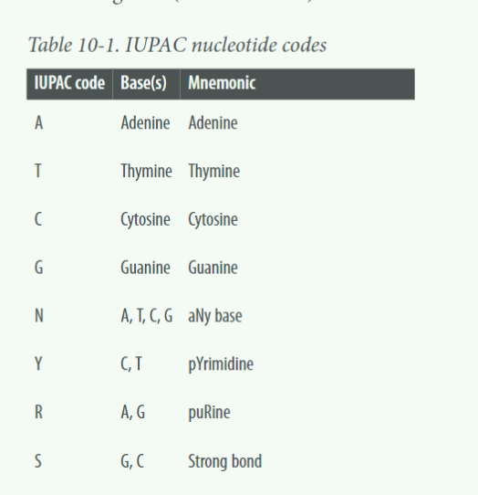</p>
<p>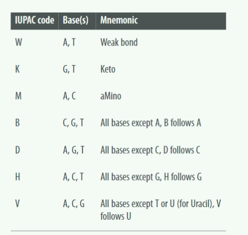</p>
<h2 id="10-4-Base-Qualities">10.4 Base Qualities</h2>
<p>quality 编码为 ASCII 字符。 ASCII 码用0-127来表示，但是并不是所有的 ASCII 字符都是可以打印的字符。quality score 只使用可打印的ASCII 字符，从33到126.</p>
<p>所有的编程语言都有转化字符和它的ASCII码的函数。比如python，就存在函数 ord() 和 chr() 。我们试一下</p>
<figure class="highlight python"><table><tr><td class="gutter"><pre><span class="line">1</span><br><span class="line">2</span><br><span class="line">3</span><br><span class="line">4</span><br></pre></td><td class="code"><pre><span class="line"><span class="meta">&gt;&gt;&gt; </span>qual = <span class="string">&quot;JJJJJJJJJJJJGJJJJJIIJJJJJIGJJJJJIJJJJJJJIJIJJJJHHHHHFFFDFCCC&quot;</span></span><br><span class="line"><span class="meta">&gt;&gt;&gt; </span>[<span class="built_in">ord</span>(b) <span class="keyword">for</span> b <span class="keyword">in</span> qual]</span><br><span class="line">[<span class="number">74</span>, <span class="number">74</span>, <span class="number">74</span>, <span class="number">74</span>, <span class="number">74</span>, <span class="number">74</span>, <span class="number">74</span>, <span class="number">74</span>, <span class="number">74</span>, <span class="number">74</span>, <span class="number">74</span>, <span class="number">74</span>, <span class="number">71</span>, <span class="number">74</span>, <span class="number">74</span>, <span class="number">74</span>, <span class="number">74</span>, <span class="number">74</span>, <span class="number">73</span>, <span class="number">73</span>, <span class="number">74</span>, <span class="number">74</span>, <span class="number">74</span>, <span class="number">74</span>, <span class="number">74</span>, <span class="number">73</span>, <span class="number">71</span>, <span class="number">74</span>, <span class="number">74</span>, <span class="number">74</span>, <span class="number">74</span>, <span class="number">74</span>, <span class="number">73</span>, <span class="number">74</span>, <span class="number">74</span>, <span class="number">74</span>, <span class="number">74</span>, <span class="number">74</span>, <span class="number">74</span>, <span class="number">74</span>, <span class="number">73</span>, <span class="number">74</span>, <span class="number">73</span>, <span class="number">74</span>, <span class="number">74</span>, <span class="number">74</span>, <span class="number">74</span>, <span class="number">72</span>, <span class="number">72</span>, <span class="number">72</span>, <span class="number">72</span>, <span class="number">72</span>, <span class="number">70</span>, <span class="number">70</span>, <span class="number">70</span>, <span class="number">68</span>, <span class="number">70</span>, <span class="number">67</span>, <span class="number">67</span>, <span class="number">67</span>]</span><br><span class="line"></span><br></pre></td></tr></table></figure>
<p>很不幸的是，如果相把表示quality 的字符重新转化为有含义的 quality scores ，这是非常困难的。因为这里存在三种不同的quality schemes: sanger, solexa, illumina 。见下图，但是现在好像都统一成了 sanger scheme。</p>
<p>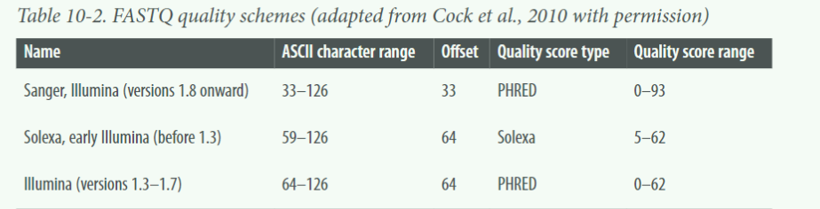</p>
<p>这里只看 sanger scheme，首先我们需要从质量的字符对应的ASCII码 减去一个 offset (33)，得到了一个 PHRED quality score。</p>
<figure class="highlight python"><table><tr><td class="gutter"><pre><span class="line">1</span><br><span class="line">2</span><br><span class="line">3</span><br><span class="line">4</span><br></pre></td><td class="code"><pre><span class="line"><span class="meta">&gt;&gt;&gt; </span>phred = [<span class="built_in">ord</span>(b)-<span class="number">33</span> <span class="keyword">for</span> b <span class="keyword">in</span> qual]</span><br><span class="line"><span class="meta">&gt;&gt;&gt; </span>phred</span><br><span class="line">[<span class="number">41</span>, <span class="number">41</span>, <span class="number">41</span>, <span class="number">41</span>, <span class="number">41</span>, <span class="number">41</span>, <span class="number">41</span>, <span class="number">41</span>, <span class="number">41</span>, <span class="number">41</span>, <span class="number">41</span>, <span class="number">41</span>, <span class="number">38</span>, <span class="number">41</span>, <span class="number">41</span>, <span class="number">41</span>, <span class="number">41</span>, <span class="number">41</span>, <span class="number">40</span>, <span class="number">40</span>, <span class="number">41</span>, <span class="number">41</span>, <span class="number">41</span>, <span class="number">41</span>, <span class="number">41</span>, <span class="number">40</span>, <span class="number">38</span>, <span class="number">41</span>, <span class="number">41</span>, <span class="number">41</span>, <span class="number">41</span>, <span class="number">41</span>, <span class="number">40</span>, <span class="number">41</span>, <span class="number">41</span>, <span class="number">41</span>, <span class="number">41</span>, <span class="number">41</span>, <span class="number">41</span>, <span class="number">41</span>, <span class="number">40</span>, <span class="number">41</span>, <span class="number">40</span>, <span class="number">41</span>, <span class="number">41</span>, <span class="number">41</span>, <span class="number">41</span>, <span class="number">39</span>, <span class="number">39</span>, <span class="number">39</span>, <span class="number">39</span>, <span class="number">39</span>, <span class="number">37</span>, <span class="number">37</span>, <span class="number">37</span>, <span class="number">35</span>, <span class="number">37</span>, <span class="number">34</span>, <span class="number">34</span>, <span class="number">34</span>]</span><br><span class="line"></span><br></pre></td></tr></table></figure>
<p>之后我们可以根据下面这个式子，见quality score 转化为这个碱基 call 的估计准确性</p>
<p>（疑问：如果是这个公式，Q越大，P越小。如果 P代表准确性，那么就是说quality score 数值越小，准确性越高。但好像从后面的表述看，不是这样，quality score 数值是越大越好）</p>
<p><a target="_blank" rel="noopener" href="https://www.jianshu.com/p/1726696e54e5">https://www.jianshu.com/p/1726696e54e5</a></p>
<p>（解答：根据上面的内容，这个P值指<strong>检测错误的概率</strong>，所以 <strong>quality score 越大越好</strong>）</p>
<p>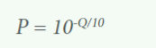</p>
<p>根据这个公式计算出碱基call的估计准确性（这个结果和pdf不一样）</p>
<figure class="highlight python"><table><tr><td class="gutter"><pre><span class="line">1</span><br><span class="line">2</span><br><span class="line">3</span><br></pre></td><td class="code"><pre><span class="line"><span class="meta">&gt;&gt;&gt; </span>[<span class="number">10</span>**(-q/<span class="number">10</span>) <span class="keyword">for</span> q <span class="keyword">in</span> phred]</span><br><span class="line">[<span class="number">7.943282347242822e-05</span>, <span class="number">7.943282347242822e-05</span>, <span class="number">7.943282347242822e-05</span>, <span class="number">7.943282347242822e-05</span>, <span class="number">7.943282347242822e-05</span>, <span class="number">7.943282347242822e-05</span>, <span class="number">7.943282347242822e-05</span>, <span class="number">7.943282347242822e-05</span>, <span class="number">7.943282347242822e-05</span>, <span class="number">7.943282347242822e-05</span>, <span class="number">7.943282347242822e-05</span>, <span class="number">7.943282347242822e-05</span>, <span class="number">0.00015848931924611142</span>, <span class="number">7.943282347242822e-05</span>, <span class="number">7.943282347242822e-05</span>, <span class="number">7.943282347242822e-05</span>, <span class="number">7.943282347242822e-05</span>, <span class="number">7.943282347242822e-05</span>, <span class="number">0.0001</span>, <span class="number">0.0001</span>, <span class="number">7.943282347242822e-05</span>, <span class="number">7.943282347242822e-05</span>, <span class="number">7.943282347242822e-05</span>, <span class="number">7.943282347242822e-05</span>, <span class="number">7.943282347242822e-05</span>, <span class="number">0.0001</span>, <span class="number">0.00015848931924611142</span>, <span class="number">7.943282347242822e-05</span>, <span class="number">7.943282347242822e-05</span>, <span class="number">7.943282347242822e-05</span>, <span class="number">7.943282347242822e-05</span>, <span class="number">7.943282347242822e-05</span>, <span class="number">0.0001</span>, <span class="number">7.943282347242822e-05</span>, <span class="number">7.943282347242822e-05</span>, <span class="number">7.943282347242822e-05</span>, <span class="number">7.943282347242822e-05</span>, <span class="number">7.943282347242822e-05</span>, <span class="number">7.943282347242822e-05</span>, <span class="number">7.943282347242822e-05</span>, <span class="number">0.0001</span>, <span class="number">7.943282347242822e-05</span>, <span class="number">0.0001</span>, <span class="number">7.943282347242822e-05</span>, <span class="number">7.943282347242822e-05</span>, <span class="number">7.943282347242822e-05</span>, <span class="number">7.943282347242822e-05</span>, <span class="number">0.00012589254117941674</span>, <span class="number">0.00012589254117941674</span>, <span class="number">0.00012589254117941674</span>, <span class="number">0.00012589254117941674</span>, <span class="number">0.00012589254117941674</span>, <span class="number">0.00019952623149688788</span>, <span class="number">0.00019952623149688788</span>, <span class="number">0.00019952623149688788</span>, <span class="number">0.00031622776601683794</span>, <span class="number">0.00019952623149688788</span>, <span class="number">0.00039810717055349735</span>, <span class="number">0.00039810717055349735</span>, <span class="number">0.00039810717055349735</span>]</span><br><span class="line"></span><br></pre></td></tr></table></figure>
<h2 id="10-5-Example-Inspecting-and-Trimming-Low-Quality-Bases">10.5 Example: Inspecting and Trimming Low-Quality Bases</h2>
<p>如果你想把所有reads 的quality score 可视化，你可以用 java 软件 FastQC。如果你想用R统计，你可以使用一个 Bioconducter 包 qrqc  。这里用qrqc包举例</p>
<p>之后，我们按照两个软件包来删掉低质量的碱基：sickle 和 seqtk 。</p>
<p>sickle 软件过滤低质量位点的命令为（用conda安装后运行说没找到程序）</p>
<figure class="highlight shell"><table><tr><td class="gutter"><pre><span class="line">1</span><br></pre></td><td class="code"><pre><span class="line">sickle se -f untreated1_chr4.fq -t sanger -o untreated1_chr4_sickle.fq</span><br></pre></td></tr></table></figure>
<p>seqtk 的相应命令为（conda安装运行成功）</p>
<figure class="highlight shell"><table><tr><td class="gutter"><pre><span class="line">1</span><br></pre></td><td class="code"><pre><span class="line">seqtk trimfq untreated1_chr4.fq &gt; untreated1_chr4_trimfq.fq</span><br></pre></td></tr></table></figure>
<p>查看行数，发现没有变化。那我猜，这个命令是把每个read中的低质量碱基剔除了，比如说原来是200bp，现在只有160bp。</p>
<figure class="highlight shell"><table><tr><td class="gutter"><pre><span class="line">1</span><br><span class="line">2</span><br><span class="line">3</span><br><span class="line">4</span><br></pre></td><td class="code"><pre><span class="line"><span class="meta">$</span><span class="bash"> wc -l untreated1_chr4.fq</span></span><br><span class="line">817420 untreated1_chr4.fq</span><br><span class="line"><span class="meta">$</span><span class="bash"> wc -l untreated1_chr4_trimfq.fq</span></span><br><span class="line">817420 untreated1_chr4_trimfq.fq</span><br></pre></td></tr></table></figure>
<p>使用 qrqc 进行 quality score 的可视化（由于sickle没装好，剔除了它的文件）</p>
<figure class="highlight r"><table><tr><td class="gutter"><pre><span class="line">1</span><br><span class="line">2</span><br><span class="line">3</span><br><span class="line">4</span><br><span class="line">5</span><br><span class="line">6</span><br><span class="line">7</span><br><span class="line">8</span><br><span class="line">9</span><br><span class="line">10</span><br><span class="line">11</span><br><span class="line">12</span><br><span class="line">13</span><br><span class="line">14</span><br><span class="line">15</span><br><span class="line">16</span><br><span class="line">17</span><br><span class="line">18</span><br><span class="line">19</span><br><span class="line">20</span><br><span class="line">21</span><br><span class="line">22</span><br><span class="line">23</span><br><span class="line">24</span><br><span class="line">25</span><br><span class="line">26</span><br><span class="line">27</span><br><span class="line">28</span><br></pre></td><td class="code"><pre><span class="line">library(qrqc)</span><br><span class="line">fqfiles &lt;- <span class="built_in">c</span>(none=<span class="string">&quot;untreated1_chr4.fq&quot;</span>, trimfq=<span class="string">&quot;untreated1_chr4_trimfq.fq&quot;</span>)</span><br><span class="line"><span class="comment"># Load each file in, using qrqc&#x27;s readSeqFile</span></span><br><span class="line"><span class="comment"># We only need qualities, so we turn off some of</span></span><br><span class="line"><span class="comment"># readSeqFile&#x27;s other features.</span></span><br><span class="line">seq_info &lt;- lapply(fqfiles, <span class="keyword">function</span>(file) &#123;readSeqFile(file, hash=<span class="literal">FALSE</span>, kmer=<span class="literal">FALSE</span>)&#125;)</span><br><span class="line"><span class="comment"># Extract the qualities as dataframe, and append</span></span><br><span class="line"><span class="comment"># a column of which trimmer (or none) was used. This</span></span><br><span class="line"><span class="comment"># is used in later plots.</span></span><br><span class="line">quals &lt;- mapply(<span class="keyword">function</span>(sfq, name) &#123;</span><br><span class="line">                qs &lt;- getQual(sfq)</span><br><span class="line">                qs$trimmer &lt;- name                </span><br><span class="line">                qs</span><br><span class="line">                &#125;, seq_info, <span class="built_in">names</span>(fqfiles), SIMPLIFY=<span class="literal">FALSE</span>)</span><br><span class="line"><span class="comment"># Combine separate dataframes in a list into single dataframe</span></span><br><span class="line">d &lt;- do.call(rbind, quals)</span><br><span class="line"></span><br><span class="line"><span class="comment"># Visualize qualities</span></span><br><span class="line">library(ggplot2)</span><br><span class="line">p1 &lt;- ggplot(d) + geom_line(aes(x=position, y=mean, linetype=trimmer))</span><br><span class="line">p1 &lt;- p1 + ylab(<span class="string">&quot;mean quality (sanger)&quot;</span>) + theme_bw()</span><br><span class="line">ggsave(<span class="string">&quot;mean_quality.png&quot;</span>,plot=p1)</span><br><span class="line"><span class="comment"># Use qrqc&#x27;s qualPlot with list produces panel plots</span></span><br><span class="line"><span class="comment"># Only shows 10% to 90% quantiles and lowess curve</span></span><br><span class="line">p2 &lt;- qualPlot(seq_info, quartile.color=<span class="literal">NULL</span>, mean.color=<span class="literal">NULL</span>) + theme_bw()</span><br><span class="line">p2 &lt;- p2 + scale_y_continuous(<span class="string">&quot;quality (sanger)&quot;</span>)</span><br><span class="line">ggsave(<span class="string">&quot;quality.png&quot;</span>,plot=p2)</span><br><span class="line"></span><br></pre></td></tr></table></figure>
<p>每个位置的平均quality score</p>
<p>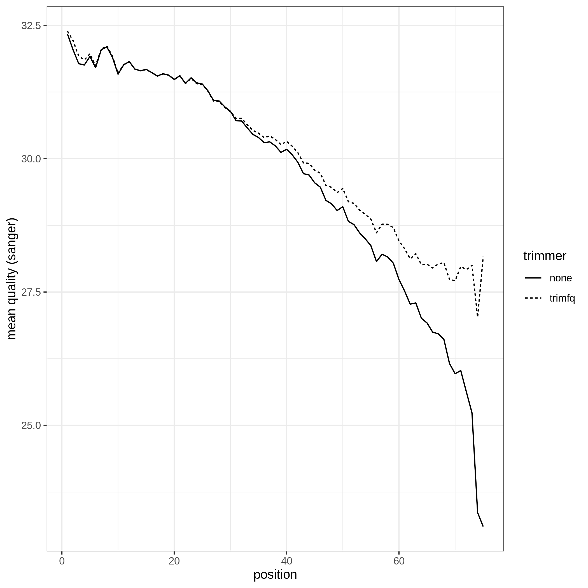</p>
<p>每个位点的quality score 的分布（上下限为90%和10%分位点）。从这里还可以看到，一条read上的位点的测序质量随着长度的延申而下降。</p>
<p>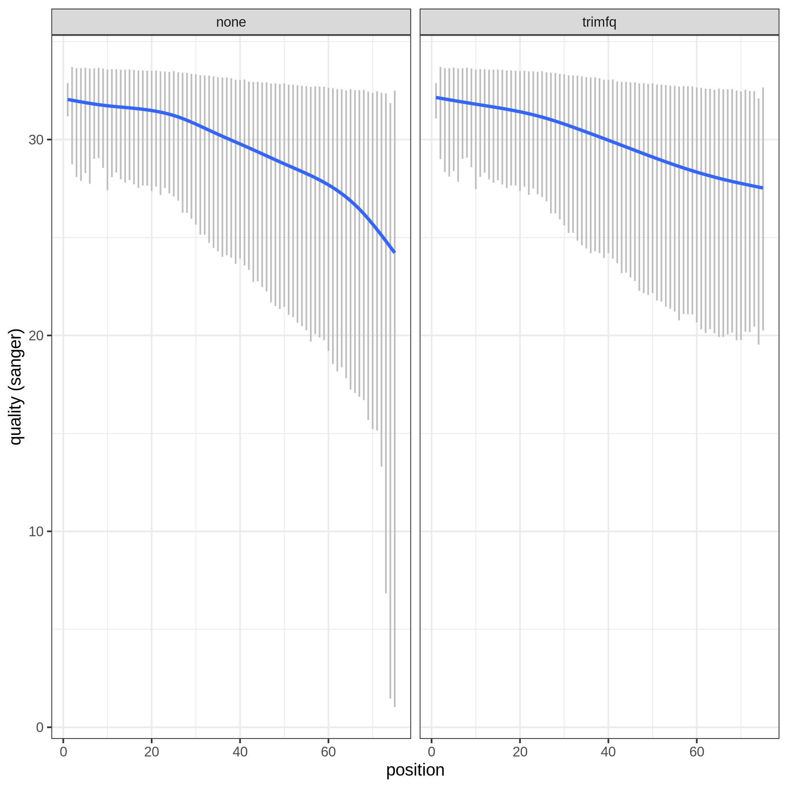</p>
<p>清楚低质量位点并不难，一行命令解决。但是<strong>更重要的步骤是对数据清洗前后使用可视化进行对比</strong>，来检查这些软件如何作用于我们的数据，而不是单纯地相应软件。（<strong>黄金守则：不要相信你的工具</strong>）。</p>
<p>一个谨慎的生信操作流程应该是这样的：运行一个程序，比对原始数据，运行一个程序，比对原始数据，循环往复……</p>
<h2 id="10-6-A-FASTA-FASTQ-Parsing-Example-Counting-Nucleotides">10.6 A FASTA/FASTQ Parsing Example: Counting Nucleotides</h2>
<p>你可以自己写一个处理 FASTQ/FASTQ 的流程，这是一个很好的编程训练。但是当处理实际数据时，最好还是用现有的可靠的库。<strong>great programmers know when to reuse code</strong>。有很多开源的包，它们也调试到了尽可能的高效。</p>
<p>这里我们会用 Heng Li 写的 readfq 软件，因为它可以同时处理 FASTA 和 FASTQ 文件。其他可选的软件由 Biopython 和 BioPerl。</p>
<p>我们会用到 readfq 的 python 版本 <a target="_blank" rel="noopener" href="http://reafq.py">reafq.py</a> 。可以当成一个库文件，使用 <code>from readfq import readfq</code>；或者更方便的是，直接复制到你自己的脚本里（这里举例用第一种，我用第二种）。</p>
<p>（有一个问题是，这个python脚本是用 python2 写的，需要修改，就是print 加上括号）</p>
<p>这个 readfq() 函数用起来很简单，需要一个文件对象（已经用open()打开的），然后数生成 FASTQ/FASTQ 的 entris 直至文件末尾。 每个 FASTQ/FASTA entry 会返回成一个元组（包括entry’s description, sequence, quality）。如果 readfq 是读取一个 FASTA 文件，那么 quality line 会是 None。</p>
<p>如果你仔细看 readfq() 的代码，你会发现存在 yield 部分。这说明 readfq() 是一个 generator function 。</p>
<p>让我们写一个简单的程序，来计算一个文件的碱基数目。</p>
<figure class="highlight python"><table><tr><td class="gutter"><pre><span class="line">1</span><br><span class="line">2</span><br><span class="line">3</span><br><span class="line">4</span><br><span class="line">5</span><br><span class="line">6</span><br><span class="line">7</span><br><span class="line">8</span><br><span class="line">9</span><br><span class="line">10</span><br><span class="line">11</span><br><span class="line">12</span><br><span class="line">13</span><br><span class="line">14</span><br><span class="line">15</span><br><span class="line">16</span><br><span class="line">17</span><br><span class="line">18</span><br><span class="line">19</span><br><span class="line">20</span><br><span class="line">21</span><br><span class="line">22</span><br></pre></td><td class="code"><pre><span class="line"><span class="comment">#!/usr/bin/env python</span></span><br><span class="line"><span class="comment"># nuccount.py -- tally nucleotides in a file</span></span><br><span class="line"><span class="keyword">import</span> sys</span><br><span class="line"><span class="keyword">from</span> collections <span class="keyword">import</span> Counter</span><br><span class="line"><span class="comment">#Counter函数是字典的子类，可以计数可哈希对象。</span></span><br><span class="line"><span class="comment">#它是一个集合，元素像字典键(key)一样存储，它们的计数存储为值。计数可以是任何整数值，包括0和负数。</span></span><br><span class="line"><span class="keyword">from</span> readfq <span class="keyword">import</span> readfq</span><br><span class="line"></span><br><span class="line"><span class="comment">#IUPAC固定的碱基编码</span></span><br><span class="line">IUPAC_BASES = <span class="string">&quot;ACGTRYSWKMBDHVN-.&quot;</span></span><br><span class="line"></span><br><span class="line"><span class="comment"># intialize counter</span></span><br><span class="line">counts = Counter()</span><br><span class="line"></span><br><span class="line"><span class="comment">#sys.stdin 从标准输入中获取数据，这样可以实用linux的pipeline了</span></span><br><span class="line"><span class="keyword">for</span> name, seq, qual <span class="keyword">in</span> readfq(sys.stdin):</span><br><span class="line">    <span class="comment"># for each sequence entry, add all its bases to the counter</span></span><br><span class="line">    counts.update(seq.upper())</span><br><span class="line"></span><br><span class="line"><span class="comment"># print the results</span></span><br><span class="line"><span class="keyword">for</span> base <span class="keyword">in</span> IUPAC_BASES:</span><br><span class="line">    <span class="built_in">print</span>(base + <span class="string">&quot;\t&quot;</span> + <span class="built_in">str</span>(counts[base]))</span><br></pre></td></tr></table></figure>
<p>运行命令</p>
<figure class="highlight shell"><table><tr><td class="gutter"><pre><span class="line">1</span><br><span class="line">2</span><br><span class="line">3</span><br><span class="line">4</span><br><span class="line">5</span><br><span class="line">6</span><br><span class="line">7</span><br><span class="line">8</span><br><span class="line">9</span><br><span class="line">10</span><br><span class="line">11</span><br><span class="line">12</span><br><span class="line">13</span><br><span class="line">14</span><br><span class="line">15</span><br><span class="line">16</span><br><span class="line">17</span><br><span class="line">18</span><br><span class="line">19</span><br></pre></td><td class="code"><pre><span class="line"><span class="meta">$</span><span class="bash"> cat contam.fastq | python nuccount.py</span></span><br><span class="line">A       103</span><br><span class="line">C       110</span><br><span class="line">G       94</span><br><span class="line">T       109</span><br><span class="line">R       0</span><br><span class="line">Y       0</span><br><span class="line">S       0</span><br><span class="line">W       0</span><br><span class="line">K       0</span><br><span class="line">M       0</span><br><span class="line">B       0</span><br><span class="line">D       0</span><br><span class="line">H       0</span><br><span class="line">V       0</span><br><span class="line">N       0</span><br><span class="line">-       0</span><br><span class="line">.       0</span><br><span class="line"></span><br></pre></td></tr></table></figure>
<p>最后，作者又赞美了 reuse code</p>
<blockquote>
<p>Reusing software isn’t cheating—it’s how the experts program</p>
</blockquote>
<h3 id="generator-生成器-python">generator 生成器 - python</h3>
<p><a target="_blank" rel="noopener" href="https://www.liaoxuefeng.com/wiki/897692888725344/923029685138624">https://www.liaoxuefeng.com/wiki/897692888725344/923029685138624</a></p>
<p>主要应用于大数据：直接读取会占用过多内存，使用 generator 和循环，每次只读取一个元素。</p>
<p>举例，斐波那契数列写成 generator function。函数中用 yield 代替print 即可。每次调用函数的时候，遇到 yield 语句就会返回，再次执行时从上次返回的 yield 语句处继续执行（这里是 a, b = b, a + b）</p>
<figure class="highlight python"><table><tr><td class="gutter"><pre><span class="line">1</span><br><span class="line">2</span><br><span class="line">3</span><br><span class="line">4</span><br><span class="line">5</span><br><span class="line">6</span><br><span class="line">7</span><br><span class="line">8</span><br><span class="line">9</span><br></pre></td><td class="code"><pre><span class="line"><span class="function"><span class="keyword">def</span> <span class="title">fib</span>(<span class="params"><span class="built_in">max</span></span>):</span></span><br><span class="line">    n, a, b = <span class="number">0</span>, <span class="number">0</span>, <span class="number">1</span></span><br><span class="line">    <span class="keyword">while</span> n &lt; <span class="built_in">max</span>:</span><br><span class="line">        <span class="keyword">yield</span> b</span><br><span class="line">        a, b = b, a + b</span><br><span class="line">        n = n + <span class="number">1</span></span><br><span class="line">        </span><br><span class="line"><span class="keyword">for</span> n <span class="keyword">in</span> fib(<span class="number">6</span>):</span><br><span class="line">	<span class="built_in">print</span>(n)</span><br></pre></td></tr></table></figure>
<h3 id="多个元素同时赋值-python">多个元素同时赋值 - python</h3>
<p>最近越来越多地看到这种多个元素同时赋值的代码，比如:</p>
<figure class="highlight python"><table><tr><td class="gutter"><pre><span class="line">1</span><br><span class="line">2</span><br><span class="line">3</span><br><span class="line">4</span><br><span class="line">5</span><br></pre></td><td class="code"><pre><span class="line"><span class="meta">&gt;&gt;&gt; </span>a, b = <span class="number">1</span>,<span class="number">2</span></span><br><span class="line"><span class="meta">&gt;&gt;&gt; </span>a</span><br><span class="line"><span class="number">1</span></span><br><span class="line"><span class="meta">&gt;&gt;&gt; </span>b</span><br><span class="line"><span class="number">2</span></span><br></pre></td></tr></table></figure>
<p>确实是可以运行，但是上面这种我觉得没有必要，影响了可读性。</p>
<p>下面这种比较实用</p>
<figure class="highlight python"><table><tr><td class="gutter"><pre><span class="line">1</span><br><span class="line">2</span><br><span class="line">3</span><br><span class="line">4</span><br><span class="line">5</span><br><span class="line">6</span><br><span class="line">7</span><br><span class="line">8</span><br><span class="line">9</span><br><span class="line">10</span><br><span class="line">11</span><br><span class="line">12</span><br><span class="line">13</span><br><span class="line">14</span><br><span class="line">15</span><br><span class="line">16</span><br></pre></td><td class="code"><pre><span class="line"><span class="meta">&gt;&gt;&gt; </span>a=[[<span class="number">1</span>,<span class="number">1</span>,<span class="number">1</span>],[<span class="number">2</span>,<span class="number">2</span>,<span class="number">2</span>],[<span class="number">3</span>,<span class="number">3</span>,<span class="number">3</span>]]</span><br><span class="line"><span class="meta">&gt;&gt;&gt; </span><span class="keyword">for</span> i,j,k <span class="keyword">in</span> a:</span><br><span class="line"><span class="meta">... </span>    <span class="built_in">print</span>(i,j,k)</span><br><span class="line">...</span><br><span class="line"><span class="number">1</span> <span class="number">1</span> <span class="number">1</span></span><br><span class="line"><span class="number">2</span> <span class="number">2</span> <span class="number">2</span></span><br><span class="line"><span class="number">3</span> <span class="number">3</span> <span class="number">3</span></span><br><span class="line"></span><br><span class="line"><span class="meta">&gt;&gt;&gt; </span>a=[(<span class="number">1</span>,<span class="number">1</span>,<span class="number">1</span>),(<span class="number">2</span>,<span class="number">2</span>,<span class="number">2</span>),(<span class="number">3</span>,<span class="number">3</span>,<span class="number">3</span>)]</span><br><span class="line"><span class="meta">&gt;&gt;&gt; </span><span class="keyword">for</span> i,j,k <span class="keyword">in</span> a:</span><br><span class="line"><span class="meta">... </span>    <span class="built_in">print</span>(i,j,k)</span><br><span class="line">...</span><br><span class="line"><span class="number">1</span> <span class="number">1</span> <span class="number">1</span></span><br><span class="line"><span class="number">2</span> <span class="number">2</span> <span class="number">2</span></span><br><span class="line"><span class="number">3</span> <span class="number">3</span> <span class="number">3</span></span><br><span class="line"></span><br></pre></td></tr></table></figure>
<h2 id="10-7-Indexed-FASTA-Files">10.7 Indexed FASTA Files</h2>
<p>有时我们需要提取 FASTA 文件地某些子序列，如果只做一次，可以直接遍历FASTA的所有序列，但是这不是一个有效的方式，尤其是对于大文件。比如果我们想提取在8号染色体（23,407,082 to 123,410,742）的序列，这种方式还会和其他染色体的序列进行比对，而且从硬盘中把整个基因组文件读取进来也是非常低效的。</p>
<p>一个通常的计算策略是 <strong>indexing</strong> the file 。 这里为了举例，只用8号染色体的基因组数据。</p>
<p>这里要先解压FASTA文件。</p>
<figure class="highlight shell"><table><tr><td class="gutter"><pre><span class="line">1</span><br></pre></td><td class="code"><pre><span class="line">gunzip Mus_musculus.GRCm38.75.dna.chromosome.8.fa.gz</span><br></pre></td></tr></table></figure>
<p>然后，使用 samtools 软件 index 这个 FASTA 文件，生成文件 Mus_musculus.GRCm38.75.dna.chromosome.8.fa.fai 。</p>
<figure class="highlight shell"><table><tr><td class="gutter"><pre><span class="line">1</span><br></pre></td><td class="code"><pre><span class="line">samtools faidx Mus_musculus.GRCm38.75.dna.chromosome.8.fa</span><br></pre></td></tr></table></figure>
<p><strong>提取子序列</strong>的代码为如下，其中 <region> 要是chromosome:start-end 格式。（注意染色体是 chr8 还是 8 格式）。之后屏幕上就会打印出需要提取的序列。</p>
<figure class="highlight plain"><table><tr><td class="gutter"><pre><span class="line">1</span><br></pre></td><td class="code"><pre><span class="line">faidx &lt;in.fa&gt; &lt;region&gt;</span><br></pre></td></tr></table></figure>
<p>例如</p>
<figure class="highlight shell"><table><tr><td class="gutter"><pre><span class="line">1</span><br><span class="line">2</span><br><span class="line">3</span><br><span class="line">4</span><br><span class="line">5</span><br></pre></td><td class="code"><pre><span class="line"><span class="meta">$</span><span class="bash"> samtools faidx Mus_musculus.GRCm38.75.dna.chromosome.8.fa 8:123407082-123410744</span></span><br><span class="line"><span class="meta">&gt;</span><span class="bash">8:123407082-123410744</span></span><br><span class="line">GAGAAAAGCTCCCTTCTTCTCCAGAGTCCCGTCTACCCTGGCTTGGCGAGGGAAAGGAAC</span><br><span class="line">CAGACATATATCAGAGGCAAGTAACCAAGAAGTCTGGAGGTGTTGAGTTTAGGCATGTCT</span><br><span class="line">[...]</span><br></pre></td></tr></table></figure>
<p>samtools 支持同时提取多个序列。</p>
<figure class="highlight shell"><table><tr><td class="gutter"><pre><span class="line">1</span><br><span class="line">2</span><br><span class="line">3</span><br><span class="line">4</span><br><span class="line">5</span><br><span class="line">6</span><br><span class="line">7</span><br><span class="line">8</span><br><span class="line">9</span><br><span class="line">10</span><br></pre></td><td class="code"><pre><span class="line"><span class="meta">$</span><span class="bash"> samtools faidx Mus_musculus.GRCm38.75.dna.chromosome.8.fa \</span></span><br><span class="line"><span class="bash">8:123407082-123410744 8:123518835-123536649</span></span><br><span class="line"><span class="meta">&gt;</span><span class="bash">8:123407082-123410744</span></span><br><span class="line">GAGAAAAGCTCCCTTCTTCTCCAGAGTCCCGTCTACCCTGGCTTGGCGAGGGAAAGGAAC</span><br><span class="line">CAGACATATATCAGAGGCAAGTAACCAAGAAGTCTGGAGGTGTTGAGTTTAGGCATGTCT</span><br><span class="line">[...]</span><br><span class="line"><span class="meta">&gt;</span><span class="bash">8:123518835-123536649</span></span><br><span class="line">TCTCGCGAGGATTTGAGAACCAGCACGGGATCTAGTCGGAGTTGCCAGGAGACCGCGCAG</span><br><span class="line">CCTCCTCTGACCAGCGCCCATCCCGGATTAGTGGAAGTGCTGGACTGCTGGCACCATGGT</span><br><span class="line">[...]</span><br></pre></td></tr></table></figure>
<h3 id="为什么index使得检索更快">为什么index使得检索更快</h3>
<p>首先，之前那么做速度慢，主要是因为从硬盘中读写数据非常耗时。</p>
<p>通过 index ，我们记录下来了每个序列在文件开始的地方。这样检索的时候，就不用读取整个文件，而是直接跳到我们想要的序列的位置。</p>
<p>说白了，这就是像是做了一本书的目录一样，想找东西，看目录，然后跳到指定的页码。</p>
<h1>11 Working with Alignment Data</h1>
<p>the Sequence Alignment Mapping (SAM) 格式 （二进制格式为BAM）。</p>
<blockquote>
<p>The  SAM and BAM formats are the standard formats for storing sequencing reads mapped to a reference.</p>
</blockquote>
<h2 id="11-1-Getting-to-Know-Alignment-Formats-SAM-and-BAM">11.1 Getting to Know Alignment Formats: SAM and BAM</h2>
<h3 id="11-1-1-The-SAM-Header">11.1.1 The SAM Header</h3>
<p>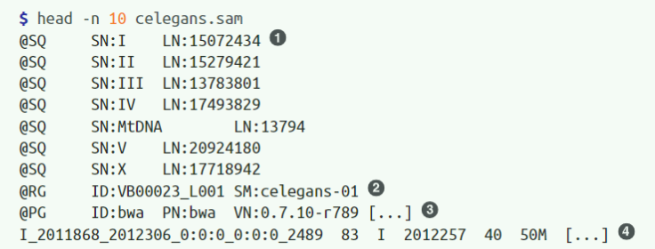</p>
<p>表头以 @ 符号开始，后面跟着两个字符。再后面就是tab分隔的 key-value pairs （KEY:VALUE）。</p>
<ul>
<li>
<p>@SQ 行存储着参考基因组序列的信息。必需的键值对为 SN， 存储着 sequence name （比如 染色体 1）；还有 LN，存储序列长度。参考基因组的所有分开的序列都会占据一行。</p>
</li>
<li>
<p>@RG 包含重要的 read group 和 sample metadata。(没看懂)</p>
<blockquote>
<p>This ID value contains information about the origin of a set of reads.<br>
Some software relies on read groups toindicate  a  technical  groups<br>
of  reads,  to  account  for  batch  effects  (undesirabletechnical artifacts  in  data).  Consequently, it’s  beneficial  to  create  read  groupsrelated to the specific sequencing run  (e.g., ID could be related to the name of thesequencing run and lane)</p>
</blockquote>
<p>样本信息存放在 SM 字段中（(e.g.,  individual,  treatment  group,  replicate,  etc.）</p>
<p>可能地话，还会有检测平台 PL (platform) ，比如 ILLUMINA, PACBIO,。</p>
</li>
<li>
<p>@PG 包含创建和处理 SAM/BAM 文件使用的软件。 软件版本（VN），命令行（CL）。</p>
</li>
</ul>
<p>但是标准的处理 SAM/BAM 文件是通过 SAMtools 命令行。</p>
<p>查看 headline 使用以下命令</p>
<figure class="highlight shell"><table><tr><td class="gutter"><pre><span class="line">1</span><br><span class="line">2</span><br><span class="line">3</span><br><span class="line">4</span><br><span class="line">5</span><br><span class="line">6</span><br><span class="line">7</span><br><span class="line">8</span><br><span class="line">9</span><br><span class="line">10</span><br><span class="line">11</span><br></pre></td><td class="code"><pre><span class="line"><span class="meta">$</span><span class="bash"> samtools view -H celegans.sam</span></span><br><span class="line">@SQ     SN:I    LN:15072434</span><br><span class="line">@SQ     SN:II   LN:15279421</span><br><span class="line">@SQ     SN:III  LN:13783801</span><br><span class="line">@SQ     SN:IV   LN:17493829</span><br><span class="line">@SQ     SN:MtDNA        LN:13794</span><br><span class="line">@SQ     SN:V    LN:20924180</span><br><span class="line">@SQ     SN:X    LN:17718942</span><br><span class="line">@RG     ID:VB00023_L001 SM:celegans-01</span><br><span class="line">@PG     ID:bwa  PN:bwa  VN:0.7.10-r789  CL:bwa mem -R @RG\tID:VB00023_L001\tSM:celegans-01 Caenorhabditis_elegans.WBcel235.dna.toplevel.fa celegans-1.fq celegans-2.fq</span><br><span class="line"></span><br></pre></td></tr></table></figure>
<p>同样可以用于 BAM 文件</p>
<figure class="highlight shell"><table><tr><td class="gutter"><pre><span class="line">1</span><br><span class="line">2</span><br><span class="line">3</span><br><span class="line">4</span><br><span class="line">5</span><br><span class="line">6</span><br><span class="line">7</span><br><span class="line">8</span><br><span class="line">9</span><br><span class="line">10</span><br><span class="line">11</span><br></pre></td><td class="code"><pre><span class="line"><span class="meta">$</span><span class="bash"> samtools view -H celegans.bam</span></span><br><span class="line">@SQ     SN:I    LN:15072434</span><br><span class="line">@SQ     SN:II   LN:15279421</span><br><span class="line">@SQ     SN:III  LN:13783801</span><br><span class="line">@SQ     SN:IV   LN:17493829</span><br><span class="line">@SQ     SN:MtDNA        LN:13794</span><br><span class="line">@SQ     SN:V    LN:20924180</span><br><span class="line">@SQ     SN:X    LN:17718942</span><br><span class="line">@RG     ID:VB00023_L001 SM:celegans-01</span><br><span class="line">@PG     ID:bwa  PN:bwa  VN:0.7.10-r789  CL:bwa mem -R @RG\tID:VB00023_L001\tSM:celegans-01 Caenorhabditis_elegans.WBcel235.dna.toplevel.fa celegans-1.fq celegans-2.fq</span><br><span class="line"></span><br></pre></td></tr></table></figure>
<p>如果不加 -H 选项，默认返回没有标题的数据部分</p>
<figure class="highlight shell"><table><tr><td class="gutter"><pre><span class="line">1</span><br><span class="line">2</span><br><span class="line">3</span><br></pre></td><td class="code"><pre><span class="line"><span class="meta">$</span><span class="bash"> samtools view celegans.sam | head -n 1</span></span><br><span class="line">I_2011868_2012306_0:0:0_0:0:0_2489      83      I       2012257 40      50M     =       2011868 -439    CAAAAAATTTTGAAAAAAAAAATTGAATAAAAATTCACGGATTTCTGGCT       22222222222222222222222222222222222222222222222222      NM:i:0  MD:Z:50 AS:i:50 XS:i:50  RG:Z:VB00023_L001       XA:Z:I,-2021713,50M,0;</span><br><span class="line"></span><br></pre></td></tr></table></figure>
<h4 id="SAM-更多资料">SAM 更多资料</h4>
<p><a target="_blank" rel="noopener" href="http://samtools.github.io/hts-specs/">http://samtools.github.io/hts-specs/</a></p>
<h3 id="11-1-2-The-SAM-Alignment-Section">11.1.2 The SAM Alignment Section</h3>
<p>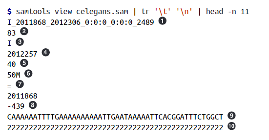</p>
<ol>
<li>
<p>QNAME， the query name (e.g., a sequence read’s name)</p>
</li>
<li>
<p>FLAG, the  bitwise  flag,  which  contains  information  about  the  alignment.  (?)</p>
</li>
<li>
<p>RNAME,  the  reference  name  (比如 “chr1&quot;)</p>
</li>
<li>
<p>POS, 参考序列中第一个与 query sequence 匹配上的碱基位置（1-based indexing）.如果没有比对上，这个数值会是0。</p>
</li>
<li>
<p>MAPQ 是 mapping quality ，衡量 read 确实是起源于它比对上的位置的可能性。这个是由软件估计得到。很多软件会自动过滤掉 mapping quality 很低的 read。</p>
</li>
<li>
<p>CIGAR : 描述 alignment 的特殊格式（matching bases,  insertions/deletions, clipping）</p>
</li>
<li>
<p>RNEXT （reference name, * 表示未知， = 表示和 RNAME 相同） and  PNEXT  (下一行，position，未知是0)</p>
</li>
<li>
<p>TLEN 是 <code>template length for paired-end reads</code></p>
</li>
<li>
<p>SEQ 是原始的 read 序列。</p>
<blockquote>
<p>This sequence will always be in the orienta‐tion  it  aligned  in  (and  this  may  be  the  reverse  complement  of  the  original  readsequence). Thus, if your read aligned to the reverse strand (which is informationkept in the bitwise flag field), this sequence will be the reverse complement.</p>
</blockquote>
</li>
<li>
<p>QUAL 存储原始的  quality</p>
</li>
</ol>
<h3 id="11-1-3-Bitwise-Flags">11.1.3 Bitwise Flags</h3>
<p>通过 <code>samtools flags</code> 查看所有可用的 flags</p>
<figure class="highlight shell"><table><tr><td class="gutter"><pre><span class="line">1</span><br><span class="line">2</span><br><span class="line">3</span><br><span class="line">4</span><br><span class="line">5</span><br><span class="line">6</span><br><span class="line">7</span><br><span class="line">8</span><br><span class="line">9</span><br><span class="line">10</span><br><span class="line">11</span><br><span class="line">12</span><br><span class="line">13</span><br><span class="line">14</span><br><span class="line">15</span><br><span class="line">16</span><br><span class="line">17</span><br><span class="line">18</span><br><span class="line">19</span><br></pre></td><td class="code"><pre><span class="line"><span class="meta">$</span><span class="bash"> samtools flags</span></span><br><span class="line"></span><br><span class="line">About: Convert between textual and numeric flag representation</span><br><span class="line">Usage: samtools flags INT|STR[,...]</span><br><span class="line"></span><br><span class="line">Flags:</span><br><span class="line">        0x1     PAIRED        .. paired-end (or multiple-segment) sequencing technology</span><br><span class="line">        0x2     PROPER_PAIR   .. each segment properly aligned according to the aligner</span><br><span class="line">        0x4     UNMAP         .. segment unmapped</span><br><span class="line">        0x8     MUNMAP        .. next segment in the template unmapped</span><br><span class="line">        0x10    REVERSE       .. SEQ is reverse complemented</span><br><span class="line">        0x20    MREVERSE      .. SEQ of the next segment in the template is reversed</span><br><span class="line">        0x40    READ1         .. the first segment in the template</span><br><span class="line">        0x80    READ2         .. the last segment in the template</span><br><span class="line">        0x100   SECONDARY     .. secondary alignment</span><br><span class="line">        0x200   QCFAIL        .. not passing quality controls</span><br><span class="line">        0x400   DUP           .. PCR or optical duplicate</span><br><span class="line">        0x800   SUPPLEMENTARY .. supplementary alignment</span><br><span class="line"></span><br></pre></td></tr></table></figure>
<p>这里设计到二进制，十进制和十六进制的转化。</p>
<p>比如你遇到了一个 bitflag 是147 （转化位十六进制是 93），第一步先转化为二进制，是 1001 0011 ，其中是1的位数是第一、第二、第五和第八位（位数是从右往左数）。参照上面的 flags 的顺序，分别对应着 0x1 0x2 0x10 和 0x80 。</p>
<p>你可以直接通过 samtools 完成上述的对应过程，既可以用十进制，也可以用十六进制</p>
<figure class="highlight shell"><table><tr><td class="gutter"><pre><span class="line">1</span><br><span class="line">2</span><br><span class="line">3</span><br><span class="line">4</span><br></pre></td><td class="code"><pre><span class="line"><span class="meta">$</span><span class="bash"> samtools flags 147</span></span><br><span class="line">0x93    147     PAIRED,PROPER_PAIR,REVERSE,READ2</span><br><span class="line"><span class="meta">$</span><span class="bash"> samtools flags 0x93</span></span><br><span class="line">0x93    147     PAIRED,PROPER_PAIR,REVERSE,READ2</span><br></pre></td></tr></table></figure>
<p>也可以反过来</p>
<figure class="highlight shell"><table><tr><td class="gutter"><pre><span class="line">1</span><br><span class="line">2</span><br><span class="line">3</span><br></pre></td><td class="code"><pre><span class="line"><span class="meta">$</span><span class="bash"> samtools flags paired,read1,qcfail</span></span><br><span class="line">0x241   577     PAIRED,READ1,QCFAIL</span><br><span class="line"></span><br></pre></td></tr></table></figure>
<h3 id="11-1-4-CIGAR-Strings">11.1.4 CIGAR Strings</h3>
<p>类似于 bitwise flags， CIGAR 字段也有一种特殊的方式来编码信息。CIGAR 存储着关于比对文件中的哪些碱基是Matches/misMatches, insertions, deletions, soft or hard clipped。</p>
<p>soft clipping 是指当只有一部分 query sequence 比对上了参考序列，其他部分无法比对上。这种情况发生在当匹配一个 read 与一个位置时，要么头部要么尾部无法匹配上。hard clipping 类似，但是hard-clipped 区域不会出现 SEQ 字段的序列中。</p>
<p>一个基本的 CIGAR 字段包含合并的整数和字符。比如一个51个碱基的read完全匹配上 了，没有插入和缺失，会有一个 CIGAR 字段包含一个单独的 length/operation pair : <strong>51M</strong>。注意，这里M 表示能配对上，而不是说所有的碱基和参考基因组是一样的。</p>
<p>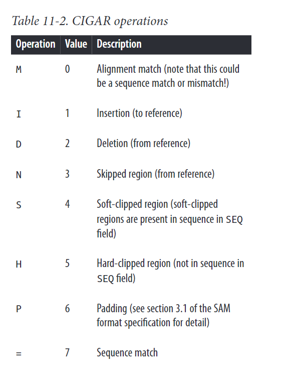</p>
<p></p>
<p>让我们看一个复杂一点的例子：<strong>43S6M1I26M</strong>。首先我们把它分解成 43S, 6M, 1I, 26M ，利用上面的表格，这是说 开始的43个碱基 是 soft-clipped， 之后的6个碱基是 matched， 然后是 1 个插入，最后是26 个碱基 match。</p>
<p>注意，这些数字加起来必需等于 read sequence 的长度。</p>
<h3 id="11-1-5-Mapping-Qualities">11.1.5 Mapping Qualities</h3>
<p>比对后的所有下游操作均基于<strong>可靠</strong>的比对结果（ SNP calling and genotyping, RNA-seq）。Mapping qualities 是衡量比对的可靠性的指标。类似于 base quality ， mapping quality 也是一个log probability ，见下式，其中 P 是<strong>错误比对的概率</strong>。</p>
<p>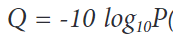</p>
<p>比对质量和另一个概念也是相关的，比对唯一性（mapping uniqueness）。这通常定义为 一条read 的第二好的比对结果比第一好的比对结果有更多地的 mismatches。然而，比对唯一性的概念并不能解释 mismatches 的碱基质量，也就是说一个mismatch 究竟是 base calling error 还是 一个真实的变异。</p>
<p>我们可以通过 mapping qualities 来过滤掉可能是错误的比对，找出哪些区域比对结果很差。</p>
<h2 id="11-2-Command-Line-Tools-for-Working-with-Alignments-in-the-SAM-Format">11.2 Command-Line Tools for Working with Alignments in the SAM Format</h2>
<h3 id="11-2-1-Using-samtools-view-to-Convert-between-SAM-and-BAM">11.2.1 Using samtools view to Convert between SAM and BAM</h3>
<p>samtools 的很多子命令都要求输入文件是 BAM 格式。因此我们经常需要在 SAM 和 BAM 两种格式中切换。 samtools view 可以做到这一点。</p>
<figure class="highlight shell"><table><tr><td class="gutter"><pre><span class="line">1</span><br><span class="line">2</span><br></pre></td><td class="code"><pre><span class="line">samtools view -b celegans.sam &gt; celegans_copy.bam</span><br><span class="line">samtools view celegans.bam &gt; celegans_copy.sam</span><br></pre></td></tr></table></figure>
<p>但是，samtools view 生成的 SAM 文件不会包括 SAM header 。这种格式无法再转化位 BAM 文件。</p>
<figure class="highlight shell"><table><tr><td class="gutter"><pre><span class="line">1</span><br><span class="line">2</span><br><span class="line">3</span><br><span class="line">4</span><br><span class="line">5</span><br></pre></td><td class="code"><pre><span class="line"><span class="meta">$</span><span class="bash"> samtools view -b celegans_copy.sam &gt; celegans_copy.bam</span></span><br><span class="line">[E::sam_parse1] missing SAM header</span><br><span class="line">[W::sam_read1] Parse error at line 1</span><br><span class="line">[main_samview] truncated file.</span><br><span class="line"></span><br></pre></td></tr></table></figure>
<p>我们可以通过 添加 -h 来保留表头。</p>
<figure class="highlight shell"><table><tr><td class="gutter"><pre><span class="line">1</span><br><span class="line">2</span><br></pre></td><td class="code"><pre><span class="line">samtools view -h celegans.bam &gt; celegans_copy.sam</span><br><span class="line">samtools view -b celegans_copy.sam &gt; celegans_copy.bam #now we can convert back</span><br></pre></td></tr></table></figure>
<p>通常来说，我们将 BAM 转化为 SAM，一般仅仅是为了看一下数据。一般情况下，使用 BAM 格式更好，因为更节省空间，符合 samtools 输入文件要求，处理速度也更快。</p>
<h4 id="The-CRAM-Format">The CRAM Format</h4>
<p>samtools 现在支持一个新的，高度压缩的文件格式， CRAM，相比于 BAM 文件能够进一步压缩10%-30%的空间。CRAM 是一种 reference-based 压缩系统，即只有当aligned sequence 和参考基因组序列不同时才会被记录。这大幅度地压缩了文件大小，因为很多的比对序列和参考基因组只有很少的不同。因此对于这种格式而言，<strong>参考序列是必要的，而且不能改变</strong>。由于参考序列对于这种格式特别重要，CRAM 文件还包含了一个参考序列文件的 MD5 校验码。</p>
<h3 id="11-2-2-Samtools-Sort-and-Index">11.2.2 Samtools Sort and Index</h3>
<p>类似于 FASTA 格式， BAM 文件也可以 sort 和 index ，方便查找某个区域的比对的reads。</p>
<p>首先我们可以通过 samtools sort 来进行排序</p>
<figure class="highlight shell"><table><tr><td class="gutter"><pre><span class="line">1</span><br></pre></td><td class="code"><pre><span class="line">samtools sort celegans_unsorted.bam -o celegans_sorted.bam</span><br></pre></td></tr></table></figure>
<p>如果对一个大的文件进行排序计算量会很大，因此 samtools sort 存在选项来让你提高内存和线程数。通常情况下，对于一个很大的 BAM 文件，可能无法完全放进内存中，因此samtools sort 会将文件切分成几个部分，对每个部分进行排序，写入到临时文件中，最后合并所有的临时文件（和我的填充策略一样）。用计算机科学的术语来说，samtools sort 使用了一个 merge sort 。</p>
<p>提高内存，可以减少samtools sort 分割文件的数量，这样速度更快（？）。由于切分文件后，对每个部分进行排序的步骤彼此之间是独立的，因此这一步可以平行处理。我们可以通过 -m 来增加内存( K, M, G)，-@ 来增加线程数。</p>
<figure class="highlight shell"><table><tr><td class="gutter"><pre><span class="line">1</span><br></pre></td><td class="code"><pre><span class="line">samtools sort -m 4G -@ 2 celegans_unsorted.bam -o celegans_sorted.bam</span><br></pre></td></tr></table></figure>
<p>很多时候，我们想提取基因组上某个区域的 alignments。这时就需要index（只能针对 sorted BAM文件）</p>
<figure class="highlight shell"><table><tr><td class="gutter"><pre><span class="line">1</span><br></pre></td><td class="code"><pre><span class="line">samtools index celegans_sorted.bam</span><br></pre></td></tr></table></figure>
<p>这个时候就生成了一个新文件，<code>celegans_sorted.bam.bai</code> 。</p>
<h3 id="11-2-3-Extracting-and-Filtering-Alignments-with-samtools-view">11.2.3 Extracting and Filtering Alignments with samtools view</h3>
<p>为了模拟提取部分区域的 alignments ，我们使用了千人基因组的数据的子集。</p>
<p>首先，我们对bam文件进行 index。</p>
<figure class="highlight shell"><table><tr><td class="gutter"><pre><span class="line">1</span><br></pre></td><td class="code"><pre><span class="line"><span class="meta">$</span><span class="bash"> samtools index NA12891_CEU_sample.bam</span></span><br></pre></td></tr></table></figure>
<p>然后，我们看一下位于1号染色体 215,906,469-215,906,652 区域的 alignments</p>
<figure class="highlight shell"><table><tr><td class="gutter"><pre><span class="line">1</span><br><span class="line">2</span><br><span class="line">3</span><br><span class="line">4</span><br></pre></td><td class="code"><pre><span class="line"><span class="meta">$</span><span class="bash"> samtools view NA12891_CEU_sample.bam 1:215906469-215906652 | head -n 3</span></span><br><span class="line">SRR003212.5855757   147  1  215906433  60  33S43M  =  215906402 [...]</span><br><span class="line">SRR003206.18432241  163  1  215906434  60  43M8S   =  215906468 [...]</span><br><span class="line">SRR014595.5642583   16   1  215906435  37  8S43M   *  0 [...]</span><br></pre></td></tr></table></figure>
<p>也可以写入一个新的文件</p>
<figure class="highlight shell"><table><tr><td class="gutter"><pre><span class="line">1</span><br></pre></td><td class="code"><pre><span class="line"><span class="meta">$</span><span class="bash"> samtools view -b NA12891_CEU_sample.bam 1:215906469-215906652 &gt;  USH2A_sample_alns.bam</span></span><br></pre></td></tr></table></figure>
<p>如果你有很多区域存放在 BED 文件中，你可以直接通过 -L 选项使用 BED 文件提取区域。</p>
<figure class="highlight shell"><table><tr><td class="gutter"><pre><span class="line">1</span><br></pre></td><td class="code"><pre><span class="line"><span class="meta">$</span><span class="bash"> samtools view -L USH2A_exons.bed NA12891_CEU_sample.bam  | head -n 3</span></span><br></pre></td></tr></table></figure>
<h4 id="Filtering-alignments-with-samtools-view">Filtering alignments with samtools view</h4>
<p>samtools view 也可以根据 bitwise flags, mapping quality, read group 等过滤 alignments。</p>
<p>你可以通过直接输入 <code>samtools view</code> 命令查看说明。</p>
<p>让我们先看如何根据 bitwise flags 过滤。总共有两个选项可用：-f , 只输出具有特定flag 的reads； -F, 相反会输出没有特定flag 的 reads。让我们通过一个例子来说明，我们用  samtools flags 来找出我们需要的 flags。假设你想要输出所有unmapped 的 reads。</p>
<figure class="highlight shell"><table><tr><td class="gutter"><pre><span class="line">1</span><br><span class="line">2</span><br><span class="line">3</span><br></pre></td><td class="code"><pre><span class="line"><span class="meta">$</span><span class="bash"> samtools flags unmap</span></span><br><span class="line">0x4     4       UNMAP</span><br><span class="line"></span><br></pre></td></tr></table></figure>
<p>之后我们通过 <code>samtools view -f 4</code> 来输出符合这个flag 的 reads</p>
<figure class="highlight shell"><table><tr><td class="gutter"><pre><span class="line">1</span><br><span class="line">2</span><br><span class="line">3</span><br><span class="line">4</span><br></pre></td><td class="code"><pre><span class="line"><span class="meta">$</span><span class="bash"> samtools view -f 4 NA12891_CEU_sample.bam | head -n 3</span></span><br><span class="line">SRR003208.1496374       69      1       215623168       0       35M16S  =       215623168    0TTTGTAGGTCCAAAAAAAGAGAGGGANGAAGTGCTCCGTATAATCATAGTA     &gt;@&gt;=&lt;5&lt;;#&gt;&gt;:28-813;$&lt;.;$0/!:%%&lt;%9$3%3.41&quot;#&quot;$0$/&quot;%%#   XC:i:35 RG:Z:SRR003208  OQ:Z:=D@B6-EC#=:.)+&amp;+&#x27;(2$4&amp;4$(&amp;!,%%0%)$&amp;%(*(&#x27;&quot;#&quot;$&amp;$&#x27;&quot;%%#</span><br><span class="line">SRR002141.16953736      181     1       215623191       0       40M11S  =       215623191    0AATATCCACTACACCAACCATAAACTTAATTGTCTCTATTTTTTTTCCTGT     $$7;$%&lt;&lt;$$&gt;%&lt;9?B&gt;:@B;@&lt;??&gt;&lt;???&gt;:4=02@%?;&gt;%?==&lt;)A@,&lt;   XC:i:40 RG:Z:SRR002141  OQ:Z:$$(+$%).$$,%6+II+EII+&lt;,2C.04D51,*&gt;()I%:0:%CI6&lt;&amp;AF&amp;8</span><br><span class="line">SRR002143.2512308       181     1       215623216       0       *       =       215623216    0GTTCACAAATAACAGTATATTTATAACAACCATAAACTTAATTGGCACTAT     +4$&quot;$#&quot;$&quot;$#$#%4041&quot;%244&quot;&lt;1&gt;A::9?=A@8=/&lt;A&gt;6==;24&lt;;?;   RG:Z:SRR002143  OQ:Z:I&amp;$&quot;$#&quot;$&quot;$#$#%&amp;&amp;&amp;&amp;&quot;%&amp;(&#x27;&quot;+&amp;85+4-29&lt;7+B&#x27;5H4,765++&lt;756</span><br></pre></td></tr></table></figure>
<p>我们可以通过 samtools flags 来证实这些reads 都是 unmapped</p>
<figure class="highlight shell"><table><tr><td class="gutter"><pre><span class="line">1</span><br><span class="line">2</span><br><span class="line">3</span><br></pre></td><td class="code"><pre><span class="line"><span class="meta">$</span><span class="bash"> samtools flags 69</span></span><br><span class="line">0x45    69      PAIRED,UNMAP,READ1</span><br><span class="line"></span><br></pre></td></tr></table></figure>
<p>我们也可以同时指定多个 flag。我们先找到相应的十进制的数字。</p>
<figure class="highlight shell"><table><tr><td class="gutter"><pre><span class="line">1</span><br><span class="line">2</span><br><span class="line">3</span><br></pre></td><td class="code"><pre><span class="line"><span class="meta">$</span><span class="bash"> samtools flags READ1,PROPER_PAIR</span></span><br><span class="line">0x42    66      PROPER_PAIR,READ1</span><br><span class="line"></span><br></pre></td></tr></table></figure>
<p>之后，再提取符合条件的 reads</p>
<figure class="highlight shell"><table><tr><td class="gutter"><pre><span class="line">1</span><br><span class="line">2</span><br><span class="line">3</span><br><span class="line">4</span><br><span class="line">5</span><br></pre></td><td class="code"><pre><span class="line"><span class="meta">$</span><span class="bash"> samtools view -f 66 NA12891_CEU_sample.bam | head -n 3</span></span><br><span class="line">SRR005672.8895  99      1       215622850       60      51M     =       215623041       227  GGAATAAATATAGGAAATGTATAATATATAGGAAATATATATATATAGTAA      ;=&lt;&gt;=&lt;&gt;&lt;9&lt;=&lt;9:&lt;=?&gt;&lt;=&gt;?&gt;@?&gt;&gt;9&gt;&gt;&gt;=&gt;@A@?@?@??7??==:19;   XT:A:U  NM:i:1  SM:i:37 AM:i:37 X0:i:1  X1:i:0  XM:i:1  XO:i:0  XG:i:0  MD:Z:48G2     RG:Z:SRR005672  OQ:Z:IIIIIIIIIIIIIIIIIIIIIIIIIIIIIIIIIIIIIIIIIIIIII?114I</span><br><span class="line">SRR005674.4317449       99      1       215622863       37      51M     =       215622987    175      GAAATGTATAATATATAGGAAATATATATATATAGGAAATATATAATATAT     ;=&gt;&gt;=&lt;;&lt;=&lt;&gt;=:&gt;=:==&lt;&lt;@@?:&gt;?&lt;?;&gt;&gt;&gt;?&gt;;44@@?&gt;?&gt;&gt;&gt;/:&gt;;=9   XT:A:U  NM:i:0  SM:i:37 AM:i:37 X0:i:1  X1:i:0  XM:i:0  XO:i:0  XG:i:0MD:Z:51 RG:Z:SRR005674  OQ:Z:IIIIIIIIIIIIIIIIIIIIIIIIIIIIIIIIII&lt;2+IIIIIIII&amp;GIICI</span><br><span class="line">SRR010927.10846964      83      1       215622892       60      51M     =       215622860    -83      ATATAGAAAATATATAATATATGTTAGGAATATATTAAGGCACCAGCTGTG     9596?$$===&lt;&gt;=&gt;;&gt;?&lt;?;??4?=@34&gt;=&lt;=;??;?@?===:=?=&lt;==@?   XT:A:U  NM:i:1  SM:i:37 AM:i:37 X0:i:1  X1:i:0  XM:i:1  XO:i:0  XG:i:0MD:Z:6G44       RG:Z:SRR010927  OQ:Z:G,I.F$$III=ICI7IICI8II-IEI-/IIIIIIGBIIIIIIIIIIIIIII</span><br><span class="line"></span><br></pre></td></tr></table></figure>
<p>也可以使用 -F 反向过滤（提取不符合条件的 reads）</p>
<figure class="highlight shell"><table><tr><td class="gutter"><pre><span class="line">1</span><br><span class="line">2</span><br><span class="line">3</span><br><span class="line">4</span><br><span class="line">5</span><br><span class="line">6</span><br><span class="line">7</span><br></pre></td><td class="code"><pre><span class="line"><span class="meta">$</span><span class="bash"> samtools flags UNMAP</span></span><br><span class="line">0x4     4       UNMAP</span><br><span class="line"><span class="meta">$</span><span class="bash"> samtools view -F 4 NA12891_CEU_sample.bam | head -n 3</span></span><br><span class="line">SRR005672.8895  99      1       215622850       60      51M     =       215623041       227  GGAATAAATATAGGAAATGTATAATATATAGGAAATATATATATATAGTAA      ;=&lt;&gt;=&lt;&gt;&lt;9&lt;=&lt;9:&lt;=?&gt;&lt;=&gt;?&gt;@?&gt;&gt;9&gt;&gt;&gt;=&gt;@A@?@?@??7??==:19;   XT:A:U  NM:i:1  SM:i:37 AM:i:37 X0:i:1  X1:i:0  XM:i:1  XO:i:0  XG:i:0  MD:Z:48G2     RG:Z:SRR005672  OQ:Z:IIIIIIIIIIIIIIIIIIIIIIIIIIIIIIIIIIIIIIIIIIIIII?114I</span><br><span class="line">SRR010927.10846964      163     1       215622860       60      35M16S  =       215622892    83       TAGGAAATGTATAATATATAGGAAATATATATATATAGGAAATATATAATA     ;9=;&lt;???&gt;&gt;&lt;@?@@?@?A??==AA@&gt;@?@&gt;@8?69&lt;$2%&lt;::6:395%3,   XC:i:35 XT:A:U  NM:i:0  SM:i:37 AM:i:37 X0:i:1  X1:i:0  XM:i:0  XO:i:0XG:i:0  MD:Z:35 RG:Z:SRR010927  OQ:Z:IEIIIIIIIIEIIGIIIHIIII37:?3&gt;6E/&gt;*&gt;(.-$&#x27;%+*4+4&#x27;3)%,(</span><br><span class="line">SRR005674.4317449       99      1       215622863       37      51M     =       215622987    175      GAAATGTATAATATATAGGAAATATATATATATAGGAAATATATAATATAT     ;=&gt;&gt;=&lt;;&lt;=&lt;&gt;=:&gt;=:==&lt;&lt;@@?:&gt;?&lt;?;&gt;&gt;&gt;?&gt;;44@@?&gt;?&gt;&gt;&gt;/:&gt;;=9   XT:A:U  NM:i:0  SM:i:37 AM:i:37 X0:i:1  X1:i:0  XM:i:0  XO:i:0  XG:i:0MD:Z:51 RG:Z:SRR005674  OQ:Z:IIIIIIIIIIIIIIIIIIIIIIIIIIIIIIIIII&lt;2+IIIIIIII&amp;GIICI</span><br><span class="line"></span><br></pre></td></tr></table></figure>
<h4 id="SAM-Bitwise-Flags-and-SAM-Fields">SAM Bitwise Flags and SAM Fields</h4>
<p>这段话的意思大概是说不同flag 之间是有优先顺序的，应先满足底层的 flag。比如判断一个 read 是否比对上了，唯一的标准只有 unmapped flag，如果这个flag为真，哪怕其他字段有值，其实都是错的。</p>
<blockquote>
<p>It’s  vital  to  consider  how  some  bitflags  may  affect  other  bitflags(technically speaking, some bitflags are non-orthogonal). Similarly,if some bitflags are set, certain SAM fields may no longer apply.For  example,  0x4  (unmapped)  is  the  only  reliable  way  to  tell  if  analignment is unaligned. In other words, one cannot tell if a read isaligned  by  looking  at  fields  such  as  mapped  position  (POS  and  ref‐erence  RNAME);  the  SAM  format  specification  does  not  limit  thesefields’ values if a read is unaligned. If the 0x4 bit is set (meaning theread  is  unmapped),  the  fields  regarding  alignment  including  posi‐tion,  CIGAR  string,  mapping  quality,  and  reference  name  are  notrelevant and their values cannot be relied upon. Similarly, if the 0x4bit is set, bits that only apply to mapped reads such as 0x2 (properpair), 0x10 (aligned to reverse strand), and others cannot be reliedupon. The primary lesson is you should carefully consider all flagsthat  may  apply  when  working  with  SAM  entries,  and  start  withlow-level attributes (whether it’s aligned, paired). See the SAM for‐mat specification for more detail on bitflags.</p>
</blockquote>
<p>然后 ，<code>we want to make sure the unmapped (0x4) and proper paired bits are unset(so the read is aligned and paired), and the paired end bit is set (so the read is not in aproper pair). We do this by combining bits:</code></p>
<figure class="highlight shell"><table><tr><td class="gutter"><pre><span class="line">1</span><br><span class="line">2</span><br><span class="line">3</span><br><span class="line">4</span><br><span class="line">5</span><br><span class="line">6</span><br><span class="line">7</span><br><span class="line">8</span><br><span class="line">9</span><br></pre></td><td class="code"><pre><span class="line"><span class="meta">$</span><span class="bash"> samtools flags paired</span></span><br><span class="line">0x1     1       PAIRED</span><br><span class="line"><span class="meta">$</span><span class="bash"> samtools flags unmap,proper_pair</span></span><br><span class="line">0x6     6       PROPER_PAIR,UNMAP</span><br><span class="line"><span class="meta">$</span><span class="bash"> samtools view -F 6 -f 1 NA12891_CEU_sample.bam | head -n 3</span></span><br><span class="line">SRR003208.1496374       137     1       215623168       0       35M16S  =       215623168    0AAATAGTGCCAATTACGTTTATGGTTGTTATAATGATACTGTTTGTTCTTT     ;/,&gt;);5&lt;;&lt;2+?=,%34??.&lt;&lt;97@&lt;#.&quot;5$4%#&quot;#&quot;&quot;2%%%&quot;#%+&quot;$$&quot;   XC:i:35 XT:A:R  NM:i:1  SM:i:0  AM:i:0  X0:i:2  X1:i:0  XM:i:1  XO:i:0  XG:i:0MD:Z:15A19      RG:Z:SRR003208  OQ:Z:7(&#x27;@&amp;?,84I(&amp;42&amp;%0(55&amp;,.3(4-#&amp;&quot;&#x27;$&amp;%#&quot;#&quot;&quot;&amp;%%%&quot;#%&amp;&quot;$$&quot;</span><br><span class="line">ERR002297.5178166       177     1       215623174       0       36M     =       215582813    -40361   TGCCAATTAAGTTTATGGTTGTTATAATGATACTGT    4:*?4,1;?6:/&lt;0?@==@@=@&gt;@&gt;@?@&gt;@&gt;??A&gt;=    XT:A:RNM:i:0  SM:i:0  AM:i:0  X0:i:2  X1:i:0  XM:i:0  XO:i:0  XG:i:0  MD:Z:36 RG:Z:ERR002297  OQ:Z:3&lt;4&lt;74.&lt;&gt;-&lt;6&lt;/&gt;&gt;&gt;&gt;&gt;&gt;&gt;&gt;&gt;&gt;&gt;&gt;&gt;&gt;&gt;&gt;&gt;&gt;&gt;&gt;&gt;&gt;</span><br><span class="line">SRR002141.16953736      121     1       215623191       0       7S44M   =       215623191    0GTTTATTGTTGTTATAATGATACTGTTGGTGCTGAACACATGTTTACTAAC     &quot;55%50%%::.&lt;9?&lt;@@=&gt;A=&gt;;?4&lt;=&gt;&lt;&gt;=;&gt;.B@&gt;@?C?:==?@=?BA?   XC:i:44 XT:A:R  NM:i:0  SM:i:0  AM:i:0  X0:i:2  X1:i:0  XM:i:0  XO:i:0  XG:i:0MD:Z:44 RG:Z:SRR002141  OQ:Z:&quot;2/%,(%%:7&amp;:EI:II=+IGIID&#x27;II2-I4II&amp;IIIIIII0IIIIIIIII</span><br><span class="line"></span><br></pre></td></tr></table></figure>
<p>一个检查结果的方式是查看函数。<code> In  this  case,  our  total  number  of  readsthat  are  mapped  and  paired  should  be  equal  to  the  sum  of  the  number  of  reads  thatare  mapped,  paired,  and  properly  paired,  and  the  number  of  reads  that  are  mapped,paired, and not properly paired:</code></p>
<figure class="highlight shell"><table><tr><td class="gutter"><pre><span class="line">1</span><br><span class="line">2</span><br><span class="line">3</span><br><span class="line">4</span><br><span class="line">5</span><br><span class="line">6</span><br><span class="line">7</span><br><span class="line">8</span><br><span class="line">9</span><br></pre></td><td class="code"><pre><span class="line"><span class="meta">$</span><span class="bash"> samtools view -F 6 NA12891_CEU_sample.bam | wc -l  <span class="comment"># total mapped and paired</span></span></span><br><span class="line">233628</span><br><span class="line"><span class="meta">$</span><span class="bash"> samtools view -F 7 NA12891_CEU_sample.bam | wc -l  <span class="comment"># total mapped, paired,</span></span></span><br><span class="line">201101                                               # proper paired</span><br><span class="line"><span class="meta">$</span><span class="bash"> samtools view -F 6 -f 1 NA12891_CEU_sample.bam | wc -l <span class="comment"># total mapped, paired,</span></span></span><br><span class="line">32527                                                    # and not proper paired</span><br><span class="line"><span class="meta">$</span><span class="bash"> <span class="built_in">echo</span> <span class="string">&quot;201101 + 32527&quot;</span> | bc</span></span><br><span class="line">233628</span><br><span class="line"></span><br></pre></td></tr></table></figure>
<h2 id="11-3-Visualizing-Alignments-with-samtools-tview-and-the-Integrated-Genomics-Viewer">11.3 Visualizing Alignments with samtools tview and the Integrated Genomics Viewer</h2>
<p><code>samtools tview</code> 要求 sorted 和 indexed BAM 文件。<code>samtools tview</code>  也可以导入参考基因组的序列文件。这里<code>NA12891_CEU_sample.bam </code> 文件的参考基因组为 <code> human_g1k_v37.fasta</code>，这个文件太大了，无法放在GitHub 文件夹下，但是下载方式在 <a target="_blank" rel="noopener" href="http://README.md">README.md</a> 文件中（这里我没有下）。</p>
<figure class="highlight shell"><table><tr><td class="gutter"><pre><span class="line">1</span><br></pre></td><td class="code"><pre><span class="line"><span class="meta">$</span><span class="bash"> samtools tview NA12891_CEU_sample.bam human_g1k_v37.fasta</span></span><br></pre></td></tr></table></figure>
<p>我们也可以选定特定区域</p>
<figure class="highlight shell"><table><tr><td class="gutter"><pre><span class="line">1</span><br></pre></td><td class="code"><pre><span class="line"><span class="meta">$</span><span class="bash"> samtools tview -p 1:215906469-215906652 NA12891_CEU_sample.bam human_g1k_v37.fasta</span></span><br></pre></td></tr></table></figure>
<p>如果你需要花更多的时间查看 alignments, variants, insertions/deletions ，你可以用 Integrated Genomic Viewer (IGV)，这是一个图形界面的软件。</p>
<p>图片中带有颜色的字母表示 mismatching bases，可能的原因包括分型错误，比对错误，errors in library preparation, 或者是一个 SNP。</p>
<p>比对错误的原因可能是由于序列相似，共源序列。这种类型的比对错误是假阳性的variant call 的主要原因。还有一个可能的原因是 low-complexity sequence ，比如 <code>GGCGGGGGGGCGGGGGGCGGG</code>。这种如果实际是产生了一个 indel 突变，但是软件一般会判定为一个 SNP。</p>
<p>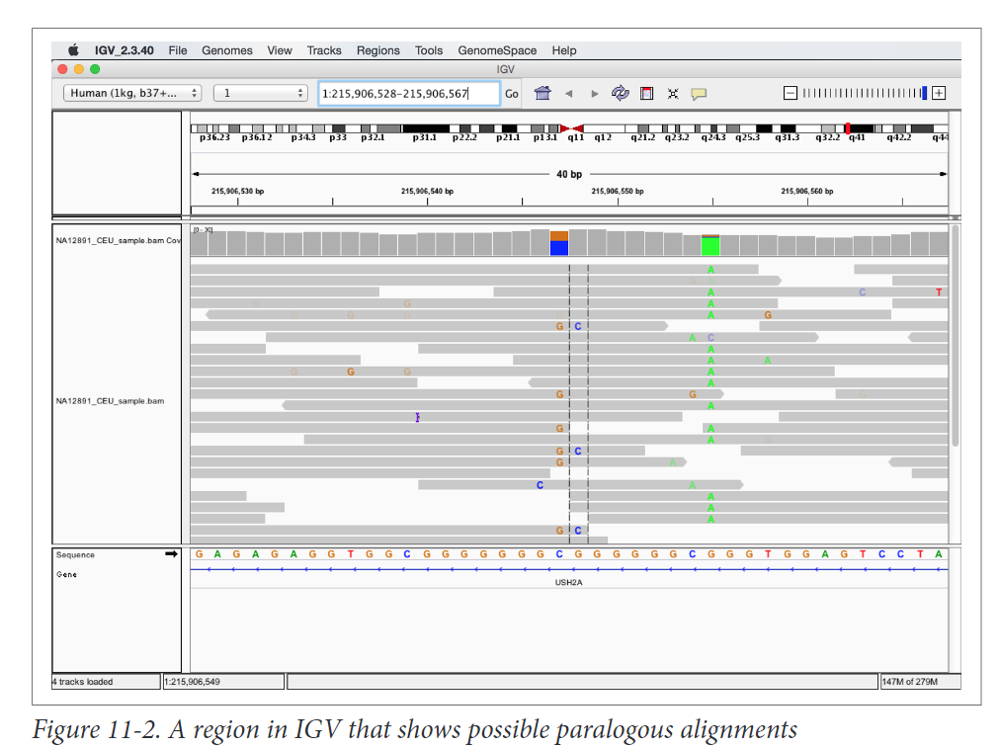</p>
<h3 id="11-3-1-Pileups-with-samtools-pileup-Variant-Calling-and-Base-Alignment-Quality">11.3.1 Pileups with samtools pileup, Variant Calling, and Base Alignment Quality</h3>
<p>pileup fromat 是之后call SNP的基础，让我们先看一个简单的流程。</p>
<figure class="highlight shell"><table><tr><td class="gutter"><pre><span class="line">1</span><br></pre></td><td class="code"><pre><span class="line"><span class="meta">$</span><span class="bash"> samtools mpileup --no-BAQ --region 1:215906528-215906567  --fasta-ref human_g1k_v37.fasta NA12891_CEU_sample.bam</span></span><br></pre></td></tr></table></figure>
<ul>
<li>–no-BAQ : disable  Base Alignment Quality (BAQ)</li>
</ul>
<p>使用 -v 选项生成 VCF 文件，或者使用 -g 选项生成 BCF 文件，这里默认是生成压缩格式的vcf，可以使用 -u 生成未压缩的vcf格式。</p>
<figure class="highlight shell"><table><tr><td class="gutter"><pre><span class="line">1</span><br></pre></td><td class="code"><pre><span class="line"><span class="meta">$</span><span class="bash"> samtools mpileup -v --no-BAQ --region 1:215906528-215906567  --fasta-ref human_g1k_v37.fasta NA12891_CEU_sample.bam &gt; NA12891_CEU_sample.vcf.gz</span></span><br></pre></td></tr></table></figure>
<p>通过 <code>bcftools call</code> ，来推断哪些位点是真的变异，然后每个个体的基因型是什么。</p>
<p>-m 选项采用  multiallelic caller； -v  选项只输出 variant sites</p>
<figure class="highlight shell"><table><tr><td class="gutter"><pre><span class="line">1</span><br></pre></td><td class="code"><pre><span class="line"><span class="meta">$</span><span class="bash"> bcftools call -v -m NA12891_CEU_sample.vcf.gz &gt; NA12891_CEU_sample_calls.vcf.gz</span></span><br></pre></td></tr></table></figure>
<p>生成的结果文件如图</p>
<p>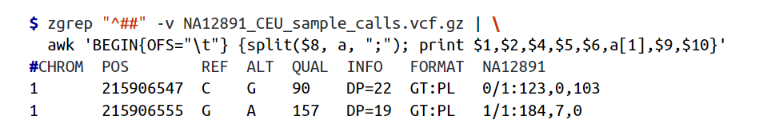</p>
<p>我们可以看到位点 215,906,548 不再显示为一个SNP，这和IGV的可视化结果一致，因为它有20 reference (G)，只有 4 个 C alleles，很难相信它是一个真实的变异。</p>
<p>除此之外，<code>bcftools call</code> 估计了一个 quality score (即 QUAL 字段)，每个 ALT 基因均有一个 quality score 值。 <code>These  quality  scores  are  Phred-scaled  values </code> 。这个数值越高，说明置信度越高。</p>
<p>如果 ALT 是 <code>.</code> （表示没有变异），那么 quality score 反映这个位点真的有一个变异的可能性。</p>
<p><strong>对于 low-complexity regions 发生的错误比对（通常是由于 indels 解释为 mismatches）是错误的 SNP calls 的主要原因。</strong> 为了避免这一点，samtools mpileup 可以采用 <code> Base Alignment Quality (BAQ)</code> , 来矫正碱基质量，不仅反映不正确的 SNP call, 而且反映 a particular base being misaligned。之前我们没用，现在我们用一下看看，我们发现215,906,547 和 215,906,548 不再视为是SNP了。</p>
<p>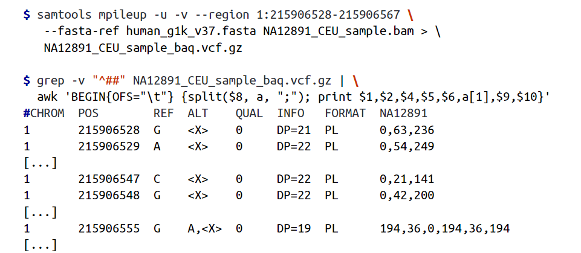</p>
<h2 id="11-4-Creating-Your-Own-SAM-BAM-Processing-Tools-with-Pysam">11.4 Creating Your Own SAM/BAM Processing Tools with Pysam</h2>
<p>在这一部分，我们会学习 Pysam 的基本至少，它是一个应用程序编程接口（通常称为API）.</p>
<p>我们先下载这个包</p>
<figure class="highlight shell"><table><tr><td class="gutter"><pre><span class="line">1</span><br></pre></td><td class="code"><pre><span class="line">pip install pysam</span><br></pre></td></tr></table></figure>
<h3 id="11-4-1-Opening-BAM-Files-Fetching-Alignments-from-a-Region-and-Iterating-Across-Reads">11.4.1 Opening BAM Files, Fetching Alignments from a Region, and Iterating Across Reads</h3>
<p>这里由于是读取二进制文件，采用 “rb”</p>
<figure class="highlight python"><table><tr><td class="gutter"><pre><span class="line">1</span><br><span class="line">2</span><br><span class="line">3</span><br><span class="line">4</span><br><span class="line">5</span><br><span class="line">6</span><br><span class="line">7</span><br></pre></td><td class="code"><pre><span class="line"><span class="meta">&gt;&gt;&gt; </span>importpysam</span><br><span class="line"><span class="meta">&gt;&gt;&gt; </span>fname = <span class="string">&quot;NA12891_CEU_sample.bam&quot;</span></span><br><span class="line"><span class="meta">&gt;&gt;&gt; </span>bamfile = pysam.AlignmentFile(filename=fname, mode=<span class="string">&quot;rb&quot;</span>)</span><br><span class="line"><span class="meta">&gt;&gt;&gt; </span><span class="built_in">type</span>(bamfile)</span><br><span class="line">&lt;<span class="built_in">type</span> <span class="string">&#x27;pysam.calignmentfile.AlignmentFile&#x27;</span></span><br><span class="line">&gt;&gt;&gt;&gt; <span class="built_in">dir</span>(bamfile)</span><br><span class="line">[<span class="string">&#x27;__class__&#x27;</span>, <span class="string">&#x27;__delattr__&#x27;</span>, ..., <span class="string">&#x27;close&#x27;</span>, <span class="string">&#x27;count&#x27;</span>, <span class="string">&#x27;fetch&#x27;</span>, <span class="string">&#x27;filename&#x27;</span>,<span class="string">&#x27;getrname&#x27;</span>, <span class="string">&#x27;gettid&#x27;</span>, <span class="string">&#x27;head&#x27;</span>, <span class="string">&#x27;header&#x27;</span>, <span class="string">&#x27;lengths&#x27;</span>, <span class="string">&#x27;mapped&#x27;</span>, <span class="string">&#x27;mate&#x27;</span>,<span class="string">&#x27;next&#x27;</span>, <span class="string">&#x27;nocoordinate&#x27;</span>, <span class="string">&#x27;nreferences&#x27;</span>, <span class="string">&#x27;pileup&#x27;</span>, <span class="string">&#x27;references&#x27;</span>, <span class="string">&#x27;reset&#x27;</span>,<span class="string">&#x27;seek&#x27;</span>, <span class="string">&#x27;tell&#x27;</span>, <span class="string">&#x27;text&#x27;</span>, <span class="string">&#x27;unmapped&#x27;</span>, <span class="string">&#x27;write&#x27;</span>]</span><br></pre></td></tr></table></figure>
<p>我们可以采用 <code>pysam.AlignmentFile.fetch() </code> 来提取一个 indexed 的 BAM 文件的区域。</p>
<figure class="highlight python"><table><tr><td class="gutter"><pre><span class="line">1</span><br><span class="line">2</span><br><span class="line">3</span><br><span class="line">4</span><br><span class="line">5</span><br><span class="line">6</span><br><span class="line">7</span><br><span class="line">8</span><br></pre></td><td class="code"><pre><span class="line"><span class="meta">&gt;&gt;&gt; </span><span class="keyword">for</span> read <span class="keyword">in</span> bamfile.fetch(<span class="string">&#x27;1&#x27;</span>, start=<span class="number">215906528</span>, end=<span class="number">215906567</span>):</span><br><span class="line"><span class="meta">... </span>  <span class="built_in">print</span>(read.qname, <span class="string">&quot;aligned at position&quot;</span>,read.pos)</span><br><span class="line">...</span><br><span class="line">SRR005672<span class="number">.5788073</span> aligned at position <span class="number">215906479</span></span><br><span class="line">SRR005666<span class="number">.5830972</span> aligned at position <span class="number">215906486</span></span><br><span class="line">ERR002294<span class="number">.5383813</span> aligned at position <span class="number">215906495</span></span><br><span class="line">[...]</span><br><span class="line"></span><br></pre></td></tr></table></figure>
<p>我们也可以遍历所有的 reads</p>
<figure class="highlight python"><table><tr><td class="gutter"><pre><span class="line">1</span><br><span class="line">2</span><br><span class="line">3</span><br><span class="line">4</span><br><span class="line">5</span><br></pre></td><td class="code"><pre><span class="line"><span class="meta">&gt;&gt;&gt; </span>bamfile = pysam.AlignmentFile(filename=fname, mode=<span class="string">&quot;rb&quot;</span>)</span><br><span class="line"><span class="meta">&gt;&gt;&gt; </span><span class="keyword">for</span> read <span class="keyword">in</span> bamfile:</span><br><span class="line"><span class="meta">... </span>  status = <span class="string">&quot;unaligned&quot;</span><span class="keyword">if</span> read.is_unmappedelse <span class="string">&quot;aligned&quot;</span></span><br><span class="line"><span class="meta">... </span>  <span class="built_in">print</span>(read.qname, <span class="string">&quot;is&quot;</span>, status)</span><br><span class="line">...</span><br></pre></td></tr></table></figure>
<p>遍历一遍之后，如果想再遍历一遍，需要采用reset() 函数（类似于seek()）</p>
<figure class="highlight python"><table><tr><td class="gutter"><pre><span class="line">1</span><br></pre></td><td class="code"><pre><span class="line"><span class="meta">&gt;&gt;&gt; </span>bamfile.reset()</span><br></pre></td></tr></table></figure>
<p>文件用完之后需要关闭</p>
<figure class="highlight python"><table><tr><td class="gutter"><pre><span class="line">1</span><br></pre></td><td class="code"><pre><span class="line"><span class="meta">&gt;&gt;&gt; </span>bamfile.close()</span><br></pre></td></tr></table></figure>
<h3 id="11-4-2-Extracting-SAM-BAM-Header-Information-from-an-AlignmentFile-Object">11.4.2 Extracting SAM/BAM Header Information from an AlignmentFile Object</h3>
<p>所有的SAM/BAM文件的表头均存放在一个python 字典中。</p>
<figure class="highlight python"><table><tr><td class="gutter"><pre><span class="line">1</span><br><span class="line">2</span><br></pre></td><td class="code"><pre><span class="line"><span class="meta">&gt;&gt;&gt; </span>bamfile.header.keys()</span><br><span class="line">odict_keys([<span class="string">&#x27;HD&#x27;</span>, <span class="string">&#x27;SQ&#x27;</span>, <span class="string">&#x27;RG&#x27;</span>, <span class="string">&#x27;PG&#x27;</span>])</span><br></pre></td></tr></table></figure>
<figure class="highlight python"><table><tr><td class="gutter"><pre><span class="line">1</span><br><span class="line">2</span><br><span class="line">3</span><br><span class="line">4</span><br><span class="line">5</span><br><span class="line">6</span><br><span class="line">7</span><br><span class="line">8</span><br><span class="line">9</span><br></pre></td><td class="code"><pre><span class="line"><span class="meta">&gt;&gt;&gt; </span>bamfile.header[<span class="string">&#x27;RG&#x27;</span>][<span class="number">0</span>]</span><br><span class="line">&#123;<span class="string">&#x27;ID&#x27;</span>: <span class="string">&#x27;ERR001776&#x27;</span>, <span class="string">&#x27;PL&#x27;</span>: <span class="string">&#x27;ILLUMINA&#x27;</span>, <span class="string">&#x27;LB&#x27;</span>: <span class="string">&#x27;g1k-sc-NA12891-CEU-1&#x27;</span>, <span class="string">&#x27;PI&#x27;</span>: <span class="string">&#x27;200&#x27;</span>, <span class="string">&#x27;DS&#x27;</span>: <span class="string">&#x27;SRP000032&#x27;</span>, <span class="string">&#x27;SM&#x27;</span>: <span class="string">&#x27;NA12891&#x27;</span>, <span class="string">&#x27;CN&#x27;</span>: <span class="string">&#x27;SC&#x27;</span>&#125;</span><br><span class="line"><span class="meta">&gt;&gt;&gt; </span>bamfile.header[<span class="string">&#x27;SQ&#x27;</span>][<span class="number">0</span>]</span><br><span class="line">&#123;<span class="string">&#x27;SN&#x27;</span>: <span class="string">&#x27;1&#x27;</span>, <span class="string">&#x27;LN&#x27;</span>: <span class="number">249250621</span>, <span class="string">&#x27;AS&#x27;</span>: <span class="string">&#x27;NCBI37&#x27;</span>, <span class="string">&#x27;UR&#x27;</span>: <span class="string">&#x27;file:/lustre/scratch102/projects/g1k/ref/main_project/human_g1k_v37.fasta&#x27;</span>, <span class="string">&#x27;M5&#x27;</span>: <span class="string">&#x27;1b22b98cdeb4a9304cb5d48026a85128&#x27;</span>&#125;</span><br><span class="line"><span class="meta">&gt;&gt;&gt; </span>bamfile.references</span><br><span class="line">(<span class="string">&#x27;1&#x27;</span>, <span class="string">&#x27;2&#x27;</span>, <span class="string">&#x27;3&#x27;</span>, <span class="string">&#x27;4&#x27;</span>, <span class="string">&#x27;5&#x27;</span>, <span class="string">&#x27;6&#x27;</span>, <span class="string">&#x27;7&#x27;</span>, <span class="string">&#x27;8&#x27;</span>, <span class="string">&#x27;9&#x27;</span>, <span class="string">&#x27;10&#x27;</span>, <span class="string">&#x27;11&#x27;</span>, <span class="string">&#x27;12&#x27;</span>, <span class="string">&#x27;13&#x27;</span>, <span class="string">&#x27;14&#x27;</span>, <span class="string">&#x27;15&#x27;</span>, <span class="string">&#x27;16&#x27;</span>, <span class="string">&#x27;17&#x27;</span>, <span class="string">&#x27;18&#x27;</span>, <span class="string">&#x27;19&#x27;</span>, <span class="string">&#x27;20&#x27;</span>, <span class="string">&#x27;21&#x27;</span>, <span class="string">&#x27;22&#x27;</span>, <span class="string">&#x27;X&#x27;</span>, <span class="string">&#x27;Y&#x27;</span>, <span class="string">&#x27;MT&#x27;</span>, <span class="string">&#x27;GL000207.1&#x27;</span>, <span class="string">&#x27;GL000226.1&#x27;</span>, <span class="string">&#x27;GL000229.1&#x27;</span>, <span class="string">&#x27;GL000231.1&#x27;</span>, <span class="string">&#x27;GL000210.1&#x27;</span>, <span class="string">&#x27;GL000239.1&#x27;</span>, <span class="string">&#x27;GL000235.1&#x27;</span>, <span class="string">&#x27;GL000201.1&#x27;</span>, <span class="string">&#x27;GL000247.1&#x27;</span>, <span class="string">&#x27;GL000245.1&#x27;</span>, <span class="string">&#x27;GL000197.1&#x27;</span>, <span class="string">&#x27;GL000203.1&#x27;</span>, <span class="string">&#x27;GL000246.1&#x27;</span>, <span class="string">&#x27;GL000249.1&#x27;</span>, <span class="string">&#x27;GL000196.1&#x27;</span>, <span class="string">&#x27;GL000248.1&#x27;</span>, <span class="string">&#x27;GL000244.1&#x27;</span>, <span class="string">&#x27;GL000238.1&#x27;</span>, <span class="string">&#x27;GL000202.1&#x27;</span>, <span class="string">&#x27;GL000234.1&#x27;</span>, <span class="string">&#x27;GL000232.1&#x27;</span>, <span class="string">&#x27;GL000206.1&#x27;</span>, <span class="string">&#x27;GL000240.1&#x27;</span>, <span class="string">&#x27;GL000236.1&#x27;</span>, <span class="string">&#x27;GL000241.1&#x27;</span>, <span class="string">&#x27;GL000243.1&#x27;</span>, <span class="string">&#x27;GL000242.1&#x27;</span>, <span class="string">&#x27;GL000230.1&#x27;</span>, <span class="string">&#x27;GL000237.1&#x27;</span>, <span class="string">&#x27;GL000233.1&#x27;</span>, <span class="string">&#x27;GL000204.1&#x27;</span>, <span class="string">&#x27;GL000198.1&#x27;</span>, <span class="string">&#x27;GL000208.1&#x27;</span>, <span class="string">&#x27;GL000191.1&#x27;</span>, <span class="string">&#x27;GL000227.1&#x27;</span>, <span class="string">&#x27;GL000228.1&#x27;</span>, <span class="string">&#x27;GL000214.1&#x27;</span>, <span class="string">&#x27;GL000221.1&#x27;</span>, <span class="string">&#x27;GL000209.1&#x27;</span>, <span class="string">&#x27;GL000218.1&#x27;</span>, <span class="string">&#x27;GL000220.1&#x27;</span>, <span class="string">&#x27;GL000213.1&#x27;</span>, <span class="string">&#x27;GL000211.1&#x27;</span>, <span class="string">&#x27;GL000199.1&#x27;</span>, <span class="string">&#x27;GL000217.1&#x27;</span>, <span class="string">&#x27;GL000216.1&#x27;</span>, <span class="string">&#x27;GL000215.1&#x27;</span>, <span class="string">&#x27;GL000205.1&#x27;</span>, <span class="string">&#x27;GL000219.1&#x27;</span>, <span class="string">&#x27;GL000224.1&#x27;</span>, <span class="string">&#x27;GL000223.1&#x27;</span>, <span class="string">&#x27;GL000195.1&#x27;</span>, <span class="string">&#x27;GL000212.1&#x27;</span>, <span class="string">&#x27;GL000222.1&#x27;</span>, <span class="string">&#x27;GL000200.1&#x27;</span>, <span class="string">&#x27;GL000193.1&#x27;</span>, <span class="string">&#x27;GL000194.1&#x27;</span>, <span class="string">&#x27;GL000225.1&#x27;</span>, <span class="string">&#x27;GL000192.1&#x27;</span>)</span><br><span class="line"><span class="meta">&gt;&gt;&gt; </span>bamfile.lengths</span><br><span class="line">(<span class="number">249250621</span>, <span class="number">243199373</span>, <span class="number">198022430</span>, <span class="number">191154276</span>, <span class="number">180915260</span>, <span class="number">171115067</span>, <span class="number">159138663</span>, <span class="number">146364022</span>, <span class="number">141213431</span>, <span class="number">135534747</span>, <span class="number">135006516</span>, <span class="number">133851895</span>, <span class="number">115169878</span>, <span class="number">107349540</span>, <span class="number">102531392</span>, <span class="number">90354753</span>, <span class="number">81195210</span>, <span class="number">78077248</span>, <span class="number">59128983</span>, <span class="number">63025520</span>, <span class="number">48129895</span>, <span class="number">51304566</span>, <span class="number">155270560</span>, <span class="number">59373566</span>, <span class="number">16569</span>, <span class="number">4262</span>, <span class="number">15008</span>, <span class="number">19913</span>, <span class="number">27386</span>, <span class="number">27682</span>, <span class="number">33824</span>, <span class="number">34474</span>, <span class="number">36148</span>, <span class="number">36422</span>, <span class="number">36651</span>, <span class="number">37175</span>, <span class="number">37498</span>, <span class="number">38154</span>, <span class="number">38502</span>, <span class="number">38914</span>, <span class="number">39786</span>, <span class="number">39929</span>, <span class="number">39939</span>, <span class="number">40103</span>, <span class="number">40531</span>, <span class="number">40652</span>, <span class="number">41001</span>, <span class="number">41933</span>, <span class="number">41934</span>, <span class="number">42152</span>, <span class="number">43341</span>, <span class="number">43523</span>, <span class="number">43691</span>, <span class="number">45867</span>, <span class="number">45941</span>, <span class="number">81310</span>, <span class="number">90085</span>, <span class="number">92689</span>, <span class="number">106433</span>, <span class="number">128374</span>, <span class="number">129120</span>, <span class="number">137718</span>, <span class="number">155397</span>, <span class="number">159169</span>, <span class="number">161147</span>, <span class="number">161802</span>, <span class="number">164239</span>, <span class="number">166566</span>, <span class="number">169874</span>, <span class="number">172149</span>, <span class="number">172294</span>, <span class="number">172545</span>, <span class="number">174588</span>, <span class="number">179198</span>, <span class="number">179693</span>, <span class="number">180455</span>, <span class="number">182896</span>, <span class="number">186858</span>, <span class="number">186861</span>, <span class="number">187035</span>, <span class="number">189789</span>, <span class="number">191469</span>, <span class="number">211173</span>, <span class="number">547496</span>)</span><br><span class="line"></span><br></pre></td></tr></table></figure>
<p>后面都没看</p>
<h3 id="11-4-3-Working-with-AlignedSegment-Objects">11.4.3 Working with AlignedSegment Objects</h3>
<h3 id="11-4-4-Writing-a-Program-to-Record-Alignment-Statistics">11.4.4 Writing a Program to Record Alignment Statistics</h3>
<h3 id="11-4-5-Additional-Pysam-Features-and-Other-SAM-BAM-APIs">11.4.5 Additional Pysam Features and Other SAM/BAM APIs</h3>
<h1>12 Bioinformatics Shell Scripting, WritingPipelines, and Parallelizing Tasks</h1>
<h2 id="12-1-Basic-Bash-Scripting">12.1 Basic Bash Scripting</h2>
<h3 id="12-1-1-Writing-and-Running-Robust-Bash-Scripts">12.1.1 Writing and Running Robust Bash Scripts</h3>
<p>每次你写 bash 脚本时，你都需要使用下面的脚本表头，让你的程序更稳健。</p>
<figure class="highlight shell"><table><tr><td class="gutter"><pre><span class="line">1</span><br><span class="line">2</span><br><span class="line">3</span><br><span class="line">4</span><br></pre></td><td class="code"><pre><span class="line"><span class="meta">#</span><span class="bash">!/bin/bash</span></span><br><span class="line">set -e</span><br><span class="line">set -u</span><br><span class="line">set -o pipefail</span><br></pre></td></tr></table></figure>
<p>第一行指定解释器（shebang）</p>
<blockquote>
<h1>Shebang[[编辑](<a target="_blank" rel="noopener" href="https://zh.wikipedia.org/w/index.php?title=Shebang&amp;action=edit&amp;section=0&amp;summary=/*">https://zh.wikipedia.org/w/index.php?title=Shebang&amp;action=edit&amp;section=0&amp;summary=/*</a> top */ )]</h1>
<p>维基百科，自由的百科全书</p>
<p><a target="_blank" rel="noopener" href="https://zh.wikipedia.org/wiki/Shebang#mw-head">跳到导航</a><a target="_blank" rel="noopener" href="https://zh.wikipedia.org/wiki/Shebang#searchInput">跳到搜索</a></p>
<p>在<a target="_blank" rel="noopener" href="https://zh.wikipedia.org/wiki/%E8%AE%A1%E7%AE%97">计算</a>领域中，<strong>Shebang</strong>（也称为<strong>Hashbang</strong>）是一个由<a target="_blank" rel="noopener" href="https://zh.wikipedia.org/wiki/%E4%BA%95%E8%99%9F">井号</a>和<a target="_blank" rel="noopener" href="https://zh.wikipedia.org/wiki/%E5%8F%B9%E5%8F%B7">叹号</a>构成的字符序列*<code>#!</code>*，其出现在文本文件的第一行的前两个字符。 在文件中存在Shebang的情况下，<a target="_blank" rel="noopener" href="https://zh.wikipedia.org/wiki/%E7%B1%BBUnix%E6%93%8D%E4%BD%9C%E7%B3%BB%E7%BB%9F">类Unix操作系统</a>的<a target="_blank" rel="noopener" href="https://zh.wikipedia.org/w/index.php?title=%E7%A8%8B%E5%BA%8F%E8%BD%BD%E5%85%A5%E5%99%A8&amp;action=edit&amp;redlink=1">程序载入器</a>会分析Shebang后的内容，将这些内容作为解释器指令，并调用该指令，并将载有Shebang的文件路径作为该解释器的参数[<a target="_blank" rel="noopener" href="https://zh.wikipedia.org/wiki/Shebang#cite_note-absg_shabang-1">1]</a>[<a target="_blank" rel="noopener" href="https://zh.wikipedia.org/wiki/Shebang#cite_note-2">2]</a>。</p>
<p>例如，以指令<code>#!/bin/sh</code>开头的文件在执行时会实际调用*/bin/sh*程序（通常是<a target="_blank" rel="noopener" href="https://zh.wikipedia.org/wiki/Bourne_shell">Bourne shell</a>或兼容的<a target="_blank" rel="noopener" href="https://zh.wikipedia.org/wiki/Unix_shell">shell</a>，例如<a target="_blank" rel="noopener" href="https://zh.wikipedia.org/wiki/Bash">bash</a>、<a target="_blank" rel="noopener" href="https://zh.wikipedia.org/wiki/Debian_Almquist_shell">dash</a>等）来执行。这行内容也是<a target="_blank" rel="noopener" href="https://zh.wikipedia.org/wiki/Shell%E8%84%9A%E6%9C%AC">shell脚本</a>的标准起始行。</p>
</blockquote>
<p>第二行：默认情况下，一个shell 脚本如果报错（exit status 不为0），不会导致整个shell脚本退出（?）, shell 脚本会继续执行下一行命令。这不是我们想要的运行方式，我们通常都想看到 errors to be loud and noticeable. <code>set -e</code> 阻止了这一做法，如果脚本中的任何命令退出码不为0，整个脚本的运行便会中止。但是，有些时候退出码不为0，并不表示报错，而是 false。比如使用 <code>test -d file.txt</code> 来判断是否为文件夹，就会返回一个非0的退出码（非文件夹），但是这并不是一个错误。因此，<code>set -e</code> 会忽视在 if 的条件语句中的非0的退出码。同样地，<code>set -e</code> 会忽视Unix 管道命令中除了最后一个管道之外的所有退出状态。</p>
<p>第三行：<code>set -u</code> 修改了另一个默认行为： 包含对<strong>未设置的变量名称的引用</strong>的任何命令仍将运行。举一个可怕的例子，假设有个命令：<code>rm -rf $TEMP_DIR/*</code> ，如果 $TEMP_DIR 没有设置，BASH 会实际会执行下列语句。</p>
<figure class="highlight plain"><table><tr><td class="gutter"><pre><span class="line">1</span><br></pre></td><td class="code"><pre><span class="line">rm -rf &#x2F;*</span><br></pre></td></tr></table></figure>
<p>通过 <code>set -u</code>  来阻止这种类型的错误。如果变量名未设置，这条命令不会执行。</p>
<p>第四行：前面提到了 <code>set -e</code>  有一些例外情况，其中一种情况就是如果在一个 Unix pipe 中没有运行成功，除非错误出现在最后一个命令，不然 <code>set -e</code>  不会让程序中止。 通过添加 <code>set -o pipefail</code> 可以阻止这种行为 - <strong>在管道命令中的任何一个命令返回一个非0的退出码，都会导致整个pipe 返回一个非0的退出码</strong>。再加上 <code>set -e</code> 选项，就会让这个shell 脚本运行中止。</p>
<p>上面这三个选项时避免 Bash scripts 出现 silent errors 和 unsafe behavior 的第一层防护。<strong>不幸的是，Bash 是一个脆弱的语言</strong>。我们需要注意一些其他事项才能使得它能够安全运行。</p>
<h3 id="12-1-2-Variables-and-Command-Arguments">12.1.2 Variables and Command Arguments</h3>
<p>引用变量：最规范的是第三种</p>
<ol>
<li>使用 <code>$&#123;&#125;</code> 确定变量边界</li>
<li>整个引用外层使用引号，避免因为中间出现空格或其他特殊字符，导致出错。</li>
</ol>
<figure class="highlight shell"><table><tr><td class="gutter"><pre><span class="line">1</span><br><span class="line">2</span><br><span class="line">3</span><br></pre></td><td class="code"><pre><span class="line">mkdir $sample_aln/</span><br><span class="line">mkdir $&#123;sample&#125;_aln/</span><br><span class="line">mkdir &quot;$&#123;sample&#125;_aln/&quot;</span><br></pre></td></tr></table></figure>
<h3 id="12-1-3-Conditionals-in-a-Bash-Script-if-Statements">12.1.3 Conditionals in a Bash Script: if Statements</h3>
<p>shell 中的 if 语句和其他语言不同的地方在于：shell 中判断是看<strong>退出码</strong>，退出码为0运行then之后的语句，退出码是其他值则运行else之后的值。</p>
<figure class="highlight shell"><table><tr><td class="gutter"><pre><span class="line">1</span><br><span class="line">2</span><br><span class="line">3</span><br><span class="line">4</span><br><span class="line">5</span><br><span class="line">6</span><br></pre></td><td class="code"><pre><span class="line">if [commands]</span><br><span class="line">then</span><br><span class="line">	do sth</span><br><span class="line">else</span><br><span class="line">	do sth</span><br><span class="line">fi</span><br></pre></td></tr></table></figure>
<p>举个简单的例子，假如我们想看一个文件中是否包含某字符串。由于 grep 函数如果匹配到了会 return 0；如果没有匹配到会 return 1。我们就可以这么写</p>
<figure class="highlight shell"><table><tr><td class="gutter"><pre><span class="line">1</span><br><span class="line">2</span><br><span class="line">3</span><br><span class="line">4</span><br></pre></td><td class="code"><pre><span class="line">if grep &quot;pattern&quot; some_file.txt &gt; /dev/null</span><br><span class="line">then </span><br><span class="line">	echo &quot;found &#x27;pattern&#x27; in &#x27;some_file.txt&#x27;&quot;</span><br><span class="line">fi</span><br></pre></td></tr></table></figure>
<p>if 做判断时可以使用 <strong><code>&amp;&amp;</code></strong> (and) 和 <strong><code>||</code></strong>(not) ，例如</p>
<figure class="highlight shell"><table><tr><td class="gutter"><pre><span class="line">1</span><br><span class="line">2</span><br><span class="line">3</span><br><span class="line">4</span><br><span class="line">5</span><br></pre></td><td class="code"><pre><span class="line">if grep &quot;pattern&quot; file_1.txt &gt; /dev/null &amp;&amp;</span><br><span class="line">   grep &quot;pattern&quot; file_2.txt &gt; /dev/null</span><br><span class="line">then </span><br><span class="line">	echo &quot;found &#x27;pattern&#x27; in &#x27;file_1.txt&#x27; and &#x27;file_2.txt&#x27; &quot;</span><br><span class="line">fi</span><br></pre></td></tr></table></figure>
<p>还有 <strong>！</strong> （取反）</p>
<figure class="highlight shell"><table><tr><td class="gutter"><pre><span class="line">1</span><br><span class="line">2</span><br><span class="line">3</span><br><span class="line">4</span><br></pre></td><td class="code"><pre><span class="line">if ! grep &quot;pattern&quot; some_file.txt &gt; /dev/null</span><br><span class="line">then </span><br><span class="line">	echo &quot;did not found &#x27;pattern&#x27; in &#x27;some_file.txt&#x27;&quot;</span><br><span class="line">fi</span><br></pre></td></tr></table></figure>
<p>if 语句也可以使用 pipeline，但是这取决于你用不用<code>set -o pipefail</code> 。如果你设置了 pipefail ，那么pipe 中任何一个命令的退出码非0，就会跳过这个 if statement ，直接运行 else 的语句（如果有的话）。但是你如果没有设置 pipeline，那么只会看最后一个命令的退出码。设置pipefail 是更加合理的。</p>
<p>最后，我们来看 <strong>test</strong> 命令。test 命令用于检查某个条件是否成立，同样返回 0和1。</p>
<p>test 支持三种比较，<strong>字符串</strong>、<strong>整数</strong>（浮点数没法弄）、<strong>文件和文件夹</strong>。具体见shell 编程。</p>
<p>注意 shell 编程有一点错了或者不规范，shell 编程里是不能用**&gt;<strong>这种符号来比较数字或字符串的，因为和</strong>重定向符合重复了**。</p>
<p>test 语句可以写成 <strong>[ “$#” -ne 1 ]<strong>这种格式，但是注意</strong>[ 后 ] 前必须有一个空格</strong>。</p>
<p>test 语句 支持 -a -o ! （and,or,or）来连接多个条件，但是我觉得不如使用多个test 语句，然后用 &amp;&amp; || ! 连接更清晰，用书上的例子，可以改写一下（可读性明显增加了）。</p>
<figure class="highlight shell"><table><tr><td class="gutter"><pre><span class="line">1</span><br><span class="line">2</span><br></pre></td><td class="code"><pre><span class="line">if [ &quot;$#&quot; -ne 1 -o ! -r &quot;$1&quot; ]</span><br><span class="line">if [ &quot;$#&quot; -ne 1 ] || [ ! -r &quot;$1&quot; ]</span><br></pre></td></tr></table></figure>
<h3 id="12-1-4-Processing-Files-with-Bash-Using-for-Loops-and-Globbing">12.1.4 Processing Files with Bash Using for Loops and Globbing</h3>
<p>在很多生信分析中，数据可以会切分成多个文件。因此需要使用 for 循环遍历所有的文件。遍历过程分为三步：</p>
<ol>
<li>挑选哪些文件需要处理</li>
<li>对需要处理的文件应用同一套命令</li>
<li>按照输入文件名称命名输出文件。</li>
</ol>
<p>让我们先看第一步，挑选需要处理的文件。假设存在一个包含了文件基础信息的文件(samples.txt)，包括样本名，链名和文件路径。如下</p>
<p>前两列又称之为 <em>metadata</em> (<strong>data about data</strong>，这个data about data有意思) ，包含了文件的重要信息。我们这里注意到文件的文件名也包含了 metadata，这对我们提取文件很有用。</p>
<figure class="highlight shell"><table><tr><td class="gutter"><pre><span class="line">1</span><br><span class="line">2</span><br><span class="line">3</span><br><span class="line">4</span><br><span class="line">5</span><br><span class="line">6</span><br><span class="line">7</span><br><span class="line">8</span><br></pre></td><td class="code"><pre><span class="line"><span class="meta">$</span><span class="bash"> cat samples.txt</span></span><br><span class="line">zmaysA  R1      seq/zmaysA_R1.fastq</span><br><span class="line">zmaysA  R2      seq/zmaysA_R2.fastq</span><br><span class="line">zmaysB  R1      seq/zmaysB_R1.fastq</span><br><span class="line">zmaysB  R2      seq/zmaysB_R2.fastq</span><br><span class="line">zmaysC  R1      seq/zmaysC_R1.fastq</span><br><span class="line">zmaysC  R2      seq/zmaysC_R2.fastq</span><br><span class="line"></span><br></pre></td></tr></table></figure>
<p>假如说我们先收集每个文件的 quality statistics （使用假想的程序 fastq_stat），然后将这些信息保存到一个输出文件中。这里我们用到了 Bash 中的<strong>数组</strong>，<strong>basename</strong>。</p>
<p>首先，我们先将文件名导入到一个数组中，用于后面的循环。手动创建如下：</p>
<figure class="highlight shell"><table><tr><td class="gutter"><pre><span class="line">1</span><br></pre></td><td class="code"><pre><span class="line"><span class="meta">$</span><span class="bash"> sample_names=(zmaysA zmaysB zmaysC)</span></span><br></pre></td></tr></table></figure>
<p>可以通过索引提取（0-indexed）</p>
<figure class="highlight shell"><table><tr><td class="gutter"><pre><span class="line">1</span><br><span class="line">2</span><br></pre></td><td class="code"><pre><span class="line"><span class="meta">$</span><span class="bash"> <span class="built_in">echo</span> <span class="variable">$&#123;sample_names[0]&#125;</span></span></span><br><span class="line">zmaysA</span><br></pre></td></tr></table></figure>
<p>提取所有元素</p>
<figure class="highlight shell"><table><tr><td class="gutter"><pre><span class="line">1</span><br><span class="line">2</span><br></pre></td><td class="code"><pre><span class="line"><span class="meta">$</span><span class="bash"> <span class="built_in">echo</span> <span class="variable">$&#123;sample_names[@]&#125;</span></span></span><br><span class="line">zmaysA zmaysB zmaysC</span><br></pre></td></tr></table></figure>
<p>查看元素个数，每个元素的索引</p>
<figure class="highlight shell"><table><tr><td class="gutter"><pre><span class="line">1</span><br><span class="line">2</span><br><span class="line">3</span><br><span class="line">4</span><br></pre></td><td class="code"><pre><span class="line"><span class="meta">$</span><span class="bash"> <span class="built_in">echo</span> <span class="variable">$&#123;#sample_names[@]&#125;</span></span></span><br><span class="line">3</span><br><span class="line"><span class="meta">$</span><span class="bash"> <span class="built_in">echo</span> <span class="variable">$&#123;!sample_names[@]&#125;</span></span></span><br><span class="line">0 1 2</span><br></pre></td></tr></table></figure>
<p>但是，手动创建数组是无聊而又任意出错的工作，特别使当我们已经有了一个文件。我们可以通过 shell 的 <em>command substitution</em> 来创建数组（这么做存在风险）。</p>
<p>我们可以用 cut -f 3 来提取文件名</p>
<figure class="highlight shell"><table><tr><td class="gutter"><pre><span class="line">1</span><br><span class="line">2</span><br><span class="line">3</span><br></pre></td><td class="code"><pre><span class="line"><span class="meta">$</span><span class="bash"> sample_files=($(cut -f 3 samples.txt))</span></span><br><span class="line"><span class="meta">$</span><span class="bash"> <span class="built_in">echo</span> <span class="variable">$&#123;sample_files[@]&#125;</span></span></span><br><span class="line">seq/zmaysA_R1.fastq seq/zmaysA_R2.fastq seq/zmaysB_R1.fastq seq/zmaysB_R2.fastq seq/zmaysC_R1.fastq seq/zmaysC_R2.fastq</span><br></pre></td></tr></table></figure>
<p>这么做的前提是你事先确保你的文件名是<strong>规范的</strong> — 只有字母、数字、<code>_</code>  和 <code>-</code> 构成。如果在文件名中存在空格，制表符，换行符，又或者类似<code>*</code>的特殊字符，上面这种做法会出错。</p>
<p><strong>The Internal Field Separator, Word Splitting, and Filenames</strong></p>
<p>当我们通过 <em>command substitution</em> 来创建数组时，Bash 采用 <em>word spliting</em> 来分割出字段作为数组的元素，使用的规则是 <em>Internal Field Separator</em> (IFS) 。IFS 的值存储在 IFS 变量中，默认为<strong>空格、制表位和换行符</strong>。你可以这么查看 IFS 的值</p>
<figure class="highlight shell"><table><tr><td class="gutter"><pre><span class="line">1</span><br><span class="line">2</span><br></pre></td><td class="code"><pre><span class="line"><span class="meta">$</span><span class="bash"> <span class="built_in">printf</span> %q <span class="string">&quot;<span class="variable">$IFS</span>&quot;</span></span></span><br><span class="line"><span class="meta">$</span><span class="bash"><span class="string">&#x27; \t\n&#x27;</span></span></span><br></pre></td></tr></table></figure>
<p>由于空格包含在IFS中，因此如果文件名包含空格，它会被切分为两部分。</p>
<p>获取了文件名之后，我们需要去除路径和后缀，只提取基本的文件名，用于命名结果文件。我们可以使用 basename 命令来完成这一步</p>
<figure class="highlight shell"><table><tr><td class="gutter"><pre><span class="line">1</span><br><span class="line">2</span><br></pre></td><td class="code"><pre><span class="line"><span class="meta">$</span><span class="bash"> basename seqs/zmaysA_R1.fastq</span></span><br><span class="line">zmaysA_R1.fastq</span><br></pre></td></tr></table></figure>
<p>可以进一步剔除后缀</p>
<figure class="highlight shell"><table><tr><td class="gutter"><pre><span class="line">1</span><br><span class="line">2</span><br><span class="line">3</span><br><span class="line">4</span><br></pre></td><td class="code"><pre><span class="line"><span class="meta">$</span><span class="bash"> basename seqs/zmaysA_R1.fastq .fastq</span></span><br><span class="line">zmaysA_R1</span><br><span class="line"><span class="meta">$</span><span class="bash"> basename -s .fastq seqs/zmaysA_R1.fastq</span></span><br><span class="line">zmaysA_R1</span><br></pre></td></tr></table></figure>
<p>现在，所有的步骤均已完备，可以搭建流程了。</p>
<figure class="highlight shell"><table><tr><td class="gutter"><pre><span class="line">1</span><br><span class="line">2</span><br><span class="line">3</span><br><span class="line">4</span><br><span class="line">5</span><br><span class="line">6</span><br><span class="line">7</span><br><span class="line">8</span><br><span class="line">9</span><br><span class="line">10</span><br><span class="line">11</span><br><span class="line">12</span><br><span class="line">13</span><br><span class="line">14</span><br><span class="line">15</span><br><span class="line">16</span><br><span class="line">17</span><br><span class="line">18</span><br><span class="line">19</span><br></pre></td><td class="code"><pre><span class="line"><span class="meta">#</span><span class="bash">!/bin/bash</span></span><br><span class="line">set -e</span><br><span class="line">set -u</span><br><span class="line">set -o pipefail</span><br><span class="line"><span class="meta">#</span><span class="bash"> specify the input samples file, <span class="built_in">where</span> the third</span></span><br><span class="line"><span class="meta">#</span><span class="bash"> column is the path to each sample FASTQ file</span></span><br><span class="line">sample_info=samples.txt</span><br><span class="line"><span class="meta">#</span><span class="bash"> create a Bash array from the third column of <span class="variable">$sample_info</span></span></span><br><span class="line">sample_files=($(cut -f 3 &quot;$sample_info&quot;))</span><br><span class="line"> </span><br><span class="line">for fastq_file in $&#123;sample_files[@]&#125;</span><br><span class="line">do</span><br><span class="line">    # strip .fastq from each FASTQ file, and add suffix</span><br><span class="line">    # &quot;-stats.txt&quot; to create an output filename for each FASTQ file    </span><br><span class="line">    results_file=&quot;$(basename $fastq_file .fastq)-stats.txt&quot;</span><br><span class="line">    # run fastq_stat on a file, writing results to the filename we&#x27;ve</span><br><span class="line">    # above    </span><br><span class="line">    fastq_stat $fastq_file &gt; stats/$results_file</span><br><span class="line">done</span><br></pre></td></tr></table></figure>
<p>上面这个流程是一个简单的流程，但是在生信分析中，我们经常需要合并两个或多个输入文件的信息，生成一个输出文件。比对的reads数据就是一个例子：很多软件要求输入两个 FASTQ 文件，最终返回一个 alignment 文件。当我们进行比对时，我们不能像上面那样循环。相反，每个样本是一个处理单元（?）。我们的比对步骤要求输入一个样本的两个 FASTQ 文件，然后返回这个样本的一个alignment 文件。因此，我们需要通过唯一的文件名进行迭代，然后利用文件名来 re-create 输入的 FASTQ 文件。</p>
<p>我们用个例子来说明：假设我们使用比对软件 BWA ，并且我们的参考基因组是 zmays_AGPv3.20.fa</p>
<p>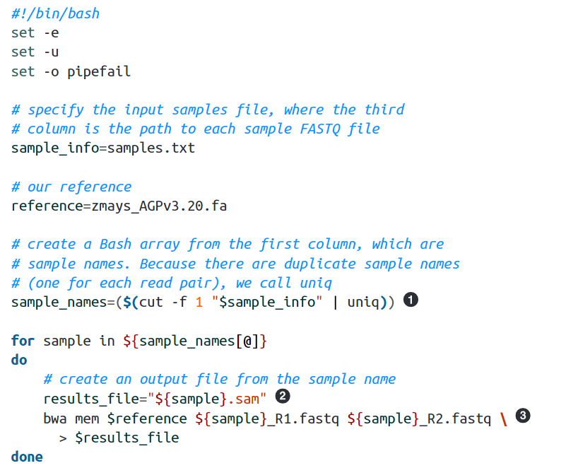</p>
<p>很多时候，直接对文件进行循环可能更加方便。</p>
<p>下面这个例子是简单地查找 fastq 文件中有多少条记录。</p>
<figure class="highlight shell"><table><tr><td class="gutter"><pre><span class="line">1</span><br><span class="line">2</span><br><span class="line">3</span><br><span class="line">4</span><br><span class="line">5</span><br><span class="line">6</span><br><span class="line">7</span><br><span class="line">8</span><br><span class="line">9</span><br></pre></td><td class="code"><pre><span class="line"><span class="meta">#</span><span class="bash">!/bin/bash</span></span><br><span class="line">set -e</span><br><span class="line">set -u</span><br><span class="line">set -o pipefail</span><br><span class="line"></span><br><span class="line">for file in *.fastq</span><br><span class="line">do</span><br><span class="line">	echo &quot;$file: &quot; $(bioawk -c fastx &#x27;END &#123;print NR&#125;&#x27; $file)</span><br><span class="line">done</span><br></pre></td></tr></table></figure>
<p>Bash 的循环可以很方便地遍历多个文件，但是存在一些缺点。首先相比于上面那种方式，使用find命令更加强大。然后，Bash 的循环命令无法 parallelize 。下一节我们会看到更加强大的文件处理命令。</p>
<h2 id="12-2-Automating-File-Processing-with-find-and-xargs">12.2 Automating File-Processing with find and xargs</h2>
<p>find 和 xargs 组合使用，能够创建强大的Unix-based 文件处理流程。</p>
<h3 id="12-2-1-Using-find-and-xargs">12.2.1 Using find and xargs</h3>
<p>我们先举个例子，假设你有个程序 process_fq 可以从标准输入接收多个文件名并进行处理。如果你想对所有后缀为 .fq 的文件进行处理，你可能会这样运行：</p>
<figure class="highlight shell"><table><tr><td class="gutter"><pre><span class="line">1</span><br><span class="line">2</span><br><span class="line">3</span><br></pre></td><td class="code"><pre><span class="line"><span class="meta">$</span><span class="bash"> ls *.fq</span></span><br><span class="line">treatment-01.fq treatment 02.fq treatment-03.fq</span><br><span class="line"><span class="meta">$</span><span class="bash"> ls *.fq | process_fq</span></span><br></pre></td></tr></table></figure>
<p>这里使用了 ls 和 通配符来实现，但是这个方案是很脆弱的。假设你存在一个文件 treatment 02.fq 。在这种情况下，由于每个文件名之间是通过空格分隔的，因此这个文件名就会切分成两部分，导致程序报错。</p>
<p>如果你直接用 file globbing 作为参数，上面的这种情况不会发生，它会自动会忽略 reatment  02.fq 中的空格（? 没搞懂）。</p>
<figure class="highlight shell"><table><tr><td class="gutter"><pre><span class="line">1</span><br></pre></td><td class="code"><pre><span class="line"><span class="meta">$</span><span class="bash"> process_fq *.fq</span></span><br></pre></td></tr></table></figure>
<p>那为什么不用这种方式呢？因为这种方式对文件数目有限制。举例，假如你在 tmp/ 目录下存在成千上万个文件，你想先把这个目录下的所有文件删除，你可以会采用下述命令，但是会面临报错</p>
<figure class="highlight shell"><table><tr><td class="gutter"><pre><span class="line">1</span><br><span class="line">2</span><br></pre></td><td class="code"><pre><span class="line"><span class="meta">$</span><span class="bash"> rm tmp/*</span></span><br><span class="line">/bin/rm: cannot execute [Argument list too long]</span><br></pre></td></tr></table></figure>
<p>新手经常会面临上面这个文件。解决办法就是利用 find 和 xargs</p>
<h3 id="12-2-2-Finding-Files-with-find">12.2.2 Finding Files with find</h3>
<p>不像 ls，find 命令是递归的（它会遍历当前目录的子目录，子目录的子目录……）。如果你有多层目录嵌套的话，find 命令尤其有用。</p>
<p>事实上，对一个目录简单地采用 find 命令（不加任何参数）是参看<strong>目录结构</strong>的一个快捷方式。 例如</p>
<p>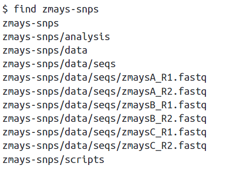</p>
<p>通过 -maxdepth 可以限制目录深度，比如你只想查找当前目录下的所有文件，使用 <code>-maxdepth 1</code>。</p>
<p>find 的 基本语法是 <code>find path expression</code> 。这里 path 指 find 用于查找的文件夹。</p>
<p>最简单的就是 -name，下面的命令和 <code>ls zmaysB*fastq</code> 结果一样，区别在于find的结果每个文件占一行，而且find命令是递归的。</p>
<figure class="highlight shell"><table><tr><td class="gutter"><pre><span class="line">1</span><br><span class="line">2</span><br><span class="line">3</span><br></pre></td><td class="code"><pre><span class="line"><span class="meta">$</span><span class="bash"> find data/seqs -name <span class="string">&quot;zmaysB*fastq&quot;</span></span></span><br><span class="line">data/seqs/zmaysB_R1.fastq</span><br><span class="line">data/seqs/zmaysB_R2.fastq</span><br></pre></td></tr></table></figure>
<h3 id="12-2-3-find’s-Expressions">12.2.3 find’s Expressions</h3>
<p>在上面的例子中，文件夹也可能会匹配上。因为我们只想返回 FASTQ 文件，我们可能需要通过 -type 来限制结果的类型（常用类型 f : 文件 d : 目录 l : 链接）。</p>
<figure class="highlight shell"><table><tr><td class="gutter"><pre><span class="line">1</span><br><span class="line">2</span><br><span class="line">3</span><br></pre></td><td class="code"><pre><span class="line"><span class="meta">$</span><span class="bash"> find data/seqs -name <span class="string">&quot;zmaysB*fastq&quot;</span> -<span class="built_in">type</span> f</span></span><br><span class="line">data/seqs/zmaysB_R1.fastq</span><br><span class="line">data/seqs/zmaysB_R2.fastq</span><br></pre></td></tr></table></figure>
<p>默认情况下，find 会通过 AND 逻辑来连接不同的expression，也就是说上面的例子找出的结果是既符合&quot;zmaysB*fastq&quot; 又是文件。上面的例子等同于</p>
<figure class="highlight shell"><table><tr><td class="gutter"><pre><span class="line">1</span><br><span class="line">2</span><br><span class="line">3</span><br></pre></td><td class="code"><pre><span class="line"><span class="meta">$</span><span class="bash"> find data/seqs -name <span class="string">&quot;zmaysB*fastq&quot;</span> -and -<span class="built_in">type</span> f</span></span><br><span class="line">data/seqs/zmaysB_R1.fastq</span><br><span class="line">data/seqs/zmaysB_R2.fastq</span><br></pre></td></tr></table></figure>
<p>我们可能想要找到样本A 或 样本C 的所有的FASTQ文件。在这个例子中，我们可能得用 -or 选项。</p>
<figure class="highlight shell"><table><tr><td class="gutter"><pre><span class="line">1</span><br><span class="line">2</span><br><span class="line">3</span><br><span class="line">4</span><br><span class="line">5</span><br></pre></td><td class="code"><pre><span class="line"><span class="meta">$</span><span class="bash"> find data/seqs -name <span class="string">&quot;zmaysA*fastq&quot;</span> -or -name <span class="string">&quot;zmaysC*fastq&quot;</span> -<span class="built_in">type</span> f</span></span><br><span class="line">data/seqs/zmaysA_R1.fastq</span><br><span class="line">data/seqs/zmaysA_R2.fastq</span><br><span class="line">data/seqs/zmaysC_R1.fastq</span><br><span class="line">data/seqs/zmaysC_R2.fastq</span><br></pre></td></tr></table></figure>
<p>还有一个操作就是<strong>取反</strong>：比如提取除了样本C之外的 FASTQ 文件</p>
<figure class="highlight shell"><table><tr><td class="gutter"><pre><span class="line">1</span><br><span class="line">2</span><br><span class="line">3</span><br><span class="line">4</span><br><span class="line">5</span><br></pre></td><td class="code"><pre><span class="line"><span class="meta">$</span><span class="bash"> find seqs -<span class="built_in">type</span> f <span class="string">&quot;!&quot;</span> -name <span class="string">&quot;zmaysC*fastq&quot;</span></span></span><br><span class="line">seqs/zmaysA_R1.fastq</span><br><span class="line">seqs/zmaysA_R2.fastq</span><br><span class="line">seqs/zmaysB_R1.fastq</span><br><span class="line">seqs/zmaysB_R2.fastq</span><br></pre></td></tr></table></figure>
<p>让我们看一个更高级的例子：假如你有一个messy的同事，创建一个名为zmaysB_R1-temp.fastq 的文件，然后你通过 find 发现了这个文件</p>
<p>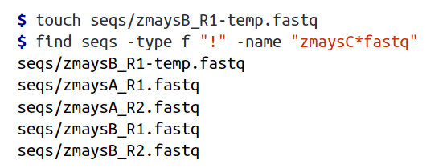</p>
<p>你不想删除或者重命名这个文件，因为你的同事可能需要用到这个文件。因此，最好的办法就是改变你的 find命令。</p>
<figure class="highlight shell"><table><tr><td class="gutter"><pre><span class="line">1</span><br><span class="line">2</span><br><span class="line">3</span><br><span class="line">4</span><br><span class="line">5</span><br></pre></td><td class="code"><pre><span class="line"><span class="meta">$</span><span class="bash"> find seqs -<span class="built_in">type</span> f <span class="string">&quot;!&quot;</span> -name <span class="string">&quot;zmaysC*fastq&quot;</span> -and <span class="string">&quot;!&quot;</span> -name <span class="string">&quot;*-temp*&quot;</span></span></span><br><span class="line">seqs/zmaysA_R1.fastq</span><br><span class="line">seqs/zmaysA_R2.fastq</span><br><span class="line">seqs/zmaysB_R1.fastq</span><br><span class="line">seqs/zmaysB_R2.fastq</span><br></pre></td></tr></table></figure>
<p>注意到在find中，<strong>!</strong> 和 括号必须用引号。</p>
<h3 id="12-2-4-find’s-exec-Running-Commands-on-find’s-Results">12.2.4 find’s -exec: Running Commands on find’s Results</h3>
<p>我们通过 find 来定位文件，通常都是需要对文件进行处理。这一步也可以通过 -exec 选项来实现。</p>
<p>让我们通过一个简单的例子来理解 -exec 如何工作。继续之前的例子，假设一个 messy 的同事创建很多的临时文件。我们试着模拟一下。</p>
<figure class="highlight shell"><table><tr><td class="gutter"><pre><span class="line">1</span><br><span class="line">2</span><br><span class="line">3</span><br><span class="line">4</span><br><span class="line">5</span><br><span class="line">6</span><br><span class="line">7</span><br></pre></td><td class="code"><pre><span class="line"><span class="meta">$</span><span class="bash"> touch zmays&#123;A,C&#125;_R&#123;1,2&#125;-temp.fastq</span></span><br><span class="line"><span class="meta">$</span><span class="bash"> ls</span></span><br><span class="line"><span class="meta">$</span><span class="bash"> ls</span></span><br><span class="line">zmaysA_R1.fastq       zmaysA_R2_temp.fastq  zmaysB_R2.fastq       zmaysC_R1_temp.fastq</span><br><span class="line">zmaysA_R1_temp.fastq  zmaysB_R1.fastq       zmaysB_R2_temp.fastq  zmaysC_R2.fastq</span><br><span class="line">zmaysA_R2.fastq       zmaysB_R1_temp.fastq  zmaysC_R1.fastq       zmaysC_R2_temp.fastq</span><br><span class="line"></span><br></pre></td></tr></table></figure>
<p>假设你的同事允许你删除这些临时文件。一种方式是 <code>rm *-temp.fastq</code>，但是在重要的文件夹中使用通配符来删除文件风险很大。如果你一不小心在 <code>*</code>和 -temp.fastq 之间放了一个空格，由于使用通配符<code>*</code> ，这个文件夹的所有文件均会被删除（可怕）。</p>
<p>我们通过 find 的 -exec 命令更加安全。如果使用 -exec 命令，那么在命令结束的部分添加一个分号是必需的。比如，我们这里我们可以用 find -exec 和 <code>rm -i</code> 来删除中间文件。 <code>rm -i</code> 表示 interactive 。</p>
<figure class="highlight shell"><table><tr><td class="gutter"><pre><span class="line">1</span><br><span class="line">2</span><br><span class="line">3</span><br><span class="line">4</span><br><span class="line">5</span><br><span class="line">6</span><br><span class="line">7</span><br><span class="line">8</span><br></pre></td><td class="code"><pre><span class="line"><span class="meta">$</span><span class="bash"> find . -name <span class="string">&quot;*_temp.fastq&quot;</span> -<span class="built_in">exec</span> rm -i &#123;&#125; \;</span></span><br><span class="line">rm: remove regular empty file ‘./zmaysA_R1_temp.fastq’? y</span><br><span class="line">rm: remove regular empty file ‘./zmaysA_R2_temp.fastq’? y</span><br><span class="line">rm: remove regular empty file ‘./zmaysC_R1_temp.fastq’? y</span><br><span class="line">rm: remove regular empty file ‘./zmaysC_R2_temp.fastq’? y</span><br><span class="line">rm: remove regular empty file ‘./zmaysB_R1_temp.fastq’? y</span><br><span class="line">rm: remove regular empty file ‘./zmaysB_R2_temp.fastq’? y</span><br><span class="line"></span><br></pre></td></tr></table></figure>
<p>通常而言，-exec 选项只用于简单的命令，比如删除文件，更改权限等。对于复杂的任务，xargs 是更好的选择。</p>
<h3 id="12-2-5-xargs-A-Unix-Powertool">12.2.5 xargs: A Unix Powertool</h3>
<p><code>xargs</code> 从标准输入中获取值（以<strong>空格，制表符或换行符</strong>分隔），然后将其作为下一个程序的参数。</p>
<p>让我们重建上面的文件。</p>
<figure class="highlight shell"><table><tr><td class="gutter"><pre><span class="line">1</span><br><span class="line">2</span><br><span class="line">3</span><br><span class="line">4</span><br></pre></td><td class="code"><pre><span class="line"><span class="meta">$</span><span class="bash"> touch zmays&#123;A,C&#125;_R&#123;1,2&#125;-temp.fastq</span></span><br><span class="line"><span class="meta">$</span><span class="bash"> ls</span></span><br><span class="line">zmaysA_R1.fastq       zmaysA_R2.fastq       zmaysB_R1.fastq  zmaysC_R1.fastq       zmaysC_R2.fastq</span><br><span class="line">zmaysA_R1-temp.fastq  zmaysA_R2-temp.fastq  zmaysB_R2.fastq  zmaysC_R1-temp.fastq  zmaysC_R2-temp.fastq</span><br></pre></td></tr></table></figure>
<p>这里我们可以模拟上面删除文件的操作。</p>
<figure class="highlight shell"><table><tr><td class="gutter"><pre><span class="line">1</span><br><span class="line">2</span><br><span class="line">3</span><br><span class="line">4</span><br><span class="line">5</span><br><span class="line">6</span><br></pre></td><td class="code"><pre><span class="line"><span class="meta">$</span><span class="bash"> find . -name <span class="string">&quot;*-temp.fastq&quot;</span></span></span><br><span class="line">./zmaysA_R1-temp.fastq</span><br><span class="line">./zmaysA_R2-temp.fastq</span><br><span class="line">./zmaysC_R1-temp.fastq</span><br><span class="line">./zmaysC_R2-temp.fastq</span><br><span class="line"><span class="meta">$</span><span class="bash"> find . -name <span class="string">&quot;*-temp.fastq&quot;</span> | xargs rm</span></span><br></pre></td></tr></table></figure>
<p>我测试了一下，这里 rm 不能用 -i 选项（提示了信息，但是不能互动，结果也没有删除文件）</p>
<figure class="highlight shell"><table><tr><td class="gutter"><pre><span class="line">1</span><br><span class="line">2</span><br><span class="line">3</span><br><span class="line">4</span><br><span class="line">5</span><br><span class="line">6</span><br></pre></td><td class="code"><pre><span class="line"><span class="meta">$</span><span class="bash"> find . -name <span class="string">&quot;*-temp.fastq&quot;</span> | xargs rm -i</span></span><br><span class="line">rm: remove regular empty file ‘./zmaysA_R1-temp.fastq’? rm: remove regular empty file ‘./zmaysA_R2-temp.fastq’? rm: remove regular empty file ‘./zmaysC_R1-temp.fastq’? rm: remove regular empty file ‘./zmaysC_R2-temp.fastq’? </span><br><span class="line"><span class="meta">$</span><span class="bash"> ls</span></span><br><span class="line">zmaysA_R1.fastq       zmaysA_R2.fastq       zmaysB_R1.fastq  zmaysC_R1.fastq       zmaysC_R2.fastq</span><br><span class="line">zmaysA_R1-temp.fastq  zmaysA_R2-temp.fastq  zmaysB_R2.fastq  zmaysC_R1-temp.fastq  zmaysC_R2-temp.fastq</span><br><span class="line"></span><br></pre></td></tr></table></figure>
<p>实际上，后面的 xargs 选项是将find找到的所有文件切分为参数，然后执行下面命令。</p>
<figure class="highlight shell"><table><tr><td class="gutter"><pre><span class="line">1</span><br></pre></td><td class="code"><pre><span class="line"><span class="meta">$</span><span class="bash"> rm ./zmaysA_R1-temp.fastq ./zmaysA_R2-temp.fa ./zmaysC_R1-temp.fastq ./zmaysC_R2-temp.fa</span></span><br></pre></td></tr></table></figure>
<p>像这种将所有文件直接当成n个参数传给后面的命令，适合像rm, touch, mkdir 这种可以处理多个参数的命令。</p>
<p>但是，很多命令一次只能接受一个参数。我们可以通过 xargs 的 -n 选项来设置一次传递几个参数。例如，我们可以运行 rm 命令 4 次（一个文件一次），命令如下：</p>
<figure class="highlight shell"><table><tr><td class="gutter"><pre><span class="line">1</span><br></pre></td><td class="code"><pre><span class="line"><span class="meta">$</span><span class="bash"> find . -name <span class="string">&quot;*-temp.fastq&quot;</span> | xargs -n 1 rm</span></span><br></pre></td></tr></table></figure>
<p>如果我们想在删除文件前，查看find 找到的文件名。我们可以这么写：</p>
<figure class="highlight shell"><table><tr><td class="gutter"><pre><span class="line">1</span><br><span class="line">2</span><br><span class="line">3</span><br><span class="line">4</span><br><span class="line">5</span><br><span class="line">6</span><br><span class="line">7</span><br></pre></td><td class="code"><pre><span class="line"><span class="meta">$</span><span class="bash"> find . -name <span class="string">&quot;*-temp.fastq&quot;</span> &gt; files-to-delete.tx</span></span><br><span class="line"><span class="meta">$</span><span class="bash"> cat files-to-delete.tx</span></span><br><span class="line">./zmaysA_R1-temp.fastq</span><br><span class="line">./zmaysA_R2-temp.fastq</span><br><span class="line">./zmaysC_R1-temp.fastq</span><br><span class="line">./zmaysC_R2-temp.fastq</span><br><span class="line"><span class="meta">$</span><span class="bash"> cat files-to-delete.txt | xargs rm</span></span><br></pre></td></tr></table></figure>
<p>另一个使用 xargs 的技巧在于将最终用到的命令行写入一个Bash 脚本中。比如上面的例子中，我们我们使用 echo 命令。例如</p>
<figure class="highlight shell"><table><tr><td class="gutter"><pre><span class="line">1</span><br><span class="line">2</span><br><span class="line">3</span><br><span class="line">4</span><br><span class="line">5</span><br><span class="line">6</span><br></pre></td><td class="code"><pre><span class="line"><span class="meta">$</span><span class="bash"> find . -name <span class="string">&quot;*-temp.fastq&quot;</span> | xargs -n 1 <span class="built_in">echo</span> <span class="string">&quot;rm -i&quot;</span> &gt; delete-temp.s</span></span><br><span class="line"><span class="meta">$</span><span class="bash"> cat delete-temp.s</span></span><br><span class="line">rm -i ./zmaysA_R1-temp.fastq</span><br><span class="line">rm -i ./zmaysA_R2-temp.fastq</span><br><span class="line">rm -i ./zmaysC_R1-temp.fastq</span><br><span class="line">rm -i ./zmaysC_R2-temp.fastq</span><br></pre></td></tr></table></figure>
<p>这种方式让我们可以互动式地删除文件（之前试过了直接用xargs不行），我们可以运行上面生产的脚本：</p>
<figure class="highlight shell"><table><tr><td class="gutter"><pre><span class="line">1</span><br><span class="line">2</span><br><span class="line">3</span><br><span class="line">4</span><br><span class="line">5</span><br></pre></td><td class="code"><pre><span class="line"><span class="meta">$</span><span class="bash"> bash delete-temp.sh</span></span><br><span class="line">remove ./zmaysA_R1-temp.fastq? y</span><br><span class="line">remove ./zmaysA_R2-temp.fastq? y</span><br><span class="line">remove ./zmaysC_R1-temp.fastq? y</span><br><span class="line">remove ./zmaysC_R2-temp.fastq? y</span><br></pre></td></tr></table></figure>
<h4 id="playing-it-safe-with-find-and-xargs">playing it safe with find and xargs</h4>
<p>由于xargs 也会将空格视为分隔符，因此如果<strong>文件名中包含空格</strong>，这个文件名就会被xargs视为两个文件，造成错误。</p>
<p>避免办法：</p>
<ol>
<li>文件命名一定要规范</li>
<li>find 可以通过 -print0 选项，配合 xargs 的 -0 选项，使得文件之间不再以换行符隔开，而是以<strong>空字符</strong>隔开，这样即便文件名不规范，也可以正常运行</li>
</ol>
<blockquote>
<p>-print0<br>
True; print the full file name on the standard output, followed by a null character (instead of the newline character that -print uses).  This allows file names that contain newlines or other types of white space to be correctly interpreted by programs that process the find output.  This option corresponds to the -0 option of xargs.</p>
</blockquote>
<p>例如</p>
<figure class="highlight shell"><table><tr><td class="gutter"><pre><span class="line">1</span><br></pre></td><td class="code"><pre><span class="line"><span class="meta">$</span><span class="bash"> find . -name <span class="string">&quot;samples [AB].txt&quot;</span> -print0 | xargs -0 r</span></span><br></pre></td></tr></table></figure>
<p>作者建议所有的 find - xargs 都加上这两个选项，我倒觉得没必要，文件名就应该规范，报错并不是坏事。</p>
<h3 id="12-2-6-Using-xargs-with-Replacement-Strings-to-Apply-Commands-to-Files">12.2.6 Using xargs with Replacement Strings to Apply Commands to Files</h3>
<p>有些软件通过选项来传参，类似于 <code>program --in file.txt --out-file out.txt</code>；其他一些软件可能通过位置参数来传参，类似于 <code>program arg1 arg2</code> 。xargs 的 <code>-I</code> 选项可以实现这一点，默认使用 {} 代替参数，但是注意<strong>只能传入一个参数</strong>。</p>
<p>让我们先看一个例子，假设我们有一个假想的程序 fastq_stat ，它需要一个输入文件通过选项 --in 传入，然后会收集 FASTQ的统计信息，最后写入 --out 指定的输出文件，输出文件名称由输入文件确定。我们可以通过 find, xargs 和 basename 来实现这一点。第一步通过 find 找到你需要处理的文件，然后利用 xargs 和 basename 来提取文件名。</p>
<figure class="highlight shell"><table><tr><td class="gutter"><pre><span class="line">1</span><br><span class="line">2</span><br><span class="line">3</span><br><span class="line">4</span><br><span class="line">5</span><br><span class="line">6</span><br><span class="line">7</span><br></pre></td><td class="code"><pre><span class="line"><span class="meta">$</span><span class="bash"> find . -name <span class="string">&quot;*.fastq&quot;</span> | xargs basename -s <span class="string">&quot;.fastq&quot;</span></span></span><br><span class="line">zmaysA_R1</span><br><span class="line">zmaysA_R2</span><br><span class="line">zmaysB_R1</span><br><span class="line">zmaysB_R2</span><br><span class="line">zmaysC_R1</span><br><span class="line">zmaysC_R2</span><br></pre></td></tr></table></figure>
<p>然后我们想运行 <code>fastq_stat  --in  file.fastq  --out  ../summaries/file.txt</code> ，不过要将 file 替换为上面提取的 basename。我们的做法是后面再接一个 xargs 命令。</p>
<figure class="highlight shell"><table><tr><td class="gutter"><pre><span class="line">1</span><br></pre></td><td class="code"><pre><span class="line"><span class="meta">$</span><span class="bash"> find . -name <span class="string">&quot;*.fastq&quot;</span> | xargs basename -s <span class="string">&quot;.fastq&quot;</span> | xargs -I&#123;&#125; fastq_stat --<span class="keyword">in</span> &#123;&#125;.fastq --out ../summaries/&#123;&#125;.txt</span></span><br></pre></td></tr></table></figure>
<p>这种将 xargs 和 basename 联合使用的方法是一种很强大的范式，用于传参，并使得输出文件的名称根据输入文件确定。</p>
<h3 id="12-2-7-xargs-and-Parallelization">12.2.7 xargs and Parallelization</h3>
<p>xargs 可以创建<strong>有限</strong>数目的<strong>进程</strong>（processes），用于平行计算。这里强调有限数目，是说相对于bash的 for 循环，xargs 具有优势。我们可以通过 Bash 的 for 循环发起无数个后台进程，例如下面的语句，有多少个FASTQ 文件，就发起了多少个后台进程，这会占用很多的服务器资源。即便你是服务器唯一的使用者，但所有程序都可以从硬盘中进行读写，也可能发生 瓶颈。</p>
<figure class="highlight shell"><table><tr><td class="gutter"><pre><span class="line">1</span><br><span class="line">2</span><br><span class="line">3</span><br></pre></td><td class="code"><pre><span class="line">for filename in *.fastq; do</span><br><span class="line">	program &quot;$filename&quot; &amp;</span><br><span class="line">done</span><br></pre></td></tr></table></figure>
<p>因此，我们想要限制同时运行的进程数目。xargs 可以 通过 <code>-P num</code> 来设定进程数目。</p>
<p>让我们看一个简单的例子，上面运行我们的假想软件 fastq_stat ，现在我们采用6个进程同时计算。这里不需要对第一个xargs采用多进程，因为这一步非常快。</p>
<figure class="highlight shell"><table><tr><td class="gutter"><pre><span class="line">1</span><br></pre></td><td class="code"><pre><span class="line"><span class="meta">$</span><span class="bash"> find . -name <span class="string">&quot;*.fastq&quot;</span> | xargs basename -s <span class="string">&quot;.fastq&quot;</span> | xargs -P 6 -I&#123;&#125; fastq_stat --<span class="keyword">in</span> &#123;&#125;.fastq --out ../summaries/&#123;&#125;.txt</span></span><br></pre></td></tr></table></figure>
<h4 id="xargs-Pipes-and-Redirects">xargs, Pipes, and Redirects</h4>
<p>下面这段话没看懂，貌似大概的意思是说 xargs 没法直接使用重定向。</p>
<blockquote>
<p>One  stumbling  block  beginners  frequently  encounter  is  trying  touse  pipes  and  redirects  with  xargs.  This  won’t  work,  as  the  shell process  that  reads  your  xargs  command  will  interpret  pipes  and redirects as what to do with xarg’s output, not as part of the command  run  by  xargs.</p>
</blockquote>
<p>一个简单的解决办法是创建一个一次处理一个文件的简单的Bash 脚本，然后使用 xargs 运行这个脚本。</p>
<p>比如，我们先写一个简单的脚本，命名为 <a target="_blank" rel="noopener" href="http://script.sh">script.sh</a></p>
<figure class="highlight shell"><table><tr><td class="gutter"><pre><span class="line">1</span><br><span class="line">2</span><br><span class="line">3</span><br><span class="line">4</span><br><span class="line">5</span><br><span class="line">6</span><br></pre></td><td class="code"><pre><span class="line"><span class="meta">#</span><span class="bash">!/bin/bash</span></span><br><span class="line">set -e</span><br><span class="line">set -u</span><br><span class="line">set -o pipefail</span><br><span class="line">sample_name=$(basename -s &quot;.fastq&quot; &quot;$1&quot;)</span><br><span class="line">some_program $&#123;sample_name&#125;.fastq | another_program &gt;  $&#123;sample_name&#125;-results.txt</span><br></pre></td></tr></table></figure>
<p>然后，运行下面的命令。通过 <code>-n 1</code> 限定每次传递一个参数。</p>
<figure class="highlight shell"><table><tr><td class="gutter"><pre><span class="line">1</span><br></pre></td><td class="code"><pre><span class="line"><span class="meta">$</span><span class="bash"> find . -name <span class="string">&quot;*.fastq&quot;</span> | xargs -n 1 -P 4 bash script.sh</span></span><br></pre></td></tr></table></figure>
<p>xargs 适合比较简单的命令。如果命令比较复杂，可以使用 <a target="_blank" rel="noopener" href="http://www.gnu.org/software/parallel/">GNU Parallel</a>。 它可以说是 xargs 的扩展版，解决了 xargs 的一些局限。例如，GNU Parallel 可以使用重定向，可以通过一个简写（{/.}）来提取 basename (这个估计是去除了后缀的)。我们可以通过 GNU Parallel 写出一个简短而又强大的命令：</p>
<figure class="highlight shell"><table><tr><td class="gutter"><pre><span class="line">1</span><br></pre></td><td class="code"><pre><span class="line"><span class="meta">$</span><span class="bash"> find . -name <span class="string">&quot;*.fastq&quot;</span> | parallel --max-procs=6 <span class="string">&#x27;program &#123;/.&#125; &gt; &#123;/.&#125;-out.txt&#x27;</span></span></span><br></pre></td></tr></table></figure>
<h2 id="12-3-Make-and-Makefiles-Another-Option-for-Pipelines">12.3 Make and Makefiles: Another Option for Pipelines</h2>
<p>Make 用于生成 <em>makefilies</em> (采用他们自己的 makefile 语言)。Make 适用于编译（compile）软件，这是一个很复杂的过程，因为编译一个文件需要确保这个文件的所有附属文件已被编译或可用。就像 SQL ，</p>
<p>makefile language 是陈述性的（declarative）— 不像是 Bash scripts，makefiles 不会按顺序从头跑到尾。相反，makefiles 是按照一系列规则构建的，每个规则都有三部分：the target, the prerequisites, the recipe。每个  recipe 是用于 build a target 的一系列命令……（看不懂）</p>
<blockquote>
<p>The  amazing  ingenuity  of  Make  is  that  the  program  figures  outhow to use all rules to build files for you from the prerequisites and targets.</p>
</blockquote>
<p>让我们看一个简单的例子 ，我们先写一个简单的流程，从网上下载文件然后汇总信息。</p>
<p>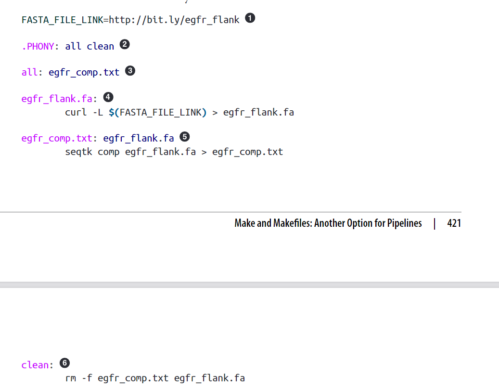</p>
<ol>
<li>我们像Bash 脚本中一样定义了一个变量。</li>
</ol>
<p>后面都没太看懂，不过好像这里的格式是</p>
<figure class="highlight shell"><table><tr><td class="gutter"><pre><span class="line">1</span><br><span class="line">2</span><br></pre></td><td class="code"><pre><span class="line">target:  prerequisites</span><br><span class="line">recipe</span><br></pre></td></tr></table></figure>
<ul>
<li>target : 目标文件</li>
<li>prerequisites ：附属文件</li>
<li>recipe : 生成target 文件的命令行</li>
</ul>
<p>我们通过<strong>make命令运行上面生成的Makefile</strong>（这里文件名定死了，只能是Makefile）。像上面的生成的文件，我们可以运行命令 <code>make all</code> ，这里 <code>all</code> 参数指定 make 应该首先从 all target 开始。然后，make 命令会首先在当前目录查找文件名为 <strong>Makefile</strong> 的文件，加载这个文件，然后从 target all 开始运行。</p>
<p>实际运行逻辑如下：</p>
<figure class="highlight shell"><table><tr><td class="gutter"><pre><span class="line">1</span><br><span class="line">2</span><br><span class="line">3</span><br></pre></td><td class="code"><pre><span class="line"><span class="meta">$</span><span class="bash"> make all</span></span><br><span class="line">curl -L http://bit.ly/egfr_flank &gt; egfr_flank.fa #第一步</span><br><span class="line">seqtk comp egfr_flank.fa &gt; egfr_comp.txt #第二步</span><br></pre></td></tr></table></figure>
<p>我的理解是：从all 开始（3），根据附属文件跳到（5）, (5) 的附属文件是（4），（4）没有附属文件，那就先跑 （4），顺序就是 (4) - (5) - (3) 。</p>
<p>make 的一个特别有用的功能是，它只会生成没有附属文件/附属文件已<strong>修改</strong>的目标文件。这很有用：如果你有一个很长很复杂的makefile文件，你修改了一个文件，重跑 make 命令只会重新运行附属文件是这个修改的文件的target 的命令行。</p>
<p>比如，你现在重新再跑一遍make all，因为所有的文件均未改变，所以这里啥也没做。</p>
<figure class="highlight shell"><table><tr><td class="gutter"><pre><span class="line">1</span><br><span class="line">2</span><br></pre></td><td class="code"><pre><span class="line"><span class="meta">$</span><span class="bash"> make all</span></span><br><span class="line">make: Nothing to be done for `all&#x27;.</span><br></pre></td></tr></table></figure>
<p>现在我们创建一个新的 FASTQ 文件。因为 egfr_flank.fa 是 egfr_comp.txt 的附属文件，因此它的语句会重新运行。</p>
<figure class="highlight shell"><table><tr><td class="gutter"><pre><span class="line">1</span><br><span class="line">2</span><br><span class="line">3</span><br></pre></td><td class="code"><pre><span class="line"><span class="meta">$</span><span class="bash"> touch egfr_flank.fa</span></span><br><span class="line"><span class="meta">$</span><span class="bash"> make all</span></span><br><span class="line">seqtk comp egfr_flank.fa &gt; egfr_comp.txt</span><br></pre></td></tr></table></figure>
<p>Make 语句如果写复杂了，会很晦涩难懂。但是还是可以用于简单的任务。（那问题来了，简单的任务我用得着写Make语句吗？）</p>
<h1>13 Out-of-Memory Approaches:Tabix and SQLite</h1>
<p>当数据量超出<strong>内存的上限</strong>时，有两个工具可以用：Tabix 和 SQLite databases。</p>
<h2 id="13-1-Fast-Access-to-Indexed-Tab-Delimited-Fileswith-BGZF-and-Tabix">13.1 Fast Access to Indexed Tab-Delimited Fileswith BGZF and Tabix</h2>
<p>BGZF 和 Tabix 解决了处理基因组数据的重要问题。</p>
<p>下面的话没看懂。大概意思是说，如果想要获取基因组上某个范围的数据，首先由于基因组数据太大，可能不能全部放进内存中，还有一部分数据可能要从速度很慢的磁盘中读取；第二，基本是使用关系型数据库，如果检索三百万条条目，速度也是很慢的。这里即将提到的工具，是专门用于处理这个问题的，可以对tab分隔的基因组数据进行快速查找。</p>
<p>在基因组比对的章节，我们看到了如何排序和 indexed BAM 文件，可以快速找到某个特定区域的比对结果，基于一种特定的压缩格式，称为 BGZF （Blocked GUN Zip Format），使用了gzip 来压缩。但是，gzip 一般是直接压缩整个文件，BGZF 文件是分区块压缩的。这些区块提供一个新的特征：我们可以直接解压我们想要的区块，而不用解压整个文件。</p>
<p>联合使用 Block compression  和 indexing 使得我们可以通过 samtools view 快速检索 alignments。</p>
<p>在这一章节，我们会用到 BGZF 压缩，还有一个命令行工具 Tabix，来提供对很多 tab 分隔的基因组格式数据的快速检索，包括 GFF, BED, VCF。</p>
<p>为了使用 Tabix 来检索与某个 query region 重叠的行，我们首先准备包含了基因组区域的文件，通常包括以下步骤：</p>
<ol>
<li>通过染色体和物理位置进行排序</li>
<li>使用 bgzip 命令来使用 BGZF 压缩</li>
<li>使用 tabix 来 index file。</li>
</ol>
<p>bgzip 和 tabix 都是 <strong>Samtools</strong> 中的命令。</p>
<h3 id="13-1-1-Compressing-Files-for-Tabix-with-Bgzip">13.1.1 Compressing Files for Tabix with Bgzip</h3>
<p>以 <em>Mus_musculus.GRCm38.75.gtf.gz</em> 为例，我们需要先解压，然后排序，再用 bgzip 压缩。我们可以通过一个pipeline 完成这些操作。</p>
<p>但是有一点需要注意，由于 GTF 文件中含有 metadata, 不能直接使用sort</p>
<figure class="highlight shell"><table><tr><td class="gutter"><pre><span class="line">1</span><br><span class="line">2</span><br><span class="line">3</span><br><span class="line">4</span><br><span class="line">5</span><br><span class="line">6</span><br><span class="line">7</span><br></pre></td><td class="code"><pre><span class="line"><span class="meta">$</span><span class="bash"> zcat Mus_musculus.GRCm38.75.gtf.gz | head -n5</span></span><br><span class="line"><span class="meta">#</span><span class="bash">!genome-build GRCm38.p2</span></span><br><span class="line"><span class="meta">#</span><span class="bash">!genome-version GRCm38</span></span><br><span class="line"><span class="meta">#</span><span class="bash">!genome-date 2012-01</span></span><br><span class="line"><span class="meta">#</span><span class="bash">!genome-build-accession NCBI:GCA_000001635.4</span></span><br><span class="line"><span class="meta">#</span><span class="bash">!genebuild-last-updated 2013-09</span></span><br><span class="line"></span><br></pre></td></tr></table></figure>
<p>这里他说可以用到 169页教的 subshell 技巧（好吧，我已经忘了）</p>
<figure class="highlight shell"><table><tr><td class="gutter"><pre><span class="line">1</span><br></pre></td><td class="code"><pre><span class="line"><span class="meta">$</span><span class="bash"> (zgrep <span class="string">&quot;^#&quot;</span> Mus_musculus.GRCm38.75.gtf.gz; zgrep -v <span class="string">&quot;^#&quot;</span> Mus_musculus.GRCm38.75.gtf.gz | sort -k1,1 -k4,4n) | bgzip &gt; Mus_musculus.GRCm38.75.gtf.bgz</span></span><br></pre></td></tr></table></figure>
<h3 id="13-1-2-Indexing-Files-with-Tabix">13.1.2 Indexing Files with Tabix</h3>
<p>完成了 BGZF 压缩后，我们可以使用 tabix 命令行工具来进行 index。使用 tabix 来 indexing 标准的生信格式是很简单的，tabix 有对于 GTF/GFF, SAM, VCF, PSL 等格式的选项。我们能通过 -p 参数来index 上述格式的数据。因此，我们可以对上面生成给的 BGZF 文件进行 index</p>
<figure class="highlight shell"><table><tr><td class="gutter"><pre><span class="line">1</span><br></pre></td><td class="code"><pre><span class="line"><span class="meta">$</span><span class="bash"> tabix -p gff Mus_musculus.GRCm38.75.gtf.bgz</span></span><br></pre></td></tr></table></figure>
<p>我们注意到，tabix 会生成一个后缀为 tbi 的文件。</p>
<figure class="highlight shell"><table><tr><td class="gutter"><pre><span class="line">1</span><br><span class="line">2</span><br><span class="line">3</span><br></pre></td><td class="code"><pre><span class="line"><span class="meta">$</span><span class="bash"> ls *tbi</span></span><br><span class="line">Mus_musculus.GRCm38.75.gtf.bgz.tbi</span><br><span class="line"></span><br></pre></td></tr></table></figure>
<h3 id="13-1-3-Using-Tabix">13.1.3 Using Tabix</h3>
<p>一旦我们的 tab 分隔的文件采用 Tabix 进行index 了，我们就可以使用 tabix 命令来进行检索。例如，我们想查找在 16号染色体 23,146,536  to 23,158,028 区间的 features。</p>
<figure class="highlight shell"><table><tr><td class="gutter"><pre><span class="line">1</span><br><span class="line">2</span><br><span class="line">3</span><br><span class="line">4</span><br><span class="line">5</span><br></pre></td><td class="code"><pre><span class="line"><span class="meta">$</span><span class="bash"> tabix Mus_musculus.GRCm38.75.gtf.bgz 16:23146536-23158028 | head -n3</span></span><br><span class="line">16      protein_coding  exon    23146536        23146641        .       +       .       gene_id &quot;ENSMUSG00000022878&quot;; transcript_id &quot;ENSMUST00000023593&quot;; exon_number &quot;1&quot;; gene_name &quot;Adipoq&quot;; gene_source &quot;ensembl_havana&quot;; gene_biotype &quot;protein_coding&quot;; transcript_name &quot;Adipoq-001&quot;; transcript_source &quot;ensembl_havana&quot;; tag &quot;CCDS&quot;; ccds_id &quot;CCDS28075&quot;; exon_id &quot;ENSMUSE00000131550&quot;;</span><br><span class="line">16      protein_coding  gene    23146536        23158028        .       +       .       gene_id &quot;ENSMUSG00000022878&quot;; gene_name &quot;Adipoq&quot;; gene_source &quot;ensembl_havana&quot;; gene_biotype &quot;protein_coding&quot;;</span><br><span class="line">16      protein_coding  transcript      23146536        23158028        .       +       .       gene_id &quot;ENSMUSG00000022878&quot;; transcript_id &quot;ENSMUST00000023593&quot;; gene_name &quot;Adipoq&quot;; gene_source &quot;ensembl_havana&quot;; gene_biotype &quot;protein_coding&quot;; transcript_name &quot;Adipoq-001&quot;; transcript_source &quot;ensembl_havana&quot;; tag &quot;CCDS&quot;; ccds_id &quot;CCDS28075&quot;;</span><br><span class="line"></span><br></pre></td></tr></table></figure>
<p>我们可以重定向到一个文件中，或者后面接别的命令。例如我们可以用 awk 来提取含有 “exon&quot; 字段的 feature （？这个我也不知道，还是忘了）</p>
<figure class="highlight shell"><table><tr><td class="gutter"><pre><span class="line">1</span><br><span class="line">2</span><br><span class="line">3</span><br><span class="line">4</span><br></pre></td><td class="code"><pre><span class="line"><span class="meta">$</span><span class="bash"> tabix Mus_musculus.GRCm38.75.gtf.bgz 16:23146536-23158028  | awk <span class="string">&#x27;$3 ~ /exon/ &#123;print&#125;&#x27;</span></span></span><br><span class="line">16      protein_coding  exon    23146536        23146641        .       +       .       gene_id &quot;ENSMUSG00000022878&quot;; transcript_id &quot;ENSMUST00000023593&quot;; exon_number &quot;1&quot;; gene_name &quot;Adipoq&quot;; gene_source &quot;ensembl_havana&quot;; gene_biotype &quot;protein_coding&quot;; transcript_name &quot;Adipoq-001&quot;; transcript_source &quot;ensembl_havana&quot;; tag &quot;CCDS&quot;; ccds_id &quot;CCDS28075&quot;; exon_id &quot;ENSMUSE00000131550&quot;;</span><br><span class="line">16      protein_coding  exon    23146646        23146734        .       +       .       gene_id &quot;ENSMUSG00000022878&quot;; transcript_id &quot;ENSMUST00000171309&quot;; exon_number &quot;1&quot;; gene_name &quot;Adipoq&quot;; gene_source &quot;ensembl_havana&quot;; gene_biotype &quot;protein_coding&quot;; transcript_name &quot;Adipoq-002&quot;; transcript_source &quot;havana&quot;; exon_id &quot;ENSMUSE00000875966&quot;; tag &quot;cds_end_NF&quot;; tag &quot;mRNA_end_NF&quot;;</span><br><span class="line">……</span><br></pre></td></tr></table></figure>
<h2 id="13-2-Introducing-Relational-Databases-Through-SQLite">13.2 Introducing Relational Databases Through SQLite</h2>
<p>很多标准的生信数据格式（GTF/GFF, BED, VCF/BCF, SAM/BAM）其实都是将表格式的数据存储在文本文件中。而普通文本文件内部没有结果，和其他表格内容也没有关联。当我们能使用 unix’s join 命令，还有 R’s match() 和 merge() 函数来合并多个表格的内容，这些文件本身却无法建立表格之间的联系。</p>
<p>这里可以采用关系型数据库。在这一章节中，我们可以学习一个关系型数据库管理系统，称为 SQLite。</p>
<p>这里使用 SQLite 的理由是，它不需要任何启动 ，你可以用最快的时间进行检索，花最少的时间用在 configuring 和 administrating database。与之相对，其他的数据库系统，比如 MySQL 和  PostgreSQL 仅仅是启动和运行就需要很多的配置工作。虽然 SQLite 没有大型数据库系统强大，但是它对于GB级别的数据库运行良好。</p>
<p>如果想在生信分析中，建立一个关系型数据库管理系统，SQLite 就够了。</p>
<h3 id="13-2-1-When-to-Use-Relational-Databases-in-Bioinformatics">13.2.1 When to Use Relational Databases in Bioinformatics</h3>
<p>事实上，你需要和数据库打交道的需求并不高，理由有两个。第一，很多大型生信数据库提供了用户友好的图形化界面，用于获取数据。第二，对于很多生信任务，采用关系型数据库并不是一个最佳方案。</p>
<p><strong>关系型数据库是设计用来存储和管理多个表中的记录，通过用户需要添加/更新新记录，并进行检索。</strong></p>
<p>为了让你知道什么时候适合使用关系型数据，我们可以比较处理两种不同类型的数据的情况：一套 gene models ，一套测序的 alignment data</p>
<h4 id="Adding-and-Merging-Data">Adding and Merging Data</h4>
<p>假设我们需要合并一个新的 gene models (这是啥?) 进入到现存的 gene models 的数据库中。简单地合并是不合适地，因为我们可以会导致 exons, gene identifiers, gene names 等出现重复。这种数据库合并前需要判断重复。</p>
<p>相反，当我们合并两个 alignment files，我们可以直接合并，不用关心数据结构和一致性。因为每个比对结果都是特定的某个实验结果。也就是说，alignment data 的特性使它没有采用特殊的merge命令的需求。</p>
<h4 id="Updating-Data">Updating Data</h4>
<p>假设你的一个同事运行了一个新版本的 gene finding software。处理了一些数据后，你生成不同于之前的 gene models。经过了仔细的检查后，你发现新的 gene models 更好，然后你想将所有原来的 gene models 更新为 new models’ coordinates。就像是 merging data, 这种更新操作在数据库中更简单。</p>
<p>整个没看懂</p>
<h4 id="Querying-data">Querying data</h4>
<blockquote>
<p>irst,  SQL  acts  as  a  language  you  can  use  to  specify  anytype of query. Second, unlike Python and R, SQL is a declarative language, mean‐ing  you  state  what  you  want,  not  how  to  get  it  (the  RDBMS  implements  this)</p>
</blockquote>
<p>但是通过 samtools view 对 indexed BAM file 进行检索很快，比你先把数据导入到数据库中，再使用SQL 检索快得多。</p>
<p>我感觉，作者的意思大概就是说在这里，数据库的操作基本用不上。数据库适用于<strong>数据量较小</strong>，<strong>整理好</strong>（refined）的数据。</p>
<h3 id="13-2-2-Installing-SQLite">13.2.2 Installing SQLite</h3>
<h3 id="13-2-3-Exploring-SQLite-Databases-with-the-Command-Line-Interface">13.2.3 Exploring SQLite Databases with the Command-Line Interface</h3>
<p>我们先以 <em>gwascat.db</em> 作为一个例子数据库。这是一个 SQLite 数据库，包括了GWAS的东西。</p>
<p>可以通过下面的命令互动式操作。</p>
<figure class="highlight plain"><table><tr><td class="gutter"><pre><span class="line">1</span><br><span class="line">2</span><br><span class="line">3</span><br><span class="line">4</span><br><span class="line">5</span><br><span class="line">6</span><br><span class="line">7</span><br><span class="line">8</span><br><span class="line">9</span><br><span class="line">10</span><br><span class="line">11</span><br><span class="line">12</span><br><span class="line">13</span><br></pre></td><td class="code"><pre><span class="line">sqlite&gt; .tables #查看表</span><br><span class="line">gwascat</span><br><span class="line"></span><br><span class="line">sqlite&gt; .schema #查看表和表结构</span><br><span class="line">CREATE TABLE gwascat(</span><br><span class="line">id integer PRIMARY KEY NOT NULL,</span><br><span class="line">dbdate text,</span><br><span class="line">pubmedid integer,</span><br><span class="line">author text,</span><br><span class="line">date text,</span><br><span class="line">journal text,</span><br><span class="line"></span><br><span class="line">sqlite&gt; .exit #退出</span><br></pre></td></tr></table></figure>
<p>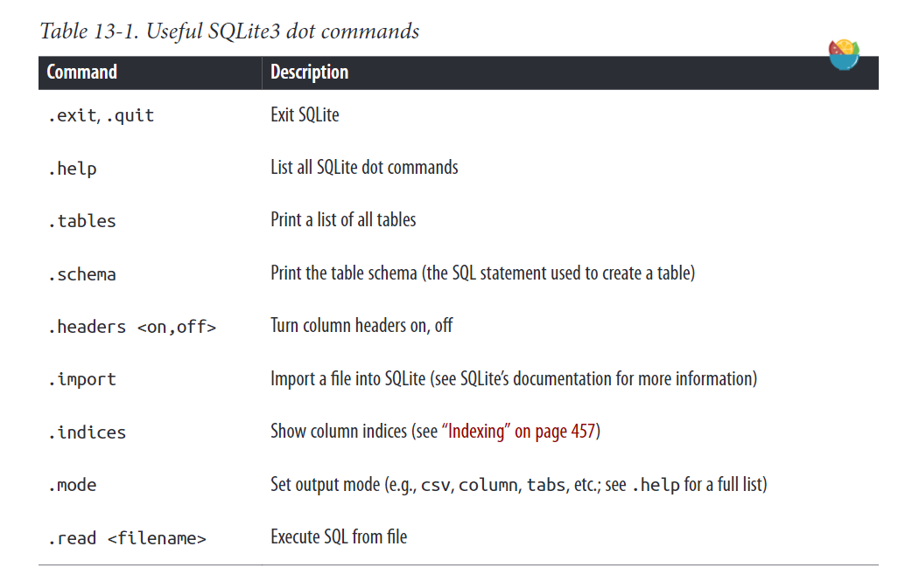</p>
<p>sqlite 每一列允许有多种数据类型，但是会有一个推荐的数据类型，而且会像R语言一样尽可能地转成推荐的数据类型。</p>
<p>总共有5种数据类型：</p>
<ul>
<li>text</li>
<li>integer</li>
<li>real</li>
<li>NULL，used for missing data, or no value</li>
<li>BLOB, which stands for binary large object, and stores any type of object as bytes</li>
</ul>
<h3 id="13-2-4-Querying-Out-Data-The-Almighty-SELECT-Command">13.2.4 Querying Out Data: The Almighty SELECT Command</h3>
<p>SELECT 最简单的用法，所有语句必须以<strong>分号</strong>结束。</p>
<figure class="highlight shell"><table><tr><td class="gutter"><pre><span class="line">1</span><br></pre></td><td class="code"><pre><span class="line"><span class="meta">sqlite&gt;</span><span class="bash"> SELECT * FROM gwascat;</span></span><br></pre></td></tr></table></figure>
<p>如果你输入命令的时候输入错误，你不能用 ctrl+c，可以用 ctrl + u 清空输入的所有代码。但是如果已经开始运行了，你可以输入一个错误的指定（以分号结束）让它报错（测试过了，直接输入一个分号就行）。</p>
<p>你也可以直接使用命令行的方式，可以通过 -separator 指定输出的分隔符（“,” for CSV , “\t” ）</p>
<figure class="highlight shell"><table><tr><td class="gutter"><pre><span class="line">1</span><br><span class="line">2</span><br><span class="line">3</span><br></pre></td><td class="code"><pre><span class="line"><span class="meta">$</span><span class="bash"> sqlite3 gwascat.db <span class="string">&quot;SELECT * FROM gwascat&quot;</span> &gt; results.txt</span></span><br><span class="line"><span class="meta">$</span><span class="bash"> head -n 1 results.txt</span></span><br><span class="line">1|2014-08-02|24388013|Ferreira MA|2013-12-30|J Allergy Clin Immunol|http://www.ncbi.nlm.nih.gov/pubmed/24388013|Genome-wide association analysis identifies 11 </span><br></pre></td></tr></table></figure>
<h4 id="Limiting-results-with-LIMIT">Limiting results with LIMIT</h4>
<p>LIMIT 限制输出的行数。</p>
<p>但是，不像存储在文件中顺序是固定的，但是<strong>数据库里的行的顺序是不固定的</strong>。</p>
<figure class="highlight shell"><table><tr><td class="gutter"><pre><span class="line">1</span><br><span class="line">2</span><br><span class="line">3</span><br><span class="line">4</span><br></pre></td><td class="code"><pre><span class="line"><span class="meta">sqlite&gt;</span><span class="bash"> SELECT * FROM gwascatLIMIT 2;</span></span><br><span class="line">id|dbdate|pubmedid|author|date|journal| [...]</span><br><span class="line">1|08/02/2014|24388013|Ferreira MA|12/30/2013|J Allergy Clin Immunol| [...]</span><br><span class="line">2|08/02/2014|24388013|Ferreira MA|12/30/2013|J Allergy Clin Immunol| [...]</span><br></pre></td></tr></table></figure>
<h4 id="Selecting-columns-with-SELECT">Selecting columns with SELECT</h4>
<figure class="highlight shell"><table><tr><td class="gutter"><pre><span class="line">1</span><br><span class="line">2</span><br><span class="line">3</span><br><span class="line">4</span><br><span class="line">5</span><br><span class="line">6</span><br><span class="line">7</span><br><span class="line">8</span><br></pre></td><td class="code"><pre><span class="line"><span class="meta">sqlite&gt;</span><span class="bash"> SELECT trait, chrom, position, strongest_risk_snp, pvalue FROM gwascat LIMIT 5</span></span><br><span class="line">   ...&gt; ;</span><br><span class="line">Asthma and hay fever|6|32658824|rs9273373|4.0e-14</span><br><span class="line">Asthma and hay fever|4|38798089|rs4833095|5.0e-12</span><br><span class="line">Asthma and hay fever|5|111131801|rs1438673|3.0e-11</span><br><span class="line">Asthma and hay fever|2|102350089|rs10197862|4.0e-11</span><br><span class="line">Asthma and hay fever|17|39966427|rs7212938|4.0e-10</span><br><span class="line"></span><br></pre></td></tr></table></figure>
<p>改一下设置，显示更清晰</p>
<figure class="highlight shell"><table><tr><td class="gutter"><pre><span class="line">1</span><br><span class="line">2</span><br><span class="line">3</span><br><span class="line">4</span><br><span class="line">5</span><br><span class="line">6</span><br><span class="line">7</span><br><span class="line">8</span><br><span class="line">9</span><br><span class="line">10</span><br><span class="line">11</span><br></pre></td><td class="code"><pre><span class="line"><span class="meta">sqlite&gt;</span><span class="bash"> .header on</span></span><br><span class="line"><span class="meta">sqlite&gt;</span><span class="bash"> .mode column</span></span><br><span class="line"><span class="meta">sqlite&gt;</span><span class="bash"> SELECT trait, chrom, position, strongest_risk_snp, pvalue FROM gwascat LIMIT 5;</span></span><br><span class="line">trait                 chrom  position   strongest_risk_snp  pvalue</span><br><span class="line">--------------------  -----  ---------  ------------------  -------</span><br><span class="line">Asthma and hay fever  6      32658824   rs9273373           4.0e-14</span><br><span class="line">Asthma and hay fever  4      38798089   rs4833095           5.0e-12</span><br><span class="line">Asthma and hay fever  5      111131801  rs1438673           3.0e-11</span><br><span class="line">Asthma and hay fever  2      102350089  rs10197862          4.0e-11</span><br><span class="line">Asthma and hay fever  17     39966427   rs7212938           4.0e-10</span><br><span class="line"></span><br></pre></td></tr></table></figure>
<h4 id="Ordering-rows-with-ORDER-BY">Ordering rows with ORDER BY</h4>
<p>上面得到的结果顺序是不定的，可以通过 ORDER BY 排好序</p>
<figure class="highlight plain"><table><tr><td class="gutter"><pre><span class="line">1</span><br><span class="line">2</span><br><span class="line">3</span><br><span class="line">4</span><br><span class="line">5</span><br><span class="line">6</span><br><span class="line">7</span><br><span class="line">8</span><br><span class="line">9</span><br></pre></td><td class="code"><pre><span class="line">sqlite&gt; SELECT author, trait, journal FROM gwascat ORDER BY author LIMIT 5;</span><br><span class="line">author   trait                                                            journal</span><br><span class="line">-------  ---------------------------------------------------------------  ------------------</span><br><span class="line">Aberg K  Antipsychotic-induced QTc interval prolongation                  Pharmacogenomics J</span><br><span class="line">Aberg K  Antipsychotic-induced QTc interval prolongation                  Pharmacogenomics J</span><br><span class="line">Aberg K  Antipsychotic-induced QTc interval prolongation                  Pharmacogenomics J</span><br><span class="line">Aberg K  Response to antipsychotic therapy (extrapyramidal side effects)  Biol Psychiatry</span><br><span class="line">Aberg K  Response to antipsychotic therapy (extrapyramidal side effects)  Biol Psychiatry</span><br><span class="line"></span><br></pre></td></tr></table></figure>
<p>如果以<strong>降序</strong>排列，增加 DESC</p>
<figure class="highlight shell"><table><tr><td class="gutter"><pre><span class="line">1</span><br><span class="line">2</span><br><span class="line">3</span><br><span class="line">4</span><br><span class="line">5</span><br><span class="line">6</span><br><span class="line">7</span><br><span class="line">8</span><br><span class="line">9</span><br></pre></td><td class="code"><pre><span class="line"><span class="meta">sqlite&gt;</span><span class="bash"> SELECT author, trait, journal FROM gwascat ORDER BY author DESC LIMIT 5;</span></span><br><span class="line">author             trait                                        journal</span><br><span class="line">-----------------  -------------------------------------------  ----------------------</span><br><span class="line">van der Zanden LF  Hypospadias                                  Nat Genet</span><br><span class="line">van der Valk RJ    Fractional exhaled nitric oxide (childhood)  J Allergy Clin Immunol</span><br><span class="line">van der Valk RJ    Fractional exhaled nitric oxide (childhood)  J Allergy Clin Immunol</span><br><span class="line">van der Valk RJ    Fractional exhaled nitric oxide (childhood)  J Allergy Clin Immunol</span><br><span class="line">van der Valk RJ    Fractional exhaled nitric oxide (childhood)  J Allergy Clin Immunol</span><br><span class="line"></span><br></pre></td></tr></table></figure>
<p>因为 sqlite 的列没有固定数据类型，因此使用 ORDER BY 遇到混合格式会按照下面的顺序排序：<strong>NULL values, integer and real values, text values, blob values</strong>。需要特别注意的是，NULL 永远排在前面，无论是顺序还是逆序，我们可以通过以p-value 排序看一下。</p>
<figure class="highlight shell"><table><tr><td class="gutter"><pre><span class="line">1</span><br><span class="line">2</span><br><span class="line">3</span><br><span class="line">4</span><br><span class="line">5</span><br><span class="line">6</span><br><span class="line">7</span><br><span class="line">8</span><br><span class="line">9</span><br></pre></td><td class="code"><pre><span class="line"><span class="meta">sqlite&gt;</span><span class="bash"> SELECT trait, chrom, position, strongest_risk_snp, pvalue FROM gwascat ORDER BY pvalue LIMIT 5;</span></span><br><span class="line">trait          chrom  position  strongest_risk_snp  pvalue</span><br><span class="line">-------------  -----  --------  ------------------  ------</span><br><span class="line">Brain imaging                   rs10932886</span><br><span class="line">Brain imaging                   rs429358</span><br><span class="line">Brain imaging                   rs7610017</span><br><span class="line">Brain imaging                   rs6463843</span><br><span class="line">Brain imaging                   rs2075650</span><br><span class="line"></span><br></pre></td></tr></table></figure>
<p>下一章节，我们会讲到如何使用 WHICH 语句来剔除 NULL 行。</p>
<p>我们可以 ORDER BY 来查看异常值，比如 p-value 应该是在0和1之间，我们按逆序排序，查看有没有超过1的。发现有两个错误（估计是 9e-7 ，误写成了9e7）。</p>
<figure class="highlight shell"><table><tr><td class="gutter"><pre><span class="line">1</span><br><span class="line">2</span><br><span class="line">3</span><br><span class="line">4</span><br><span class="line">5</span><br><span class="line">6</span><br><span class="line">7</span><br><span class="line">8</span><br><span class="line">9</span><br></pre></td><td class="code"><pre><span class="line"><span class="meta">sqlite&gt;</span><span class="bash"> SELECT trait, strongest_risk_snp, pvalue FROM gwascat ORDER BY pvalue DESC LIMIT 5;</span></span><br><span class="line">trait                                       strongest_risk_snp  pvalue</span><br><span class="line">------------------------------------------  ------------------  ----------</span><br><span class="line">Serum protein levels (sST2)                 rs206548            90000000.0</span><br><span class="line">Periodontitis (Mean PAL)                    rs12050161          4000000.0</span><br><span class="line">Coronary artery disease or ischemic stroke  rs964184            2.0e-05</span><br><span class="line">Lipid traits                                rs10158897          9.0e-06</span><br><span class="line">Rheumatoid arthritis                        rs8032939           9.0e-06</span><br><span class="line"></span><br></pre></td></tr></table></figure>
<h4 id="Filtering-which-rows-with-WHERE">Filtering which rows with WHERE</h4>
<p>这里 = 和 == 都可以。</p>
<figure class="highlight shell"><table><tr><td class="gutter"><pre><span class="line">1</span><br><span class="line">2</span><br><span class="line">3</span><br><span class="line">4</span><br><span class="line">5</span><br><span class="line">6</span><br><span class="line">7</span><br></pre></td><td class="code"><pre><span class="line"><span class="meta">sqlite&gt;</span><span class="bash"> SELECT chrom, position, trait, strongest_risk_snp, pvalue FROM gwascat WHERE strongest_risk_snp = <span class="string">&quot;rs429358&quot;</span>;</span></span><br><span class="line">chrom  position  trait                           strongest_risk_snp  pvalue</span><br><span class="line">-----  --------  ------------------------------  ------------------  -------</span><br><span class="line">19     44908684  Alzheimer&#x27;s disease biomarkers  rs429358            5.0e-14</span><br><span class="line">19     44908684  Alzheimer&#x27;s disease biomarkers  rs429358            1.0e-06</span><br><span class="line">                 Brain imaging                   rs429358</span><br><span class="line"></span><br></pre></td></tr></table></figure>
<p>注意大小写问题，比如你可以用 lower() 函数先都转为小写 (more robust)</p>
<figure class="highlight shell"><table><tr><td class="gutter"><pre><span class="line">1</span><br><span class="line">2</span><br><span class="line">3</span><br><span class="line">4</span><br><span class="line">5</span><br><span class="line">6</span><br><span class="line">7</span><br></pre></td><td class="code"><pre><span class="line"><span class="meta">sqlite&gt;</span><span class="bash"> SELECT chrom, position, trait, strongest_risk_snp, pvalue FROM gwascat WHERE lower(strongest_risk_snp) = <span class="string">&quot;rs429358&quot;</span>;</span></span><br><span class="line">chrom  position  trait                           strongest_risk_snp  pvalue</span><br><span class="line">-----  --------  ------------------------------  ------------------  -------</span><br><span class="line">19     44908684  Alzheimer&#x27;s disease biomarkers  rs429358            5.0e-14</span><br><span class="line">19     44908684  Alzheimer&#x27;s disease biomarkers  rs429358            1.0e-06</span><br><span class="line">                 Brain imaging                   rs429358</span><br><span class="line"></span><br></pre></td></tr></table></figure>
<p>其他比较符号，下面的图漏了一个 + （positive）</p>
<p></p>
<p>比如，我们可以通过 AND OR 创建更复杂的表达式</p>
<figure class="highlight shell"><table><tr><td class="gutter"><pre><span class="line">1</span><br><span class="line">2</span><br><span class="line">3</span><br><span class="line">4</span><br><span class="line">5</span><br><span class="line">6</span><br><span class="line">7</span><br><span class="line">8</span><br></pre></td><td class="code"><pre><span class="line"><span class="meta">sqlite&gt;</span><span class="bash"> SELECT chrom, position, trait, strongest_risk_snp, pvalue</span></span><br><span class="line">   ...&gt; FROM gwascat WHERE chrom = &quot;22&quot; AND pvalue &lt; 10e-15;</span><br><span class="line">chrom  position  trait                                             strongest_risk_snp  pvalue</span><br><span class="line">-----  --------  ------------------------------------------------  ------------------  --------</span><br><span class="line">22     39351666  Rheumatoid arthritis                              rs909685            1.0e-16</span><br><span class="line">22     21577779  HDL cholesterol                                   rs181362            4.0e-18</span><br><span class="line">22     39146287  Multiple myeloma                                  rs877529            8.0e-16</span><br><span class="line"></span><br></pre></td></tr></table></figure>
<p>需要指出的是，通过设定 colname = NULL 没用，这里需要用 IS 。</p>
<figure class="highlight shell"><table><tr><td class="gutter"><pre><span class="line">1</span><br><span class="line">2</span><br><span class="line">3</span><br><span class="line">4</span><br><span class="line">5</span><br><span class="line">6</span><br><span class="line">7</span><br><span class="line">8</span><br><span class="line">9</span><br><span class="line">10</span><br></pre></td><td class="code"><pre><span class="line"><span class="meta">sqlite&gt;</span><span class="bash"> SELECT chrom, position, trait, strongest_risk_snp, pvalue</span></span><br><span class="line">   ...&gt; FROM gwascat ORDER BY pvalue LIMIT 5;</span><br><span class="line">chrom  position  trait          strongest_risk_snp  pvalue</span><br><span class="line">-----  --------  -------------  ------------------  ------</span><br><span class="line">                 Brain imaging  rs10932886</span><br><span class="line">                 Brain imaging  rs429358</span><br><span class="line">                 Brain imaging  rs7610017</span><br><span class="line">                 Brain imaging  rs6463843</span><br><span class="line">                 Brain imaging  rs2075650</span><br><span class="line"></span><br></pre></td></tr></table></figure>
<p>通过 WHERE pvalue IS NOT NULL 来剔除空值</p>
<figure class="highlight shell"><table><tr><td class="gutter"><pre><span class="line">1</span><br><span class="line">2</span><br><span class="line">3</span><br><span class="line">4</span><br><span class="line">5</span><br><span class="line">6</span><br><span class="line">7</span><br><span class="line">8</span><br><span class="line">9</span><br><span class="line">10</span><br></pre></td><td class="code"><pre><span class="line"><span class="meta">sqlite&gt;</span><span class="bash"> SELECT chrom, position, trait, strongest_risk_snp, pvalue</span></span><br><span class="line">   ...&gt; FROM gwascat WHERE pvalue IS NOT NULL ORDER BY pvalue LIMIT 5;</span><br><span class="line">chrom  position   trait                                      strongest_risk_snp  pvalue</span><br><span class="line">-----  ---------  -----------------------------------------  ------------------  ------</span><br><span class="line">16     56959412   HDL cholesterol                            rs3764261           0.0</span><br><span class="line">10     122454932  Age-related macular degeneration           rs10490924          0.0</span><br><span class="line">1      196710325  Age-related macular degeneration           rs10737680          0.0</span><br><span class="line">4      9942428    Urate levels                               rs12498742          0.0</span><br><span class="line">6      43957789   Vascular endothelial growth factor levels  rs4513773           0.0</span><br><span class="line"></span><br></pre></td></tr></table></figure>
<p>OR 语句</p>
<figure class="highlight shell"><table><tr><td class="gutter"><pre><span class="line">1</span><br><span class="line">2</span><br><span class="line">3</span><br><span class="line">4</span><br><span class="line">5</span><br><span class="line">6</span><br><span class="line">7</span><br><span class="line">8</span><br><span class="line">9</span><br><span class="line">10</span><br><span class="line">11</span><br></pre></td><td class="code"><pre><span class="line"><span class="meta">sqlite&gt;</span><span class="bash"> SELECT chrom, position, strongest_risk_snp, pvalue FROM gwascat</span></span><br><span class="line">   ...&gt; WHERE (chrom = &quot;1&quot; OR chrom = &quot;2&quot; OR chrom = &quot;3&quot;)</span><br><span class="line">   ...&gt; AND pvalue &lt; 10e-11 ORDER BY pvalue LIMIT 5;</span><br><span class="line">chrom  position   strongest_risk_snp  pvalue</span><br><span class="line">-----  ---------  ------------------  ---------------------</span><br><span class="line">1      196710325  rs10737680          0.0</span><br><span class="line">2      233763993  rs6742078           4.94065645841247e-324</span><br><span class="line">3      165773492  rs1803274           6.0e-262</span><br><span class="line">1      196690107  rs1061170           1.0e-261</span><br><span class="line">2      73591809   rs13391552          5.0e-252</span><br><span class="line"></span><br></pre></td></tr></table></figure>
<p>更简单的方式是用 IN (NOT IN)</p>
<figure class="highlight plain"><table><tr><td class="gutter"><pre><span class="line">1</span><br><span class="line">2</span><br><span class="line">3</span><br><span class="line">4</span><br><span class="line">5</span><br><span class="line">6</span><br><span class="line">7</span><br><span class="line">8</span><br><span class="line">9</span><br><span class="line">10</span><br><span class="line">11</span><br></pre></td><td class="code"><pre><span class="line">sqlite&gt; SELECT chrom, position, strongest_risk_snp, pvalue FROM gwascat</span><br><span class="line">   ...&gt; WHERE chrom IN (&quot;1&quot;, &quot;2&quot;, &quot;3&quot;) AND pvalue &lt; 10e-11</span><br><span class="line">   ...&gt; ORDER BY pvalue LIMIT 5;</span><br><span class="line">chrom  position   strongest_risk_snp  pvalue</span><br><span class="line">-----  ---------  ------------------  ---------------------</span><br><span class="line">1      196710325  rs10737680          0.0</span><br><span class="line">2      233763993  rs6742078           4.94065645841247e-324</span><br><span class="line">3      165773492  rs1803274           6.0e-262</span><br><span class="line">1      196690107  rs1061170           1.0e-261</span><br><span class="line">2      73591809   rs13391552          5.0e-252</span><br><span class="line"></span><br></pre></td></tr></table></figure>
<p>BETWEEN AND 语句 类似于 X &gt;= AND X &lt;=</p>
<p>但是这种方式没有别的方法效率高，比如 Tabix, BedTools，GenomicRanges。如果你在速度上遇到了瓶颈，你可以用上面的那些工具。</p>
<p>另外一个选项是应用 <em>binning</em> scheme，这会将 features 分配到特定的 bins 中。为了查看某个区域的 features，可以先计算这些features 可能会包括在哪些 bins 中。UCSC Genome Browser 就是采用了这种系统。</p>
<figure class="highlight plain"><table><tr><td class="gutter"><pre><span class="line">1</span><br><span class="line">2</span><br><span class="line">3</span><br><span class="line">4</span><br><span class="line">5</span><br><span class="line">6</span><br><span class="line">7</span><br><span class="line">8</span><br><span class="line">9</span><br><span class="line">10</span><br><span class="line">11</span><br><span class="line">12</span><br></pre></td><td class="code"><pre><span class="line">sqlite&gt; SELECT chrom, position, strongest_risk_snp, pvalue</span><br><span class="line">   ...&gt; FROM gwascat WHERE chrom &#x3D; &quot;22&quot;</span><br><span class="line">   ...&gt; AND position BETWEEN 24000000 AND 25000000</span><br><span class="line">   ...&gt; AND pvalue IS NOT NULL ORDER BY pvalue LIMIT 5;</span><br><span class="line">chrom  position  strongest_risk_snp  pvalue</span><br><span class="line">-----  --------  ------------------  --------</span><br><span class="line">22     24603137  rs2073398           1.0e-109</span><br><span class="line">22     24594246  rs4820599           7.0e-53</span><br><span class="line">22     24600663  rs5751902           8.0e-20</span><br><span class="line">22     24594246  rs4820599           4.0e-11</span><br><span class="line">22     24186073  rs8141797           2.0e-09</span><br><span class="line"></span><br></pre></td></tr></table></figure>
<h3 id="13-2-5-SQLite-Functions">13.2.5 SQLite Functions</h3>
<p>有时我们需要从现有的列中创建新列。我们采用 SQLite functions 和 operators 来实现这一点，然后使用 AS 给新列起名。</p>
<p>这里 <code>||</code> 是连接符，连接两个字符串。</p>
<figure class="highlight shell"><table><tr><td class="gutter"><pre><span class="line">1</span><br><span class="line">2</span><br><span class="line">3</span><br><span class="line">4</span><br><span class="line">5</span><br><span class="line">6</span><br><span class="line">7</span><br><span class="line">8</span><br><span class="line">9</span><br><span class="line">10</span><br></pre></td><td class="code"><pre><span class="line"><span class="meta">sqlite&gt;</span><span class="bash"> SELECT lower(trait) AS trait,</span></span><br><span class="line">   ...&gt; &quot;chr&quot; || chrom || &quot;:&quot; || position AS region FROM gwascat LIMIT 5;</span><br><span class="line">trait                 region</span><br><span class="line">--------------------  --------------</span><br><span class="line">asthma and hay fever  chr6:32658824</span><br><span class="line">asthma and hay fever  chr4:38798089</span><br><span class="line">asthma and hay fever  chr5:111131801</span><br><span class="line">asthma and hay fever  chr2:102350089</span><br><span class="line">asthma and hay fever  chr17:39966427</span><br><span class="line"></span><br></pre></td></tr></table></figure>
<p>假设我们面临另一个需求，是将空值转化为NA（输出到R中）</p>
<figure class="highlight shell"><table><tr><td class="gutter"><pre><span class="line">1</span><br><span class="line">2</span><br><span class="line">3</span><br><span class="line">4</span><br><span class="line">5</span><br><span class="line">6</span><br><span class="line">7</span><br><span class="line">8</span><br><span class="line">9</span><br></pre></td><td class="code"><pre><span class="line"><span class="meta">sqlite&gt;</span><span class="bash"> SELECT ifnull(chrom, <span class="string">&quot;NA&quot;</span>) AS chrom, ifnull(position, <span class="string">&quot;NA&quot;</span>) AS position,</span></span><br><span class="line">   ...&gt; strongest_risk_snp, ifnull(pvalue, &quot;NA&quot;) AS pvalue FROM gwascat</span><br><span class="line">   ...&gt; WHERE strongest_risk_snp = &quot;rs429358&quot;;</span><br><span class="line">chrom  position  strongest_risk_snp  pvalue</span><br><span class="line">-----  --------  ------------------  -------</span><br><span class="line">19     44908684  rs429358            5.0e-14</span><br><span class="line">19     44908684  rs429358            1.0e-06</span><br><span class="line">NA     NA        rs429358            NA</span><br><span class="line"></span><br></pre></td></tr></table></figure>
<p>下面我们会简单接触到如果与R互作（会自动将NULL转化为NA）。</p>
<p>下面是一些有用的函数</p>
<p>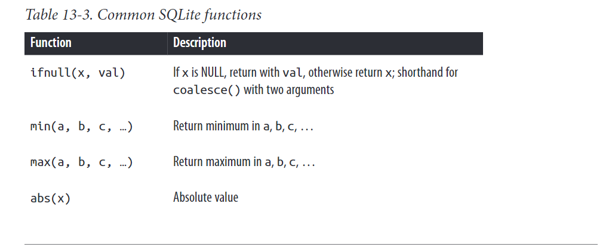</p>
<p>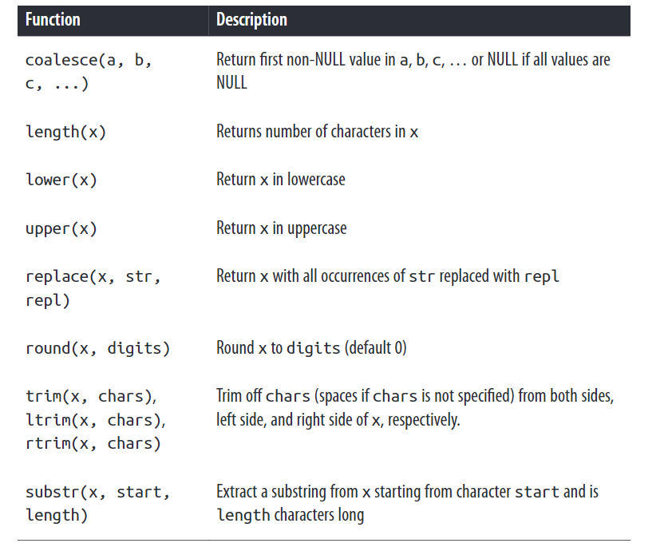</p>
<h3 id="13-2-6-SQLite-Aggregate-Functions">13.2.6 SQLite Aggregate Functions</h3>
<p>另一种函数将查询得到的结果作为输入，然后返回一个单独的值。比如 count() (某个字段非空的记录数)</p>
<p>count(*) 统计数据库行数（不考虑NULL）。</p>
<figure class="highlight shell"><table><tr><td class="gutter"><pre><span class="line">1</span><br><span class="line">2</span><br><span class="line">3</span><br><span class="line">4</span><br><span class="line">5</span><br></pre></td><td class="code"><pre><span class="line"><span class="meta">sqlite&gt;</span><span class="bash"> SELECT count(*) FROM gwascat;</span></span><br><span class="line">count(*)</span><br><span class="line">--------</span><br><span class="line">17290</span><br><span class="line"></span><br></pre></td></tr></table></figure>
<p>count(colname) 剔除 NULL</p>
<figure class="highlight plain"><table><tr><td class="gutter"><pre><span class="line">1</span><br><span class="line">2</span><br><span class="line">3</span><br><span class="line">4</span><br><span class="line">5</span><br></pre></td><td class="code"><pre><span class="line">sqlite&gt; SELECT count(pvalue) FROM gwascat;</span><br><span class="line">count(pvalue)</span><br><span class="line">-------------</span><br><span class="line">17279</span><br><span class="line"></span><br></pre></td></tr></table></figure>
<figure class="highlight plain"><table><tr><td class="gutter"><pre><span class="line">1</span><br><span class="line">2</span><br><span class="line">3</span><br><span class="line">4</span><br><span class="line">5</span><br></pre></td><td class="code"><pre><span class="line">sqlite&gt; SELECT count(*) - count(pvalue) AS number_of_null_pvalues FROM gwascat;</span><br><span class="line">number_of_null_pvalues</span><br><span class="line">----------------------</span><br><span class="line">11</span><br><span class="line"></span><br></pre></td></tr></table></figure>
<figure class="highlight plain"><table><tr><td class="gutter"><pre><span class="line">1</span><br><span class="line">2</span><br><span class="line">3</span><br><span class="line">4</span><br><span class="line">5</span><br><span class="line">6</span><br></pre></td><td class="code"><pre><span class="line">sqlite&gt; select &quot;2007&quot; AS year, count(*) AS number_entries</span><br><span class="line">   ...&gt; from gwascat WHERE date BETWEEN &quot;2007-01-01&quot; AND &quot;2008-01-01&quot;;</span><br><span class="line">year  number_entries</span><br><span class="line">----  --------------</span><br><span class="line">2007  435</span><br><span class="line"></span><br></pre></td></tr></table></figure>
<p>常见的统计命令</p>
<p>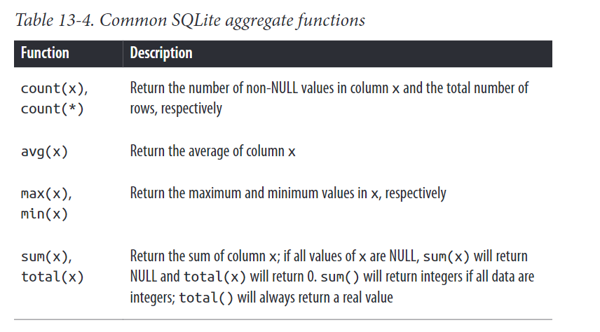</p>
<p>下面这段话没看懂</p>
<p>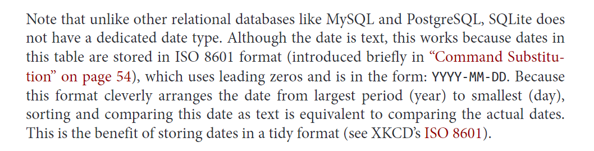</p>
<p>aggregate function 的一个好处是允许事先剔除重复值（通过 DISTINCT）。比如，假如我们要统计去重后的 rs 号的数目。</p>
<figure class="highlight plain"><table><tr><td class="gutter"><pre><span class="line">1</span><br><span class="line">2</span><br><span class="line">3</span><br><span class="line">4</span><br><span class="line">5</span><br></pre></td><td class="code"><pre><span class="line">sqlite&gt; SELECT count(DISTINCT strongest_risk_snp) AS unique_rs FROM gwascat;</span><br><span class="line">unique_rs</span><br><span class="line">---------</span><br><span class="line">13619</span><br><span class="line"></span><br></pre></td></tr></table></figure>
<h4 id="Grouping-rows-with-GROUP-BY">Grouping rows with GROUP BY</h4>
<p>很多的数据库操作和R语句很相似。</p>
<figure class="highlight plain"><table><tr><td class="gutter"><pre><span class="line">1</span><br><span class="line">2</span><br><span class="line">3</span><br><span class="line">4</span><br><span class="line">5</span><br><span class="line">6</span><br><span class="line">7</span><br><span class="line">8</span><br><span class="line">9</span><br><span class="line">10</span><br></pre></td><td class="code"><pre><span class="line">sqlite&gt; SELECT chrom, count(*) FROM gwascat GROUP BY chrom;</span><br><span class="line">chrom  count(*)</span><br><span class="line">-----  --------</span><br><span class="line">       70</span><br><span class="line">1      1458</span><br><span class="line">10     930</span><br><span class="line">11     988</span><br><span class="line">12     858</span><br><span class="line">13     432</span><br><span class="line"></span><br></pre></td></tr></table></figure>
<p>按出现次数从多到少</p>
<figure class="highlight plain"><table><tr><td class="gutter"><pre><span class="line">1</span><br><span class="line">2</span><br><span class="line">3</span><br><span class="line">4</span><br><span class="line">5</span><br><span class="line">6</span><br><span class="line">7</span><br><span class="line">8</span><br><span class="line">9</span><br><span class="line">10</span><br></pre></td><td class="code"><pre><span class="line">sqlite&gt; SELECT chrom, count(*) as nhits FROM gwascat GROUP BY chrom</span><br><span class="line">   ...&gt; ORDER BY nhits DESC;</span><br><span class="line">chrom  nhits</span><br><span class="line">-----  -----</span><br><span class="line">6      1658</span><br><span class="line">1      1458</span><br><span class="line">2      1432</span><br><span class="line">3      1033</span><br><span class="line">11     988</span><br><span class="line"></span><br></pre></td></tr></table></figure>
<figure class="highlight shell"><table><tr><td class="gutter"><pre><span class="line">1</span><br><span class="line">2</span><br><span class="line">3</span><br><span class="line">4</span><br><span class="line">5</span><br><span class="line">6</span><br><span class="line">7</span><br><span class="line">8</span><br><span class="line">9</span><br><span class="line">10</span><br><span class="line">11</span><br></pre></td><td class="code"><pre><span class="line"><span class="meta">sqlite&gt;</span><span class="bash"> select strongest_risk_snp, count(*) AS count</span></span><br><span class="line">   ...&gt; FROM gwascat GROUP BY strongest_risk_snp</span><br><span class="line">   ...&gt; ORDER BY count DESC LIMIT 5;</span><br><span class="line">strongest_risk_snp  count</span><br><span class="line">------------------  -----</span><br><span class="line">rs1260326           36</span><br><span class="line">rs4420638           30</span><br><span class="line">rs1800562           28</span><br><span class="line">rs7903146           27</span><br><span class="line">rs964184            25</span><br><span class="line"></span><br></pre></td></tr></table></figure>
<figure class="highlight plain"><table><tr><td class="gutter"><pre><span class="line">1</span><br><span class="line">2</span><br><span class="line">3</span><br><span class="line">4</span><br><span class="line">5</span><br><span class="line">6</span><br><span class="line">7</span><br><span class="line">8</span><br><span class="line">9</span><br><span class="line">10</span><br><span class="line">11</span><br><span class="line">12</span><br><span class="line">13</span><br><span class="line">14</span><br><span class="line">15</span><br><span class="line">16</span><br></pre></td><td class="code"><pre><span class="line">sqlite&gt; select strongest_risk_snp, strongest_risk_allele, count(*) AS count</span><br><span class="line">   ...&gt; FROM gwascat GROUP BY strongest_risk_snp, strongest_risk_allele</span><br><span class="line">   ...&gt; ORDER BY count DESC LIMIT 10;</span><br><span class="line">strongest_risk_snp  strongest_risk_allele  count</span><br><span class="line">------------------  ---------------------  -----</span><br><span class="line">rs1260326           T                      22</span><br><span class="line">rs2186369           G                      22</span><br><span class="line">rs1800562           A                      20</span><br><span class="line">rs909674            C                      20</span><br><span class="line">rs11710456          G                      19</span><br><span class="line">rs7903146           T                      19</span><br><span class="line">rs4420638           G                      18</span><br><span class="line">rs964184            G                      15</span><br><span class="line">rs11847263          G                      14</span><br><span class="line">rs3184504           T                      12</span><br><span class="line"></span><br></pre></td></tr></table></figure>
<p>假如我们想按照年份排序，首先我们用substr() 提取日期的前4位。</p>
<figure class="highlight plain"><table><tr><td class="gutter"><pre><span class="line">1</span><br><span class="line">2</span><br><span class="line">3</span><br><span class="line">4</span><br><span class="line">5</span><br><span class="line">6</span><br><span class="line">7</span><br><span class="line">8</span><br><span class="line">9</span><br><span class="line">10</span><br><span class="line">11</span><br><span class="line">12</span><br><span class="line">13</span><br></pre></td><td class="code"><pre><span class="line">sqlite&gt; SELECT substr(date, 1, 4) AS year FROM gwascat GROUP BY year;</span><br><span class="line">year</span><br><span class="line">----</span><br><span class="line">2005</span><br><span class="line">2006</span><br><span class="line">2007</span><br><span class="line">2008</span><br><span class="line">2009</span><br><span class="line">2010</span><br><span class="line">2011</span><br><span class="line">2012</span><br><span class="line">2013</span><br><span class="line"></span><br></pre></td></tr></table></figure>
<figure class="highlight shell"><table><tr><td class="gutter"><pre><span class="line">1</span><br><span class="line">2</span><br><span class="line">3</span><br><span class="line">4</span><br><span class="line">5</span><br><span class="line">6</span><br><span class="line">7</span><br><span class="line">8</span><br><span class="line">9</span><br><span class="line">10</span><br><span class="line">11</span><br><span class="line">12</span><br><span class="line">13</span><br><span class="line">14</span><br><span class="line">15</span><br><span class="line">16</span><br></pre></td><td class="code"><pre><span class="line"><span class="meta">sqlite&gt;</span><span class="bash"> SELECT substr(date, 1, 4) AS year,</span></span><br><span class="line">   ...&gt; round(avg(pvalue_mlog), 4) AS mean_log_pvalue,</span><br><span class="line">   ...&gt; count(pvalue_mlog) AS n</span><br><span class="line">   ...&gt; FROM gwascat GROUP BY year;</span><br><span class="line">year  mean_log_pvalue  n</span><br><span class="line">----  ---------------  ----</span><br><span class="line">2005  6.2474           2</span><br><span class="line">2006  7.234            8</span><br><span class="line">2007  11.0973          434</span><br><span class="line">2008  11.5054          971</span><br><span class="line">2009  12.6279          1323</span><br><span class="line">2010  13.0641          2528</span><br><span class="line">2011  13.3437          2349</span><br><span class="line">2012  9.6976           4197</span><br><span class="line">2013  10.3643          5406</span><br><span class="line"></span><br></pre></td></tr></table></figure>
<p>很重要的一点在于 where 语句运行早于 grouping，如果你想过滤 groups，你可以使用 having 语句。</p>
<figure class="highlight shell"><table><tr><td class="gutter"><pre><span class="line">1</span><br><span class="line">2</span><br><span class="line">3</span><br><span class="line">4</span><br><span class="line">5</span><br><span class="line">6</span><br><span class="line">7</span><br><span class="line">8</span><br><span class="line">9</span><br><span class="line">10</span><br><span class="line">11</span><br><span class="line">12</span><br><span class="line">13</span><br><span class="line">14</span><br><span class="line">15</span><br></pre></td><td class="code"><pre><span class="line"><span class="meta">sqlite&gt;</span><span class="bash"> SELECT substr(date, 1, 4) AS year,</span></span><br><span class="line">   ...&gt; round(avg(pvalue_mlog), 4) AS mean_log_pvalue,</span><br><span class="line">   ...&gt; count(pvalue_mlog) AS n</span><br><span class="line">   ...&gt; FROM gwascat GROUP BY year</span><br><span class="line">   ...&gt; HAVING count(pvalue_mlog) &gt; 10;</span><br><span class="line">year  mean_log_pvalue  n</span><br><span class="line">----  ---------------  ----</span><br><span class="line">2007  11.0973          434</span><br><span class="line">2008  11.5054          971</span><br><span class="line">2009  12.6279          1323</span><br><span class="line">2010  13.0641          2528</span><br><span class="line">2011  13.3437          2349</span><br><span class="line">2012  9.6976           4197</span><br><span class="line">2013  10.3643          5406</span><br><span class="line"></span><br></pre></td></tr></table></figure>
<h3 id="13-2-7-Subqueries">13.2.7 Subqueries</h3>
<p>如果我们想查找每个研究找到的显著位点的数目</p>
<figure class="highlight plain"><table><tr><td class="gutter"><pre><span class="line">1</span><br><span class="line">2</span><br><span class="line">3</span><br><span class="line">4</span><br><span class="line">5</span><br><span class="line">6</span><br><span class="line">7</span><br><span class="line">8</span><br><span class="line">9</span><br><span class="line">10</span><br><span class="line">11</span><br></pre></td><td class="code"><pre><span class="line">sqlite&gt; SELECT substr(date, 1, 4) AS year, author, pubmedid,</span><br><span class="line">   ...&gt; count(*) AS num_assoc FROM gwascat GROUP BY pubmedid</span><br><span class="line">   ...&gt; LIMIT 5;</span><br><span class="line">year  author         pubmedid  num_assoc</span><br><span class="line">----  -------------  --------  ---------</span><br><span class="line">2005  Klein RJ       15761122  1</span><br><span class="line">2005  Maraganore DM  16252231  1</span><br><span class="line">2006  Arking DE      16648850  1</span><br><span class="line">2006  Fung HC        17052657  3</span><br><span class="line">2006  Dewan A        17053108  1</span><br><span class="line"></span><br></pre></td></tr></table></figure>
<p>如果我们做得深一点，我们想看每个期刊每年找到的显著位点的平均数。在 SQL 的行话中，这就是说我们需要用到之前的结果，再进一步按年份分组，然后使用 avg() 计算均值（开始套娃）。这种嵌套式的query 称为 <em>subqueries</em>。我们可以通过<strong>括号</strong>来将前面的语句括起来，然后通过 FROM 语句将其视为一个数据库。</p>
<figure class="highlight shell"><table><tr><td class="gutter"><pre><span class="line">1</span><br><span class="line">2</span><br><span class="line">3</span><br><span class="line">4</span><br><span class="line">5</span><br><span class="line">6</span><br><span class="line">7</span><br><span class="line">8</span><br><span class="line">9</span><br><span class="line">10</span><br><span class="line">11</span><br><span class="line">12</span><br><span class="line">13</span><br><span class="line">14</span><br><span class="line">15</span><br><span class="line">16</span><br><span class="line">17</span><br><span class="line">18</span><br></pre></td><td class="code"><pre><span class="line"><span class="meta">sqlite&gt;</span><span class="bash"> SELECT year, avg(num_assoc)</span></span><br><span class="line">   ...&gt; FROM (SELECT substr(date, 1, 4) AS year,</span><br><span class="line">   ...&gt;     author,</span><br><span class="line">   ...&gt;     count(*) AS num_assoc</span><br><span class="line">   ...&gt;     FROM gwascat GROUP BY pubmedid)</span><br><span class="line">   ...&gt; GROUP BY year;</span><br><span class="line">year  avg(num_assoc)</span><br><span class="line">----  ----------------</span><br><span class="line">2005  1.0</span><br><span class="line">2006  1.6</span><br><span class="line">2007  5.87837837837838</span><br><span class="line">2008  7.64566929133858</span><br><span class="line">2009  6.90625</span><br><span class="line">2010  9.21660649819495</span><br><span class="line">2011  7.4968152866242</span><br><span class="line">2012  13.4536741214058</span><br><span class="line">2013  16.605504587156</span><br><span class="line"></span><br></pre></td></tr></table></figure>
<h3 id="13-2-8-Organizing-Relational-Databases-and-Joins">13.2.8 Organizing Relational Databases and Joins</h3>
<p>如果你仔细看 gwascat 表格，你会发现有很多的冗余。一个研究（看pubmedid）可能会找到多个显著的SNP，一个SNP占据一行，这些行除了SNP名称不一样，其他列都是重复的。如下图</p>
<p>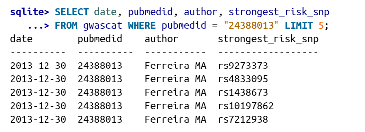</p>
<p>当你直接从表格中复制数据时，这种冗余是很常见的。对于很大的数据库，这种冗余会占据很多的额外空间。</p>
<p>在我们提及如何联合使用多个表的信息前，我们先要理解关系型数据库<strong>管理数据的哲学</strong>，来避免上面的这种情况（<em>spreadsheet syndrome</em>）。这个哲学就是 <em>database normalization</em>。</p>
<p>首先<strong>每个字段只能存储一个值</strong>。下面这个assocs 表就破坏了这个规则。这种情况下，比如你想检索 rs4833095 在不在这个表里，你不能再用 SQL 语法如下</p>
<figure class="highlight sql"><table><tr><td class="gutter"><pre><span class="line">1</span><br></pre></td><td class="code"><pre><span class="line"><span class="keyword">SELECT</span> <span class="operator">*</span><span class="keyword">FROM</span> assoc <span class="keyword">WHERE</span> strongest_risk_snp <span class="operator">=</span> &quot;rs4833095&quot;</span><br></pre></td></tr></table></figure>
<p>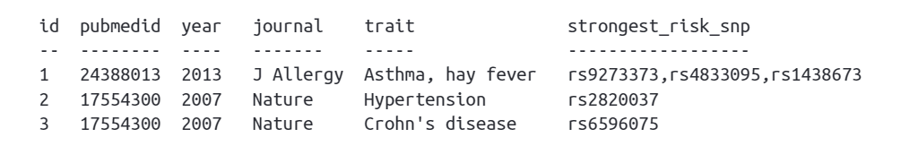</p>
<p>我们可以把多个切断切分成多行，如下图</p>
<p>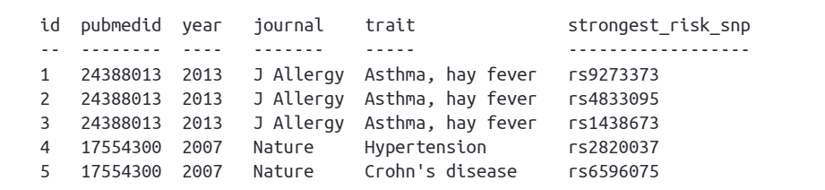</p>
<p>但是，这又造成了重复冗余，我们可以看懂 pubmedid, year, journal 是重复的。这种重复是可以避免的，而且year 和 journal 字段是依赖于 pubmedid 字段的。</p>
<p>一个更好的管理数据的方式是，将这个表格切分为两个表格（一个是GWAS结果，一个是study信息）（ trait 还有冗余，可以把 trait 也放到 studies 表中，但是逻辑就不是很清晰了。因此从逻辑上讲，GWAS 表中应该要注明是哪个性状）</p>
<p>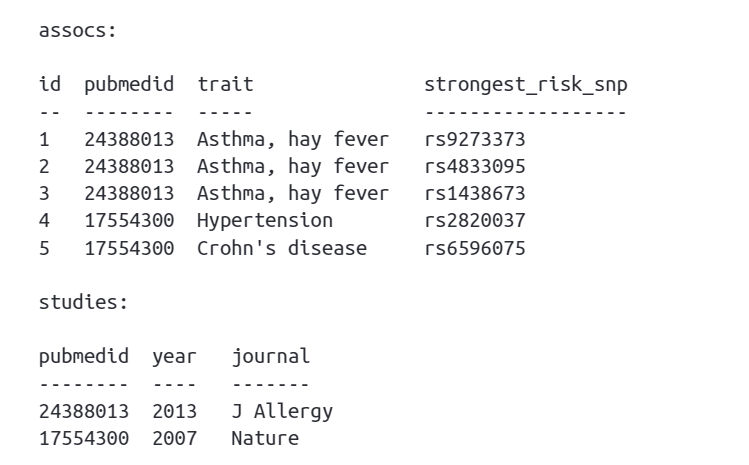</p>
<p>现在我们有两个表了，我们可以同时查询两个表格的信息。</p>
<h4 id="Inner-joins">Inner joins</h4>
<p>这里已经把这两个表放在 joins.db 中了。</p>
<figure class="highlight plain"><table><tr><td class="gutter"><pre><span class="line">1</span><br><span class="line">2</span><br><span class="line">3</span><br><span class="line">4</span><br><span class="line">5</span><br><span class="line">6</span><br></pre></td><td class="code"><pre><span class="line">$ sqlite3 joins.db</span><br><span class="line">SQLite version 3.33.0 2020-08-14 13:23:32</span><br><span class="line">Enter &quot;.help&quot; for usage hints.</span><br><span class="line">sqlite&gt; .mode columns</span><br><span class="line">sqlite&gt; .header on</span><br><span class="line"></span><br></pre></td></tr></table></figure>
<p>先查看一下两个表</p>
<figure class="highlight plain"><table><tr><td class="gutter"><pre><span class="line">1</span><br><span class="line">2</span><br><span class="line">3</span><br><span class="line">4</span><br><span class="line">5</span><br><span class="line">6</span><br><span class="line">7</span><br><span class="line">8</span><br><span class="line">9</span><br><span class="line">10</span><br><span class="line">11</span><br><span class="line">12</span><br><span class="line">13</span><br><span class="line">14</span><br><span class="line">15</span><br><span class="line">16</span><br><span class="line">17</span><br></pre></td><td class="code"><pre><span class="line">sqlite&gt; SELECT * FROM assocs;</span><br><span class="line">id  study_id  trait              strongest_risk_snp</span><br><span class="line">--  --------  -----------------  ------------------</span><br><span class="line">1   1         Asthma, hay fever  rs9273373</span><br><span class="line">2   1         Asthma, hay fever  rs4833095</span><br><span class="line">3   1         Asthma, hay fever  rs1438673</span><br><span class="line">4   2         Hypertension       rs2820037</span><br><span class="line">5   2         Crohn&#39;s disease    rs6596075</span><br><span class="line">6             Urate levels       rs12498742</span><br><span class="line"></span><br><span class="line">sqlite&gt; SELECT * FROM studies;</span><br><span class="line">id  pubmedid  year  journal</span><br><span class="line">--  --------  ----  --------------</span><br><span class="line">1   24388013  2013  J Allergy</span><br><span class="line">2   17554300  2007  Nature</span><br><span class="line">3   16252231  2005  Am J Hum Genet</span><br><span class="line"></span><br></pre></td></tr></table></figure>
<p>我们最常用的连接方式就是内连接。</p>
<p>连接条件采用 <strong>on</strong> 选项</p>
<p>由于两个表中可能含有相同名称的列名，提取列一律采用<strong>表名.列名</strong> 的方式</p>
<figure class="highlight plain"><table><tr><td class="gutter"><pre><span class="line">1</span><br><span class="line">2</span><br><span class="line">3</span><br><span class="line">4</span><br><span class="line">5</span><br><span class="line">6</span><br><span class="line">7</span><br><span class="line">8</span><br><span class="line">9</span><br></pre></td><td class="code"><pre><span class="line">sqlite&gt; SELECT * FROM assocs INNER JOIN studies ON assocs.study_id &#x3D; studies.id;</span><br><span class="line">id  study_id  trait              strongest_risk_snp  id  pubmedid  year  journal</span><br><span class="line">--  --------  -----------------  ------------------  --  --------  ----  ---------</span><br><span class="line">1   1         Asthma, hay fever  rs9273373           1   24388013  2013  J Allergy</span><br><span class="line">2   1         Asthma, hay fever  rs4833095           1   24388013  2013  J Allergy</span><br><span class="line">3   1         Asthma, hay fever  rs1438673           1   24388013  2013  J Allergy</span><br><span class="line">4   2         Hypertension       rs2820037           2   17554300  2007  Nature</span><br><span class="line">5   2         Crohn&#39;s disease    rs6596075           2   17554300  2007  Nature</span><br><span class="line"></span><br></pre></td></tr></table></figure>
<p>提取部分列（使用 AS 重命名）</p>
<figure class="highlight plain"><table><tr><td class="gutter"><pre><span class="line">1</span><br><span class="line">2</span><br><span class="line">3</span><br><span class="line">4</span><br><span class="line">5</span><br><span class="line">6</span><br><span class="line">7</span><br><span class="line">8</span><br><span class="line">9</span><br><span class="line">10</span><br></pre></td><td class="code"><pre><span class="line">sqlite&gt; SELECT studies.id AS study_id, assocs.id AS assoc_id, trait, year</span><br><span class="line">   ...&gt; FROM assocs INNER JOIN studies ON assocs.study_id &#x3D; studies.id;</span><br><span class="line">study_id  assoc_id  trait              year</span><br><span class="line">--------  --------  -----------------  ----</span><br><span class="line">1         1         Asthma, hay fever  2013</span><br><span class="line">1         2         Asthma, hay fever  2013</span><br><span class="line">1         3         Asthma, hay fever  2013</span><br><span class="line">2         4         Hypertension       2007</span><br><span class="line">2         5         Crohn&#39;s disease    2007</span><br><span class="line"></span><br></pre></td></tr></table></figure>
<p>查看 assocs 表中的 study_id 不在 studies 表中的 id 列的行（这里用到了 subqueries）</p>
<figure class="highlight plain"><table><tr><td class="gutter"><pre><span class="line">1</span><br><span class="line">2</span><br><span class="line">3</span><br><span class="line">4</span><br><span class="line">5</span><br></pre></td><td class="code"><pre><span class="line">sqlite&gt; SELECT * FROM assocs WHERE study_id NOT IN (SELECT id FROM studies);</span><br><span class="line">id  study_id  trait         strongest_risk_snp</span><br><span class="line">--  --------  ------------  ------------------</span><br><span class="line">6             Urate levels  rs12498742</span><br><span class="line"></span><br></pre></td></tr></table></figure>
<h4 id="Left-outer-joins">Left outer joins</h4>
<p>保留左边表的所有行，如果匹配不上右边的表，则右边表的字段均设置为 <strong>NULL</strong>。</p>
<p>s<strong>qlite 仅支持 left outer joins</strong>，但是其实 outer joins 还有两种类型，right outer joins （右连接，和左连接一样）和 full outer joins （全外连接返回两个表格合并的所有行）。</p>
<p>假如我们想保留 assocs 表的所有字段，无论它在不在 studies 表中</p>
<figure class="highlight plain"><table><tr><td class="gutter"><pre><span class="line">1</span><br><span class="line">2</span><br><span class="line">3</span><br><span class="line">4</span><br><span class="line">5</span><br><span class="line">6</span><br><span class="line">7</span><br><span class="line">8</span><br><span class="line">9</span><br><span class="line">10</span><br><span class="line">11</span><br></pre></td><td class="code"><pre><span class="line">sqlite&gt; SELECT * FROM assocs LEFT OUTER JOIN studies</span><br><span class="line">   ...&gt; ON assocs.study_id &#x3D; studies.id;</span><br><span class="line">id  study_id  trait              strongest_risk_snp  id  pubmedid  year  journal</span><br><span class="line">--  --------  -----------------  ------------------  --  --------  ----  ---------</span><br><span class="line">1   1         Asthma, hay fever  rs9273373           1   24388013  2013  J Allergy</span><br><span class="line">2   1         Asthma, hay fever  rs4833095           1   24388013  2013  J Allergy</span><br><span class="line">3   1         Asthma, hay fever  rs1438673           1   24388013  2013  J Allergy</span><br><span class="line">4   2         Hypertension       rs2820037           2   17554300  2007  Nature</span><br><span class="line">5   2         Crohn&#39;s disease    rs6596075           2   17554300  2007  Nature</span><br><span class="line">6             Urate levels       rs12498742</span><br><span class="line"></span><br></pre></td></tr></table></figure>
<h3 id="13-2-9-Writing-to-Databases">13.2.9 Writing to Databases</h3>
<p>由于我们通常都是一次性地将数据导入到生信数据库中，因此这里不将常见地修改和删除命令。</p>
<h4 id="Creating-tables">Creating tables</h4>
<p>在 gwas‐cat2table.db 中创建 study 表</p>
<figure class="highlight plain"><table><tr><td class="gutter"><pre><span class="line">1</span><br><span class="line">2</span><br><span class="line">3</span><br><span class="line">4</span><br><span class="line">5</span><br></pre></td><td class="code"><pre><span class="line">$ sqlite3   gwas‐cat2table.db</span><br><span class="line">SQLite version 3.33.0 2020-08-14 13:23:32</span><br><span class="line">Enter &quot;.help&quot; for usage hints.</span><br><span class="line">sqlite&gt;</span><br><span class="line"></span><br></pre></td></tr></table></figure>
<p>创建表格的基本语法是，每个字段均要设置一个偏好的数据类型（不填是 none）。</p>
<p>第一个字段通常都设置为 <code>id integer primary key</code>。每个表格均要设置一个主键，主键不能重复。</p>
<p>主键是表格的条件之一，其他还有 UNIQUE, NOT NULL, CHECK, FOREIGN KEY。</p>
<p>如果你想要创建一个复制的数据库，作者建议你看完这一章节之后，再专门看一下 SQL 的书籍。</p>
<blockquote>
<p>Thoughtfulness and planning definitely pay off when it comes to organizing a database.</p>
</blockquote>
<figure class="highlight plain"><table><tr><td class="gutter"><pre><span class="line">1</span><br><span class="line">2</span><br><span class="line">3</span><br><span class="line">4</span><br><span class="line">5</span><br><span class="line">6</span><br></pre></td><td class="code"><pre><span class="line">CREATE TABLE tablename(</span><br><span class="line">	id integer primary key,</span><br><span class="line">	column1 column1_type,</span><br><span class="line">	column2 column2_type,  </span><br><span class="line">	...</span><br><span class="line">);</span><br></pre></td></tr></table></figure>
<p>让我们创建一个简单的数据库，然后创建一个表格。</p>
<figure class="highlight plain"><table><tr><td class="gutter"><pre><span class="line">1</span><br><span class="line">2</span><br><span class="line">3</span><br><span class="line">4</span><br><span class="line">5</span><br><span class="line">6</span><br><span class="line">7</span><br><span class="line">8</span><br><span class="line">9</span><br><span class="line">10</span><br><span class="line">11</span><br></pre></td><td class="code"><pre><span class="line">$ sqlite3 practice.db</span><br><span class="line">SQLite version 3.33.0 2020-08-14 13:23:32</span><br><span class="line">Enter &quot;.help&quot; for usage hints.</span><br><span class="line">sqlite&gt; CREATE TABLE variants(</span><br><span class="line">   ...&gt;     id integerprimarykey,</span><br><span class="line">   ...&gt;     chrom text,</span><br><span class="line">   ...&gt;     start integer,</span><br><span class="line">   ...&gt;     end integer,</span><br><span class="line">   ...&gt;     strand text,</span><br><span class="line">   ...&gt;     name text);</span><br><span class="line"></span><br></pre></td></tr></table></figure>
<p>然后我们可以查看到这个表格已存在</p>
<figure class="highlight plain"><table><tr><td class="gutter"><pre><span class="line">1</span><br><span class="line">2</span><br><span class="line">3</span><br></pre></td><td class="code"><pre><span class="line">sqlite&gt; .tables</span><br><span class="line">variants</span><br><span class="line"></span><br></pre></td></tr></table></figure>
<h4 id="Inserting-records-into-tables">Inserting records into tables</h4>
<p>基本语法</p>
<figure class="highlight plain"><table><tr><td class="gutter"><pre><span class="line">1</span><br></pre></td><td class="code"><pre><span class="line">INSERTINTO tablename(column1, column2) VALUES (value1, value2);</span><br></pre></td></tr></table></figure>
<p>也可以忽略字段名（column1, column2），但是作者不建议这么做，指定字段名称更加清楚，提高<strong>可读性</strong>。</p>
<p>在之前的章节中，我们提高了主键。如果在插入的数据中，主键的值为NULL，那么数据库会自动创建一个主键（之前的主键+1，前提是主键是数字）。</p>
<p>我们可以试一下</p>
<figure class="highlight plain"><table><tr><td class="gutter"><pre><span class="line">1</span><br><span class="line">2</span><br></pre></td><td class="code"><pre><span class="line">sqlite&gt; INSERT INTO variants(id, chrom, start, end, strand, name)</span><br><span class="line">   ...&gt;  VALUES(NULL, &quot;16&quot;, 48224287, 48224287, &quot;+&quot;, &quot;rs17822931&quot;);</span><br></pre></td></tr></table></figure>
<p>查看所有记录</p>
<figure class="highlight plain"><table><tr><td class="gutter"><pre><span class="line">1</span><br><span class="line">2</span><br><span class="line">3</span><br><span class="line">4</span><br><span class="line">5</span><br></pre></td><td class="code"><pre><span class="line">sqlite&gt; SELECT * FROM variants;</span><br><span class="line">id  chrom  start     end       strand  name</span><br><span class="line">--  -----  --------  --------  ------  ----------</span><br><span class="line">    16     48224287  48224287  +       rs17822931</span><br><span class="line"></span><br></pre></td></tr></table></figure>
<p>额，打脸了，id 列还是空的。作者给的 id 是 1</p>
<p>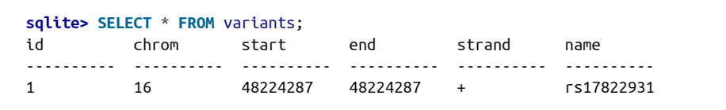</p>
<h4 id="Indexing">Indexing</h4>
<p>在简单的数据库里查询很快，但是复杂的数据库里查询很慢。这种情况下，sqlite 需要遍历所有的记录。这里有一个技巧，index a column of a table。</p>
<p>数据库索引会包含一个排好序的某一列的所有元素，还有对应的行。由于索引列的元素已经排好序了，查找起来更快（就像在书的目录中找一个词 VS 在整本书里找一个词）。</p>
<p>indexs 也有缺陷，就像书添加索引会占据额外的页数，表格的索引也会占据硬盘空间。</p>
<p>创建索引很简单。这里我们给 gwascat2table.db 数据库的 assocs 表格 的 strongest_risk_snp 字段填上索引。</p>
<figure class="highlight plain"><table><tr><td class="gutter"><pre><span class="line">1</span><br></pre></td><td class="code"><pre><span class="line">sqlite&gt; CREATE INDEX snp_idx ON assocs(strongest_risk_snp);</span><br></pre></td></tr></table></figure>
<p>可以查看索引</p>
<figure class="highlight plain"><table><tr><td class="gutter"><pre><span class="line">1</span><br><span class="line">2</span><br></pre></td><td class="code"><pre><span class="line">sqlite&gt; .indices</span><br><span class="line">snp_idx       study_id_idx</span><br></pre></td></tr></table></figure>
<p>当你更新/插入数据，<strong>索引会自动更新</strong>。</p>
<p>你需要对外键创建索引，来提高 JOIN 速度。（这里是之前建过了）</p>
<figure class="highlight plain"><table><tr><td class="gutter"><pre><span class="line">1</span><br><span class="line">2</span><br><span class="line">3</span><br><span class="line">4</span><br><span class="line">5</span><br></pre></td><td class="code"><pre><span class="line">sqlite&gt; CREATE INDEX study_id_idx ON assocs(study_id);</span><br><span class="line">Error: index study_id_idx already exists</span><br><span class="line">sqlite&gt; .indices</span><br><span class="line">snp_idx       study_id_idx</span><br><span class="line"></span><br></pre></td></tr></table></figure>
<p>如果你想要删除索引</p>
<figure class="highlight plain"><table><tr><td class="gutter"><pre><span class="line">1</span><br><span class="line">2</span><br><span class="line">3</span><br><span class="line">4</span><br></pre></td><td class="code"><pre><span class="line">sqlite&gt; DROP INDEX snp_idx;</span><br><span class="line">sqlite&gt; .indices</span><br><span class="line">study_id_idx</span><br><span class="line"></span><br></pre></td></tr></table></figure>
<h3 id="13-2-10-Dropping-Tables-and-Deleting-Databases">13.2.10 Dropping Tables and Deleting Databases</h3>
<p>删除表格的语法</p>
<figure class="highlight plain"><table><tr><td class="gutter"><pre><span class="line">1</span><br></pre></td><td class="code"><pre><span class="line">DROP TABLE table_name</span><br></pre></td></tr></table></figure>
<p>删除数据库的方式是直接删除 db 文件</p>
<h3 id="13-2-11-Interacting-with-SQLite-from-Python">13.2.11 Interacting with SQLite from Python</h3>
<p>通常我们直接使用sqlite 进行操作。但是如果你需要将 N 多个记录导入到数据库中，或者执行非常复杂的检索操作。你可以通过 API 互动操作。这里可以查看 python 的一个API</p>
<h4 id="Connecting-to-SQLite-databases-and-creating-tables-from-Python">Connecting to SQLite databases and creating tables from Python</h4>
<p>这里我们用到了一个python的标准库，sqlite3。</p>
<p>通过python 将大块数据插入到 SQLite 数据库中很方便。下面是一个简单的例子，如果连接到一个SQL数据库，并且创立新表</p>
<p></p>
<ol>
<li>使用 connect() 方法连接上数据库。</li>
<li>当我们想和sqlite 数据库使用python的接口进行交互，我们使用一个 Cursor 对象。通过创建 Cursor 对象，我们可以直接从数据库中调取数据。</li>
<li>创建表格的sql命令</li>
<li>执行命令</li>
<li>commit 会将变化写入到数据库中。</li>
<li>停止和数据库的连接。</li>
</ol>
<p>运行命令</p>
<figure class="highlight python"><table><tr><td class="gutter"><pre><span class="line">1</span><br></pre></td><td class="code"><pre><span class="line">$ python create_table.py</span><br></pre></td></tr></table></figure>
<p>运行后新建了一个数据库 <em>variants.db</em> 。我们可以查看一下</p>
<figure class="highlight plain"><table><tr><td class="gutter"><pre><span class="line">1</span><br><span class="line">2</span><br><span class="line">3</span><br><span class="line">4</span><br><span class="line">5</span><br><span class="line">6</span><br><span class="line">7</span><br><span class="line">8</span><br><span class="line">9</span><br><span class="line">10</span><br><span class="line">11</span><br><span class="line">12</span><br><span class="line">13</span><br><span class="line">14</span><br></pre></td><td class="code"><pre><span class="line">$ sqlite3 variants.db</span><br><span class="line">SQLite version 3.33.0 2020-08-14 13:23:32</span><br><span class="line">Enter &quot;.help&quot; for usage hints.</span><br><span class="line">sqlite&gt; .table</span><br><span class="line">variants</span><br><span class="line">sqlite&gt; .schema</span><br><span class="line">CREATE TABLE variants(</span><br><span class="line">        id integer primary key,</span><br><span class="line">        chrom test,</span><br><span class="line">        start integer,</span><br><span class="line">        end integer,</span><br><span class="line">        strand text,</span><br><span class="line">        rsid text);</span><br><span class="line"></span><br></pre></td></tr></table></figure>
<h4 id="Loading-data-into-a-table-from-Python">Loading data into a table from Python</h4>
<p>下一步我们需要将一些数据导入到 variants 表格中。在这个目录中，我们已经有了一个 tab分隔的文件 variants.txt</p>
<figure class="highlight shell"><table><tr><td class="gutter"><pre><span class="line">1</span><br><span class="line">2</span><br><span class="line">3</span><br><span class="line">4</span><br><span class="line">5</span><br><span class="line">6</span><br></pre></td><td class="code"><pre><span class="line"><span class="meta">$</span><span class="bash"> cat variants.txt</span></span><br><span class="line">chr10   114808901       114808902       +       rs12255372</span><br><span class="line">chr9    22125502        22125503        +       rs1333049</span><br><span class="line">chr3    46414946        46414978        +       rs333</span><br><span class="line">chr2    136608645       136608646       -       rs4988235</span><br><span class="line"></span><br></pre></td></tr></table></figure>
<p>导入数据的时候，有几个需要注意的地方。首先，确保<code>data loaded into the database is clean</code> 。也就说每列都有正确的数据类型，并且缺失值转化为了 NULL （在pyhon中是None）。虽然sqlite 允许多种数据类型，但还是要做到每个字段的数据类型一致。</p>
<p>现在我们把 variants.txt 的内容导入到新建的表中。一个简单的代码如下：</p>
<p></p>
<p></p>
<ol>
<li>
<p>首先，我们用orderdict 来存储表格中的每个字段，并且使用 str() / int() 强制数据类型。</p>
</li>
<li>
<p>通过zip函数，将列名和值组合起来。</p>
</li>
<li>
<p>没看懂，我懂了，这里的 orderdict  应该类似于下面的 dick，就是强制转换格式的。</p>
<p>下面的 <code>dick['chrom']</code>  就是 <code>str()</code> 函数</p>
 <figure class="highlight python"><table><tr><td class="gutter"><pre><span class="line">1</span><br><span class="line">2</span><br><span class="line">3</span><br><span class="line">4</span><br><span class="line">5</span><br><span class="line">6</span><br><span class="line">7</span><br><span class="line">8</span><br><span class="line">9</span><br><span class="line">10</span><br></pre></td><td class="code"><pre><span class="line"><span class="meta">&gt;&gt;&gt; </span>dick=&#123;<span class="string">&#x27;chrom&#x27;</span>:<span class="built_in">str</span>&#125;</span><br><span class="line"><span class="meta">&gt;&gt;&gt; </span>dick</span><br><span class="line">&#123;<span class="string">&#x27;chrom&#x27;</span>: &lt;<span class="built_in">type</span> <span class="string">&#x27;str&#x27;</span>&gt;&#125;</span><br><span class="line"><span class="meta">&gt;&gt;&gt; </span>dick[<span class="string">&#x27;chrom&#x27;</span>]</span><br><span class="line">&lt;<span class="built_in">type</span> <span class="string">&#x27;str&#x27;</span>&gt;</span><br><span class="line"><span class="meta">&gt;&gt;&gt; </span>dick[<span class="string">&#x27;chrom&#x27;</span>](<span class="number">1</span>)</span><br><span class="line"><span class="string">&#x27;1&#x27;</span></span><br><span class="line"><span class="meta">&gt;&gt;&gt; </span>dick[<span class="string">&#x27;chrom&#x27;</span>](<span class="number">2019</span>)</span><br><span class="line"><span class="string">&#x27;2019&#x27;</span></span><br><span class="line"></span><br></pre></td></tr></table></figure>
<p>这里没有提到缺失值的处理。建议看 GitHub 的 readme</p>
</li>
<li>
<p>又没看懂</p>
</li>
</ol>
<p>最后，我们执行一下程序</p>
<figure class="highlight python"><table><tr><td class="gutter"><pre><span class="line">1</span><br></pre></td><td class="code"><pre><span class="line">python load_variants.py variants.txt</span><br></pre></td></tr></table></figure>
<p>查看一下</p>
<figure class="highlight plain"><table><tr><td class="gutter"><pre><span class="line">1</span><br><span class="line">2</span><br><span class="line">3</span><br><span class="line">4</span><br><span class="line">5</span><br><span class="line">6</span><br><span class="line">7</span><br><span class="line">8</span><br></pre></td><td class="code"><pre><span class="line">sqlite&gt; select * from variants;</span><br><span class="line">id  chrom  start      end        strand  rsid</span><br><span class="line">--  -----  ---------  ---------  ------  ----------</span><br><span class="line">1   chr10  114808901  114808902  +       rs12255372</span><br><span class="line">2   chr9   22125502   22125503   +       rs1333049</span><br><span class="line">3   chr3   46414946   46414978   +       rs333</span><br><span class="line">4   chr2   136608645  136608646  -       rs4988235</span><br><span class="line"></span><br></pre></td></tr></table></figure>
<p>这里有一个问题，这里再for循环结束后，才进行 commit。 这在小的数据库里不是问题，对于超出内存的数据就是一个问题。但是如果每经过一次for循环一次，就commit 一次，就会很低效。为了解决这个问题， python 的 sqlite3 Cursor 对象有一个 exectutemany() 方法，…… （后面没看懂）</p>
<p>最后我们看看python 如何提取数据库的数据</p>
<figure class="highlight python"><table><tr><td class="gutter"><pre><span class="line">1</span><br><span class="line">2</span><br><span class="line">3</span><br><span class="line">4</span><br><span class="line">5</span><br><span class="line">6</span><br><span class="line">7</span><br><span class="line">8</span><br><span class="line">9</span><br></pre></td><td class="code"><pre><span class="line"><span class="meta">&gt;&gt;&gt; </span><span class="keyword">import</span> sqlite3</span><br><span class="line"><span class="meta">&gt;&gt;&gt; </span>conn = sqlite3.connect(<span class="string">&quot;variants.db&quot;</span>)</span><br><span class="line"><span class="meta">&gt;&gt;&gt; </span>c = conn.cursor()</span><br><span class="line"><span class="meta">&gt;&gt;&gt; </span>statement = <span class="string">&quot;&quot;&quot;</span></span><br><span class="line"><span class="string"><span class="meta">... </span>SELECT chrom, start, end FROM variants WHERE rsid IN (&#x27;rs12255372&#x27;, &#x27;rs333&#x27;)</span></span><br><span class="line"><span class="string"><span class="meta">... </span>&quot;&quot;&quot;</span></span><br><span class="line"><span class="meta">&gt;&gt;&gt; </span>c.execute(statement)</span><br><span class="line">&lt;sqlite3.Cursor <span class="built_in">object</span> at <span class="number">0x2b13e8423810</span>&gt;</span><br><span class="line"></span><br></pre></td></tr></table></figure>
<p>然后我们可以通过 c.fetchone() 来查看一行数据</p>
<figure class="highlight python"><table><tr><td class="gutter"><pre><span class="line">1</span><br><span class="line">2</span><br><span class="line">3</span><br><span class="line">4</span><br><span class="line">5</span><br><span class="line">6</span><br><span class="line">7</span><br></pre></td><td class="code"><pre><span class="line"><span class="meta">&gt;&gt;&gt; </span>c.fetchone()</span><br><span class="line">(<span class="string">u&#x27;chr10&#x27;</span>, <span class="number">114808901</span>, <span class="number">114808902</span>)</span><br><span class="line"><span class="meta">&gt;&gt;&gt; </span>c.fetchone()</span><br><span class="line">(<span class="string">u&#x27;chr3&#x27;</span>, <span class="number">46414946</span>, <span class="number">46414978</span>)</span><br><span class="line"><span class="meta">&gt;&gt;&gt; </span>c.fetchone()</span><br><span class="line">&gt;&gt;&gt;</span><br><span class="line"></span><br></pre></td></tr></table></figure>
<h4 id="R’s-RSQLite-Package">R’s RSQLite Package</h4>
<p>R 和 sqlite 数据库互作的包为 ：RSQLite</p>
<h3 id="13-2-12-Dumping-Databases">13.2.12 Dumping Databases</h3>
<p>sqlite 复制数据库直接复制db文件就行（这在其他数据库做不到，比附MySQL, PostgreSQL）。</p>
<p>命令行的操作方式</p>
<figure class="highlight plain"><table><tr><td class="gutter"><pre><span class="line">1</span><br><span class="line">2</span><br><span class="line">3</span><br><span class="line">4</span><br><span class="line">5</span><br><span class="line">6</span><br><span class="line">7</span><br><span class="line">8</span><br><span class="line">9</span><br><span class="line">10</span><br><span class="line">11</span><br><span class="line">12</span><br><span class="line">13</span><br><span class="line">14</span><br><span class="line">15</span><br><span class="line">16</span><br></pre></td><td class="code"><pre><span class="line">$ sqlite3 variants.db &quot;.dump&quot;</span><br><span class="line">PRAGMA foreign_keys&#x3D;OFF;</span><br><span class="line">BEGIN TRANSACTION;</span><br><span class="line">CREATE TABLE variants(</span><br><span class="line">        id integer primary key,</span><br><span class="line">        chrom test,</span><br><span class="line">        start integer,</span><br><span class="line">        end integer,</span><br><span class="line">        strand text,</span><br><span class="line">        rsid text);</span><br><span class="line">INSERT INTO variants VALUES(1,&#39;chr10&#39;,114808901,114808902,&#39;+&#39;,&#39;rs12255372&#39;);</span><br><span class="line">INSERT INTO variants VALUES(2,&#39;chr9&#39;,22125502,22125503,&#39;+&#39;,&#39;rs1333049&#39;);</span><br><span class="line">INSERT INTO variants VALUES(3,&#39;chr3&#39;,46414946,46414978,&#39;+&#39;,&#39;rs333&#39;);</span><br><span class="line">INSERT INTO variants VALUES(4,&#39;chr2&#39;,136608645,136608646,&#39;-&#39;,&#39;rs4988235&#39;);</span><br><span class="line">COMMIT;</span><br><span class="line"></span><br></pre></td></tr></table></figure>
<p>我们可以复制为一个新的数据库。下面这个命令将 variants.db 的所有表格他 dumps to a SQL file，然后再将这个 SQL file 的内容复制到一个新的数据库 variants-duplicate.db</p>
<figure class="highlight shell"><table><tr><td class="gutter"><pre><span class="line">1</span><br><span class="line">2</span><br></pre></td><td class="code"><pre><span class="line"><span class="meta">$</span><span class="bash"> sqlite3 variants.db <span class="string">&quot;.dump&quot;</span> &gt; dump.sql</span></span><br><span class="line"><span class="meta">$</span><span class="bash"> sqlite3 variants-duplicate.db &lt; dump.sql</span></span><br></pre></td></tr></table></figure>
<p>我没看懂 dump 到底是啥。这里复制db文件就可以了啊</p>
<figure class="highlight shell"><table><tr><td class="gutter"><pre><span class="line">1</span><br><span class="line">2</span><br><span class="line">3</span><br><span class="line">4</span><br><span class="line">5</span><br><span class="line">6</span><br><span class="line">7</span><br><span class="line">8</span><br><span class="line">9</span><br><span class="line">10</span><br><span class="line">11</span><br></pre></td><td class="code"><pre><span class="line"><span class="meta">$</span><span class="bash"> cp variants.db variants-duplicate2.db</span></span><br><span class="line"><span class="meta">$</span><span class="bash"> sqlite3 variants-duplicate2.db</span></span><br><span class="line">SQLite version 3.33.0 2020-08-14 13:23:32</span><br><span class="line">Enter &quot;.help&quot; for usage hints.</span><br><span class="line"><span class="meta">sqlite&gt;</span><span class="bash"> .table</span></span><br><span class="line">variants</span><br><span class="line"><span class="meta">sqlite&gt;</span><span class="bash"> select * from variants;</span></span><br><span class="line">1|chr10|114808901|114808902|+|rs12255372</span><br><span class="line">2|chr9|22125502|22125503|+|rs1333049</span><br><span class="line">3|chr3|46414946|46414978|+|rs333</span><br><span class="line">4|chr2|136608645|136608646|-|rs4988235</span><br></pre></td></tr></table></figure>
<h1>14  Conclusion</h1>
<blockquote>
<p>while we can’t be certain what future sequencing technology will allow us to do, we can be confident that Unix, Python, and R will continue to be the foundation of modern bioinformatics.</p>
</blockquote>
<blockquote>
<p><em>Bioinformatics  Data  Skills</em>  focuses  on  a  <strong>robust  and  reproducible</strong>  approach because  this  is  the  best  context  in  which  to  develop  your  bioinformatics  skills.  <strong>Distrust  of  one’s  tools  and  data</strong>  and  awareness  of  the  numerous  pitfalls  that  can  occur during  analysis  is  one  of  the  most  important  skills  to  develop.  However,  you’ll  only fully  develop  these  skills  when  you’ve  encountered  and  been  surprised  by  serious issues in your own research</p>
</blockquote>
<h2 id="14-1-Where-to-Go-From-Here">14.1 Where to Go From Here?</h2>
<blockquote>
<p>First,  I’d  recommend  you  learn  more  <em>statistics</em>  and  <em>probability</em>.</p>
</blockquote>
<blockquote>
<p>Second,  I  would  recommend  learning  some  basic  topics  in  computer  science—especially <em>algorithms</em> and <em>data structures</em>.</p>
<p>All  too  often  researchers  reach  for  more  computational power  to  parallelize  code  that  could  easily  run  on  their  desktop  machines  if  it  were written more efficiently. (我感觉这是在说我……)</p>
</blockquote>
<blockquote>
<p>For more direction into these topics, see this chapter’s README file on GitHub. I’ve included my favorite books on these subjects there—and will continue to add others as I discover them. （一定要看readme）</p>
</blockquote>
<blockquote>
<p>Finally, the last piece of advice I can give you in your path toward becoming  a  skilled  bioinformatician  is  to  <em>use  the  source</em>.  In  other  words,  read  code,and  read  lots  of  code—(especially  from  programmers  who  are  more  skilled  than you).  Developing  programming  skills  is  90%  about  experience—writing,  debugging,and  wrestling  with  code  for  years  and  years.  But  reading  and  learning  from  others’ code is like a secret shortcut in this process.（看别人的代码）</p>
</blockquote>
 
      <!-- reward -->
      
    </div>
    

    <!-- copyright -->
    
    <div class="declare">
      <ul class="post-copyright">
        <li>
          <i class="ri-copyright-line"></i>
          <strong>版权声明： </strong>
          
          本博客所有文章除特别声明外，著作权归作者所有。转载请注明出处！
          
        </li>
      </ul>
    </div>
    
    <footer class="article-footer">
       
<div class="share-btn">
      <span class="share-sns share-outer">
        <i class="ri-share-forward-line"></i>
        分享
      </span>
      <div class="share-wrap">
        <i class="arrow"></i>
        <div class="share-icons">
          
          <a class="weibo share-sns" href="javascript:;" data-type="weibo">
            <i class="ri-weibo-fill"></i>
          </a>
          <a class="weixin share-sns wxFab" href="javascript:;" data-type="weixin">
            <i class="ri-wechat-fill"></i>
          </a>
          <a class="qq share-sns" href="javascript:;" data-type="qq">
            <i class="ri-qq-fill"></i>
          </a>
          <a class="douban share-sns" href="javascript:;" data-type="douban">
            <i class="ri-douban-line"></i>
          </a>
          <!-- <a class="qzone share-sns" href="javascript:;" data-type="qzone">
            <i class="icon icon-qzone"></i>
          </a> -->
          
          <a class="facebook share-sns" href="javascript:;" data-type="facebook">
            <i class="ri-facebook-circle-fill"></i>
          </a>
          <a class="twitter share-sns" href="javascript:;" data-type="twitter">
            <i class="ri-twitter-fill"></i>
          </a>
          <a class="google share-sns" href="javascript:;" data-type="google">
            <i class="ri-google-fill"></i>
          </a>
        </div>
      </div>
</div>

<div class="wx-share-modal">
    <a class="modal-close" href="javascript:;"><i class="ri-close-circle-line"></i></a>
    <p>扫一扫，分享到微信</p>
    <div class="wx-qrcode">
      
    </div>
</div>

<div id="share-mask"></div>  
  <ul class="article-tag-list" itemprop="keywords"><li class="article-tag-list-item"><a class="article-tag-list-link" href="/tags/%E6%95%B0%E6%8D%AE%E5%88%86%E6%9E%90/" rel="tag">数据分析</a></li><li class="article-tag-list-item"><a class="article-tag-list-link" href="/tags/%E7%94%9F%E7%89%A9%E4%BF%A1%E6%81%AF/" rel="tag">生物信息</a></li></ul>

    </footer>
  </div>

   
  <nav class="article-nav">
    
      <a href="/posts/749a327e/" class="article-nav-link">
        <strong class="article-nav-caption">上一篇</strong>
        <div class="article-nav-title">
          
            逻辑回归及其他分类变量分析方法
          
        </div>
      </a>
    
    
      <a href="/posts/f06ad5f5/" class="article-nav-link">
        <strong class="article-nav-caption">下一篇</strong>
        <div class="article-nav-title">Fortran95程序设计基础学习笔记</div>
      </a>
    
  </nav>

   
<!-- valine评论 -->
<div id="vcomments-box">
  <div id="vcomments"></div>
</div>
<script src="//cdn1.lncld.net/static/js/3.0.4/av-min.js"></script>
<script src="https://cdn.jsdelivr.net/npm/valine@1.4.14/dist/Valine.min.js"></script>
<script>
  new Valine({
    el: "#vcomments",
    app_id: "yHN3kf7fHt5wvleM2DVoHLdY-gzGzoHsz",
    app_key: "RPIwmdftljIzOtAULwc7JCAp",
    path: window.location.pathname,
    avatar: "monsterid",
    placeholder: "1.昵称和邮箱必填，网址选填",
    recordIP: true,
  });
  const infoEle = document.querySelector("#vcomments .info");
  if (infoEle && infoEle.childNodes && infoEle.childNodes.length > 0) {
    infoEle.childNodes.forEach(function (item) {
      item.parentNode.removeChild(item);
    });
  }
</script>
<style>
  #vcomments-box {
    padding: 5px 30px;
  }

  @media screen and (max-width: 800px) {
    #vcomments-box {
      padding: 5px 0px;
    }
  }

  #vcomments-box #vcomments {
    background-color: #fff;
  }

  .v .vlist .vcard .vh {
    padding-right: 20px;
  }

  .v .vlist .vcard {
    padding-left: 10px;
  }
</style>

 
   
     
</article>

</section>
      <footer class="footer">
  <div class="outer">
    <ul>
      <li>
        Copyrights &copy;
        2019-2021
        <i class="ri-heart-fill heart_icon"></i> Vincere Zhou
      </li>
    </ul>
    <ul>
      <li>
        
        
        <span>
  <span><i class="ri-user-3-fill"></i>访问人数:<span id="busuanzi_value_site_uv"></span></s>
  <span class="division">|</span>
  <span><i class="ri-eye-fill"></i>浏览次数:<span id="busuanzi_value_page_pv"></span></span>
</span>
        
      </li>
    </ul>
    <ul>
      
    </ul>
    <ul>
      
    </ul>
    <ul>
      <li>
        <!-- cnzz统计 -->
        
        <script type="text/javascript" src='https://s9.cnzz.com/z_stat.php?id=1278069914&amp;web_id=1278069914'></script>
        
      </li>
    </ul>

    <!-- 与只只在一起天数 -->
	<ul>
		<li><span id="lovetime_span"></span></li>
	</ul>
    <script type="text/javascript">			
        function show_runtime() {
            window.setTimeout("show_runtime()", 1000);
            X = new Date("03/04/2021 22:11:00");
            Y = new Date();
            T = (Y.getTime() - X.getTime());
            M = 24 * 60 * 60 * 1000;
            a = T / M;
            A = Math.floor(a);
            b = (a - A) * 24;
            B = Math.floor(b);
            c = (b - B) * 60;
            C = Math.floor((b - B) * 60);
            D = Math.floor((c - C) * 60);
            lovetime_span.innerHTML = "只只和周周在一起了 " + A + "天" + B + "小时" + C + "分" + D + "秒"
        }
        show_runtime();
    </script>

  </div>
</footer>
      <div class="float_btns">
        <div class="totop" id="totop">
  <i class="ri-arrow-up-line"></i>
</div>

<div class="todark" id="todark">
  <i class="ri-moon-line"></i>
</div>

      </div>
    </main>
    <aside class="sidebar on">
      <button class="navbar-toggle"></button>
<nav class="navbar">
  
  <div class="logo">
    <a href="/"></a>
  </div>
  
  <ul class="nav nav-main">
    
    <li class="nav-item">
      <a class="nav-item-link" href="/">主页</a>
    </li>
    
    <li class="nav-item">
      <a class="nav-item-link" href="/archives">归档</a>
    </li>
    
    <li class="nav-item">
      <a class="nav-item-link" href="/categories">分类</a>
    </li>
    
    <li class="nav-item">
      <a class="nav-item-link" href="/tags">标签</a>
    </li>
    
    <li class="nav-item">
      <a class="nav-item-link" href="/friends">友链</a>
    </li>
    
    <li class="nav-item">
      <a class="nav-item-link" href="/posts/ac7827ff">我的只只</a>
    </li>
    
    <li class="nav-item">
      <a class="nav-item-link" href="/about">关于我</a>
    </li>
    
  </ul>
</nav>
<nav class="navbar navbar-bottom">
  <ul class="nav">
    <li class="nav-item">
      
      <a class="nav-item-link nav-item-search"  title="搜索">
        <i class="ri-search-line"></i>
      </a>
      
      
      <a class="nav-item-link" target="_blank" href="/atom.xml" title="RSS Feed">
        <i class="ri-rss-line"></i>
      </a>
      
    </li>
  </ul>
</nav>
<div class="search-form-wrap">
  <div class="local-search local-search-plugin">
  <input type="search" id="local-search-input" class="local-search-input" placeholder="Search...">
  <div id="local-search-result" class="local-search-result"></div>
</div>
</div>
    </aside>
    <script>
      if (window.matchMedia("(max-width: 768px)").matches) {
        document.querySelector('.content').classList.remove('on');
        document.querySelector('.sidebar').classList.remove('on');
      }
    </script>
    <div id="mask"></div>

<!-- #reward -->
<div id="reward">
  <span class="close"><i class="ri-close-line"></i></span>
  <p class="reward-p"><i class="ri-cup-line"></i>请我喝杯咖啡吧~</p>
  <div class="reward-box">
    
    <div class="reward-item">
      
      <span class="reward-type">支付宝</span>
    </div>
    
    
    <div class="reward-item">
      
      <span class="reward-type">微信</span>
    </div>
    
  </div>
</div>
    
<script src="/js/jquery-2.0.3.min.js"></script>


<script src="/js/lazyload.min.js"></script>

<!-- Tocbot -->


<script src="/js/tocbot.min.js"></script>

<script>
  tocbot.init({
    tocSelector: '.tocbot',
    contentSelector: '.article-entry',
    headingSelector: 'h1, h2, h3, h4, h5, h6',
    hasInnerContainers: true,
    scrollSmooth: true,
    scrollContainer: 'main',
    positionFixedSelector: '.tocbot',
    positionFixedClass: 'is-position-fixed',
    fixedSidebarOffset: 'auto'
  });
</script>

<script src="https://cdn.jsdelivr.net/npm/jquery-modal@0.9.2/jquery.modal.min.js"></script>
<link rel="stylesheet" href="https://cdn.jsdelivr.net/npm/jquery-modal@0.9.2/jquery.modal.min.css">
<script src="https://cdn.jsdelivr.net/npm/justifiedGallery@3.7.0/dist/js/jquery.justifiedGallery.min.js"></script>

<script src="/dist/main.js"></script>

<!-- ImageViewer -->

<!-- Root element of PhotoSwipe. Must have class pswp. -->
<div class="pswp" tabindex="-1" role="dialog" aria-hidden="true">

    <!-- Background of PhotoSwipe. 
         It's a separate element as animating opacity is faster than rgba(). -->
    <div class="pswp__bg"></div>

    <!-- Slides wrapper with overflow:hidden. -->
    <div class="pswp__scroll-wrap">

        <!-- Container that holds slides. 
            PhotoSwipe keeps only 3 of them in the DOM to save memory.
            Don't modify these 3 pswp__item elements, data is added later on. -->
        <div class="pswp__container">
            <div class="pswp__item"></div>
            <div class="pswp__item"></div>
            <div class="pswp__item"></div>
        </div>

        <!-- Default (PhotoSwipeUI_Default) interface on top of sliding area. Can be changed. -->
        <div class="pswp__ui pswp__ui--hidden">

            <div class="pswp__top-bar">

                <!--  Controls are self-explanatory. Order can be changed. -->

                <div class="pswp__counter"></div>

                <button class="pswp__button pswp__button--close" title="Close (Esc)"></button>

                <button class="pswp__button pswp__button--share" style="display:none" title="Share"></button>

                <button class="pswp__button pswp__button--fs" title="Toggle fullscreen"></button>

                <button class="pswp__button pswp__button--zoom" title="Zoom in/out"></button>

                <!-- Preloader demo http://codepen.io/dimsemenov/pen/yyBWoR -->
                <!-- element will get class pswp__preloader--active when preloader is running -->
                <div class="pswp__preloader">
                    <div class="pswp__preloader__icn">
                        <div class="pswp__preloader__cut">
                            <div class="pswp__preloader__donut"></div>
                        </div>
                    </div>
                </div>
            </div>

            <div class="pswp__share-modal pswp__share-modal--hidden pswp__single-tap">
                <div class="pswp__share-tooltip"></div>
            </div>

            <button class="pswp__button pswp__button--arrow--left" title="Previous (arrow left)">
            </button>

            <button class="pswp__button pswp__button--arrow--right" title="Next (arrow right)">
            </button>

            <div class="pswp__caption">
                <div class="pswp__caption__center"></div>
            </div>

        </div>

    </div>

</div>

<link rel="stylesheet" href="https://cdn.jsdelivr.net/npm/photoswipe@4.1.3/dist/photoswipe.min.css">
<link rel="stylesheet" href="https://cdn.jsdelivr.net/npm/photoswipe@4.1.3/dist/default-skin/default-skin.min.css">
<script src="https://cdn.jsdelivr.net/npm/photoswipe@4.1.3/dist/photoswipe.min.js"></script>
<script src="https://cdn.jsdelivr.net/npm/photoswipe@4.1.3/dist/photoswipe-ui-default.min.js"></script>

<script>
    function viewer_init() {
        let pswpElement = document.querySelectorAll('.pswp')[0];
        let $imgArr = document.querySelectorAll(('.article-entry img:not(.reward-img)'))

        $imgArr.forEach(($em, i) => {
            $em.onclick = () => {
                // slider展开状态
                // todo: 这样不好，后面改成状态
                if (document.querySelector('.left-col.show')) return
                let items = []
                $imgArr.forEach(($em2, i2) => {
                    let img = $em2.getAttribute('data-idx', i2)
                    let src = $em2.getAttribute('data-target') || $em2.getAttribute('src')
                    let title = $em2.getAttribute('alt')
                    // 获得原图尺寸
                    const image = new Image()
                    image.src = src
                    items.push({
                        src: src,
                        w: image.width || $em2.width,
                        h: image.height || $em2.height,
                        title: title
                    })
                })
                var gallery = new PhotoSwipe(pswpElement, PhotoSwipeUI_Default, items, {
                    index: parseInt(i)
                });
                gallery.init()
            }
        })
    }
    viewer_init()
</script>

<!-- MathJax -->

<script type="text/x-mathjax-config">
  MathJax.Hub.Config({
      tex2jax: {
          inlineMath: [ ['$','$'], ["\\(","\\)"]  ],
          processEscapes: true,
          skipTags: ['script', 'noscript', 'style', 'textarea', 'pre', 'code']
      }
  });

  MathJax.Hub.Queue(function() {
      var all = MathJax.Hub.getAllJax(), i;
      for(i=0; i < all.length; i += 1) {
          all[i].SourceElement().parentNode.className += ' has-jax';
      }
  });
</script>

<script src="https://cdn.jsdelivr.net/npm/mathjax@2.7.6/unpacked/MathJax.js?config=TeX-AMS-MML_HTMLorMML"></script>
<script>
  var ayerConfig = {
    mathjax: true
  }
</script>

<!-- Katex -->

<!-- busuanzi  -->


<script src="/js/busuanzi-2.3.pure.min.js"></script>


<!-- ClickLove -->

<!-- ClickBoom1 -->

<!-- ClickBoom2 -->

<!-- CodeCopy -->


<link rel="stylesheet" href="/css/clipboard.css">

<script src="https://cdn.jsdelivr.net/npm/clipboard@2/dist/clipboard.min.js"></script>
<script>
  function wait(callback, seconds) {
    var timelag = null;
    timelag = window.setTimeout(callback, seconds);
  }
  !function (e, t, a) {
    var initCopyCode = function(){
      var copyHtml = '';
      copyHtml += '<button class="btn-copy" data-clipboard-snippet="">';
      copyHtml += '<i class="ri-file-copy-2-line"></i><span>COPY</span>';
      copyHtml += '</button>';
      $(".highlight .code pre").before(copyHtml);
      $(".article pre code").before(copyHtml);
      var clipboard = new ClipboardJS('.btn-copy', {
        target: function(trigger) {
          return trigger.nextElementSibling;
        }
      });
      clipboard.on('success', function(e) {
        let $btn = $(e.trigger);
        $btn.addClass('copied');
        let $icon = $($btn.find('i'));
        $icon.removeClass('ri-file-copy-2-line');
        $icon.addClass('ri-checkbox-circle-line');
        let $span = $($btn.find('span'));
        $span[0].innerText = 'COPIED';
        
        wait(function () { // 等待两秒钟后恢复
          $icon.removeClass('ri-checkbox-circle-line');
          $icon.addClass('ri-file-copy-2-line');
          $span[0].innerText = 'COPY';
        }, 2000);
      });
      clipboard.on('error', function(e) {
        e.clearSelection();
        let $btn = $(e.trigger);
        $btn.addClass('copy-failed');
        let $icon = $($btn.find('i'));
        $icon.removeClass('ri-file-copy-2-line');
        $icon.addClass('ri-time-line');
        let $span = $($btn.find('span'));
        $span[0].innerText = 'COPY FAILED';
        
        wait(function () { // 等待两秒钟后恢复
          $icon.removeClass('ri-time-line');
          $icon.addClass('ri-file-copy-2-line');
          $span[0].innerText = 'COPY';
        }, 2000);
      });
    }
    initCopyCode();
  }(window, document);
</script>


<!-- CanvasBackground -->


    
  </div>
<script src="/live2dw/lib/L2Dwidget.min.js?094cbace49a39548bed64abff5988b05"></script><script>L2Dwidget.init({"pluginRootPath":"live2dw/","pluginJsPath":"lib/","pluginModelPath":"assets/","tagMode":false,"debug":false,"model":{"jsonPath":"live2d-widget-model-wanko"},"display":{"position":"left","width":150,"height":300,"hOffset":80,"vOffset":-70},"mobile":{"show":false,"scale":0.5},"log":false});</script></body>

</html>